The Pyretechnics Fire Behavior Library
Copyright © 2023-2026 Spatial Informatics Group, LLC
Table of Contents
- 1. Preface
- 2. Theoretical models
- 3. Data Model
- 4. Loading Data into the 3D Space-Time Cube (pyretechnics.space_time_cube)
- 5. Fuel Model and Moisture Definitions (pyretechnics.fuel_models)
- 6. Surface Fire Equations (pyretechnics.surface_fire)
- 6.1. For Developers
- 6.1.1. Module Imports
- 6.1.2. Rothermel's Surface Fire Rate of Spread Equation
- 6.1.3. Surface Fire Spread Rate Functions (No Wind No Slope)
- 6.1.4. Surface Fire Intensity Functions
- 6.1.5. Wind and Slope Factor Functions
- 6.1.6. Surface Fire Behavior Functions (No Wind No Slope)
- 6.1.7. Midflame Wind Speed
- 6.1.8. Combining Wind and Slope Vectors
- 6.1.9. Surface Elliptical Eccentricity
- 6.1.10. Surface Fire Behavior in the Direction of Maximum Spread
- 6.1.11. Surface Fire Behavior in Any Direction
- 6.2. For Users
- 6.2.1. How to Calculate the No-Wind-No-Slope Surface Fire Behavior
- 6.2.2. How to Translate the 10m Wind Speed Vector into the Midflame Wind Speed Vector
- 6.2.3. How to Calculate the Surface Fire Behavior in the Direction of Maximum Spread
- 6.2.4. How to Calculate the Surface Fire Behavior in Any Direction
- 6.1. For Developers
- 7. Crown Fire Equations (pyretechnics.crown_fire)
- 7.1. For Developers
- 7.1.1. Module Imports
- 7.1.2. Crown Fire Initiation
- 7.1.3. Passive and Active Crown Fire Spread Rate Functions
- 7.1.4. Crown Fire Intensity Functions
- 7.1.5. Crown Elliptical Eccentricity
- 7.1.6. Crown Fire Behavior in the Direction of Maximum Spread
- 7.1.7. Crown Fire Behavior in Any Direction
- 7.1.8. Combining Surface and Crown Fire Behavior
- 7.2. For Users
- 7.2.1. How to Determine Whether a Surface Fire Transitions to a Crown Fire
- 7.2.2. How to Calculate the Crown Fire Behavior in the Direction of Maximum Spread
- 7.2.3. How to Calculate the Crown Fire Behavior in Any Direction
- 7.2.4. How to Calculate the Combined Surface and Crown Fire Behavior in Any Direction
- 7.1. For Developers
- 8. Spot Fire Equations (pyretechnics.spot_fire)
- 9. Burning Cells on a Grid (pyretechnics.burn_cells)
- 10. Fire Spread Algorithm (ELMFIRE): Eulerian Level Set Method (pyretechnics.eulerian_level_set)
- 10.1. For Developers
- 10.2. For Developers OLD FIXME
- 10.2.1. The \(\phi\) Field
- 10.2.2. Fire Front Normal Vector
- 10.2.3. Numerical Solution of the \(\phi\) Field Equation
- 10.2.4. Calculate the Surface/Crown Fireline Normal Behavior
- 10.2.5. Burn Cell Normal to the Fire Perimeter
- 10.2.6. Identify Cells Near the Fire Perimeter (\(\phi = 0\))
- 10.2.7. Spread Phi Field
- 10.3. For Users
- 11. Fire Suppression Techniques (pyretechnics.suppression)
- 12. Appendices
- 12.1. Custom Types (pyretechnics.py_types)
- 12.2. Units Conversion Functions (pyretechnics.conversion)
- 12.3. Vector Utility Functions (pyretechnics.vector_utils)
- 12.4. SpaceTimeCube and LazySpaceTimeCube Tests (pyretechnics_test.test_space_time_cube)
- 12.5. Loading LANDFIRE Inputs (pyretechnics.load_landfire)
- 12.6. Cython PXD Files
- 12.6.1. pyretechnics.cy_types
- 12.6.2. pyretechnics.conversion
- 12.6.3. pyretechnics.vector_utils
- 12.6.4. pyretechnics.random
- 12.6.5. pyretechnics.space_time_cube
- 12.6.6. pyretechnics.fuel_models
- 12.6.7. pyretechnics.surface_fire
- 12.6.8. pyretechnics.crown_fire
- 12.6.9. pyretechnics.spot_fire
- 12.6.10. pyretechnics.burn_cells
- 12.6.11. pyretechnics.narrow_band_tracking
- 12.6.12. pyretechnics.eulerian_level_set
- 13. References
1. Preface
This document is a Literate Program1, containing both the source code of the software it describes as well as the rationale used in each step of its design and implementation. The purpose of this approach is to enable both programmers and non-programmers alike to retrace the author's footsteps as they read through the text and code. By the time they have reached the end of this document, the reader should have just as strong a grasp of the system as the original programmer.
The source code repository containing this document provides a comprehensive reproducible development environment through the use of the open source GNU Guix2 transactional package manager. This tool will automatically install all the software needed to tangle, detangle, weave, test, build, and install this library on your machine without conflicting with the main package manager of your operating system. See README.md for more details.
2. Theoretical models
FIXME overview for expert readers.
2.1. Fire front propagation
2.1.1. Propagating fire fronts from spread rates
At its core, Pyretechnics mdoels fire spread by calculating spread rates; a spread rate is the velocity at which an infinitesimal segment of the flaming front advances in the direction perpendicular to itself. That is, Pyretechnics calculates a function \(V(\vec{n}, Z(\vec{x}, t), \theta)\), in which:
- \(\vec{x}\) is the spatial location;
- \(t\) is the time variable;
- \(Z(\vec{x}, t)\) is a vector representing the local conditions (fuels, topography and weather variables);
- \(\vec{n}\) is the unit vector normal to the fire front (pointing outward).
- \(\theta\) is a vector of model parameters, i.e. settings that the user can adjust.
- \(V(\vec{n}, Z, \theta)\) is the spread rate.
The above is a widely adopted class of models, implemented e.g. in FARSITE (Finney 2004), ELMFIRE (Lautenberger 2013), ForeFire, Prometheus (Tymstra et al. 2010), FireStarrr. This is a broad class of models in that the function \(V\) can vary significantly across models; however, this class is also quite narrow in some ways:
- \(V\) does not use any curvature information or higher-order spatial variability of the fire front, only the front-normal vector \(\vec{n}\).
- \(V\) is only informed by the local fuels and weather conditions.
- 2D space is partitioned in a binary fashion into burnt and unburnt regions, a simplification that makes the front infinitely thin and vertically uniform.
Another limitation is that Pyretechnics does not capture fire-atmosphere coupling, i.e. Pyretechnics does not model the feedback of the fire on the atmosphere. Instead, weather are supplied as an input and fire progression is derived downstream of it. If coupling is desired, one approach would be to interleave small intervals of Pyretechnics front propagation with updates to the weather inputs, using an external weather model.
2.1.2. Deriving the spread rate from Rothermel and crowning equations
The Rothermel model (Rothermel 1972; Andrews 2018) is a widely adopted set of equations for computing the spread rate of surface fire in the direction of fastest spread, sometimes called the heading fire spread rate or max spread rate; the direction of fastest spread is typically a middle ground between the downwind and upslope directions. The Rothermel model alone is not sufficient for computing \(V(\vec{n}, Z, \theta)\) in all front orientations, because:
- It does not predict the spread rate for non-heading front orientations;
- It does not predict crown fire spread rates.
Similarly to FARSITE and ELMFIRE, Pyretechnics fills this gap as follows:
- Pyretechnics generalizes Rothermel spread rate to all front orientations by assuming that surface fire follows Huygens' Principle with an elliptical wavelet shape (Anderson et al. 1982; Knight and Coleman 1993; Richards 1995); the Rothermel model determines the maximum radial velocity of the wavelet, while another model computes the elliptical length-to-width ratio based on wind speed. Note that this generalization is different from the one use in WFR-Fire (FIXME cite) and ForeFire's default Rothermel implementation (FIXME cite), which instead project the wind and slope vectors onto the front-normal direction.
- Pyretechnics derives a fireline intensity from the surface fire spread rate and local conditions \(Z\); then, based on canopy characteristics, it determines whether crown fire occurs. If so, the spread rate may be adjusted to be (much) higher than the surface spread rate. See section 7.1.2 for more details.
Let us formalize the above description. Huygens' Principle treats each in the burned region as a secondary point source ignition, expanding the burned region by an infinitesimal wavelet, which can be described by a radial velocity function \((\vec{u} \mapsto W(\vec{u}, \vec{x}, t))\) mapping each unit vector \(\vec{u}\) to a speed (in m/s) describing the rate of expansion of the wavelet along that direction: for each point \(\vec{x}\) in the burned region at \(t\), and each unit vector \(\vec{u}\) the segment \([\vec{x}, \vec{x} + dt W(\vec{u}, \vec{x}, t) \vec{u}]\) is in the burned region at \((t + dt)\). Then, the spread rate can be deduced from \(W\) and the front-normal unit vector \(\vec{n}\) as:
\begin{align} V(\vec{n}) = \sup_{|\vec{u}| = 1}{W(\vec{u}) \vec{u} \cdot \vec{n}} \end{align}in which we have made the dependency on coordinates \((\vec{x}, t)\) implicit.
Now, we add the assumption that the wavelet is shaped as an ellipse, with its origin (ignition point) on the main axis. The elliptical dimensions are specified by:
- A unit vector \(\vec{u}_H\) describing the direction of fastest spread (``heading'');
- A maximum spread rate \(V_H\), describing the radial velocity in direction \(\vec{u}_H\);
- A backing spread rate \(V_B\) (the ``rear length'' of the ellipse);
- A length-to-width ratio \((L/W) \geq 1\), such that the width of the ellipse is \((L/W)^{-1}(V_H + V_B)\)
Then, it can be seen (nontrivially (Richards 1995; Catchpole, Mestre, and Gill 1982)) that the front-normal spread rate induced by this wavelet is
\begin{align}\label{eq:elliptical-ros} V_{/}(\vec{n}) = \frac{V_H - V_B}{2}(\vec{u}_H \cdot \vec{n}) + V_H \sqrt{1 + \left((L/W)^2 - 1\right)\left( \vec{u}_H \cdot \vec{n} \right)^2} \end{align}in which \(V_F\) is the flanking spread rate that follows from the elliptical dimensions:
\begin{align} V_F := \frac{V_H + V_B}{2 (L/W)} \end{align}Like FARSITE (Finney 2004), Pyretechnics will further assume that the wavelet has its origin at a focus of the ellipse; this eliminates one degree of freedom by relating the elliptical dimensions to the excentricity \(E\) of the ellipse:
\begin{align} E &= \sqrt{1 - (L/W)^{-2}} \\ V_B &= \frac{1-E}{1+E} V_H \end{align}Remark: we adopted notation \(V_{/}\) to signal that the above calculations hold in the plane tangential to the slope: all vectors considered are assumed to be in this slope-tangential plane, as in FARSITE (Finney 2004) or Prometheus (Tymstra et al. 2010). Some corrections will be required ot translate from slope-tangential to horizontal spread rates, the latter being more practical in numerical code - see section 2.1.4.
With this general background on elliptical wavelets, we are now ready to formulate the spread rate calculations of Pyretechnics. Assuming a front-normal vector \(\vec{n}\), here is how Pyretechnics calculates the front-normal spread rate at \((\vec{x}, t)\):
- Based on environmental conditions \(Z(\vec{x}, t)\) (fuels, topography, surface wind and fuel moisture), Pyretechnics applies the Rothermel model with wind and slope vectoring (Andrews 2018), yielding maximum spread rate and direction \(V_H^{(s)}, \vec{u}_H^{(s)}\) for surface fire. See code in section 6.1.10.
- Pyretechnics further derives a length-to-width ratio \((L/W)^{(s)}\), using either equation 9 of Rothermel (Rothermel 1991) or the formula in the Behave library; depending on parameter
surface_lw_ratio_model(rothermelorbehave). See code in section 6.1.9. - The above combine into elliptical dimensions for a surface fire wavelet, from which a front-normal spread rate \(V^{(s)}(\vec{n})\) is derived using the above formulas. See code in section 6.1.11.
- Based on (Wagner 1977), Pyretechnics calculates a threshold of fireline intensity, and therefore of spread rate, to determine whether crown fire may occur (see 7.1.2). If \(V^{(s)}(\vec{n})\) exceeds this threshold, an elliptical wavelet for crown fire is computed, using (Cruz, Alexander, and Wakimoto 2005) for the maximum velocity \(V_H^{(c)}, \vec{u}_H^{(s)}\) for crown fire (see 7.1.6), and equation 10 of Rothermel (Rothermel 1991) for the length-to-width ratio \((L/W)^{(c)}\) (see 7.1.5). Again, these elliptical dimensions are derived entirely from environmental conditions \(Z(\vec{x}, t)\). See code in section 7.1.7. This yields a crown fire spread rate \(V^{(c)}(\vec{n})\).
- Then, the final spread rate is resolved as the fastest of the surface and crown spread rates, i.e. \(V(\vec{n}) := \max (V^{(s)}(\vec{n}), V^{(c)}(\vec{n}))\). See code in section 7.1.8.2.
2.1.3. Mathematical formalization: level-set method and Hamilton-Jacobi equation
Although the notion of front-normal spread rate is intuitive to many fire modelers, its mathematical formalization is not trivial: in particular, one difficulty is that the front-normal vector \(\vec{n}\) may not exist at some points where the fire front forms sharp corners, as can happen when two fronts merge. The approach that seems to have emerged among mathematicians is the level-set method (Giga 2002; Osher, Fedkiw, and Piechor 2004), which consist of representing the evolution of the fire using a Hamilton-Jacobi partial differential equation:
\begin{align}\label{eq:hamilton-jacobi} \frac{\partial}{\partial t}\phi(\vec{x}, t) = - H_V(\nabla \phi(\vec{x}, t), Z(\vec{x}, t), \theta) \end{align}In the above \(\phi(\vec{x}, t) \in \mathbb{R}\) is a scalar field representing the state of the fire: at time \(t\), the burned region is given by the 0-sublevel set \(\{\vec{x} | \phi(\vec{x}, t) < 0 \}\). \(\nabla \phi(\vec{x}, t)\) is the spatial gradient of \(\phi\), and \(H_V(\vec{p}, Z, \theta)\) is the Hamiltonian function derived from \(V\):
\begin{align}\label{eq:hamiltonian} H_V(\vec{p}, Z, \theta) := V(|\vec{p}|^{-1} \vec{p}, Z, \theta) |\vec{p}| \end{align}which is extended by continuity to \(H_V(\vec{0}, Z, \theta) = 0\). We require that \(\phi\) be a viscosity solution (Crandall and Lions 1983; Koike 2004) to the Hamilton-Jacobi equation; this notion of weak solution eliminates our ill-posedness difficulties related to \(\vec{n}\) not being defined everywhere, while offering appealing properties in terms of existence, uniqueness and stability of solutions.
Astute readers will observe that there is much arbitrariness in the choice of the \(\phi\) function: indeed, for a given initial state of the fire front at \(t = 0\), there is an infinity of initial fields \(\phi |_{t=0}\) that are consistent with it. Thankfully, the choice of \(\phi |_{t=0}\) does not change the predicted evolution of the burned region, a property known as invariance (Giga 2002) in the level set method literature.
An important question is whether the Hamiltonian \(H_V\) is convex in variable \(\vec{p}\), as that informs whether the front propagation satisfies Huygens' Principle (Waeselynck and Saah 2026; Richards 1995), and which numerical schemes are viable for simulating front propagation. Like FARSITE and ELMFIRE, and unlike Prometheus, the Hamiltonian computed by Pyretechnics is convex for surface-only fires, but not in conditions that yield a transition from surface to crown fire (Waeselynck and Saah 2026).
The level-set method is useful not only for mathematical conceptualization, but also as an approach to designing numerical solvers for the evolution of the fire front (Sethian 1996) FIXME CITE OTHERS, Indeed, at the time of writing, the numerical solver used by Pyretechnics is based on the level-set method, similarly to ELMFIRE (see section FIXME).
2.1.4. Converting from slope-tangential to horizontal spread rates
As mentioned in section 2.1.2, model calculations naturally yield a spread rate in the slope-tangential plane, while numerical schemes typically need a spread rate in the horizontal plane. This section explains how to convert from one to the other. Readers should be warned that this geometry problem tends to defy visual intuition. In particular, it is not as simple as projecting the slope-tangential spread rate onto the horizontal plane, e.g.:
- The vertical projection does not preserve normality, e.g. projecting a slope-tangential vector that is perpendicular to the slope-tangential fireline does yield a vector that is not perpendicular to the horizontal fireline.
- Likewise, vertically projecting an ellipse does yield an ellipse, but does not generally preserve its main axis.
In Pyretechnics, numerical code will not directly require the horizontal spread rate function \(\underline{V}(\vec{n})\), but its generalization, the horizontal Hamiltonian \(\underline{H}\):
\begin{align} \underline{H}(\vec{p}) := \underline{V}(|\vec{p}|^{-1} \vec{p}) |\vec{p}| \end{align}in which \(\vec{p}\) is a horizontal vector.
We assume that fire model calculations yield give us a slope-tangential Hamiltonian
\begin{align} H_{/}(\vec{p}_{/}) := V_{/}(|\vec{p}_{/}|^{-1} \vec{p}_{/}) |\vec{p}_{/}| \end{align}in which \(\vec{p}_{/}\) must be a slope-tangential vector.
Then, we can convert from slope-tangential to horizontal by:
\begin{align} \underline{H}(\vec{p}) = \underline{H}_{/}(\pi_{/}(\vec{p})) \end{align}in which \(\pi_{/}(\cdot)\) denotes the orthogonal projector onto the slope-tangential plane, which can be expressed in terms of the slope-normal unit vector \(\vec{n}_{/}\) as:
\begin{align} \pi_{/}(\vec{p}) = \vec{p} - (\vec{p} \cdot \vec{n}_{/}) \vec{n}_{/} \end{align}Note that \(\vec{n}_{/}\) can be expressed from the gradient of the elevation map \(h(\vec{x})\) as:
\begin{align} \vec{n}_{/} = \left( 1 + | \nabla h |^2 \right)^{-1/2} (\vec{u}_z - \nabla h) \end{align}where \(\vec{u}_z\) is the unit vector in the vertical direction. Also note that \(\nabla h\) is a horizonal vector, e.g. expressible in horizontal cartesian coordinates as:
\begin{align} \nabla h = \frac{\partial h}{\partial x} \vec{u}_x + \frac{\partial h}{\partial y} \vec{u}_y \end{align}The above calculations are equivalent to the slope calculations implemented in Prometheus and FARSITE (Finney 2004; Tymstra et al. 2010).
2.2. Fire intensity calculations
Pyretechnics uses the formula from Byram (Byram 1959) to compute the fireline intensity \(I\) (in W/m). Flame length is then derived from fireline intensity. Fireline intensity is related to rate of spread \(R\) (in m/s) and areal heat output \(A\) (in J/m) as:
\begin{align} I = R \times A \end{align}\(A\) is determined by environmental conditions. Therefore, given environmental conditions, fireline intensity is proportional to rate of spread. This fact enables to calculate some quantities directly from the rate of spread, which is used in some parts of the code.
This overview is enough to reason about the model's fire behavior calculations at a high level. More details can be found in section 6.1.4.
2.3. Propagation-free calculations
Pyretechnics also supports doing fire behavior calculations without simulating fire spread, for example by computing heading fire behavior metrics at every point of the landscape. To do this, Pyretechnics provides functions to compute fire behavior in any cell of the landscape with a user-supplied orientation of the fire front. See sections FIXME for details.
2.4. Long-rage spotting from firebrands
Pyretechnics supports modeling long-rage spotting from firebrands - that is, secondary ignitions started by embers transported by the wind. Here is an overview of the approach:
- When a cell burned, an expected number \(\nu\) of firebrands emitted by the cell is computed. Currently, this number is proportional to heat output; the proportionality factor is a user setting.
- The nubmer of emitted firebrands is a drawn as a Poisson random variable with mean \(\nu\).
- A transport distribution (i.e. the distribution of where the firebrand will land) is computed based on the weather conditions and fire behavior at the site of emissions, along with some global user-settable parameters. This distribution is log-normal in the downwind direction, and normal in the crosswind direction, following the approach of (FIXME cite Sardoy).
Each firebrand is flown independently by drawing from this distribution.
- Whether the firebrands ignities a spot fire is determined by a probability computed from the local conditions at the landing site. If so, the sport fire started after a fixed time interval after emission.
Details and code will be provided in section FIXME. This model is quite crude; the rationale of the authors is that there is currently too much uncertainty in firebrands emissions and transport to benefit from a more sophisticated model. Users who find this model too limited might want to interleave their own spotting model with Pyretechnics execution.
2.5. FIXME suppression support
3. Data Model
3.1. Working in a 3D Space-Time Cube
In Pyretechnics, a fire is viewed as a three-dimensional event occurring within a bounded region of space-time \((T,Y,X)\). In this mental model, the environment in which a fire develops can be visualized as a cube in which space is described in 2D by the \(X\) and \(Y\) dimensions and time projects this 2D world into 3D along the \(T\) dimension.
Note, in particular, that this is not the same thing as a three-dimensional model of fire behavior that incorporates surface elevation as the third dimension. Although terrain data (such as elevation, slope, and aspect) and tree cover characteristics (such as canopy height and canopy base height) are incorporated into the implemented spread equations in order to determine the rate, direction, and mode of fire spread, the outputs of the fire behavior algorithms in Pyretechnics currently only use two dimensions to describe spatial heterogeneity within the simulation environment. The third dimension is instead reserved for temporal variations in the model inputs and outputs.
3.2. Fires as Conical Shapes in Space-Time
All fire events begin from an ignition somewhere in space-time. As combustion and propagation occur in burnable fuels, the burned area (a.k.a "burn scar") of a fire spreads monotonically outward in space. Viewed from the lens of our 3D space-time cube, these monotonically expanding burn scars form conical solids within the simulation environment, with the bottom point of the cone representing the initial ignition point and the upper edge of the cone representing the actively burning fire perimeter. Of course, we only expect idealized fire cones to appear in environments with homogeneous topography, weather, fuels, and fuel moisture. As these inputs become more heterogenous throughout the burned region of space-time, these idealized cones will become distorted in the directions of faster or slower spread and their perimeters may become more finely dissected. However, we use this conical shape description of fire events within the simulated space-time cube to convey both their monotonically increasing spatial area over time as well as to provide the foundation for a more visually intuitive understanding of the effect of temporally varying environmental conditions on the behavior (and thus shape) of fires.
3.3. Support for Input Datasets of Varying Dimensionality
At the beginning of a fire behavior simulation, our 3D space-time cube will be populated with all of the information that describes the environment and will remain effectively static as the fire event unfolds. This includes (but is not limited to) topography, weather, fuels, and fuel moisture. In many common simulation scenarios, we expect that topography and fuels will probably vary in space but not in time, and weather and fuel moisture may vary in both space and time. However, we use "may" in these statements because the data model within Pyretechnics is flexibly designed to allow any of these environmental input variables to take on any of these forms:
- Constant
- Constant in both space and time.
Example: A single constant foliar moisture value could be used over the simulation area for the entire simulation duration. - Temporal
- Constant in space but variable in time.
Example: An hourly sequence of spread rate adjustment factors could be used to globally ramp up and down fire spread rates throughout a day/night cycle, creating burn periods of arbitrary length and intensity. - Spatial
- Variable in space but constant in time.
Example: A raster layer downloaded from LANDFIRE3 can be used to specify the spatial distribution of FBFM40 fuel model values on a landscape. - Spatio-temporal
- Variable in both space and time.
Example: Hourly RTMA4 weather data can be loaded from a multi-band raster and used to specify the spatio-temporal distribution of wind speed and direction throughout the simulation domain.
This is accomplished by representing each such input value as an abstract datatype with a set of 3D space-time lookup functions for accessing its values within 0D, 1D, 2D, and 3D slices of the space-time cube at the simulation resolution. Such lookups should always be referentially transparent, so as to ensure that subsequent lookups with the same coordinate will always yield the same values. See section 4 for implementation details.
3.4. Support for Input Datasets of Varying Resolution
Even when dimensions are the same between input datasets, they may be provided at different resolutions from one another, provided that the following conditions are met:
- Same Projection
- All spatially varying datasets must share the same projection.
- Same Extent
- All spatial and temporal extents must match.
- Data Resolutions No Greater Than Simulation Resolutions
- All spatial and temporal resolutions must be less than or equal to the simulation resolutions.
The simulated space-time cube will share the same projection and extent as the input datasets, but its resolution may be specified by the user, provided that it meets condition 3 above. The 3D lookup functions for each input will then be responsible for translating the space-time coordinates they receive at the simulation resolution into the correct coordinates for their underlying dataset's native resolution. See section 4 for implementation details.
4. Loading Data into the 3D Space-Time Cube (pyretechnics.space_time_cube)
4.1. For Developers
The following sections define Python classes that construct 3D space-time cubes corresponding to the data model described above for various types of input datasets.
4.1.1. Module Imports
import cython import cython as cy from functools import reduce import numpy as np if cython.compiled: from cython.cimports.numpy import ndarray from cython.cimports.pyretechnics.cy_types import pyidx else: from numpy import ndarray from pyretechnics.py_types import pyidx
4.1.2. Utility Functions
@cy.cfunc @cy.inline @cy.exceptval(check=False) def is_pos_int(x: object) -> cy.bint: return isinstance(x, int) and x > 0 @cy.cfunc def divide_evenly(dividend: cy.int, divisor: cy.int) -> cy.int: if divisor == 0: raise ValueError(f"{divisor} may not be zero.") else: quotient : cy.int = dividend // divisor remainder: cy.int = dividend % divisor if remainder == 0: return quotient else: raise ValueError(f"{dividend} must be an exact multiple of {divisor}.") @cy.ccall @cy.exceptval(check=False) def to_positive_index_range(index_range: tuple[pyidx, pyidx]|None, axis_length: pyidx) -> tuple[pyidx, pyidx]: """ Translate None and negative indices to positive indices. """ if index_range is None: return (0, axis_length) else: start: pyidx|None = index_range[0] stop : pyidx|None = index_range[1] return ( 0 if start is None else axis_length + start if start < 0 else start, axis_length if stop is None else axis_length + stop if stop < 0 else stop ) @cy.cfunc def stretch_array(old_array: ndarray, new_length: cy.int, repetitions: cy.float) -> ndarray: new_array: ndarray = np.zeros(new_length, dtype=old_array.dtype) i : pyidx for i in range(new_length): new_array[i] = old_array[int(i / repetitions)] return new_array @cy.cfunc def maybe_repeat_array(maybe_array: ndarray, axis_repetitions: tuple[pyidx, cy.float]) -> ndarray: """ Return a new array that is created by repeating the elements from the input array repetitions times along the specified array axis. Avoid allocating new memory if repetitions == 1 or if the repeated array axis has length 1. """ axis : pyidx = axis_repetitions[0] repetitions: cy.float = axis_repetitions[1] old_array : ndarray = np.asarray(maybe_array) array_dims : pyidx = old_array.ndim array_shape: list = list(np.shape(old_array)) axis_length: cy.int = array_shape[axis] if repetitions == 1.0: # no repetitions necessary return old_array elif axis_length == 1: # broadcast single-element axis repetitions times array_shape[axis] = int(repetitions) return np.broadcast_to(old_array, array_shape) elif repetitions % 1.0 == 0.0: # repeat each element on the chosen axis repetitions times return np.repeat(old_array, int(repetitions), axis) elif axis == 0 and array_dims == 1: # populate a new 1D array of the expected length by translating its indices into the original array new_axis_length: cy.int = int(axis_length * repetitions) return stretch_array(old_array, new_axis_length, repetitions) elif axis == 0 and array_dims == 2: # populate a new 2D array of the expected length by translating its indices into the original array new_rows: cy.int = int(axis_length * repetitions) return np.stack([old_array[int(i / repetitions)] for i in range(new_rows)]) elif axis == 1 and array_dims == 2: # populate a new 2D array of the expected length by translating its indices into the original array old_rows: cy.int = array_shape[0] new_cols: cy.int = int(axis_length * repetitions) return np.stack([stretch_array(old_array[i], new_cols, repetitions) for i in range(old_rows)]) elif axis == 0 and array_dims == 3: # populate a new 3D array of the expected length by translating its indices into the original array new_bands: cy.int = int(axis_length * repetitions) return np.stack([old_array[int(b / repetitions)] for b in range(new_bands)]) elif axis == 1 and array_dims == 3: # populate a new 2D array of the expected length by translating its indices into the original array old_bands: cy.int = array_shape[0] new_rows : cy.int = int(axis_length * repetitions) return np.stack([ np.stack([ old_array[b, int(i / repetitions)] for i in range(new_rows) ]) for b in range(old_bands) ]) elif axis == 2 and array_dims == 3: # populate a new 3D array of the expected length by translating its indices into the original array old_bands: cy.int = array_shape[0] old_rows : cy.int = array_shape[1] new_cols : cy.int = int(axis_length * repetitions) return np.stack([ np.stack([ stretch_array(old_array[b,i], new_cols, repetitions) for i in range(old_rows) ]) for b in range(old_bands) ]) else: raise ValueError("Floating point repetitions are only supported for 1D, 2D, and 3D arrays.")
4.1.3. ISpaceTimeCube Class
The ISpaceTimeCube class provides an abstract parent class from which both the SpaceTimeCube and LazySpaceTimeCube classes inherit. Because of this, functions which accept an ISpaceTimeCube can provide polymorphism over these two child classes.
@cy.cclass class ISpaceTimeCube: @cy.cfunc @cy.exceptval(check=False) def get(self, t: pyidx, y: pyidx, x: pyidx) -> cy.float: pass
4.1.4. SpaceTimeCube Class
When an input dataset is already loaded into memory as either a single
scalar value or a 1D, 2D, or 3D array of values, it can be made
available to the various Pyretechnics algorithms by wrapping it in a
SpaceTimeCube object. As described in sections 3.3 and 3.4, this input data can be provided in a variety of
dimensions and resolutions, subject to some simple constraints.
The SpaceTimeCube object will be created with a tuple of
user-specified spatio-temporal resolutions, called the cube shape,
which must be greater than or equal to those of the underlying data.
For memory efficiency, input values are stored within the
SpaceTimeCube object at their native resolution but can be accessed
at any spatio-temporal point or region within the SpaceTimeCube's
extent using coordinates from the cube shape resolution.
The various accessor functions provided by this class receive 3D space-time coordinates at the cube shape resolution and will correctly map them into the corresponding index within the native dataset. Whenever a bounded region of space-time is requested via an accessor function, the underlying data will be expanded to fill a new Numpy array at the cube shape resolution. Whenever possible, Numpy array broadcasting will be used instead of data copying for any constant input dimensions.
@cy.cclass class SpaceTimeCube(ISpaceTimeCube): """ Create an object that represents a 3D array with dimensions (T,Y,X) given by cube_shape. Internally, data is stored as a 3D Numpy array at the resolution of the provided base data. Whenever a point value or contiguous space-time region of values is requested, translate the given cube_shape coordinates into base coordinates, look up the values from the base data, expand them (if necessary) back into the cube_shape resolution, and return the resulting scalar value or array to the caller. """ ndim : cy.int size : cy.ulonglong shape : tuple[cy.int, cy.int, cy.int] base : object t_repetitions: cy.float y_repetitions: cy.float x_repetitions: cy.float data : cy.float[:,:,::1] # FIXME: Restore polymorphism for the underlying Numpy arrays def __init__(self, cube_shape: tuple[int, int, int], base: object) -> cy.void: """ NOTE: The resolutions in cube_shape must be exact multiples of any existing dimensions in the base data. If base is not a Numpy float32 array, a new array will be allocated. """ # Ensure that cube_shape contains 3 values or throw an error if len(cube_shape) != 3: raise ValueError("The cube_shape must contain exactly three values.") # Unpack the cube_shape values without type-checking cube_bands_: object = cube_shape[0] cube_rows_ : object = cube_shape[1] cube_cols_ : object = cube_shape[2] # Ensure that cube_shape only contains positive integers or throw an error if not(is_pos_int(cube_bands_) and is_pos_int(cube_rows_) and is_pos_int(cube_cols_)): raise ValueError("The cube_shape must contain only positive integers.") # Cast the cube_shape values as primitive ints cube_bands: cy.int = cube_bands_ cube_rows : cy.int = cube_rows_ cube_cols : cy.int = cube_cols_ # Store the cube metadata for later self.ndim = 3 self.size = cube_bands * cube_rows * cube_cols self.shape = (cube_bands, cube_rows, cube_cols) self.base = base # Store the base data as a 3D array along with its axis repetitions base_dimensions: cy.int = np.ndim(base) if base_dimensions == 0: # 0D: Constant Input self.t_repetitions = cube_bands self.y_repetitions = cube_rows self.x_repetitions = cube_cols self.data = np.asarray([[[base]]], dtype=np.float32) elif base_dimensions == 1: # 1D: Time-Series Input base_bands: cy.int = len(base) self.t_repetitions = float(cube_bands) / float(base_bands) self.y_repetitions = cube_rows self.x_repetitions = cube_cols # Ensure that the cube_shape is not smaller than the base shape if cube_bands < base_bands: raise ValueError("The cube_shape may not be smaller than the base shape.") # Warn if any repetitions are not whole numbers if self.t_repetitions % 1.0 != 0.0: print("WARNING: Input data's shape does not evenly divide the cube_shape." + " Index lookups beyond the cube's edge may mistakenly return values without errors.") # Warn if base is not a Numpy float32 array if not(isinstance(base, np.ndarray)) or (base.dtype != np.float32): print("WARNING: Input data is not a Numpy float32 array. Data will be copied into SpaceTimeCube.", flush=True) # Expand (base_bands) -> (base_bands,1,1) self.data = np.expand_dims(np.asarray(base, dtype=np.float32), axis=(1,2)) elif base_dimensions == 2: # 2D: Spatial Input base_shape: tuple = np.shape(base) base_rows : cy.int = base_shape[0] base_cols : cy.int = base_shape[1] self.t_repetitions = cube_bands self.y_repetitions = float(cube_rows) / float(base_rows) self.x_repetitions = float(cube_cols) / float(base_cols) # Ensure that the cube_shape is not smaller than the base shape if cube_rows < base_rows or cube_cols < base_cols: raise ValueError("The cube_shape may not be smaller than the base shape.") # Warn if any repetitions are not whole numbers if self.y_repetitions % 1.0 != 0.0 or self.x_repetitions % 1.0 != 0.0: print("WARNING: Input data's shape does not evenly divide the cube_shape." + " Index lookups beyond the cube's edge may mistakenly return values without errors.") # Warn if base is not a Numpy float32 array if not(isinstance(base, np.ndarray)) or (base.dtype != np.float32): print("WARNING: Input data is not a Numpy float32 array. Data will be copied into SpaceTimeCube.", flush=True) # Expand (base_rows,base_cols) -> (1,base_rows,base_cols) self.data = np.expand_dims(np.asarray(base, dtype=np.float32), axis=0) elif base_dimensions == 3: # 3D: Spatio-Temporal Input base_shape: tuple = np.shape(base) base_bands: cy.int = base_shape[0] base_rows : cy.int = base_shape[1] base_cols : cy.int = base_shape[2] self.t_repetitions = float(cube_bands) / float(base_bands) self.y_repetitions = float(cube_rows) / float(base_rows) self.x_repetitions = float(cube_cols) / float(base_cols) # Ensure that the cube_shape is not smaller than the base shape if cube_bands < base_bands or cube_rows < base_rows or cube_cols < base_cols: raise ValueError("The cube_shape may not be smaller than the base shape.") # Warn if any repetitions are not whole numbers if self.t_repetitions % 1.0 != 0.0 or self.y_repetitions % 1.0 != 0.0 or self.x_repetitions % 1.0 != 0.0: print("WARNING: Input data's shape does not evenly divide the cube_shape." + " Index lookups beyond the cube's edge may mistakenly return values without errors.") # Warn if base is not a Numpy float32 array if not(isinstance(base, np.ndarray)) or (base.dtype != np.float32): print("WARNING: Input data is not a Numpy float32 array. Data will be copied into SpaceTimeCube.", flush=True) self.data = np.asarray(base, dtype=np.float32) else: # 4D+: Invalid Input raise ValueError("Invalid input: base must have 0-3 dimensions.") @cy.ccall @cy.exceptval(check=False) def get(self, t: pyidx, y: pyidx, x: pyidx) -> cy.float: """ Return the scalar value at index (t,y,x) by translating these cube coordinates to base coordinates and looking up the value within the base data. NOTE: Indices may be negative. """ # Select value by spatio-temporal coordinate base_t: pyidx = int(t / self.t_repetitions) base_y: pyidx = int(y / self.y_repetitions) base_x: pyidx = int(x / self.x_repetitions) return self.data[base_t, base_y, base_x] @cy.ccall def getTimeSeries(self, t_range: tuple[pyidx, pyidx]|None, y: pyidx, x: pyidx) -> ndarray: """ Return the 1D array given by the slice (t_range,y,x) by translating these cube coordinates to base coordinates, looking up the array slice within the base data, and expanding it back to the cube_shape resolution. NOTE: Indices may be negative. NOTE: Range indices may include one or more None values and provide (inclusion, exclusion) semantics like Python array slice notation. """ # Destructure the argument range t_range_updated : tuple[pyidx, pyidx] = to_positive_index_range(t_range, self.shape[0]) t_start : pyidx = t_range_updated[0] t_stop_exclusive: pyidx = t_range_updated[1] t_stop : pyidx = t_stop_exclusive - 1 # Translate high-res coordinates to low-res coordinates t_start_chunk: pyidx = int(t_start / self.t_repetitions) t_stop_chunk : pyidx = int(t_stop / self.t_repetitions) y_chunk : pyidx = int(y / self.y_repetitions) x_chunk : pyidx = int(x / self.x_repetitions) # Select the array slice that completely contains all low-res coordinates low_res_time: ndarray = np.asarray(self.data[t_start_chunk:(t_stop_chunk + 1), y_chunk, x_chunk]) # Expand the low-res slice into a high-res slice high_res_time: ndarray = maybe_repeat_array(low_res_time, (0, self.t_repetitions)) # Translate high-res global coordinates to high-res slice coordinates t_chunk_origin: pyidx = int(t_start_chunk * self.t_repetitions) t_start_idx : pyidx = t_start - t_chunk_origin t_stop_idx : pyidx = t_stop - t_chunk_origin # Select the array slice that matches the high-res slice coordinates return high_res_time[t_start_idx:(t_stop_idx + 1)] @cy.ccall def getSpatialPlane(self, t : pyidx, y_range: tuple[pyidx, pyidx]|None, x_range: tuple[pyidx, pyidx]|None) -> ndarray: """ Return the 2D array given by the slice (t,y_range,x_range) by translating these cube coordinates to base coordinates, looking up the array slice within the base data, and expanding it back to the cube_shape resolution. NOTE: Indices may be negative. NOTE: Range indices may include one or more None values and provide (inclusion, exclusion) semantics like Python array slice notation. """ # Destructure the argument ranges y_range_updated : tuple[pyidx, pyidx] = to_positive_index_range(y_range, self.shape[1]) x_range_updated : tuple[pyidx, pyidx] = to_positive_index_range(x_range, self.shape[2]) y_start : pyidx = y_range_updated[0] y_stop_exclusive: pyidx = y_range_updated[1] x_start : pyidx = x_range_updated[0] x_stop_exclusive: pyidx = x_range_updated[1] y_stop : pyidx = y_stop_exclusive - 1 x_stop : pyidx = x_stop_exclusive - 1 # Translate high-res coordinates to low-res coordinates t_chunk : pyidx = int(t / self.t_repetitions) y_start_chunk: pyidx = int(y_start / self.y_repetitions) y_stop_chunk : pyidx = int(y_stop / self.y_repetitions) x_start_chunk: pyidx = int(x_start / self.x_repetitions) x_stop_chunk : pyidx = int(x_stop / self.x_repetitions) # Select the array slice that completely contains all low-res coordinates low_res_space: ndarray = np.asarray(self.data[t_chunk, y_start_chunk:(y_stop_chunk + 1), x_start_chunk:(x_stop_chunk + 1)]) # Expand the low-res slice into a high-res slice high_res_space: ndarray = reduce(maybe_repeat_array, ((0, self.y_repetitions), (1, self.x_repetitions)), low_res_space) # Translate high-res global coordinates to high-res slice coordinates y_chunk_origin: pyidx = int(y_start_chunk * self.y_repetitions) x_chunk_origin: pyidx = int(x_start_chunk * self.x_repetitions) y_start_idx : pyidx = y_start - y_chunk_origin y_stop_idx : pyidx = y_stop - y_chunk_origin x_start_idx : pyidx = x_start - x_chunk_origin x_stop_idx : pyidx = x_stop - x_chunk_origin # Select the array slice that matches the high-res slice coordinates return high_res_space[y_start_idx:(y_stop_idx + 1), x_start_idx:(x_stop_idx + 1)] @cy.ccall def getSubcube(self, t_range: tuple[pyidx, pyidx]|None, y_range: tuple[pyidx, pyidx]|None, x_range: tuple[pyidx, pyidx]|None) -> ndarray: """ Return the 3D array given by the slice (t_range,y_range,x_range) by translating these cube coordinates to base coordinates, looking up the array slice within the base data, and expanding it back to the cube_shape resolution. NOTE: Indices may be negative. NOTE: Range indices may include one or more None values and provide (inclusion, exclusion) semantics like Python array slice notation. """ # Destructure the argument ranges t_range_updated : tuple[pyidx, pyidx] = to_positive_index_range(t_range, self.shape[0]) y_range_updated : tuple[pyidx, pyidx] = to_positive_index_range(y_range, self.shape[1]) x_range_updated : tuple[pyidx, pyidx] = to_positive_index_range(x_range, self.shape[2]) t_start : pyidx = t_range_updated[0] t_stop_exclusive: pyidx = t_range_updated[1] y_start : pyidx = y_range_updated[0] y_stop_exclusive: pyidx = y_range_updated[1] x_start : pyidx = x_range_updated[0] x_stop_exclusive: pyidx = x_range_updated[1] t_stop : pyidx = t_stop_exclusive - 1 y_stop : pyidx = y_stop_exclusive - 1 x_stop : pyidx = x_stop_exclusive - 1 # Translate high-res coordinates to low-res coordinates t_start_chunk: pyidx = int(t_start / self.t_repetitions) t_stop_chunk : pyidx = int(t_stop / self.t_repetitions) y_start_chunk: pyidx = int(y_start / self.y_repetitions) y_stop_chunk : pyidx = int(y_stop / self.y_repetitions) x_start_chunk: pyidx = int(x_start / self.x_repetitions) x_stop_chunk : pyidx = int(x_stop / self.x_repetitions) # Select the array slice that completely contains all low-res coordinates low_res_cube: ndarray = np.asarray(self.data[t_start_chunk:(t_stop_chunk + 1), y_start_chunk:(y_stop_chunk + 1), x_start_chunk:(x_stop_chunk + 1)]) # Expand the low-res slice into a high-res slice high_res_cube: ndarray = reduce(maybe_repeat_array, ((0, self.t_repetitions), (1, self.y_repetitions), (2, self.x_repetitions)), low_res_cube) # Translate high-res global coordinates to high-res slice coordinates t_chunk_origin: pyidx = int(t_start_chunk * self.t_repetitions) y_chunk_origin: pyidx = int(y_start_chunk * self.y_repetitions) x_chunk_origin: pyidx = int(x_start_chunk * self.x_repetitions) t_start_idx : pyidx = t_start - t_chunk_origin t_stop_idx : pyidx = t_stop - t_chunk_origin y_start_idx : pyidx = y_start - y_chunk_origin y_stop_idx : pyidx = y_stop - y_chunk_origin x_start_idx : pyidx = x_start - x_chunk_origin x_stop_idx : pyidx = x_stop - x_chunk_origin # Select the array slice that matches the high-res slice coordinates return high_res_cube[t_start_idx:(t_stop_idx + 1), y_start_idx:(y_stop_idx + 1), x_start_idx:(x_stop_idx + 1)] def __getFullyRealizedCube(self): """ Return the 3D array created by expanding the base data to the cube_shape resolution. Wherever possible, Numpy broadcasting is used to avoid memory allocation along constant array dimensions. """ base_dimensions = np.ndim(self.base) if base_dimensions == 0: # 0D: Constant Input # Broadcast (0,0,0) -> (t,y,x) return np.broadcast_to(self.data, self.shape) elif base_dimensions == 1: # 1D: Time-Series Input # Repeat (t0,1,1) -> (t,1,1) repeated_array = maybe_repeat_array(np.asarray(self.data), (0, self.t_repetitions)) # Broadcast (t,1,1) -> (t,y,x) return np.broadcast_to(repeated_array, self.shape) elif base_dimensions == 2: # 2D: Spatial Input # Repeat (1,y0,x0) -> (1,y,x) repeated_array = reduce(maybe_repeat_array, ((1, self.y_repetitions), (2, self.x_repetitions)), np.asarray(self.data)) # Broadcast (1,y,x) -> (t,y,x) return np.broadcast_to(repeated_array, self.shape) else: # 3D: Spatio-Temporal Input # Repeat (t0,y0,x0) -> (t,y,x) return reduce(maybe_repeat_array, ((0, self.t_repetitions), (1, self.y_repetitions), (2, self.x_repetitions)), np.asarray(self.data)) def getFullyRealizedCube(self, cache=False): """ Return the 3D array created by expanding the base data to the cube_shape resolution. Wherever possible, Numpy broadcasting is used to avoid memory allocation along constant array dimensions. When cache == True, this expanded 3D array is cached within the SpaceTimeCube object for future immediate retrieval. """ if hasattr(self, "cube"): return self.cube else: cube = self.__getFullyRealizedCube() if cache is True: self.cube = cube return cube def releaseFullyRealizedCube(self): """ Deletes the cached fully realized cube if it exists. """ if hasattr(self, "cube"): delattr(self, "cube")
4.1.5. LazySpaceTimeCube Class
When a dataset is too large to fit easily into memory, it can be
partitioned into a collection of subcubes, which will be lazily loaded
on demand into a 3D cache grid of SpaceTimeCube objects provided by
the LazySpaceTimeCube class.
The LazySpaceTimeCube object will be created with a tuple of
user-specified spatio-temporal resolutions, called the cube shape,
which must be equal to or exact multiples of the subcube shape.
The various accessor functions provided by this class receive 3D
space-time coordinates at the cube shape resolution and will
correctly map them into the corresponding cache and subcube indexes.
Any intersected subcubes that are not already present in the cache
grid will be loaded on demand by calling a user-supplied
load_subcube function and stored in the cache grid for faster
retrieval later. If a bounded region of space-time that spans multiple
subcubes is requested via an accessor function, each of the
intersected subcubes will be loaded and cached, their relevant array
slices will be extracted, and these slices will be merged into a new
array at the cube shape resolution.
Fire spread simulations that use the LazySpaceTimeCube class will
only need to load into memory those subcubes which are intersected by
the expanding conical burn scar (see section 3.2). In simulations of fires that are small relative to the
extent of the full 3D space-time environment, these memory savings may
be substantial and may make it possible to run simulations over larger
extents and/or finer resolutions than have been used previously.
@cy.cclass class LazySpaceTimeCube(ISpaceTimeCube): """ Create an object that represents a 3D array with dimensions (T,Y,X) given by cube_shape. Internally, data is stored as an initially empty 3D array of SpaceTimeCube objects. Whenever a point value or contiguous space-time region of values is requested, identify which SpaceTimeCubes contain the requested coordinates, load them into the cache array by calling load_subcube for any that are not already present, request the values from these SpaceTimeCubes, combine them together if necessary, and return the resulting scalar value or array to the caller. """ ndim : cy.int size : cy.ulonglong shape : tuple[cy.int, cy.int, cy.int] subcube_shape: tuple[cy.int, cy.int, cy.int] cache_shape : tuple[cy.int, cy.int, cy.int] cache : ndarray load_subcube : object def __init__(self, cube_shape : tuple[int, int, int], subcube_shape: tuple[int, int, int], load_subcube : object) -> cy.void: """ NOTE: The resolutions in cube_shape must be exact multiples of those in subcube_shape. """ # Ensure that cube_shape and subcube_shape both contain 3 values or throw an error if len(cube_shape) != 3: raise ValueError("The cube_shape must contain exactly three values.") if len(subcube_shape) != 3: raise ValueError("The subcube_shape must contain exactly three values.") # Unpack the cube_shape values without type-checking cube_bands_: object = cube_shape[0] cube_rows_ : object = cube_shape[1] cube_cols_ : object = cube_shape[2] # Unpack the subcube_shape values without type-checking subcube_bands_: object = subcube_shape[0] subcube_rows_ : object = subcube_shape[1] subcube_cols_ : object = subcube_shape[2] # Ensure that cube_shape and subcube_shape only contain positive integers or throw an error if not(is_pos_int(cube_bands_) and is_pos_int(cube_rows_) and is_pos_int(cube_cols_)): raise ValueError("The cube_shape must contain only positive integers.") if not(is_pos_int(subcube_bands_) and is_pos_int(subcube_rows_) and is_pos_int(subcube_cols_)): raise ValueError("The subcube_shape must contain only positive integers.") # Cast the cube_shape values as primitive ints cube_bands: cy.int = cube_bands_ cube_rows : cy.int = cube_rows_ cube_cols : cy.int = cube_cols_ # Cast the subcube_shape values as primitive ints subcube_bands: cy.int = subcube_bands_ subcube_rows : cy.int = subcube_rows_ subcube_cols : cy.int = subcube_cols_ # Ensure that cube_shape is divided evenly by subcube_shape or throw an error cache_bands: cy.int = divide_evenly(cube_bands, subcube_bands) cache_rows : cy.int = divide_evenly(cube_rows, subcube_rows) cache_cols : cy.int = divide_evenly(cube_cols, subcube_cols) # Store the cube metadata, subcube_shape, cache_shape, cache, and load_subcube functions for later self.ndim = 3 self.size = cube_bands * cube_rows * cube_cols self.shape = (cube_bands, cube_rows, cube_cols) self.subcube_shape = (subcube_bands, subcube_rows, subcube_cols) self.cache_shape = (cache_bands, cache_rows, cache_cols) self.cache = np.empty(self.cache_shape, dtype=object) self.load_subcube = load_subcube @cy.cfunc def __getOrLoadSubcube(self, cache_t: pyidx, cache_y: pyidx, cache_x: pyidx) -> SpaceTimeCube: """ Return the SpaceTimeCube stored at self.cache[cache_t, cache_y, cache_x] if it has already been loaded. Otherwise, call self.load_subcube to load it, store it in self.cache, and return it. """ subcube: SpaceTimeCube = cy.cast(SpaceTimeCube, self.cache[cache_t, cache_y, cache_x]) if subcube: return subcube else: subcube = self.load_subcube((cache_t, cache_y, cache_x), self.subcube_shape) self.cache[cache_t, cache_y, cache_x] = subcube return subcube @cy.ccall @cy.exceptval(check=False) def get(self, t: pyidx, y: pyidx, x: pyidx) -> cy.float: """ Return the scalar value at index (t,y,x) by translating these cube coordinates to cache and subcube coordinates, loading the matching subcube into the cache grid if not already present, and looking up the value within this subcube. NOTE: Indices may be negative provided that your load_subcube function can handle negative indices in its cache_index argument. """ # Grab the subcube_shape tuple subcube_shape: tuple[cy.int, cy.int, cy.int] = self.subcube_shape # Unpack the subcube_shape values subcube_bands: cy.int = subcube_shape[0] subcube_rows : cy.int = subcube_shape[1] subcube_cols : cy.int = subcube_shape[2] # Calculate the cache index cache_t: pyidx = t // subcube_bands cache_y: pyidx = y // subcube_rows cache_x: pyidx = x // subcube_cols # Calculate the subcube index subcube_t: pyidx = t % subcube_bands subcube_y: pyidx = y % subcube_rows subcube_x: pyidx = x % subcube_cols # Fetch the subcube from the cache subcube: SpaceTimeCube = self.__getOrLoadSubcube(cache_t, cache_y, cache_x) # Look up the scalar value in the subcube at the subcube index return subcube.get(subcube_t, subcube_y, subcube_x) def getTimeSeries(self, t_range, y, x): """ Return the 1D array given by the slice (t_range,y,x) by translating these cube coordinates to cache and subcube coordinates, loading the matching subcubes into the cache grid if not already present, looking up the array slices within each subcube, and merging them together into a single 1D array. NOTE: Indices may be negative provided that your load_subcube function can handle negative indices in its cache_index argument. NOTE: Range indices may include one or more None values and provide (inclusion, exclusion) semantics like Python array slice notation. """ # Destructure the argument range (t_start, t_stop_exclusive) = to_positive_index_range(t_range, self.shape[0]) t_stop = t_stop_exclusive - 1 # Translate high-res coordinates to cache and subcube coordinates (subcube_bands, subcube_rows, subcube_cols) = self.subcube_shape (cache_t_start, subcube_t_start) = divmod(t_start, subcube_bands) (cache_t_stop, subcube_t_stop) = divmod(t_stop, subcube_bands) (cache_y, subcube_y) = divmod(y, subcube_rows) (cache_x, subcube_x) = divmod(x, subcube_cols) # Load, expand, and combine subcubes return np.concatenate( [self.__getOrLoadSubcube(cache_t, cache_y, cache_x ).getTimeSeries( (subcube_t_start if cache_t == cache_t_start else 0, subcube_t_stop + 1 if cache_t == cache_t_stop else subcube_bands), subcube_y, subcube_x ) for cache_t in range(cache_t_start, cache_t_stop + 1)] ) def getSpatialPlane(self, t, y_range, x_range): """ Return the 2D array given by the slice (t,y_range,x_range) by translating these cube coordinates to cache and subcube coordinates, loading the matching subcubes into the cache grid if not already present, looking up the array slices within each subcube, and merging them together into a single 2D array. NOTE: Indices may be negative provided that your load_subcube function can handle negative indices in its cache_index argument. NOTE: Range indices may include one or more None values and provide (inclusion, exclusion) semantics like Python array slice notation. """ # Destructure the argument ranges (y_start, y_stop_exclusive) = to_positive_index_range(y_range, self.shape[1]) (x_start, x_stop_exclusive) = to_positive_index_range(x_range, self.shape[2]) y_stop = y_stop_exclusive - 1 x_stop = x_stop_exclusive - 1 # Translate high-res coordinates to cache and subcube coordinates (subcube_bands, subcube_rows, subcube_cols) = self.subcube_shape (cache_t, subcube_t) = divmod(t, subcube_bands) (cache_y_start, subcube_y_start) = divmod(y_start, subcube_rows) (cache_y_stop, subcube_y_stop) = divmod(y_stop, subcube_rows) (cache_x_start, subcube_x_start) = divmod(x_start, subcube_cols) (cache_x_stop, subcube_x_stop) = divmod(x_stop, subcube_cols) # Load, expand, and combine subcubes return np.block( [[self.__getOrLoadSubcube(cache_t, cache_y, cache_x ).getSpatialPlane( subcube_t, (subcube_y_start if cache_y == cache_y_start else 0, subcube_y_stop + 1 if cache_y == cache_y_stop else subcube_rows), (subcube_x_start if cache_x == cache_x_start else 0, subcube_x_stop + 1 if cache_x == cache_x_stop else subcube_cols) ) for cache_x in range(cache_x_start, cache_x_stop + 1)] for cache_y in range(cache_y_start, cache_y_stop + 1)] ) def getSubcube(self, t_range, y_range, x_range): """ Return the 3D array given by the slice (t_range,y_range,x_range) by translating these cube coordinates to cache and subcube coordinates, loading the matching subcubes into the cache grid if not already present, looking up the array slices within each subcube, and merging them together into a single 3D array. NOTE: Indices may be negative provided that your load_subcube function can handle negative indices in its cache_index argument. NOTE: Range indices may include one or more None values and provide (inclusion, exclusion) semantics like Python array slice notation. """ # Destructure the argument ranges (t_start, t_stop_exclusive) = to_positive_index_range(t_range, self.shape[0]) (y_start, y_stop_exclusive) = to_positive_index_range(y_range, self.shape[1]) (x_start, x_stop_exclusive) = to_positive_index_range(x_range, self.shape[2]) t_stop = t_stop_exclusive - 1 y_stop = y_stop_exclusive - 1 x_stop = x_stop_exclusive - 1 # Translate high-res coordinates to cache and subcube coordinates (subcube_bands, subcube_rows, subcube_cols) = self.subcube_shape (cache_t_start, subcube_t_start) = divmod(t_start, subcube_bands) (cache_t_stop, subcube_t_stop) = divmod(t_stop, subcube_bands) (cache_y_start, subcube_y_start) = divmod(y_start, subcube_rows) (cache_y_stop, subcube_y_stop) = divmod(y_stop, subcube_rows) (cache_x_start, subcube_x_start) = divmod(x_start, subcube_cols) (cache_x_stop, subcube_x_stop) = divmod(x_stop, subcube_cols) # Load, expand, and combine subcubes return np.block( [[[self.__getOrLoadSubcube(cache_t, cache_y, cache_x ).getSubcube( (subcube_t_start if cache_t == cache_t_start else 0, subcube_t_stop + 1 if cache_t == cache_t_stop else subcube_bands), (subcube_y_start if cache_y == cache_y_start else 0, subcube_y_stop + 1 if cache_y == cache_y_stop else subcube_rows), (subcube_x_start if cache_x == cache_x_start else 0, subcube_x_stop + 1 if cache_x == cache_x_stop else subcube_cols) ) for cache_x in range(cache_x_start, cache_x_stop + 1)] for cache_y in range(cache_y_start, cache_y_stop + 1)] for cache_t in range(cache_t_start, cache_t_stop + 1)] ) def getFullyRealizedCube(self, cache=False): raise ValueError("getFullyRealizedCube is not implemented for LazySpaceTimeCube.\n" + "You probably don't want to do this anyway.") def releaseFullyRealizedCube(self): raise ValueError("releaseFullyRealizedCube is not implemented for LazySpaceTimeCube.\n" + "You probably don't want to do this anyway.")
4.2. For Users
In the following sections, we will use functions from numpy and the
Python standard library to construct arrays of different resolutions
in memory to use in our SpaceTimeCube and LazySpaceTimeCube
examples. In many real world applications, this array data will
probably be read in from files or databases using Python libraries
such as rasterio or psycopg2. All examples should apply equally well
in either case.
4.2.1. How to Use SpaceTimeCube
- Create a SpaceTimeCube from 0D, 1D, 2D, or 3D Input Data
import numpy as np from pyretechnics.space_time_cube import SpaceTimeCube #============================================================== # Set a Random Seed #============================================================== np.random.seed(0) #============================================================== # Specify the SpaceTimeCube Dimensions #============================================================== cube_shape = ( 240, # bands: 10 days @ 1 hour/band 1000, # rows: 30 km @ 30 meters/row 1000, # cols: 30 km @ 30 meters/col ) #===================================================================================================== # Constant Data: foliar moisture = 70% everywhere #===================================================================================================== foliar_moisture = 0.7 constant_cube = SpaceTimeCube(cube_shape, foliar_moisture) #===================================================================================================== # Temporal Data: 24-hour burn period with ramp up and ramp down for 10 days #===================================================================================================== spread_rate_adjustments = ([0] * 6 + [0.33, 0.66] + [1] * 12 + [0.66, 0.33] + [0] * 2) * 10 time_series_cube = SpaceTimeCube(cube_shape, spread_rate_adjustments) #===================================================================================================== # Spatial Data: 2D elevation raster with 1000 (30m) x 1000 (30m) cells #===================================================================================================== elevation_raster = np.random.normal(500, 100, 1000000).astype("int").reshape(1000,1000) spatial_cube = SpaceTimeCube(cube_shape, elevation_raster) #===================================================================================================== # Spatio-Temporal Data: 3D daily max wind speed raster with 10 (days) x 100 (300m) x 100 (300m) cells #===================================================================================================== wind_speed_raster = np.random.normal(30, 5, 100000).astype("int").reshape(10,100,100) spatiotemporal_cube = SpaceTimeCube(cube_shape, wind_speed_raster)
- Retrieve a Scalar Value at a Space-Time Coordinate
# Space-Time Coordinate band = 12 row = 100 col = 100 print("Value from Constant Data: Foliar Moisture") print(constant_cube.get(band, row, col), "\n") print("Value from Time Series Data: Spread Rate Adjustment") print(time_series_cube.get(band, row, col), "\n") print("Value from Spatial Data: Elevation") print(spatial_cube.get(band, row, col), "\n") print("Value from Spatio-Temporal Data: Wind Speed") print(spatiotemporal_cube.get(band, row, col))
Value from Constant Data: Foliar Moisture 0.699999988079071 Value from Time Series Data: Spread Rate Adjustment 1.0 Value from Spatial Data: Elevation 564.0 Value from Spatio-Temporal Data: Wind Speed 32.0
- Retrieve a Time Series at a Spatial Coordinate
# Space-Time Coordinates band_range = (18,30) row = 100 col = 100 print("Time Series from Constant Data: Foliar Moisture") print(constant_cube.getTimeSeries(band_range, row, col), "\n") print("Time Series from Time Series Data: Spread Rate Adjustment") print(time_series_cube.getTimeSeries(band_range, row, col), "\n") print("Time Series from Spatial Data: Elevation") print(spatial_cube.getTimeSeries(band_range, row, col), "\n") print("Time Series from Spatio-Temporal Data: Wind Speed") print(spatiotemporal_cube.getTimeSeries(band_range, row, col))
Time Series from Constant Data: Foliar Moisture [0.7 0.7 0.7 0.7 0.7 0.7 0.7 0.7 0.7 0.7 0.7 0.7] Time Series from Time Series Data: Spread Rate Adjustment [1. 1. 0.66 0.33 0. 0. 0. 0. 0. 0. 0. 0. ] Time Series from Spatial Data: Elevation [564. 564. 564. 564. 564. 564. 564. 564. 564. 564. 564. 564.] Time Series from Spatio-Temporal Data: Wind Speed [32. 32. 32. 32. 32. 32. 37. 37. 37. 37. 37. 37.]
- Retrieve a Spatial Plane at a Temporal Coordinate
# Space-Time Coordinates band = 12 row_range = (95,105) col_range = (95,105) print("Spatial Plane from Constant Data: Foliar Moisture") print(constant_cube.getSpatialPlane(band, row_range, col_range), "\n") print("Spatial Plane from Time Series Data: Spread Rate Adjustment") print(time_series_cube.getSpatialPlane(band, row_range, col_range), "\n") print("Spatial Plane from Spatial Data: Elevation") print(spatial_cube.getSpatialPlane(band, row_range, col_range), "\n") print("Spatial Plane from Spatio-Temporal Data: Wind Speed") print(spatiotemporal_cube.getSpatialPlane(band, row_range, col_range))
Spatial Plane from Constant Data: Foliar Moisture [[0.7 0.7 0.7 0.7 0.7 0.7 0.7 0.7 0.7 0.7] [0.7 0.7 0.7 0.7 0.7 0.7 0.7 0.7 0.7 0.7] [0.7 0.7 0.7 0.7 0.7 0.7 0.7 0.7 0.7 0.7] [0.7 0.7 0.7 0.7 0.7 0.7 0.7 0.7 0.7 0.7] [0.7 0.7 0.7 0.7 0.7 0.7 0.7 0.7 0.7 0.7] [0.7 0.7 0.7 0.7 0.7 0.7 0.7 0.7 0.7 0.7] [0.7 0.7 0.7 0.7 0.7 0.7 0.7 0.7 0.7 0.7] [0.7 0.7 0.7 0.7 0.7 0.7 0.7 0.7 0.7 0.7] [0.7 0.7 0.7 0.7 0.7 0.7 0.7 0.7 0.7 0.7] [0.7 0.7 0.7 0.7 0.7 0.7 0.7 0.7 0.7 0.7]] Spatial Plane from Time Series Data: Spread Rate Adjustment [[1. 1. 1. 1. 1. 1. 1. 1. 1. 1.] [1. 1. 1. 1. 1. 1. 1. 1. 1. 1.] [1. 1. 1. 1. 1. 1. 1. 1. 1. 1.] [1. 1. 1. 1. 1. 1. 1. 1. 1. 1.] [1. 1. 1. 1. 1. 1. 1. 1. 1. 1.] [1. 1. 1. 1. 1. 1. 1. 1. 1. 1.] [1. 1. 1. 1. 1. 1. 1. 1. 1. 1.] [1. 1. 1. 1. 1. 1. 1. 1. 1. 1.] [1. 1. 1. 1. 1. 1. 1. 1. 1. 1.] [1. 1. 1. 1. 1. 1. 1. 1. 1. 1.]] Spatial Plane from Spatial Data: Elevation [[574. 369. 544. 310. 517. 488. 565. 549. 450. 470.] [443. 551. 480. 476. 432. 561. 578. 361. 468. 480.] [520. 712. 396. 393. 584. 292. 424. 391. 494. 586.] [707. 534. 246. 423. 521. 500. 426. 340. 288. 482.] [542. 285. 607. 555. 645. 559. 461. 603. 330. 452.] [498. 497. 664. 445. 518. 564. 461. 508. 600. 380.] [454. 500. 276. 487. 447. 591. 413. 378. 458. 508.] [573. 890. 485. 501. 357. 413. 356. 635. 374. 618.] [535. 558. 491. 482. 539. 572. 598. 703. 463. 329.] [487. 555. 580. 492. 462. 484. 495. 396. 711. 356.]] Spatial Plane from Spatio-Temporal Data: Wind Speed [[31. 31. 31. 31. 31. 31. 31. 31. 31. 31.] [31. 31. 31. 31. 31. 31. 31. 31. 31. 31.] [31. 31. 31. 31. 31. 31. 31. 31. 31. 31.] [31. 31. 31. 31. 31. 31. 31. 31. 31. 31.] [31. 31. 31. 31. 31. 31. 31. 31. 31. 31.] [26. 26. 26. 26. 26. 32. 32. 32. 32. 32.] [26. 26. 26. 26. 26. 32. 32. 32. 32. 32.] [26. 26. 26. 26. 26. 32. 32. 32. 32. 32.] [26. 26. 26. 26. 26. 32. 32. 32. 32. 32.] [26. 26. 26. 26. 26. 32. 32. 32. 32. 32.]]
- Retrieve a Subcube within a Space-Time Region
# Space-Time Coordinates band_range = (23,25) row_range = (95,105) col_range = (95,105) print("Subcube from Constant Data: Foliar Moisture") print(constant_cube.getSubcube(band_range, row_range, col_range), "\n") print("Subcube from Time Series Data: Spread Rate Adjustment") print(time_series_cube.getSubcube(band_range, row_range, col_range), "\n") print("Subcube from Spatial Data: Elevation") print(spatial_cube.getSubcube(band_range, row_range, col_range), "\n") print("Subcube from Spatio-Temporal Data: Wind Speed") print(spatiotemporal_cube.getSubcube(band_range, row_range, col_range))
Subcube from Constant Data: Foliar Moisture [[[0.7 0.7 0.7 0.7 0.7 0.7 0.7 0.7 0.7 0.7] [0.7 0.7 0.7 0.7 0.7 0.7 0.7 0.7 0.7 0.7] [0.7 0.7 0.7 0.7 0.7 0.7 0.7 0.7 0.7 0.7] [0.7 0.7 0.7 0.7 0.7 0.7 0.7 0.7 0.7 0.7] [0.7 0.7 0.7 0.7 0.7 0.7 0.7 0.7 0.7 0.7] [0.7 0.7 0.7 0.7 0.7 0.7 0.7 0.7 0.7 0.7] [0.7 0.7 0.7 0.7 0.7 0.7 0.7 0.7 0.7 0.7] [0.7 0.7 0.7 0.7 0.7 0.7 0.7 0.7 0.7 0.7] [0.7 0.7 0.7 0.7 0.7 0.7 0.7 0.7 0.7 0.7] [0.7 0.7 0.7 0.7 0.7 0.7 0.7 0.7 0.7 0.7]] [[0.7 0.7 0.7 0.7 0.7 0.7 0.7 0.7 0.7 0.7] [0.7 0.7 0.7 0.7 0.7 0.7 0.7 0.7 0.7 0.7] [0.7 0.7 0.7 0.7 0.7 0.7 0.7 0.7 0.7 0.7] [0.7 0.7 0.7 0.7 0.7 0.7 0.7 0.7 0.7 0.7] [0.7 0.7 0.7 0.7 0.7 0.7 0.7 0.7 0.7 0.7] [0.7 0.7 0.7 0.7 0.7 0.7 0.7 0.7 0.7 0.7] [0.7 0.7 0.7 0.7 0.7 0.7 0.7 0.7 0.7 0.7] [0.7 0.7 0.7 0.7 0.7 0.7 0.7 0.7 0.7 0.7] [0.7 0.7 0.7 0.7 0.7 0.7 0.7 0.7 0.7 0.7] [0.7 0.7 0.7 0.7 0.7 0.7 0.7 0.7 0.7 0.7]]] Subcube from Time Series Data: Spread Rate Adjustment [[[0. 0. 0. 0. 0. 0. 0. 0. 0. 0.] [0. 0. 0. 0. 0. 0. 0. 0. 0. 0.] [0. 0. 0. 0. 0. 0. 0. 0. 0. 0.] [0. 0. 0. 0. 0. 0. 0. 0. 0. 0.] [0. 0. 0. 0. 0. 0. 0. 0. 0. 0.] [0. 0. 0. 0. 0. 0. 0. 0. 0. 0.] [0. 0. 0. 0. 0. 0. 0. 0. 0. 0.] [0. 0. 0. 0. 0. 0. 0. 0. 0. 0.] [0. 0. 0. 0. 0. 0. 0. 0. 0. 0.] [0. 0. 0. 0. 0. 0. 0. 0. 0. 0.]] [[0. 0. 0. 0. 0. 0. 0. 0. 0. 0.] [0. 0. 0. 0. 0. 0. 0. 0. 0. 0.] [0. 0. 0. 0. 0. 0. 0. 0. 0. 0.] [0. 0. 0. 0. 0. 0. 0. 0. 0. 0.] [0. 0. 0. 0. 0. 0. 0. 0. 0. 0.] [0. 0. 0. 0. 0. 0. 0. 0. 0. 0.] [0. 0. 0. 0. 0. 0. 0. 0. 0. 0.] [0. 0. 0. 0. 0. 0. 0. 0. 0. 0.] [0. 0. 0. 0. 0. 0. 0. 0. 0. 0.] [0. 0. 0. 0. 0. 0. 0. 0. 0. 0.]]] Subcube from Spatial Data: Elevation [[[574. 369. 544. 310. 517. 488. 565. 549. 450. 470.] [443. 551. 480. 476. 432. 561. 578. 361. 468. 480.] [520. 712. 396. 393. 584. 292. 424. 391. 494. 586.] [707. 534. 246. 423. 521. 500. 426. 340. 288. 482.] [542. 285. 607. 555. 645. 559. 461. 603. 330. 452.] [498. 497. 664. 445. 518. 564. 461. 508. 600. 380.] [454. 500. 276. 487. 447. 591. 413. 378. 458. 508.] [573. 890. 485. 501. 357. 413. 356. 635. 374. 618.] [535. 558. 491. 482. 539. 572. 598. 703. 463. 329.] [487. 555. 580. 492. 462. 484. 495. 396. 711. 356.]] [[574. 369. 544. 310. 517. 488. 565. 549. 450. 470.] [443. 551. 480. 476. 432. 561. 578. 361. 468. 480.] [520. 712. 396. 393. 584. 292. 424. 391. 494. 586.] [707. 534. 246. 423. 521. 500. 426. 340. 288. 482.] [542. 285. 607. 555. 645. 559. 461. 603. 330. 452.] [498. 497. 664. 445. 518. 564. 461. 508. 600. 380.] [454. 500. 276. 487. 447. 591. 413. 378. 458. 508.] [573. 890. 485. 501. 357. 413. 356. 635. 374. 618.] [535. 558. 491. 482. 539. 572. 598. 703. 463. 329.] [487. 555. 580. 492. 462. 484. 495. 396. 711. 356.]]] Subcube from Spatio-Temporal Data: Wind Speed [[[31. 31. 31. 31. 31. 31. 31. 31. 31. 31.] [31. 31. 31. 31. 31. 31. 31. 31. 31. 31.] [31. 31. 31. 31. 31. 31. 31. 31. 31. 31.] [31. 31. 31. 31. 31. 31. 31. 31. 31. 31.] [31. 31. 31. 31. 31. 31. 31. 31. 31. 31.] [26. 26. 26. 26. 26. 32. 32. 32. 32. 32.] [26. 26. 26. 26. 26. 32. 32. 32. 32. 32.] [26. 26. 26. 26. 26. 32. 32. 32. 32. 32.] [26. 26. 26. 26. 26. 32. 32. 32. 32. 32.] [26. 26. 26. 26. 26. 32. 32. 32. 32. 32.]] [[30. 30. 30. 30. 30. 36. 36. 36. 36. 36.] [30. 30. 30. 30. 30. 36. 36. 36. 36. 36.] [30. 30. 30. 30. 30. 36. 36. 36. 36. 36.] [30. 30. 30. 30. 30. 36. 36. 36. 36. 36.] [30. 30. 30. 30. 30. 36. 36. 36. 36. 36.] [34. 34. 34. 34. 34. 37. 37. 37. 37. 37.] [34. 34. 34. 34. 34. 37. 37. 37. 37. 37.] [34. 34. 34. 34. 34. 37. 37. 37. 37. 37.] [34. 34. 34. 34. 34. 37. 37. 37. 37. 37.] [34. 34. 34. 34. 34. 37. 37. 37. 37. 37.]]]
- Plot a Subcube within a Space-Time Region
import numpy as np import matplotlib.pyplot as plt from mpl_toolkits.mplot3d import Axes3D from matplotlib.colors import Normalize def save_3d_voxel_plot(data, filename, title, colormap="viridis", min_threshold=-1e6, max_threshold=1e6): # Transpose to (X, Y, T) data_transposed = np.transpose(data, (2, 1, 0)) # Define the colormap from gray to green cmap = plt.get_cmap(colormap) # Create a Normalize instance to scale the data to [0, 1] norm = Normalize(vmin=np.min(data_transposed), vmax=np.max(data_transposed)) # Create a boolean array to indicate where the voxels should be filled threshold = -1.0 voxels = (min_threshold <= data_transposed) & (data_transposed < max_threshold) # Create an array for colors, initialized with a transparent color or any default colors = np.empty(data_transposed.shape + (4,), dtype=float) # ARGB (4 channels) colors[..., :] = 0 # Set all colors to transparent # Apply normalized color values where voxels are True colors[voxels] = cmap(norm(data_transposed[voxels])) # Use normalized values to get colors # Create a 3D plot fig = plt.figure() ax = fig.add_subplot(111, projection="3d") # Plot the voxels with the appropriate facecolors ax.voxels(voxels, facecolors=colors, edgecolors="k") # Create the colorbar, using the same normalization cbar = plt.colorbar(plt.cm.ScalarMappable(cmap=cmap, norm=norm), ax=ax) # Add a title and save the file plt.title(title) plt.savefig(filename) plt.close("all") #===================================================================================================== # Specify Subcube Shape #===================================================================================================== band_range = (36,60) row_range = (95,105) col_range = (95,105) #===================================================================================================== # Constant Data: foliar moisture = 70% everywhere #===================================================================================================== constant_subcube = constant_cube.getSubcube(band_range, row_range, col_range) save_3d_voxel_plot(constant_subcube, "org/pics/example_constant_subcube.png", "Foliar Moisture", colormap="plasma") #===================================================================================================== # Temporal Data: 24-hour burn period with ramp up and ramp down for 10 days #===================================================================================================== time_series_subcube = time_series_cube.getSubcube(band_range, row_range, col_range) save_3d_voxel_plot(time_series_subcube, "org/pics/example_time_series_subcube.png", "Burn Period Spread Rate Adjustment", colormap="magma") #===================================================================================================== # Spatial Data: 2D elevation raster with 1000 (30m) x 1000 (30m) cells #===================================================================================================== spatial_subcube = spatial_cube.getSubcube(band_range, row_range, col_range) save_3d_voxel_plot(spatial_subcube, "org/pics/example_spatial_subcube.png", "Elevation", colormap="magma") #===================================================================================================== # Spatio-Temporal Data: 3D daily max wind speed raster with 10 (days) x 100 (300m) x 100 (300m) cells #===================================================================================================== spatiotemporal_subcube = spatiotemporal_cube.getSubcube(band_range, row_range, col_range) save_3d_voxel_plot(spatiotemporal_subcube, "org/pics/example_spatiotemporal_subcube.png", "Wind Speed", colormap="autumn")
Table 1: Example Subcube Plots of Constant, Time Series, Spatial, and Spatio-Temporal Space-Time Cubes 
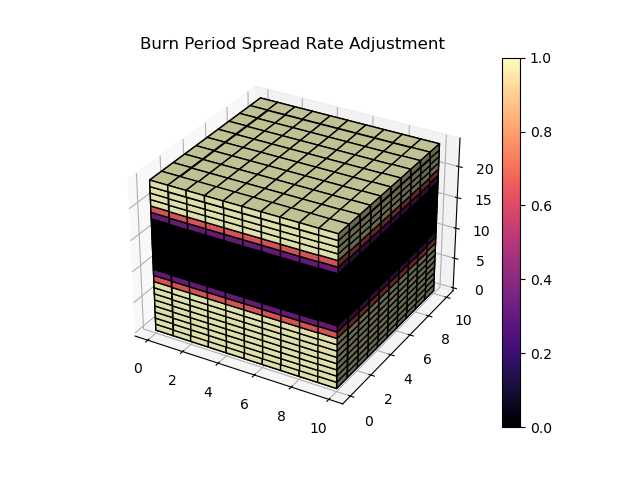


4.2.2. How to Use LazySpaceTimeCube
- Create a LazySpaceTimeCube from 0D, 1D, 2D, or 3D Input Data
import numpy as np from pyretechnics.space_time_cube import SpaceTimeCube, LazySpaceTimeCube #============================================================== # Set a Random Seed #============================================================== np.random.seed(0) #============================================================== # Specify the SpaceTimeCube Dimensions #============================================================== cube_shape = ( 240, # bands: 10 days @ 1 hour/band 1000, # rows: 30 km @ 30 meters/row 1000, # cols: 30 km @ 30 meters/col ) #===================================================================================================== # Constant Data: foliar moisture = 70% everywhere #===================================================================================================== foliar_moisture = 0.7 foliar_moisture_subcube_shape = cube_shape # Only 1 subcube necessary def foliar_moisture_load_subcube(_, subcube_shape): return SpaceTimeCube(subcube_shape, foliar_moisture) constant_cube = LazySpaceTimeCube(cube_shape, foliar_moisture_subcube_shape, foliar_moisture_load_subcube) #===================================================================================================== # Temporal Data: 24-hour burn period with ramp up and ramp down for 10 days #===================================================================================================== spread_rate_adjustments = ([0] * 6 + [0.33, 0.66] + [1] * 12 + [0.66, 0.33] + [0] * 2) * 10 spread_rate_adjustments_subcube_shape = (24, 1000, 1000) # 1 subcube per day (10 total) def spread_rate_adjustments_load_subcube(cache_index, subcube_shape): (cache_t, _, _) = cache_index t_start = 24 * cache_t t_stop = 24 * (cache_t + 1) return SpaceTimeCube(subcube_shape, spread_rate_adjustments[t_start:t_stop]) time_series_cube = LazySpaceTimeCube(cube_shape, spread_rate_adjustments_subcube_shape, spread_rate_adjustments_load_subcube) #===================================================================================================== # Spatial Data: 2D elevation raster with 1000 (30m) x 1000 (30m) cells #===================================================================================================== elevation_raster = np.random.normal(500, 100, 1000000).astype("int").reshape(1000,1000) elevation_raster_subcube_shape = (240, 100, 100) # 1 subcube per 100x100 cell region (10x10 = 100 total) def elevation_raster_load_subcube(cache_index, subcube_shape): (_, cache_y, cache_x) = cache_index y_start = 100 * cache_y y_stop = 100 * (cache_y + 1) x_start = 100 * cache_x x_stop = 100 * (cache_x + 1) return SpaceTimeCube(subcube_shape, elevation_raster[y_start:y_stop, x_start:x_stop]) spatial_cube = LazySpaceTimeCube(cube_shape, elevation_raster_subcube_shape, elevation_raster_load_subcube) #===================================================================================================== # Spatio-Temporal Data: 3D daily max wind speed raster with 10 (days) x 100 (300m) x 100 (300m) cells #===================================================================================================== wind_speed_raster = np.random.normal(30, 5, 100000).astype("int").reshape(10,100,100) wind_speed_raster_subcube_shape = (24, 100, 100) # 1 subcube per day per 100x100 cell region (10x10x10 = 1000 total) def wind_speed_raster_load_subcube(cache_index, subcube_shape): (cache_t, cache_y, cache_x) = cache_index t_start = cache_t t_stop = cache_t + 1 y_start = 10 * cache_y y_stop = 10 * (cache_y + 1) x_start = 10 * cache_x x_stop = 10 * (cache_x + 1) return SpaceTimeCube(subcube_shape, wind_speed_raster[t_start:t_stop, y_start:y_stop, x_start:x_stop]) spatiotemporal_cube = LazySpaceTimeCube(cube_shape, wind_speed_raster_subcube_shape, wind_speed_raster_load_subcube)
- Retrieve a Scalar Value at a Space-Time Coordinate
# Space-Time Coordinate band = 12 row = 100 col = 100 print("Value from Constant Data: Foliar Moisture") print(constant_cube.get(band, row, col), "\n") print("Value from Time Series Data: Spread Rate Adjustment") print(time_series_cube.get(band, row, col), "\n") print("Value from Spatial Data: Elevation") print(spatial_cube.get(band, row, col), "\n") print("Value from Spatio-Temporal Data: Wind Speed") print(spatiotemporal_cube.get(band, row, col))
Value from Constant Data: Foliar Moisture 0.699999988079071 Value from Time Series Data: Spread Rate Adjustment WARNING: Input data is not a Numpy float32 array. Data will be copied into SpaceTimeCube. 1.0 Value from Spatial Data: Elevation WARNING: Input data is not a Numpy float32 array. Data will be copied into SpaceTimeCube. 564.0 Value from Spatio-Temporal Data: Wind Speed WARNING: Input data is not a Numpy float32 array. Data will be copied into SpaceTimeCube. 32.0
- Retrieve a Time Series at a Spatial Coordinate
# Space-Time Coordinates band_range = (18,30) row = 100 col = 100 print("Time Series from Constant Data: Foliar Moisture") print(constant_cube.getTimeSeries(band_range, row, col), "\n") print("Time Series from Time Series Data: Spread Rate Adjustment") print(time_series_cube.getTimeSeries(band_range, row, col), "\n") print("Time Series from Spatial Data: Elevation") print(spatial_cube.getTimeSeries(band_range, row, col), "\n") print("Time Series from Spatio-Temporal Data: Wind Speed") print(spatiotemporal_cube.getTimeSeries(band_range, row, col))
Time Series from Constant Data: Foliar Moisture [0.7 0.7 0.7 0.7 0.7 0.7 0.7 0.7 0.7 0.7 0.7 0.7] Time Series from Time Series Data: Spread Rate Adjustment WARNING: Input data is not a Numpy float32 array. Data will be copied into SpaceTimeCube. [1. 1. 0.66 0.33 0. 0. 0. 0. 0. 0. 0. 0. ] Time Series from Spatial Data: Elevation [564. 564. 564. 564. 564. 564. 564. 564. 564. 564. 564. 564.] Time Series from Spatio-Temporal Data: Wind Speed WARNING: Input data is not a Numpy float32 array. Data will be copied into SpaceTimeCube. [32. 32. 32. 32. 32. 32. 37. 37. 37. 37. 37. 37.]
- Retrieve a Spatial Plane at a Temporal Coordinate
# Space-Time Coordinates band = 12 row_range = (95,105) col_range = (95,105) print("Spatial Plane from Constant Data: Foliar Moisture") print(constant_cube.getSpatialPlane(band, row_range, col_range), "\n") print("Spatial Plane from Time Series Data: Spread Rate Adjustment") print(time_series_cube.getSpatialPlane(band, row_range, col_range), "\n") print("Spatial Plane from Spatial Data: Elevation") print(spatial_cube.getSpatialPlane(band, row_range, col_range), "\n") print("Spatial Plane from Spatio-Temporal Data: Wind Speed") print(spatiotemporal_cube.getSpatialPlane(band, row_range, col_range))
Spatial Plane from Constant Data: Foliar Moisture [[0.7 0.7 0.7 0.7 0.7 0.7 0.7 0.7 0.7 0.7] [0.7 0.7 0.7 0.7 0.7 0.7 0.7 0.7 0.7 0.7] [0.7 0.7 0.7 0.7 0.7 0.7 0.7 0.7 0.7 0.7] [0.7 0.7 0.7 0.7 0.7 0.7 0.7 0.7 0.7 0.7] [0.7 0.7 0.7 0.7 0.7 0.7 0.7 0.7 0.7 0.7] [0.7 0.7 0.7 0.7 0.7 0.7 0.7 0.7 0.7 0.7] [0.7 0.7 0.7 0.7 0.7 0.7 0.7 0.7 0.7 0.7] [0.7 0.7 0.7 0.7 0.7 0.7 0.7 0.7 0.7 0.7] [0.7 0.7 0.7 0.7 0.7 0.7 0.7 0.7 0.7 0.7] [0.7 0.7 0.7 0.7 0.7 0.7 0.7 0.7 0.7 0.7]] Spatial Plane from Time Series Data: Spread Rate Adjustment [[1. 1. 1. 1. 1. 1. 1. 1. 1. 1.] [1. 1. 1. 1. 1. 1. 1. 1. 1. 1.] [1. 1. 1. 1. 1. 1. 1. 1. 1. 1.] [1. 1. 1. 1. 1. 1. 1. 1. 1. 1.] [1. 1. 1. 1. 1. 1. 1. 1. 1. 1.] [1. 1. 1. 1. 1. 1. 1. 1. 1. 1.] [1. 1. 1. 1. 1. 1. 1. 1. 1. 1.] [1. 1. 1. 1. 1. 1. 1. 1. 1. 1.] [1. 1. 1. 1. 1. 1. 1. 1. 1. 1.] [1. 1. 1. 1. 1. 1. 1. 1. 1. 1.]] Spatial Plane from Spatial Data: Elevation WARNING: Input data is not a Numpy float32 array. Data will be copied into SpaceTimeCube. WARNING: Input data is not a Numpy float32 array. Data will be copied into SpaceTimeCube. WARNING: Input data is not a Numpy float32 array. Data will be copied into SpaceTimeCube. [[574. 369. 544. 310. 517. 488. 565. 549. 450. 470.] [443. 551. 480. 476. 432. 561. 578. 361. 468. 480.] [520. 712. 396. 393. 584. 292. 424. 391. 494. 586.] [707. 534. 246. 423. 521. 500. 426. 340. 288. 482.] [542. 285. 607. 555. 645. 559. 461. 603. 330. 452.] [498. 497. 664. 445. 518. 564. 461. 508. 600. 380.] [454. 500. 276. 487. 447. 591. 413. 378. 458. 508.] [573. 890. 485. 501. 357. 413. 356. 635. 374. 618.] [535. 558. 491. 482. 539. 572. 598. 703. 463. 329.] [487. 555. 580. 492. 462. 484. 495. 396. 711. 356.]] Spatial Plane from Spatio-Temporal Data: Wind Speed WARNING: Input data is not a Numpy float32 array. Data will be copied into SpaceTimeCube. WARNING: Input data is not a Numpy float32 array. Data will be copied into SpaceTimeCube. WARNING: Input data is not a Numpy float32 array. Data will be copied into SpaceTimeCube. [[31. 31. 31. 31. 31. 31. 31. 31. 31. 31.] [31. 31. 31. 31. 31. 31. 31. 31. 31. 31.] [31. 31. 31. 31. 31. 31. 31. 31. 31. 31.] [31. 31. 31. 31. 31. 31. 31. 31. 31. 31.] [31. 31. 31. 31. 31. 31. 31. 31. 31. 31.] [26. 26. 26. 26. 26. 32. 32. 32. 32. 32.] [26. 26. 26. 26. 26. 32. 32. 32. 32. 32.] [26. 26. 26. 26. 26. 32. 32. 32. 32. 32.] [26. 26. 26. 26. 26. 32. 32. 32. 32. 32.] [26. 26. 26. 26. 26. 32. 32. 32. 32. 32.]]
- Retrieve a Subcube within a Space-Time Region
# Space-Time Coordinates band_range = (23,25) row_range = (95,105) col_range = (95,105) print("Subcube from Constant Data: Foliar Moisture") print(constant_cube.getSubcube(band_range, row_range, col_range), "\n") print("Subcube from Time Series Data: Spread Rate Adjustment") print(time_series_cube.getSubcube(band_range, row_range, col_range), "\n") print("Subcube from Spatial Data: Elevation") print(spatial_cube.getSubcube(band_range, row_range, col_range), "\n") print("Subcube from Spatio-Temporal Data: Wind Speed") print(spatiotemporal_cube.getSubcube(band_range, row_range, col_range))
Subcube from Constant Data: Foliar Moisture [[[0.7 0.7 0.7 0.7 0.7 0.7 0.7 0.7 0.7 0.7] [0.7 0.7 0.7 0.7 0.7 0.7 0.7 0.7 0.7 0.7] [0.7 0.7 0.7 0.7 0.7 0.7 0.7 0.7 0.7 0.7] [0.7 0.7 0.7 0.7 0.7 0.7 0.7 0.7 0.7 0.7] [0.7 0.7 0.7 0.7 0.7 0.7 0.7 0.7 0.7 0.7] [0.7 0.7 0.7 0.7 0.7 0.7 0.7 0.7 0.7 0.7] [0.7 0.7 0.7 0.7 0.7 0.7 0.7 0.7 0.7 0.7] [0.7 0.7 0.7 0.7 0.7 0.7 0.7 0.7 0.7 0.7] [0.7 0.7 0.7 0.7 0.7 0.7 0.7 0.7 0.7 0.7] [0.7 0.7 0.7 0.7 0.7 0.7 0.7 0.7 0.7 0.7]] [[0.7 0.7 0.7 0.7 0.7 0.7 0.7 0.7 0.7 0.7] [0.7 0.7 0.7 0.7 0.7 0.7 0.7 0.7 0.7 0.7] [0.7 0.7 0.7 0.7 0.7 0.7 0.7 0.7 0.7 0.7] [0.7 0.7 0.7 0.7 0.7 0.7 0.7 0.7 0.7 0.7] [0.7 0.7 0.7 0.7 0.7 0.7 0.7 0.7 0.7 0.7] [0.7 0.7 0.7 0.7 0.7 0.7 0.7 0.7 0.7 0.7] [0.7 0.7 0.7 0.7 0.7 0.7 0.7 0.7 0.7 0.7] [0.7 0.7 0.7 0.7 0.7 0.7 0.7 0.7 0.7 0.7] [0.7 0.7 0.7 0.7 0.7 0.7 0.7 0.7 0.7 0.7] [0.7 0.7 0.7 0.7 0.7 0.7 0.7 0.7 0.7 0.7]]] Subcube from Time Series Data: Spread Rate Adjustment [[[0. 0. 0. 0. 0. 0. 0. 0. 0. 0.] [0. 0. 0. 0. 0. 0. 0. 0. 0. 0.] [0. 0. 0. 0. 0. 0. 0. 0. 0. 0.] [0. 0. 0. 0. 0. 0. 0. 0. 0. 0.] [0. 0. 0. 0. 0. 0. 0. 0. 0. 0.] [0. 0. 0. 0. 0. 0. 0. 0. 0. 0.] [0. 0. 0. 0. 0. 0. 0. 0. 0. 0.] [0. 0. 0. 0. 0. 0. 0. 0. 0. 0.] [0. 0. 0. 0. 0. 0. 0. 0. 0. 0.] [0. 0. 0. 0. 0. 0. 0. 0. 0. 0.]] [[0. 0. 0. 0. 0. 0. 0. 0. 0. 0.] [0. 0. 0. 0. 0. 0. 0. 0. 0. 0.] [0. 0. 0. 0. 0. 0. 0. 0. 0. 0.] [0. 0. 0. 0. 0. 0. 0. 0. 0. 0.] [0. 0. 0. 0. 0. 0. 0. 0. 0. 0.] [0. 0. 0. 0. 0. 0. 0. 0. 0. 0.] [0. 0. 0. 0. 0. 0. 0. 0. 0. 0.] [0. 0. 0. 0. 0. 0. 0. 0. 0. 0.] [0. 0. 0. 0. 0. 0. 0. 0. 0. 0.] [0. 0. 0. 0. 0. 0. 0. 0. 0. 0.]]] Subcube from Spatial Data: Elevation [[[574. 369. 544. 310. 517. 488. 565. 549. 450. 470.] [443. 551. 480. 476. 432. 561. 578. 361. 468. 480.] [520. 712. 396. 393. 584. 292. 424. 391. 494. 586.] [707. 534. 246. 423. 521. 500. 426. 340. 288. 482.] [542. 285. 607. 555. 645. 559. 461. 603. 330. 452.] [498. 497. 664. 445. 518. 564. 461. 508. 600. 380.] [454. 500. 276. 487. 447. 591. 413. 378. 458. 508.] [573. 890. 485. 501. 357. 413. 356. 635. 374. 618.] [535. 558. 491. 482. 539. 572. 598. 703. 463. 329.] [487. 555. 580. 492. 462. 484. 495. 396. 711. 356.]] [[574. 369. 544. 310. 517. 488. 565. 549. 450. 470.] [443. 551. 480. 476. 432. 561. 578. 361. 468. 480.] [520. 712. 396. 393. 584. 292. 424. 391. 494. 586.] [707. 534. 246. 423. 521. 500. 426. 340. 288. 482.] [542. 285. 607. 555. 645. 559. 461. 603. 330. 452.] [498. 497. 664. 445. 518. 564. 461. 508. 600. 380.] [454. 500. 276. 487. 447. 591. 413. 378. 458. 508.] [573. 890. 485. 501. 357. 413. 356. 635. 374. 618.] [535. 558. 491. 482. 539. 572. 598. 703. 463. 329.] [487. 555. 580. 492. 462. 484. 495. 396. 711. 356.]]] Subcube from Spatio-Temporal Data: Wind Speed WARNING: Input data is not a Numpy float32 array. Data will be copied into SpaceTimeCube. WARNING: Input data is not a Numpy float32 array. Data will be copied into SpaceTimeCube. WARNING: Input data is not a Numpy float32 array. Data will be copied into SpaceTimeCube. [[[31. 31. 31. 31. 31. 31. 31. 31. 31. 31.] [31. 31. 31. 31. 31. 31. 31. 31. 31. 31.] [31. 31. 31. 31. 31. 31. 31. 31. 31. 31.] [31. 31. 31. 31. 31. 31. 31. 31. 31. 31.] [31. 31. 31. 31. 31. 31. 31. 31. 31. 31.] [26. 26. 26. 26. 26. 32. 32. 32. 32. 32.] [26. 26. 26. 26. 26. 32. 32. 32. 32. 32.] [26. 26. 26. 26. 26. 32. 32. 32. 32. 32.] [26. 26. 26. 26. 26. 32. 32. 32. 32. 32.] [26. 26. 26. 26. 26. 32. 32. 32. 32. 32.]] [[30. 30. 30. 30. 30. 36. 36. 36. 36. 36.] [30. 30. 30. 30. 30. 36. 36. 36. 36. 36.] [30. 30. 30. 30. 30. 36. 36. 36. 36. 36.] [30. 30. 30. 30. 30. 36. 36. 36. 36. 36.] [30. 30. 30. 30. 30. 36. 36. 36. 36. 36.] [34. 34. 34. 34. 34. 37. 37. 37. 37. 37.] [34. 34. 34. 34. 34. 37. 37. 37. 37. 37.] [34. 34. 34. 34. 34. 37. 37. 37. 37. 37.] [34. 34. 34. 34. 34. 37. 37. 37. 37. 37.] [34. 34. 34. 34. 34. 37. 37. 37. 37. 37.]]]
- Plot a Subcube within a Space-Time Region
import numpy as np import matplotlib.pyplot as plt from mpl_toolkits.mplot3d import Axes3D from matplotlib.colors import Normalize def save_3d_voxel_plot(data, filename, title, colormap="viridis", min_threshold=-1e6, max_threshold=1e6): # Transpose to (X, Y, T) data_transposed = np.transpose(data, (2, 1, 0)) # Define the colormap from gray to green cmap = plt.get_cmap(colormap) # Create a Normalize instance to scale the data to [0, 1] norm = Normalize(vmin=np.min(data_transposed), vmax=np.max(data_transposed)) # Create a boolean array to indicate where the voxels should be filled threshold = -1.0 voxels = (min_threshold <= data_transposed) & (data_transposed < max_threshold) # Create an array for colors, initialized with a transparent color or any default colors = np.empty(data_transposed.shape + (4,), dtype=float) # ARGB (4 channels) colors[..., :] = 0 # Set all colors to transparent # Apply normalized color values where voxels are True colors[voxels] = cmap(norm(data_transposed[voxels])) # Use normalized values to get colors # Create a 3D plot fig = plt.figure() ax = fig.add_subplot(111, projection="3d") # Plot the voxels with the appropriate facecolors ax.voxels(voxels, facecolors=colors, edgecolors="k") # Create the colorbar, using the same normalization cbar = plt.colorbar(plt.cm.ScalarMappable(cmap=cmap, norm=norm), ax=ax) # Add a title and save the file plt.title(title) plt.savefig(filename) plt.close("all") #===================================================================================================== # Specify Subcube Shape #===================================================================================================== band_range = (36,60) row_range = (95,105) col_range = (95,105) #===================================================================================================== # Constant Data: foliar moisture = 70% everywhere #===================================================================================================== constant_subcube = constant_cube.getSubcube(band_range, row_range, col_range) save_3d_voxel_plot(constant_subcube, "org/pics/example_lazy_constant_subcube.png", "Foliar Moisture", colormap="plasma") #===================================================================================================== # Temporal Data: 24-hour burn period with ramp up and ramp down for 10 days #===================================================================================================== time_series_subcube = time_series_cube.getSubcube(band_range, row_range, col_range) save_3d_voxel_plot(time_series_subcube, "org/pics/example_lazy_time_series_subcube.png", "Burn Period Spread Rate Adjustment", colormap="magma") #===================================================================================================== # Spatial Data: 2D elevation raster with 1000 (30m) x 1000 (30m) cells #===================================================================================================== spatial_subcube = spatial_cube.getSubcube(band_range, row_range, col_range) save_3d_voxel_plot(spatial_subcube, "org/pics/example_lazy_spatial_subcube.png", "Elevation", colormap="magma") #===================================================================================================== # Spatio-Temporal Data: 3D daily max wind speed raster with 10 (days) x 100 (300m) x 100 (300m) cells #===================================================================================================== spatiotemporal_subcube = spatiotemporal_cube.getSubcube(band_range, row_range, col_range) save_3d_voxel_plot(spatiotemporal_subcube, "org/pics/example_lazy_spatiotemporal_subcube.png", "Wind Speed", colormap="autumn")
Table 2: Example Subcube Plots of Constant, Time Series, Spatial, and Spatio-Temporal Space-Time Cubes 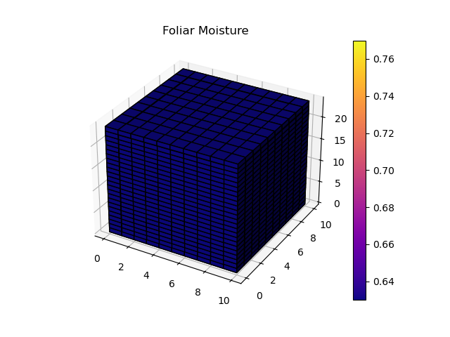

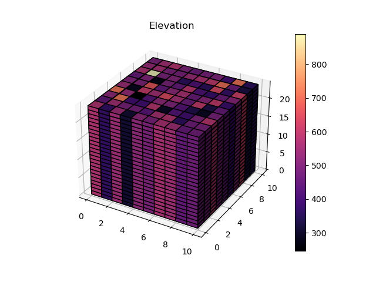
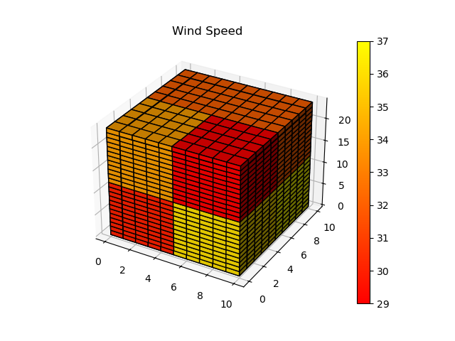
5. Fuel Model and Moisture Definitions (pyretechnics.fuel_models)
5.1. For Developers
The following sections encode various fire behavior fuel models as Python dictionaries and then provide functions to augment their static properties with additional information that is dependent upon fuel moisture. This combination of fuel models and moisture form the basis of many fire behavior analyses.
5.1.1. Module Imports
import cython import cython as cy if cython.compiled: from cython.cimports.libc.math import exp from cython.cimports.pyretechnics.cy_types import fcatarr, fclaarr, CompactFuelModel, FuelModel else: from math import exp from pyretechnics.py_types import fcatarr, fclaarr, CompactFuelModel, FuelModel
5.1.2. Fuel Model Properties
All fires ignite and travel through some form of burnable fuel. Although the effects of wind and slope on the rate of fire spread can be quite pronounced, its fundamental thermodynamic characteristics are largely determined by the fuel type in which it is sustained. For wildfires, these fuels are predominantly herbaceous and woody vegetation (both alive and dead) as well as decomposing elements of dead vegetation, such as duff or leaf litter. To estimate the heat output and rate of spread of a fire burning through any of these fuels, we must determine those physical properties that affect heat absorption and release.
Of course, measuring these fuel properties for every kind of vegetation that may be burned in a wildfire is an intractable task. To cope with this, fuels are classified into categories called "fuel models" which share similar burning characteristics. Each fuel model is then assigned a set of representative values for each of the thermally relevant physical properties shown in Table 3.
| Property | Description | Units |
|---|---|---|
| \(\delta\) | fuel depth | \(\text{ft}\) |
| \(w_o\) | ovendry fuel loading | \(\text{lb}/\text{ft}^2\) |
| \(\rho_p\) | ovendry particle density | \(\text{lb}/\text{ft}^3\) |
| \(\sigma\) | fuel particle surface-area-to-volume ratio | \(\text{ft}^2/\text{ft}^3\) |
| \(h\) | fuel particle low heat content | \(\text{Btu}/\text{lb}\) |
| \(S_T\) | fuel particle total mineral content | \(\text{lb minerals}/\text{lb ovendry weight}\) |
| \(S_e\) | fuel particle effective mineral content | \(\text{lb silica-free minerals}/\text{lb ovendry weight}\) |
| \(M_x\) | fuel particle moisture of extinction | \(\text{lb moisture}/\text{lb ovendry weight}\) |
| \(M_f\) | fuel particle moisture content | \(\text{lb moisture}/\text{lb ovendry weight}\) |
While \(M_f\) is not, in fact, directly assigned to any of these fuel models, their definitions remain incomplete for the purposes of fire spread modelling (particularly those reliant on the curing formulas of dynamic fuel loading) until it is provided as a characteristic of local weather conditions.
Although most fuel model properties are static with respect to environmental conditions, the fuel moisture content can have two significant impacts on a fuel model's burning potential:
- Dynamic fuel loading
- Live moisture of extinction
5.1.3. Fuel Model Definitions
The fuel models supported by Pyretechnics include the standard 13 fuel models of Rothermel, Albini, and Anderson5 and the additional 40 fuel models defined by Scott and Burgan6. These are all concisely encoded in an internal data structure, which may be updated to include additional custom fuel models desired by the user.
# TODO: OPTIM Replace this dictionary with something more efficient # Lookup table including entries for each of the Anderson 13 and Scott & Burgan 40 fuel models. # # The fields have the following meanings: # { # fuel_model_number: (delta, # M_x_dead, # h, # w_o_dead_1hr, # w_o_dead_10hr, # w_o_dead_100hr, # w_o_live_herbaceous, # w_o_live_woody, # sigma_dead_1hr, # sigma_dead_10hr, # sigma_dead_100hr, # sigma_live_herbaceous, # sigma_live_woody), # name # } compact_fuel_model_table = cy.declare(dict, { # dict[int, CompactFuelModel] # Anderson 13: # Grass and Grass-dominated (short-grass,timber-grass-and-understory,tall-grass) 1 : (1.0, 12.0, 8.0, 0.0340, 0.0000, 0.0000, 0.0000, 0.0000, 3500.0, 0.0, 0.0, 0.0, 0.0), # R01 2 : (1.0, 15.0, 8.0, 0.0920, 0.0460, 0.0230, 0.0230, 0.0000, 3000.0, 109.0, 30.0, 1500.0, 0.0), # R02 3 : (2.5, 25.0, 8.0, 0.1380, 0.0000, 0.0000, 0.0000, 0.0000, 1500.0, 0.0, 0.0, 0.0, 0.0), # R03 # Chaparral and Shrubfields (chaparral,brush,dormant-brush-hardwood-slash,southern-rough) 4 : (6.0, 20.0, 8.0, 0.2300, 0.1840, 0.0920, 0.2300, 0.0000, 2000.0, 109.0, 30.0, 1500.0, 0.0), # R04 5 : (2.0, 20.0, 8.0, 0.0460, 0.0230, 0.0000, 0.0920, 0.0000, 2000.0, 109.0, 0.0, 1500.0, 0.0), # R05 6 : (2.5, 25.0, 8.0, 0.0690, 0.1150, 0.0920, 0.0000, 0.0000, 1750.0, 109.0, 30.0, 0.0, 0.0), # R06 7 : (2.5, 40.0, 8.0, 0.0520, 0.0860, 0.0690, 0.0170, 0.0000, 1750.0, 109.0, 30.0, 1550.0, 0.0), # R07 # Timber Litter (closed-timber-litter,hardwood-litter,timber-litter-and-understory) 8 : (0.2, 30.0, 8.0, 0.0690, 0.0460, 0.1150, 0.0000, 0.0000, 2000.0, 109.0, 30.0, 0.0, 0.0), # R08 9 : (0.2, 25.0, 8.0, 0.1340, 0.0190, 0.0070, 0.0000, 0.0000, 2500.0, 109.0, 30.0, 0.0, 0.0), # R09 10 : (1.0, 25.0, 8.0, 0.1380, 0.0920, 0.2300, 0.0920, 0.0000, 2000.0, 109.0, 30.0, 1500.0, 0.0), # R10 # Logging Slash (light-logging-slash,medium-logging-slash,heavy-logging-slash) 11 : (1.0, 15.0, 8.0, 0.0690, 0.2070, 0.2530, 0.0000, 0.0000, 1500.0, 109.0, 30.0, 0.0, 0.0), # R11 12 : (2.3, 20.0, 8.0, 0.1840, 0.6440, 0.7590, 0.0000, 0.0000, 1500.0, 109.0, 30.0, 0.0, 0.0), # R12 13 : (3.0, 25.0, 8.0, 0.3220, 1.0580, 1.2880, 0.0000, 0.0000, 1500.0, 109.0, 30.0, 0.0, 0.0), # R13 # Nonburnable (NB) 91 : (0.0, 0.0, 0.0, 0.0000, 0.0000, 0.0000, 0.0000, 0.0000, 0.0, 0.0, 0.0, 0.0, 0.0), # NB1 92 : (0.0, 0.0, 0.0, 0.0000, 0.0000, 0.0000, 0.0000, 0.0000, 0.0, 0.0, 0.0, 0.0, 0.0), # NB2 93 : (0.0, 0.0, 0.0, 0.0000, 0.0000, 0.0000, 0.0000, 0.0000, 0.0, 0.0, 0.0, 0.0, 0.0), # NB3 98 : (0.0, 0.0, 0.0, 0.0000, 0.0000, 0.0000, 0.0000, 0.0000, 0.0, 0.0, 0.0, 0.0, 0.0), # NB4 99 : (0.0, 0.0, 0.0, 0.0000, 0.0000, 0.0000, 0.0000, 0.0000, 0.0, 0.0, 0.0, 0.0, 0.0), # NB5 # Scott & Burgan 40: # Grass (GR) 101: (0.4, 15.0, 8.0, 0.0046, 0.0000, 0.0000, 0.0138, 0.0000, 2200.0, 109.0, 30.0, 2000.0, 0.0), # GR1 102: (1.0, 15.0, 8.0, 0.0046, 0.0000, 0.0000, 0.0459, 0.0000, 2000.0, 109.0, 30.0, 1800.0, 0.0), # GR2 103: (2.0, 30.0, 8.0, 0.0046, 0.0184, 0.0000, 0.0689, 0.0000, 1500.0, 109.0, 30.0, 1300.0, 0.0), # GR3 104: (2.0, 15.0, 8.0, 0.0115, 0.0000, 0.0000, 0.0872, 0.0000, 2000.0, 109.0, 30.0, 1800.0, 0.0), # GR4 105: (1.5, 40.0, 8.0, 0.0184, 0.0000, 0.0000, 0.1148, 0.0000, 1800.0, 109.0, 30.0, 1600.0, 0.0), # GR5 106: (1.5, 40.0, 9.0, 0.0046, 0.0000, 0.0000, 0.1561, 0.0000, 2200.0, 109.0, 30.0, 2000.0, 0.0), # GR6 107: (3.0, 15.0, 8.0, 0.0459, 0.0000, 0.0000, 0.2479, 0.0000, 2000.0, 109.0, 30.0, 1800.0, 0.0), # GR7 108: (4.0, 30.0, 8.0, 0.0230, 0.0459, 0.0000, 0.3352, 0.0000, 1500.0, 109.0, 30.0, 1300.0, 0.0), # GR8 109: (5.0, 40.0, 8.0, 0.0459, 0.0459, 0.0000, 0.4132, 0.0000, 1800.0, 109.0, 30.0, 1600.0, 0.0), # GR9 # Grass-Shrub (GS) 121: (0.9, 15.0, 8.0, 0.0092, 0.0000, 0.0000, 0.0230, 0.0298, 2000.0, 109.0, 30.0, 1800.0, 1800.0), # GS1 122: (1.5, 15.0, 8.0, 0.0230, 0.0230, 0.0000, 0.0275, 0.0459, 2000.0, 109.0, 30.0, 1800.0, 1800.0), # GS2 123: (1.8, 40.0, 8.0, 0.0138, 0.0115, 0.0000, 0.0666, 0.0574, 1800.0, 109.0, 30.0, 1600.0, 1600.0), # GS3 124: (2.1, 40.0, 8.0, 0.0872, 0.0138, 0.0046, 0.1561, 0.3260, 1800.0, 109.0, 30.0, 1600.0, 1600.0), # GS4 # Shrub (SH) 141: (1.0, 15.0, 8.0, 0.0115, 0.0115, 0.0000, 0.0069, 0.0597, 2000.0, 109.0, 30.0, 1800.0, 1600.0), # SH1 142: (1.0, 15.0, 8.0, 0.0620, 0.1102, 0.0344, 0.0000, 0.1768, 2000.0, 109.0, 30.0, 0.0, 1600.0), # SH2 143: (2.4, 40.0, 8.0, 0.0207, 0.1377, 0.0000, 0.0000, 0.2847, 1600.0, 109.0, 30.0, 0.0, 1400.0), # SH3 144: (3.0, 30.0, 8.0, 0.0390, 0.0528, 0.0092, 0.0000, 0.1171, 2000.0, 109.0, 30.0, 1800.0, 1600.0), # SH4 145: (6.0, 15.0, 8.0, 0.1653, 0.0964, 0.0000, 0.0000, 0.1331, 750.0, 109.0, 30.0, 0.0, 1600.0), # SH5 146: (2.0, 30.0, 8.0, 0.1331, 0.0666, 0.0000, 0.0000, 0.0643, 750.0, 109.0, 30.0, 0.0, 1600.0), # SH6 147: (6.0, 15.0, 8.0, 0.1607, 0.2433, 0.1010, 0.0000, 0.1561, 750.0, 109.0, 30.0, 0.0, 1600.0), # SH7 148: (3.0, 40.0, 8.0, 0.0941, 0.1561, 0.0390, 0.0000, 0.1997, 750.0, 109.0, 30.0, 0.0, 1600.0), # SH8 149: (4.4, 40.0, 8.0, 0.2066, 0.1125, 0.0000, 0.0712, 0.3214, 750.0, 109.0, 30.0, 1800.0, 1500.0), # SH9 # Timber-Understory (TU) 161: (0.6, 20.0, 8.0, 0.0092, 0.0413, 0.0689, 0.0092, 0.0413, 2000.0, 109.0, 30.0, 1800.0, 1600.0), # TU1 162: (1.0, 30.0, 8.0, 0.0436, 0.0826, 0.0574, 0.0000, 0.0092, 2000.0, 109.0, 30.0, 0.0, 1600.0), # TU2 163: (1.3, 30.0, 8.0, 0.0505, 0.0069, 0.0115, 0.0298, 0.0505, 1800.0, 109.0, 30.0, 1600.0, 1400.0), # TU3 164: (0.5, 12.0, 8.0, 0.2066, 0.0000, 0.0000, 0.0000, 0.0918, 2300.0, 109.0, 30.0, 0.0, 2000.0), # TU4 165: (1.0, 25.0, 8.0, 0.1837, 0.1837, 0.1377, 0.0000, 0.1377, 1500.0, 109.0, 30.0, 0.0, 750.0), # TU5 # Timber Litter (TL) 181: (0.2, 30.0, 8.0, 0.0459, 0.1010, 0.1653, 0.0000, 0.0000, 2000.0, 109.0, 30.0, 0.0, 0.0), # TL1 182: (0.2, 25.0, 8.0, 0.0643, 0.1056, 0.1010, 0.0000, 0.0000, 2000.0, 109.0, 30.0, 0.0, 0.0), # TL2 183: (0.3, 20.0, 8.0, 0.0230, 0.1010, 0.1286, 0.0000, 0.0000, 2000.0, 109.0, 30.0, 0.0, 0.0), # TL3 184: (0.4, 25.0, 8.0, 0.0230, 0.0689, 0.1928, 0.0000, 0.0000, 2000.0, 109.0, 30.0, 0.0, 0.0), # TL4 185: (0.6, 25.0, 8.0, 0.0528, 0.1148, 0.2020, 0.0000, 0.0000, 2000.0, 109.0, 30.0, 0.0, 1600.0), # TL5 186: (0.3, 25.0, 8.0, 0.1102, 0.0551, 0.0551, 0.0000, 0.0000, 2000.0, 109.0, 30.0, 0.0, 0.0), # TL6 187: (0.4, 25.0, 8.0, 0.0138, 0.0643, 0.3719, 0.0000, 0.0000, 2000.0, 109.0, 30.0, 0.0, 0.0), # TL7 188: (0.3, 35.0, 8.0, 0.2663, 0.0643, 0.0505, 0.0000, 0.0000, 1800.0, 109.0, 30.0, 0.0, 0.0), # TL8 189: (0.6, 35.0, 8.0, 0.3053, 0.1515, 0.1905, 0.0000, 0.0000, 1800.0, 109.0, 30.0, 0.0, 1600.0), # TL9 # Slash-Blowdown (SB) 201: (1.0, 25.0, 8.0, 0.0689, 0.1377, 0.5051, 0.0000, 0.0000, 2000.0, 109.0, 30.0, 0.0, 0.0), # SB1 202: (1.0, 25.0, 8.0, 0.2066, 0.1951, 0.1837, 0.0000, 0.0000, 2000.0, 109.0, 30.0, 0.0, 0.0), # SB2 203: (1.2, 25.0, 8.0, 0.2525, 0.1263, 0.1377, 0.0000, 0.0000, 2000.0, 109.0, 30.0, 0.0, 0.0), # SB3 204: (2.7, 25.0, 8.0, 0.2410, 0.1607, 0.2410, 0.0000, 0.0000, 2000.0, 109.0, 30.0, 0.0, 0.0), # SB4 })
Although this compact data structure contains all the properties that vary by fuel model (i.e., \(\delta\), \(w_o\), \(\sigma\), \(M_{x-\text{dead}}\), \(h\)), several of their values need to be multiplied by a coefficient to make their units match those listed in Table 3. We also need to add in the missing \(\rho_p\), \(S_T\), and \(S_e\) values, which are constant across all of these fuel models, and to expand those properties whose values may vary by size class into lists with the following encoding:
[dead_1hr dead_10hr dead_100hr dead_herbaceous live_herbaceous live_woody]
As a performance optimization, we set the dead herbaceous values that
don't depend on fuel moisture for the dynamic Scott & Burgan 40 fuel
models. Finally, we add two boolean properties (dynamic and
burnable) to each fuel model for reference in later calculations.
# NOTE: We use this variable for X > 0.0 comparisons to account for floating point precision issues. almost_zero = cy.declare(cy.float, 1e-6) @cy.cfunc @cy.inline @cy.exceptval(check=False) def is_burnable_fuel_model_number(fuel_model_number: cy.int) -> cy.bint: return not (91 <= fuel_model_number <= 99) @cy.cfunc @cy.exceptval(check=False) def compute_exp_A_sigma(A: cy.float, sigma_ij: cy.float) -> cy.float: if sigma_ij > almost_zero: return exp(A / sigma_ij) else: return 0.0 @cy.cfunc @cy.inline @cy.exceptval(check=False) def compute_firemod_size_class(sigma_i: cy.float) -> cy.float: return ( 1.0 if (sigma_i >= 1200.0) else 2.0 if (sigma_i >= 192.0) else 3.0 if (sigma_i >= 96.0) else 4.0 if (sigma_i >= 48.0) else 5.0 if (sigma_i >= 16.0) else 6.0 ) @cy.cfunc @cy.exceptval(check=False) def expand_compact_fuel_model(fuel_model_number: cy.int) -> FuelModel: # Look up the CompactFuelModel by fuel_model_number cfm: CompactFuelModel = compact_fuel_model_table[fuel_model_number] # Unpack the CompactFuelModel values delta : cy.float = cfm[0] M_x_dead : cy.float = cfm[1] h : cy.float = cfm[2] w_o_dead_1hr : cy.float = cfm[3] w_o_dead_10hr : cy.float = cfm[4] w_o_dead_100hr : cy.float = cfm[5] w_o_live_herbaceous : cy.float = cfm[6] w_o_live_woody : cy.float = cfm[7] sigma_dead_1hr : cy.float = cfm[8] sigma_dead_10hr : cy.float = cfm[9] sigma_dead_100hr : cy.float = cfm[10] sigma_live_herbaceous: cy.float = cfm[11] sigma_live_woody : cy.float = cfm[12] # Expand compressed values M_x_dead: cy.float = M_x_dead * 0.01 h : cy.float = h * 1000.0 # Pre-compute some dynamic fuel model values dynamic : cy.bint = fuel_model_number > 100 and w_o_live_herbaceous > almost_zero M_x_dead_herbaceous : cy.float = M_x_dead if dynamic else 0.0 sigma_dead_herbaceous: cy.float = sigma_live_herbaceous if dynamic else 0.0 # Re-pack everything into a FuelModel struct return FuelModel( number = fuel_model_number, delta = delta, M_x = (M_x_dead, M_x_dead, M_x_dead, M_x_dead_herbaceous, 0.0, 0.0), M_f = (0.0, 0.0, 0.0, 0.0, 0.0, 0.0), w_o = (w_o_dead_1hr, w_o_dead_10hr, w_o_dead_100hr, 0.0, w_o_live_herbaceous, w_o_live_woody), sigma = (sigma_dead_1hr, sigma_dead_10hr, sigma_dead_100hr, sigma_dead_herbaceous, sigma_live_herbaceous, sigma_live_woody), h = (h, h, h, h, h, h), rho_p = (32.0, 32.0, 32.0, 32.0, 32.0, 32.0), S_T = (0.0555, 0.0555, 0.0555, 0.0555, 0.0555, 0.0555), S_e = (0.01, 0.01, 0.01, 0.01, 0.01, 0.01), dynamic = dynamic, burnable = is_burnable_fuel_model_number(fuel_model_number), exp_A_sigma = (compute_exp_A_sigma(-138.0, sigma_dead_1hr), compute_exp_A_sigma(-138.0, sigma_dead_10hr), compute_exp_A_sigma(-138.0, sigma_dead_100hr), compute_exp_A_sigma(-138.0, sigma_dead_herbaceous), compute_exp_A_sigma(-500.0, sigma_live_herbaceous), compute_exp_A_sigma(-500.0, sigma_live_woody)), firemod_size_classes = (compute_firemod_size_class(sigma_dead_1hr), compute_firemod_size_class(sigma_dead_10hr), compute_firemod_size_class(sigma_dead_100hr), compute_firemod_size_class(sigma_dead_herbaceous), compute_firemod_size_class(sigma_live_herbaceous), compute_firemod_size_class(sigma_live_woody)), f_ij = (0.0, 0.0, 0.0, 0.0, 0.0, 0.0), f_i = (0.0, 0.0), g_ij = (0.0, 0.0, 0.0, 0.0, 0.0, 0.0), ) # TODO: OPTIM Replace this dictionary with something more efficient fuel_model_table = cy.declare(dict, { # dict[int, FuelModel] k: expand_compact_fuel_model(k) for k in compact_fuel_model_table.keys() }) @cy.ccall @cy.inline def list_fuel_model_numbers() -> list[int]: return list(fuel_model_table.keys()) @cy.ccall @cy.inline def list_fuel_models() -> list[FuelModel]: return list(fuel_model_table.values()) @cy.ccall @cy.inline @cy.exceptval(check=False) def fuel_model_exists(fuel_model_number: cy.int) -> cy.bint: return fuel_model_number in fuel_model_table @cy.ccall @cy.inline @cy.exceptval(check=False) def get_fuel_model(fuel_model_number: cy.int) -> FuelModel: return cy.cast(FuelModel, fuel_model_table[fuel_model_number])
5.1.4. Fuel Categories and Size Classes
Each fuel model applies to a collection of burnable material that may be live or dead and whose constituent elements may vary in size considerably.
The two terms category and size class are used to describe this heterogeneity within each fuel model.
In Pyretechnics, when we refer to a fuel category, we mean one of these two values:
- Dead
- Live
When we refer to a fuel size class, we mean one of these six values:
- Dead 1 hour (< 1/4" diameter)
- Dead 10 hour (1/4"-1" diameter)
- Dead 100 hour (1"-3" diameter)
- Dead herbaceous (dynamic fuel models only)
- Live herbaceous
- Live woody
5.1.5. Dynamic Fuel Loading
All of the Scott & Burgan 40 fuel models with a live herbaceous component are considered dynamic. In these models, a fraction of the live herbaceous load is transferred to a new dead herbaceous category as a function of live herbaceous moisture content (see equation below).7 The dead herbaceous size class uses the dead 1 hour moisture content, dead moisture of extinction, and live herbaceous surface-area-to-volume-ratio. In the following formula, \(M_f^{lh}\) is the live herbaceous moisture content.
\begin{align} \text{FractionGreen} &= \left\{ \begin{array}{lr} 0 & M_f^{lh} \le 0.3 \\ 1 & M_f^{lh} \ge 1.2 \\ M_f^{lh} / 0.9 - 1/3 & \text{else} \end{array} \right. \\ \nonumber \\ \text{FractionCured} &= 1 - \text{FractionGreen} \end{align}@cy.cfunc @cy.exceptval(check=False) def add_dynamic_fuel_loading(fuel_model: FuelModel, M_f: fclaarr) -> FuelModel: """ Updates M_f and w_o. Mutates and returns fuel_model. """ if fuel_model.dynamic: # === Dynamic Fuel Model === # Calculate fraction_green and fraction_cured w_o : fclaarr = fuel_model.w_o live_herbaceous_load : cy.float = w_o[4] live_herbaceous_moisture: cy.float = M_f[4] fraction_green : cy.float = max(0.0, min(1.0, (live_herbaceous_moisture / 0.9) - 0.3333333333333333)) fraction_cured : cy.float = 1.0 - fraction_green # Set M_f[dead_herbaceous] equal to M_f[dead_1hr] M_f_dynamic: fclaarr = (M_f[0], # dead_1hr M_f[1], M_f[2], M_f[0], # dead_herbaceous M_f[4], M_f[5]) # Set w_o[dead_herbaceous] and w_o[live_herbaceous] based on fraction_cured and fraction_green w_o_dynamic: fclaarr = (w_o[0], w_o[1], w_o[2], live_herbaceous_load * fraction_cured, # dead_herbaceous live_herbaceous_load * fraction_green, # live_herbaceous w_o[5]) # Update the passed in fuel_model to use M_f_dynamic and w_o_dynamic fuel_model.M_f = M_f_dynamic fuel_model.w_o = w_o_dynamic return fuel_model else: # === Static Fuel Model === # Update the passed in fuel_model to use the passed in M_f fuel_model.M_f = M_f return fuel_model
5.1.6. Size Class Weighting Factors
Once the dynamic fuel loading is applied, we can compute the size class weighting factors expressed in equations 53-57 in Rothermel 19728. For brevity, these formulas are elided from this text.
# TODO: OPTIM pre-compute this conditional branching since it's fully determined by sigma. # This information might be represented efficiently in bit flags. @cy.cfunc @cy.exceptval(check=False) def compute_gij(firemod_size_classes : fclaarr, f_ij : fclaarr, firemod_size_class_ij: cy.float, is_dead : cy.bint) -> cy.float: """ Sums the f_ij of the same category (dead/live) as i, and having the same firemod_size_class. NOTE: There may be repetitions in firemod_size_classes, which is why this expression is not trivially equal to f_ij[i]. """ if is_dead: f_ij_0: cy.float = (f_ij[0] if (firemod_size_class_ij == firemod_size_classes[0]) else 0.0) f_ij_1: cy.float = (f_ij[1] if (firemod_size_class_ij == firemod_size_classes[1]) else 0.0) f_ij_2: cy.float = (f_ij[2] if (firemod_size_class_ij == firemod_size_classes[2]) else 0.0) f_ij_3: cy.float = (f_ij[3] if (firemod_size_class_ij == firemod_size_classes[3]) else 0.0) return f_ij_0 + f_ij_1 + f_ij_2 + f_ij_3 else: f_ij_4: cy.float = (f_ij[4] if (firemod_size_class_ij == firemod_size_classes[4]) else 0.0) f_ij_5: cy.float = (f_ij[5] if (firemod_size_class_ij == firemod_size_classes[5]) else 0.0) return f_ij_4 + f_ij_5 @cy.cfunc @cy.exceptval(check=False) def add_weighting_factors(fuel_model: FuelModel) -> FuelModel: """ Assigns f_ij, f_i, and g_ij. Mutates and returns fuel_model. """ # Calculate A_ij, A_i, and A_T w_o : fclaarr = fuel_model.w_o sigma: fclaarr = fuel_model.sigma rho_p: fclaarr = fuel_model.rho_p A_ij : fclaarr = ((sigma[0] * w_o[0]) / rho_p[0], (sigma[1] * w_o[1]) / rho_p[1], (sigma[2] * w_o[2]) / rho_p[2], (sigma[3] * w_o[3]) / rho_p[3], (sigma[4] * w_o[4]) / rho_p[4], (sigma[5] * w_o[5]) / rho_p[5]) # TODO: OPTIM pre-compute sigma/rho_p A_i_0: cy.float = A_ij[0] + A_ij[1] + A_ij[2] + A_ij[3] A_i_1: cy.float = A_ij[4] + A_ij[5] A_i : fcatarr = (A_i_0, A_i_1) A_T : cy.float = A_i_0 + A_i_1 # Calculate f_ij f_ij_0 : cy.float = 0.0 f_ij_1 : cy.float = 0.0 f_ij_2 : cy.float = 0.0 f_ij_3 : cy.float = 0.0 f_ij_4 : cy.float = 0.0 f_ij_5 : cy.float = 0.0 A_i_0_inv: cy.float A_i_1_inv: cy.float if A_i_0 > almost_zero: A_i_0_inv = 1.0 / A_i_0 f_ij_0 = A_ij[0] * A_i_0_inv f_ij_1 = A_ij[1] * A_i_0_inv f_ij_2 = A_ij[2] * A_i_0_inv f_ij_3 = A_ij[3] * A_i_0_inv if A_i_1 > almost_zero: A_i_1_inv = 1.0 / A_i_1 f_ij_4 = A_ij[4] * A_i_1_inv f_ij_5 = A_ij[5] * A_i_1_inv f_ij: fclaarr = (f_ij_0, f_ij_1, f_ij_2, f_ij_3, f_ij_4, f_ij_5) # Calculate f_i f_i_0 : cy.float = 0.0 f_i_1 : cy.float = 0.0 A_T_inv: cy.float if A_T > almost_zero: A_T_inv = 1.0 / A_T f_i_0 = A_i_0 * A_T_inv f_i_1 = A_i_1 * A_T_inv f_i: fcatarr = (f_i_0, f_i_1) # Calculate g_ij firemod_size_classes: fclaarr = fuel_model.firemod_size_classes g_ij : fclaarr = (compute_gij(firemod_size_classes, f_ij, firemod_size_classes[0], True), compute_gij(firemod_size_classes, f_ij, firemod_size_classes[1], True), compute_gij(firemod_size_classes, f_ij, firemod_size_classes[2], True), compute_gij(firemod_size_classes, f_ij, firemod_size_classes[3], True), compute_gij(firemod_size_classes, f_ij, firemod_size_classes[4], False), compute_gij(firemod_size_classes, f_ij, firemod_size_classes[5], False)) # Update the passed in fuel_model to use f_ij, f_i, and g_ij fuel_model.f_ij = f_ij fuel_model.f_i = f_i fuel_model.g_ij = g_ij return fuel_model
5.1.7. Live Moisture of Extinction
The live moisture of extinction for each fuel model is determined from the dead fuel moisture content, the dead moisture of extinction, and the ratio of dead fuel loading to live fuel loading using Equation 88 from Rothermel 1972, adjusted according to Albini 1976 Appendix III to match the behavior of Albini's original FIREMODS library.9, 10 Whenever the fuel moisture content becomes greater than or equal to the moisture of extinction, a fire will no longer spread through that fuel. Here are the formulas referenced above:
\begin{align} M_x^l &= \max(M_x^d, 2.9 \, W' \, (1 - M_f^d / M_x^d) - 0.226) \\ \nonumber \\ W' &= \frac{\sum_{c \in D}{w_o^c \> e^{-138/\sigma^c}}}{\sum_{c \in L}{w_o^c \> e^{-500/\sigma^c}}} \\ \nonumber \\ M_f^d &= \frac{\sum_{c \in D}{w_o^c \> M_f^c \> e^{-138/\sigma^c}}}{\sum_{c \in D}{w_o^c \> e^{-138/\sigma^c}}} \end{align}where \(M_{x}^{l}\) is the live moisture of extinction, \(M_{x}^{d}\) is the dead moisture of extinction, \(D\) is the set of dead fuel size classes (1hr, 10hr, 100hr, herbaceous), \(L\) is the set of live fuel size classes (herbaceous, woody), \(w_{o}^{c}\) is the dry weight loading of size class \(c\), \(\sigma^{c}\) is the surface area to volume ratio of size class \(c\), and \(M_{f}^{c}\) is the moisture content of size class \(c\).
@cy.cfunc @cy.exceptval(check=False) def add_live_moisture_of_extinction(fuel_model: FuelModel) -> FuelModel: """ Equation 88 from Rothermel 1972 adjusted by Albini 1976 Appendix III. Updates M_x. Mutates and returns fuel_model. """ # Calculate dead_moisture_factor, dead_loading_factor, and live_loading_factor w_o : fclaarr = fuel_model.w_o exp_A_sigma : fclaarr = fuel_model.exp_A_sigma M_f : fclaarr = fuel_model.M_f M_x : fclaarr = fuel_model.M_x M_x_dead : cy.float = M_x[0] loading_factors : fclaarr = (w_o[0] * exp_A_sigma[0], w_o[1] * exp_A_sigma[1], w_o[2] * exp_A_sigma[2], w_o[3] * exp_A_sigma[3], w_o[4] * exp_A_sigma[4], w_o[5] * exp_A_sigma[5]) dead_moisture_factor: cy.float = (M_f[0] * loading_factors[0] + M_f[1] * loading_factors[1] + M_f[2] * loading_factors[2] + M_f[3] * loading_factors[3]) dead_loading_factor : cy.float = loading_factors[0] + loading_factors[1] + loading_factors[2] + loading_factors[3] live_loading_factor : cy.float = loading_factors[4] + loading_factors[5] # Calculate M_x_live dead_fuel_moisture: cy.float dead_to_live_ratio: cy.float M_x_live : cy.float if (dead_loading_factor > almost_zero and live_loading_factor > almost_zero): dead_fuel_moisture = dead_moisture_factor / dead_loading_factor dead_to_live_ratio = dead_loading_factor / live_loading_factor M_x_live = max(M_x_dead, (2.9 * dead_to_live_ratio * (1.0 - (dead_fuel_moisture / M_x_dead))) - 0.226) else: M_x_live = M_x_dead # Calculate M_x_new M_x_new: fclaarr = (M_x[0], M_x[1], M_x[2], M_x[3], M_x_live, M_x_live) # Update the passed in fuel_model to use M_x_new fuel_model.M_x = M_x_new return fuel_model
5.1.8. Applying Fuel Moisture to a Fuel Model
The preceding sections augmented the baseline fuel models by adding
dynamic fuel loading (section 5.1.5), size class
weighting factors (section 5.1.6), and live
moisture of extinction (section 5.1.7). In
typical usage, we will want to carry out all three of these steps when
applying fuel moisture to a fuel model. To simplify this task,
Pyretechnics provides the moisturize utility function.
@cy.ccall @cy.exceptval(check=False) def moisturize(fuel_model: FuelModel, fuel_moisture: fclaarr) -> FuelModel: """ Updates w_o, M_f, and M_x and assigns f_ij, f_i, and g_ij. Returns a new FuelModel struct. """ # Create a copy of fuel_model fuel_model_copy: FuelModel = FuelModel( number = fuel_model.number, delta = fuel_model.delta, M_x = fuel_model.M_x, M_f = fuel_model.M_f, w_o = fuel_model.w_o, sigma = fuel_model.sigma, h = fuel_model.h, rho_p = fuel_model.rho_p, S_T = fuel_model.S_T, S_e = fuel_model.S_e, dynamic = fuel_model.dynamic, burnable = fuel_model.burnable, exp_A_sigma = fuel_model.exp_A_sigma, firemod_size_classes = fuel_model.firemod_size_classes, f_ij = fuel_model.f_ij, f_i = fuel_model.f_i, g_ij = fuel_model.g_ij, ) # Mutate and return the copy dynamic_fuel_model : FuelModel = add_dynamic_fuel_loading(fuel_model_copy, fuel_moisture) weighted_fuel_model : FuelModel = add_weighting_factors(dynamic_fuel_model) moisturized_fuel_model: FuelModel = add_live_moisture_of_extinction(weighted_fuel_model) return moisturized_fuel_model
This concludes our coverage of fuel models and fuel moisture.
5.2. For Users
In the following sections, we will demonstrate how to access fuel model properties by fuel model number both alone and combined with fuel moisture.
5.2.1. How to Look Up a Fuel Model's Properties
from pprint import pprint from pyretechnics.fuel_models import get_fuel_model static_fuel_model_number = 1 # R01 dynamic_fuel_model_number = 101 # GR1 static_fuel_model = get_fuel_model(static_fuel_model_number) dynamic_fuel_model = get_fuel_model(dynamic_fuel_model_number) print("Static Fuel Model: R01") pprint(static_fuel_model) print("\nDynamic Fuel Model: GR1") pprint(dynamic_fuel_model)
Static Fuel Model: R01
{'M_f': (0.0, 0.0, 0.0, 0.0, 0.0, 0.0),
'M_x': (0.11999999731779099,
0.11999999731779099,
0.11999999731779099,
0.0,
0.0,
0.0),
'S_T': (0.05550000071525574,
0.05550000071525574,
0.05550000071525574,
0.05550000071525574,
0.05550000071525574,
0.05550000071525574),
'S_e': (0.009999999776482582,
0.009999999776482582,
0.009999999776482582,
0.009999999776482582,
0.009999999776482582,
0.009999999776482582),
'burnable': True,
'delta': 1.0,
'dynamic': False,
'exp_A_sigma': (0.9613386392593384, 0.0, 0.0, 0.0, 0.0, 0.0),
'f_i': (0.0, 0.0),
'f_ij': (0.0, 0.0, 0.0, 0.0, 0.0, 0.0),
'firemod_size_classes': (1.0, 6.0, 6.0, 6.0, 6.0, 6.0),
'g_ij': (0.0, 0.0, 0.0, 0.0, 0.0, 0.0),
'h': (8000.0, 8000.0, 8000.0, 8000.0, 8000.0, 8000.0),
'number': 1,
'rho_p': (32.0, 32.0, 32.0, 32.0, 32.0, 32.0),
'sigma': (3500.0, 0.0, 0.0, 0.0, 0.0, 0.0),
'w_o': (0.03400000184774399, 0.0, 0.0, 0.0, 0.0, 0.0)}
Dynamic Fuel Model: GR1
{'M_f': (0.0, 0.0, 0.0, 0.0, 0.0, 0.0),
'M_x': (0.15000000596046448,
0.15000000596046448,
0.15000000596046448,
0.15000000596046448,
0.0,
0.0),
'S_T': (0.05550000071525574,
0.05550000071525574,
0.05550000071525574,
0.05550000071525574,
0.05550000071525574,
0.05550000071525574),
'S_e': (0.009999999776482582,
0.009999999776482582,
0.009999999776482582,
0.009999999776482582,
0.009999999776482582,
0.009999999776482582),
'burnable': True,
'delta': 0.4000000059604645,
'dynamic': True,
'exp_A_sigma': (0.9391995668411255,
0.281941682100296,
0.010051836259663105,
0.9333266615867615,
0.7788007855415344,
0.0),
'f_i': (0.0, 0.0),
'f_ij': (0.0, 0.0, 0.0, 0.0, 0.0, 0.0),
'firemod_size_classes': (1.0, 3.0, 5.0, 1.0, 1.0, 6.0),
'g_ij': (0.0, 0.0, 0.0, 0.0, 0.0, 0.0),
'h': (8000.0, 8000.0, 8000.0, 8000.0, 8000.0, 8000.0),
'number': 101,
'rho_p': (32.0, 32.0, 32.0, 32.0, 32.0, 32.0),
'sigma': (2200.0, 109.0, 30.0, 2000.0, 2000.0, 0.0),
'w_o': (0.004600000102072954, 0.0, 0.0, 0.0, 0.013799999840557575, 0.0)}
5.2.2. How to Apply Fuel Moisture to a Fuel Model
from pprint import pprint from pyretechnics.fuel_models import get_fuel_model, moisturize static_fuel_model_number = 1 # R01 dynamic_fuel_model_number = 101 # GR1 static_fuel_model = get_fuel_model(static_fuel_model_number) dynamic_fuel_model = get_fuel_model(dynamic_fuel_model_number) fuel_moisture = ( 0.05, # dead_1hr 0.10, # dead_10hr 0.15, # dead_100hr 0.00, # dead_herbaceous (will be set by moisturize for dynamic fuel models) 0.30, # live_herbaceous 0.50, # live_woody ) print("Moisturized Static Fuel Model: R01") pprint(moisturize(static_fuel_model, fuel_moisture)) print("\nMoisturized Dynamic Fuel Model: GR1") pprint(moisturize(dynamic_fuel_model, fuel_moisture))
Moisturized Static Fuel Model: R01
{'M_f': (0.05000000074505806,
0.10000000149011612,
0.15000000596046448,
0.0,
0.30000001192092896,
0.5),
'M_x': (0.11999999731779099,
0.11999999731779099,
0.11999999731779099,
0.0,
0.11999999731779099,
0.11999999731779099),
'S_T': (0.05550000071525574,
0.05550000071525574,
0.05550000071525574,
0.05550000071525574,
0.05550000071525574,
0.05550000071525574),
'S_e': (0.009999999776482582,
0.009999999776482582,
0.009999999776482582,
0.009999999776482582,
0.009999999776482582,
0.009999999776482582),
'burnable': True,
'delta': 1.0,
'dynamic': False,
'exp_A_sigma': (0.9613386392593384, 0.0, 0.0, 0.0, 0.0, 0.0),
'f_i': (1.0, 0.0),
'f_ij': (1.0, 0.0, 0.0, 0.0, 0.0, 0.0),
'firemod_size_classes': (1.0, 6.0, 6.0, 6.0, 6.0, 6.0),
'g_ij': (1.0, 0.0, 0.0, 0.0, 0.0, 0.0),
'h': (8000.0, 8000.0, 8000.0, 8000.0, 8000.0, 8000.0),
'number': 1,
'rho_p': (32.0, 32.0, 32.0, 32.0, 32.0, 32.0),
'sigma': (3500.0, 0.0, 0.0, 0.0, 0.0, 0.0),
'w_o': (0.03400000184774399, 0.0, 0.0, 0.0, 0.0, 0.0)}
Moisturized Dynamic Fuel Model: GR1
{'M_f': (0.05000000074505806,
0.10000000149011612,
0.15000000596046448,
0.05000000074505806,
0.30000001192092896,
0.5),
'M_x': (0.15000000596046448,
0.15000000596046448,
0.15000000596046448,
0.15000000596046448,
0.15000000596046448,
0.15000000596046448),
'S_T': (0.05550000071525574,
0.05550000071525574,
0.05550000071525574,
0.05550000071525574,
0.05550000071525574,
0.05550000071525574),
'S_e': (0.009999999776482582,
0.009999999776482582,
0.009999999776482582,
0.009999999776482582,
0.009999999776482582,
0.009999999776482582),
'burnable': True,
'delta': 0.4000000059604645,
'dynamic': True,
'exp_A_sigma': (0.9391995668411255,
0.281941682100296,
0.010051836259663105,
0.9333266615867615,
0.7788007855415344,
0.0),
'f_i': (1.0, 9.691811797551964e-09),
'f_ij': (0.2682926654815674, 0.0, 0.0, 0.7317073345184326, 0.0, 0.0),
'firemod_size_classes': (1.0, 3.0, 5.0, 1.0, 1.0, 6.0),
'g_ij': (1.0, 0.0, 0.0, 1.0, 0.0, 0.0),
'h': (8000.0, 8000.0, 8000.0, 8000.0, 8000.0, 8000.0),
'number': 101,
'rho_p': (32.0, 32.0, 32.0, 32.0, 32.0, 32.0),
'sigma': (2200.0, 109.0, 30.0, 2000.0, 2000.0, 0.0),
'w_o': (0.004600000102072954,
0.0,
0.0,
0.013799999840557575,
1.8278757674128343e-10,
0.0)}
6. Surface Fire Equations (pyretechnics.surface_fire)
6.1. For Developers
The following sections define functions that calculate the spread rate and intensity of a fire burning through surface fuels. These functions combine fuel models and fuel moisture values (as defined in section 5) with wind and topography inputs to determine the maximum spread rate and direction of a surface fire as well as its fireline intensity and flame length.
6.1.1. Module Imports
import cython import cython as cy if cython.compiled: from cython.cimports.libc.math import sqrt, pow, log, exp from cython.cimports.pyretechnics.cy_types import \ vec_xy, vec_xyz, fcatarr, fclaarr, FuelModel, ProjectedVectors, FireBehaviorMin, \ FireBehaviorMax, SpreadBehavior import cython.cimports.pyretechnics.conversion as conv import cython.cimports.pyretechnics.vector_utils as vu else: from math import sqrt, pow, log, exp from pyretechnics.py_types import \ vec_xy, vec_xyz, fcatarr, fclaarr, FuelModel, ProjectedVectors, FireBehaviorMin, \ FireBehaviorMax, SpreadBehavior import pyretechnics.conversion as conv import pyretechnics.vector_utils as vu
6.1.2. Rothermel's Surface Fire Rate of Spread Equation
To simulate fire behavior in as similar a way as possible to the US government-sponsored fire models (e.g., FARSITE, FlamMap, FPA, BehavePlus), Pyretechnics adopts the surface fire spread and reaction intensity formulas from Rothermel's 1972 publication "A Mathematical Model for Predicting Fire Spread in Wildland Fuels", adjusted according to Albini 1976 Appendix III to match the behavior of Albini's original FIREMODS library.11, 12 This should align with the updated description provided in Patricia Andrews' 2018 publication "The Rothermel Surface Fire Spread Model and Associated Developments: A Comprehensive Explanation".13
Very briefly, the surface rate of spread of a fire's leading edge \(R\) is described by the following formula:
\begin{align} R = \frac{I_R \, \xi \, (1 + \phi_W + \phi_S)}{\rho_b \, \epsilon \, Q_{ig}} \end{align}where these terms have the meanings shown in Table 4.
| Term | Description | Units |
|---|---|---|
| \(R\) | surface fire spread rate | \(\text{ft}/\min\) |
| \(I_R\) | reaction intensity | \(\text{Btu}/\text{ft}^2/\min\) |
| \(\xi\) | propagating flux ratio | \(\text{unitless}\) |
| \(\phi_W\) | wind factor | \(\text{unitless}\) |
| \(\phi_S\) | slope factor | \(\text{unitless}\) |
| \(\rho_b\) | oven-dry fuel bed bulk density | \(\text{lb}/\text{ft}^3\) |
| \(\epsilon\) | effective heating number | \(\text{unitless}\) |
| \(Q_{ig}\) | heat of preignition | \(\text{Btu}/\text{lb}\) |
6.1.3. Surface Fire Spread Rate Functions (No Wind No Slope)
In this section, Rothermel's surface fire spread rate equation will be computed without introducing the effects of wind or slope (i.e., \(\phi_W = \phi_S = 0\)). In this case, the only necessary input is a moisturized fuel model (as created in section 5.1.8). Thus, the functions below will focus on the no-wind-no-slope term \(R_0\) defined as follows:
\begin{align} R_0 &= \frac{I_R \, \xi}{\rho_b \, \epsilon \, Q_{ig}} \\ \nonumber \\ R &= R_0 \, (1 + \phi_W + \phi_S) \end{align}Each term will be defined in its own section, and finally they will be combined together in a single function that computes \(R_0\).
- Utility Functions
@cy.cfunc @cy.inline @cy.exceptval(check=False) def __dotp_in_category(x_ij: fclaarr, y_ij: fclaarr) -> fcatarr: """ Util: dot-product between fuel size class vectors, within each fuel category (dead/live). """ return ( ( (x_ij[0] * y_ij[0]) + (x_ij[1] * y_ij[1]) + (x_ij[2] * y_ij[2]) + (x_ij[3] * y_ij[3]) ), ( (x_ij[4] * y_ij[4]) + (x_ij[5] * y_ij[5]) ) ) @cy.cfunc @cy.inline @cy.exceptval(check=False) def __dotp_categories(x_i: fcatarr, y_i: fcatarr) -> cy.float: return ( (x_i[0] * y_i[0]) + (x_i[1] * y_i[1]) )
- Common Intermediate Calculations: \(\sigma', \beta, \beta_{op}\)
@cy.cfunc @cy.exceptval(check=False) def calc_surface_area_to_volume_ratio(f_i: fcatarr, f_ij: fclaarr, sigma: fclaarr) -> cy.float: sigma_prime: fcatarr = __dotp_in_category(f_ij, sigma) return __dotp_categories(f_i, sigma_prime) @cy.cfunc @cy.exceptval(check=False) def calc_packing_ratio(w_o: fclaarr, rho_p: fclaarr, delta: cy.float) -> cy.float: if (delta > 0.0): rho_p_inv: fclaarr = ( # TODO: OPTIM pre-compute 1.0/rho_p[0], 1.0/rho_p[1], 1.0/rho_p[2], 1.0/rho_p[3], 1.0/rho_p[4], 1.0/rho_p[5] ) beta: fcatarr = __dotp_in_category(w_o, rho_p_inv) return (beta[0] + beta[1]) / delta else: return 0.0 @cy.cfunc @cy.inline @cy.exceptval(check=False) def calc_optimum_packing_ratio(sigma_prime: cy.float) -> cy.float: return (3.348 * pow(sigma_prime, -0.8189)) if (sigma_prime > 0.0) else 1.0
- Reaction Intensity: \(I_R\)
@cy.cfunc @cy.exceptval(check=False) def calc_mineral_damping_coefficients(f_ij: fclaarr, S_e: fclaarr) -> fcatarr: S_e_i: fcatarr = __dotp_in_category(f_ij, S_e) (S_e_0, S_e_1) = S_e_i return ( 0.174 * pow(S_e_0, -0.19) if (S_e_0 > 0.0) else 1.0, 0.174 * pow(S_e_1, -0.19) if (S_e_1 > 0.0) else 1.0 ) @cy.cfunc @cy.exceptval(check=False) def __cat_moisture_damping_coefficient(M_f: cy.float, M_x: cy.float) -> cy.float: if (M_x > 0.0): r_M : cy.float = min(1.0, M_f / M_x) r_M2: cy.float = r_M * r_M r_M3: cy.float = r_M2 * r_M return 1.0 - (2.59 * r_M) + (5.11 * r_M2) - (3.52 * r_M3) else: return 0.0 @cy.cfunc @cy.exceptval(check=False) def calc_moisture_damping_coefficients(f_ij: fclaarr, M_f: fclaarr, M_x: fclaarr) -> fcatarr: M_f_i: fcatarr = __dotp_in_category(f_ij, M_f) M_x_i: fcatarr = __dotp_in_category(f_ij, M_x) return ( __cat_moisture_damping_coefficient(M_f_i[0], M_x_i[0]), __cat_moisture_damping_coefficient(M_f_i[1], M_x_i[1]) ) @cy.cfunc @cy.inline @cy.exceptval(check=False) def calc_low_heat_content(f_ij: fclaarr, h: fclaarr) -> fcatarr: return __dotp_in_category(f_ij, h) @cy.cfunc @cy.inline @cy.exceptval(check=False) def calc_net_fuel_loading(g_ij: fclaarr, w_o: fclaarr, S_T: fclaarr) -> fcatarr: return ( ( g_ij[0] * w_o[0] * (1.0 - S_T[0]) + g_ij[1] * w_o[1] * (1.0 - S_T[1]) + g_ij[2] * w_o[2] * (1.0 - S_T[2]) + g_ij[3] * w_o[3] * (1.0 - S_T[3]) ), ( g_ij[4] * w_o[4] * (1.0 - S_T[4]) + g_ij[5] * w_o[5] * (1.0 - S_T[5]) ) ) @cy.cfunc @cy.inline @cy.exceptval(check=False) def calc_heat_per_unit_area(eta_S_i: fcatarr, eta_M_i: fcatarr, h_i: fcatarr, W_n_i: fcatarr) -> cy.float: return ( (W_n_i[0] * h_i[0] * eta_M_i[0] * eta_S_i[0]) + (W_n_i[1] * h_i[1] * eta_M_i[1] * eta_S_i[1]) ) @cy.cfunc @cy.exceptval(check=False) def calc_optimum_reaction_velocity(sigma_prime: cy.float, beta: cy.float, beta_op: cy.float) -> cy.float: # Albini 1976 replaces 1 / (4.774 * (sigma_prime ** 0.1) - 7.27) A: cy.float = (133.0 * pow(sigma_prime, -0.7913)) if (sigma_prime > 0.0) else 0.0 B: cy.float = pow(sigma_prime, 1.5) C: cy.float = beta / beta_op # Maximum reaction velocity (1/min) Gamma_prime_max: cy.float = B / (495.0 + 0.0594 * B) # Optimum reaction velocity (1/min) return Gamma_prime_max * pow(C, A) * exp(A * (1.0 - C)) @cy.cfunc @cy.exceptval(check=False) def calc_reaction_intensity(moisturized_fuel_model: FuelModel, sigma_prime : cy.float, beta : cy.float, beta_op : cy.float) -> cy.float: # Unpack the FuelModel fields w_o : fclaarr = moisturized_fuel_model.w_o h : fclaarr = moisturized_fuel_model.h S_T : fclaarr = moisturized_fuel_model.S_T S_e : fclaarr = moisturized_fuel_model.S_e M_x : fclaarr = moisturized_fuel_model.M_x M_f : fclaarr = moisturized_fuel_model.M_f f_ij: fclaarr = moisturized_fuel_model.f_ij g_ij: fclaarr = moisturized_fuel_model.g_ij # Derive intermediate quantities eta_S_i : fcatarr = calc_mineral_damping_coefficients(f_ij, S_e) eta_M_i : fcatarr = calc_moisture_damping_coefficients(f_ij, M_f, M_x) h_i : fcatarr = calc_low_heat_content(f_ij, h) # (Btu/lb) W_n_i : fcatarr = calc_net_fuel_loading(g_ij, w_o, S_T) # (lb/ft^2) Btus : cy.float = calc_heat_per_unit_area(eta_S_i, eta_M_i, h_i, W_n_i) # (Btu/ft^2) Gamma_prime: cy.float = calc_optimum_reaction_velocity(sigma_prime, beta, beta_op) # (1/min) # Calculate reaction intensity return Btus * Gamma_prime # (Btu/ft^2/min)
- Propagating Flux Ratio: \(\xi\)
@cy.cfunc @cy.inline @cy.exceptval(check=False) def calc_propagating_flux_ratio(sigma_prime: cy.float, beta: cy.float) -> cy.float: return exp((0.792 + 0.681 * sqrt(sigma_prime)) * (beta + 0.1)) / (192.0 + 0.2595 * sigma_prime)
- Heat Source (No Wind No Slope): \(I_R \, \xi\)
@cy.cfunc @cy.inline @cy.exceptval(check=False) def calc_heat_source(I_R: cy.float, xi: cy.float) -> cy.float: return I_R * xi
- Oven-Dry Fuel Bed Bulk Density: \(\rho_b\)
@cy.cfunc @cy.exceptval(check=False) def calc_ovendry_bulk_density(w_o: fclaarr, delta: cy.float) -> cy.float: if (delta > 0.0): w_o_sum: cy.float = w_o[0] + w_o[1] + w_o[2] + w_o[3] + w_o[4] + w_o[5] return w_o_sum / delta else: return 0.0
- Effective Heating Number Distribution: \(\epsilon_{ij}\)
@cy.cfunc @cy.inline @cy.exceptval(check=False) def __sizeclass_heating_number(sigma_i: cy.float) -> cy.float: return exp(-138.0 / sigma_i) if (sigma_i > 0.0) else 0.0 @cy.cfunc @cy.inline @cy.exceptval(check=False) def calc_effective_heating_number_distribution(sigma: fclaarr) -> fclaarr: # OPTIM pre-compute, exp is expensive return ( __sizeclass_heating_number(sigma[0]), __sizeclass_heating_number(sigma[1]), __sizeclass_heating_number(sigma[2]), __sizeclass_heating_number(sigma[3]), __sizeclass_heating_number(sigma[4]), __sizeclass_heating_number(sigma[5]) )
- Heat of Preignition Distribution: \((Q_{ig})_{ij}\)
@cy.cfunc @cy.exceptval(check=False) def __sizeclass_heat_of_preignition_distribution(M_f_i: cy.float) -> cy.float: pos1: cy.float = cy.cast(cy.float, (M_f_i > 0.0)) return (250.0 + 1116.0 * M_f_i) * pos1 # Returns 0 unless M_f_i > 0 @cy.cfunc @cy.inline @cy.exceptval(check=False) def calc_heat_of_preignition_distribution(M_f: fclaarr) -> fclaarr: return ( __sizeclass_heat_of_preignition_distribution(M_f[0]), __sizeclass_heat_of_preignition_distribution(M_f[1]), __sizeclass_heat_of_preignition_distribution(M_f[2]), __sizeclass_heat_of_preignition_distribution(M_f[3]), __sizeclass_heat_of_preignition_distribution(M_f[4]), __sizeclass_heat_of_preignition_distribution(M_f[5]) )
- Heat Sink: \(\rho_b \, \epsilon \, Q_{ig}\)
@cy.cfunc @cy.exceptval(check=False) def calc_heat_sink(f_i: fcatarr, f_ij: fclaarr, rho_b: cy.float, epsilon_ij: fclaarr, Q_ig_ij: fclaarr) -> cy.float: effective_heat_of_preignition_i: fcatarr = ( ( (f_ij[0] * epsilon_ij[0] * Q_ig_ij[0]) + (f_ij[1] * epsilon_ij[1] * Q_ig_ij[1]) + (f_ij[2] * epsilon_ij[2] * Q_ig_ij[2]) + (f_ij[3] * epsilon_ij[3] * Q_ig_ij[3]) ), ( (f_ij[4] * epsilon_ij[4] * Q_ig_ij[4]) + (f_ij[5] * epsilon_ij[5] * Q_ig_ij[5]) ) ) effective_heat_of_preignition: cy.float = __dotp_categories(f_i, effective_heat_of_preignition_i) return rho_b * effective_heat_of_preignition
- Spread Rate (No Wind No Slope): \(R_0\)
@cy.cfunc @cy.inline @cy.exceptval(check=False) def calc_spread_rate(heat_source: cy.float, heat_sink: cy.float) -> cy.float: return heat_source / heat_sink if (heat_sink > 0.0) else 0.0
6.1.4. Surface Fire Intensity Functions
Using the surface fire spread rate and reaction intensity values, we can now calculate several surface fire intensity metrics by applying Anderson's residence time and flame depth formulas, Byram's fireline intensity and flame length equations, and Andrews & Rothermel's heat per unit area equation:14, 15, 16
\begin{align} t_{\text{res}} &= \frac{384}{\sigma'} \\ \nonumber \\ D_A &= R_s \, t_{\text{res}} \\ \nonumber \\ I_s &= \frac{I_R \, D_A}{60} \\ \nonumber \\ L_s &= 0.45 (I_s)^{0.46} \\ \nonumber \\ H_s &= I_R \, t_{\text{res}} = 60 \frac{I_s}{R_s} \\ \end{align}where \(\sigma'\) is the weighted sum by size class of the fuel model's surface area to volume ratio in \(\text{ft}^2/\text{ft}^3\), \(t_{\text{res}}\) is the residence time in \(\text{minutes}\), \(R_s\) is the surface fire spread rate in \(\text{ft}/\min\), \(D_A\) is the flame depth in \(\text{ft}\), \(I_R\) is the reaction intensity in \(\text{Btu}/\text{ft}^2/\min\), \(I_s\) is the fireline intensity in \(\text{Btu}/\text{ft}/\text{s}\), \(L_s\) is the flame length in \(\text{ft}\), and \(H_s\) is the heat per unit area in \(\text{Btu}/\text{ft}^2\).
@cy.cfunc @cy.inline @cy.exceptval(check=False) def calc_residence_time(sigma_prime: cy.float) -> cy.float: """ Returns the residence time (total burning time) of fuel (min) given: - sigma_prime :: ft^2/ft^3 (surface area to volume ratio) """ return 384.0 / sigma_prime if (sigma_prime > 0.0) else 0.0 @cy.cfunc @cy.inline @cy.exceptval(check=False) def calc_flame_depth(spread_rate: cy.float, residence_time: cy.float) -> cy.float: """ Returns the depth, or front-to-back distance, of the actively flaming zone of a free-spreading fire (ft) given: - spread_rate :: ft/min (orthogonal to the fireline) - residence_time :: min """ return spread_rate * residence_time @cy.cfunc @cy.inline @cy.exceptval(check=False) def calc_fireline_intensity(reaction_intensity: cy.float, flame_depth: cy.float) -> cy.float: """ Returns the rate of heat release per unit of fire edge (Btu/ft/s) given: - reaction_intensity :: Btu/ft^2/min - flame_depth :: ft """ return (reaction_intensity * flame_depth) / 60.0 @cy.cfunc @cy.inline @cy.exceptval(check=False) def calc_flame_length(fireline_intensity: cy.float) -> cy.float: """ Returns the average flame length (m) given: - fireline_intensity :: kW/m """ return 0.07747042253266703 * pow(fireline_intensity, 0.46) @cy.ccall @cy.inline @cy.exceptval(check=False) def calc_areal_heat_output(spread_rate: cy.float, fireline_intensity: cy.float) -> cy.float: """ Returns the heat per unit area (kJ/m^2) given: - spread_rate :: m/min - fireline_intensity :: kW/m """ return 60.0 * fireline_intensity / spread_rate if spread_rate > 0.0 else 0.0
Because of the linear relationship between spread rate, flame depth, and fireline intensity, once we have calculated the no wind, no slope fireline intensity, we can simply multiply it by the same combined wind and slope factor that is applied to the no wind, no slope spread rate in order to derive the maximum fireline intensity.
Since flame length's relationship to fireline intensity is non-linear, we will need to wait until after any transformations are applied to fireline intensity before calculating the associated flame length.
6.1.5. Wind and Slope Factor Functions
In order to compute the maximum spread rate, direction, and intensity of the surface fire front, we will need to incorporate the effects of wind and slope on the fire. However, we can precompute several intermediate values and functions needed for this step based solely on the fuel bed characteristics already available to us with just a moisturized fuel model (see section 5.1.8).
- Max Effective Wind Speed: \(U_{\text{eff}}^{\max}\)
The midflame wind speed that would be required to produce the combined spread rate in a no-slope scenario is termed the effective windspeed \(U_{\text{eff}}\). Following the recommendations given in Appendix III of Albini 1976, these midflame wind speeds are all limited by the reaction intensity \(I_R\) as follows:17
\begin{align} U_{\text{eff}}^{\max} = 0.9 \, I_R \end{align}where \(I_R\) is the reaction intensity in \(\text{Btu}/\text{ft}^2/\min\) and \(U_{\text{eff}}^{\max}\) is the maximum effective wind speed in \(\text{ft}/\min\)
@cy.cfunc @cy.inline @cy.exceptval(check=False) def calc_max_effective_wind_speed(reaction_intensity: cy.float) -> cy.float: return 0.9 * reaction_intensity
- Slope Factor Function: \(\tan(\theta_S) \mapsto \phi_S\)
@cy.cfunc @cy.inline @cy.exceptval(check=False) def get_phi_S(surface_fire_min: FireBehaviorMin, slope: cy.float) -> cy.float: return surface_fire_min._phiS_G * (slope * slope)
- Wind Factor Function: \(U_{\text{mid}} \mapsto \phi_W\)
@cy.cfunc @cy.inline @cy.exceptval(check=False) def get_phi_W(surface_fire_min: FireBehaviorMin, midflame_wind_speed: cy.float) -> cy.float: return surface_fire_min._phiW_scalr * pow(midflame_wind_speed, surface_fire_min._phiW_expnt)
- Wind Speed Function: \(\phi_W \mapsto U_{\text{mid}}\)
@cy.cfunc @cy.inline @cy.exceptval(check=False) def get_wind_speed(surface_fire_min: FireBehaviorMin, phi_W: cy.float) -> cy.float: return surface_fire_min._ws_scalr * pow(phi_W, surface_fire_min._ws_expnt)
6.1.6. Surface Fire Behavior Functions (No Wind No Slope)
@cy.cfunc @cy.exceptval(check=False) def make_surface_fire_min(base_spread_rate : cy.float, base_fireline_intensity : cy.float, max_effective_wind_speed: cy.float, B : cy.float, C : cy.float, F : cy.float, beta : cy.float) -> FireBehaviorMin: _phiS_G: cy.float = 0.0 if (beta > 0.0): _phiS_G = 5.275 * pow(beta, -0.3) _phiW_scalr: cy.float = 0.0 _phiW_expnt: cy.float = 0.0 if (F > 0.0): _phiW_scalr = (C / F) * pow(conv.m_to_ft(1.0), B) _phiW_expnt = B _ws_scalr: cy.float = 0.0 _ws_expnt: cy.float = 0.0 if (B > 0.0): B_inverse: cy.float = 1.0 / B _ws_scalr = conv.ft_to_m(pow((F / C), B_inverse)) _ws_expnt = B_inverse return FireBehaviorMin( base_spread_rate, base_fireline_intensity, max_effective_wind_speed, _phiS_G, _phiW_scalr, _phiW_expnt, _ws_scalr, _ws_expnt) @cy.ccall @cy.exceptval(check=False) def calc_surface_fire_behavior_no_wind_no_slope(moisturized_fuel_model: FuelModel, spread_rate_adjustment: cy.float = 1.0) -> FireBehaviorMin: """ Given these inputs: - moisturized_fuel_model :: FuelModel struct of fuel model and fuel moisture properties - delta :: ft (fuel depth) - w_o :: lb/ft^2 (ovendry fuel loading) - rho_p :: lb/ft^3 (ovendry particle density) - sigma :: ft^2/ft^3 (fuel particle surface-area-to-volume ratio) - h :: Btu/lb (fuel particle low heat content) - S_T :: lb minerals/lb ovendry weight (fuel particle total mineral content) - S_e :: lb silica-free minerals/lb ovendry weight (fuel particle effective mineral content) - M_x :: lb moisture/lb ovendry weight (fuel particle moisture of extinction) - M_f :: lb moisture/lb ovendry weight (fuel particle moisture content) - f_ij :: % (percent load per size class) - f_i :: % (percent load per category) - g_ij :: % (percent load per size class - Albini_1976_FIREMOD, page 20) - spread_rate_adjustment :: unitless float (1.0 for no adjustment) return a FireBehaviorMin struct containing these keys: - base_spread_rate :: m/min - base_fireline_intensity :: kW/m - max_effective_wind_speed :: m/min - _phiS_G :: intermediate value for computing phi_S (unitless) - _phiW_scalr :: intermediate value for computing phi_W (unitless) - _phiW_expnt :: intermediate value for computing phi_W (unitless) - _ws_scalr :: intermediate value for computing effective_wind_speed (m/min) - _ws_expnt :: intermediate value for computing effective_wind_speed (unitless) """ # Unpack fuel model values delta: cy.float = moisturized_fuel_model.delta w_o : fclaarr = moisturized_fuel_model.w_o rho_p: fclaarr = moisturized_fuel_model.rho_p sigma: fclaarr = moisturized_fuel_model.sigma M_f : fclaarr = moisturized_fuel_model.M_f f_ij : fclaarr = moisturized_fuel_model.f_ij f_i : fcatarr = moisturized_fuel_model.f_i # Calculate base spread rate (no wind, no slope) sigma_prime: cy.float = calc_surface_area_to_volume_ratio(f_i, f_ij, sigma) beta : cy.float = calc_packing_ratio(w_o, rho_p, delta) beta_op : cy.float = calc_optimum_packing_ratio(sigma_prime) I_R : cy.float = calc_reaction_intensity(moisturized_fuel_model, sigma_prime, beta, beta_op) # Btu/ft^2/min xi : cy.float = calc_propagating_flux_ratio(sigma_prime, beta) heat_source: cy.float = calc_heat_source(I_R, xi) # Btu/ft^2/min rho_b : cy.float = calc_ovendry_bulk_density(w_o, delta) # lb/ft^3 epsilon_ij : fclaarr = calc_effective_heating_number_distribution(sigma) Q_ig_ij : fclaarr = calc_heat_of_preignition_distribution(M_f) # Btu/lb heat_sink : cy.float = calc_heat_sink(f_i, f_ij, rho_b, epsilon_ij, Q_ig_ij) # Btu/ft^3 R0 : cy.float = calc_spread_rate(heat_source, heat_sink) # ft/min # Calculate base fireline intensity (no wind, no slope) t_res: cy.float = calc_residence_time(sigma_prime) # min D_A : cy.float = calc_flame_depth(R0, t_res) # ft I_s : cy.float = calc_fireline_intensity(I_R, D_A) # Btu/ft/s # Pre-compute values related to wind and slope U_eff_max: cy.float = calc_max_effective_wind_speed(I_R) # ft/min B : cy.float = 0.02526 * pow(sigma_prime, 0.54) C : cy.float = 7.47 * exp(-0.133 * pow(sigma_prime, 0.55)) E : cy.float = 0.715 * exp(-3.59 * (sigma_prime * 1e-4)) F : cy.float = pow((beta / beta_op), E) # Return no-wind-no-slope surface fire behavior values base_spread_rate : cy.float = conv.ft_to_m(R0 * spread_rate_adjustment) base_fireline_intensity : cy.float = conv.Btu_ft_s_to_kW_m(I_s * spread_rate_adjustment) max_effective_wind_speed: cy.float = conv.ft_to_m(U_eff_max) return make_surface_fire_min( base_spread_rate, base_fireline_intensity, max_effective_wind_speed, B, C, F, beta )
6.1.7. Midflame Wind Speed
Rothermel's formulas all expect a measure of midflame wind speed \(U_{\text{mid}}\). However, wind speed data is often collected at a height 20 feet (or 10 meters) above either unsheltered ground or a tree canopy layer if present. To convert this 20-ft wind speed \(U_{20}\) to the required midflame wind speed value, Pyretechnics uses the wind adjustment factor formula from Albini & Baughman 1979, parameterized as in BehavePlus, FARSITE, FlamMap, FSPro, and FPA according to Andrews 201218, 19.
\begin{align} \text{WAF} &= \left\{ \begin{array}{lr} 1.83 \ln(\frac{20.0 + 0.36 \text{FBD}}{0.13 \text{FBD}})^{-1} & CF \leq 0.05 \\ 0.555 [\sqrt{\text{CH} (\text{CC}/3.0)} \ln(\frac{20 + 0.36 \text{CH}}{0.13 \text{CH}})]^{-1} & CF > 0.05 \end{array} \right. \\ \nonumber \\ U_{\text{mid}} &= U_{20} \, \text{WAF} \end{align}where \(\text{WAF}\) is the unitless wind adjustment factor, \(\text{FBD}\) is the fuel bed depth in \(\text{ft}\), \(\text{CH}\) is the canopy height in \(\text{ft}\), \(\text{CC}\) is the canopy cover fraction \((0-1)\), and \(\text{CF} := \text{CC} / 3\) is the crown fill portion \((0-1)\). As in BehavePlus, the fuel bed is considered sheltered when the crown fill portion exceeds 5 percent20; this almost always prevents the \(\text{WAF}\) being greater than 1.
@cy.cfunc @cy.exceptval(check=False) def calc_wind_adjustment_factor(fuel_bed_depth: cy.float, canopy_height: cy.float, canopy_cover: cy.float) -> cy.float: """ Return the wind adjustment factor (unitless) given these inputs: - fuel_bed_depth :: ft - canopy_height :: ft - canopy_cover :: 0-1 Note: The (un)sheltered threshold should match Behave+ (Andrews 2012). """ crown_fill_portion: cy.float = canopy_cover / 3.0 is_sheltered : cy.bint = (crown_fill_portion >= 0.05 and canopy_height >= 6.0) if is_sheltered: # sheltered: equation 2 based on CC and CH, CR=1 (Andrews 2012) A: cy.float = sqrt(crown_fill_portion * canopy_height) B: cy.float = log((20.0 + 0.36 * canopy_height) / (0.13 * canopy_height)) return 0.555 / (A * B) elif (fuel_bed_depth > 0.0): # unsheltered: equation 6 H_F = H (Andrews 2012) A: cy.float = log((20.0 + 0.36 * fuel_bed_depth) / (0.13 * fuel_bed_depth)) return 1.83 / A # 1.83 truncated from 1.8328795184533409 else: # non-burnable fuel model return 0.0 @cy.ccall @cy.exceptval(check=False) def calc_midflame_wind_speed(wind_speed_20ft: cy.float, fuel_bed_depth : cy.float, canopy_height : cy.float, canopy_cover : cy.float) -> cy.float: """ Return the midflame wind speed (S) given these inputs: - wind_speed_20ft :: S - fuel_bed_depth :: ft - canopy_height :: ft - canopy_cover :: 0-1 """ wind_adj_factor: cy.float = calc_wind_adjustment_factor(fuel_bed_depth, canopy_height, canopy_cover) return wind_speed_20ft * wind_adj_factor
6.1.8. Combining Wind and Slope Vectors
On flat terrain and in the absence of wind, an idealized surface fire will spread outward in a circle through homogeneous fuels. On sloped terrain, a fire will spread more quickly upslope than downslope, and when wind is present, a fire will spread more quickly in the direction that the wind is blowing rather than against it. In the presence of both sloped terrain and wind, the two forces combine to create a new maximum spread rate and direction for the fire. Together, wind and slope effects elongate otherwise circular fire perimeters into ellipses, with the fastest moving edge known as the head fire.
Since Rothermel's original equations for computing the head fire spread rate assume that the wind direction and upslope direction are aligned, the effects of cross-slope winds must be taken into effect. To accomplish this, Pyretechnics implements the vector addition procedure defined in Rothermel 1983 that combines the wind and slope vectors to calculate the maximum fire spread direction and magnitude.21
In order to address potential errors related to projecting the horizontal wind and slope azimuth vectors to and from the slope-tangential plane, upon which the equations from Rothermel 1983 are defined, we incorporate the three-dimensional vector combination procedure provided by Waeselynck 2024.22
@cy.cfunc @cy.exceptval(check=False) def project_wind_and_slope_vectors_3d(wind_speed : cy.float, downwind_direction: cy.float, slope : cy.float, upslope_direction : cy.float) -> ProjectedVectors: """ Given these inputs: - wind_speed :: S - downwind_direction :: degrees clockwise from North - slope :: rise/run - upslope_direction :: degrees clockwise from North return a ProjectedVectors struct containing these keys: - wind_vector_3d :: (x: S, y: S, z: S) - slope_vector_3d :: (x, y, z) """ # Convert wind and slope vectors from azimuthal to cartesian coordinates wind_vector_2d : vec_xy = conv.azimuthal_to_cartesian(wind_speed, downwind_direction) slope_vector_2d: vec_xy = conv.azimuthal_to_cartesian(slope, upslope_direction) # Project wind and slope vectors onto the slope-tangential plane wind_vector_3d : vec_xyz = vu.to_slope_plane(wind_vector_2d, slope_vector_2d) slope_vector_3d: vec_xyz = vu.to_slope_plane(slope_vector_2d, slope_vector_2d) return ProjectedVectors(wind_vector_3d, slope_vector_3d) @cy.cfunc @cy.exceptval(check=False) def get_phi_E(wind_vector_3d: vec_xyz, slope_vector_3d: vec_xyz, phi_W: cy.float, phi_S: cy.float) -> vec_xyz: # Convert wind and slope vectors to unit vectors on the slope-tangential plane w_S: vec_xyz = vu.as_unit_vector_3d(wind_vector_3d) if phi_W > 0.0 else wind_vector_3d u_S: vec_xyz = vu.as_unit_vector_3d(slope_vector_3d) if phi_S > 0.0 else slope_vector_3d # Create the 3D slope-tangential phi_W, phi_S, and phi_E vectors phi_W_3d: vec_xyz = vu.scale_3d(phi_W, w_S) phi_S_3d: vec_xyz = vu.scale_3d(phi_S, u_S) phi_E_3d: vec_xyz = vu.add_3d(phi_W_3d, phi_S_3d) return phi_E_3d
6.1.9. Surface Elliptical Eccentricity
The effective wind speed \(U_{\text{eff}}\) is the wind speed that would be required to produce the same spread rate in flat terrain as that given by the combination of wind and sloped terrain as described in section 6.1.8.
In order to project the one-dimensional surface fire spread rate values calculated in earlier sections onto a two-dimensional plane, \(U_{\text{eff}}\) is used to compute the length to width ratio \(\frac{L}{W}\) of an ellipse that approximates the surface fire front. This length to width ratio is then converted into an eccentricity measure \(E\) of the ellipse using equation 8 from Albini and Chase 1980.23
\begin{align} E = \frac{\sqrt{(\frac{L}{W})^2 - 1}}{\frac{L}{W}} \end{align}Currently Pyretechnics supports two different methods for computing the length to width ratio \(\frac{L}{W}\):
Using equation 9 from Rothermel 1991.24
\begin{align} \frac{L}{W} = 1 + 0.25 \, U_{\text{eff}} \end{align}where \(U_{\text{eff}}\) is the effective wind speed in \(\text{mph}\).
Using the formula implemented in the Missoula Fire Lab's
\begin{align} \frac{L}{W} = \min(8.0, 0.936 e^{(0.1147 U_{\text{eff}})} + 0.461 e^{(-0.0692 U_{\text{eff}})} - 0.397) \end{align}behaveC++ library25where \(U_{\text{eff}}\) is the effective wind speed in \(\text{mph}\).
# TODO: Change model from str to enumerated type @cy.cfunc def surface_length_to_width_ratio(effective_wind_speed: cy.float, model: str = "behave") -> cy.float: """ Calculate the length_to_width_ratio of the surface fire front given: - effective_wind_speed :: m/min (aligned with the slope-tangential plane) - model :: "rothermel" or "behave" (Optional) """ effective_wind_speed_mph = conv.m_min_to_mph(effective_wind_speed) # Select formula by model if model == "rothermel": return 1.0 + 0.25 * effective_wind_speed_mph elif model == "behave": return min(8.0, 0.936 * exp(0.1147 * effective_wind_speed_mph) + 0.461 * exp(-0.0692 * effective_wind_speed_mph) - 0.397) else: raise ValueError("Invalid input: model must be 'rothermel' or 'behave'.") @cy.cfunc @cy.inline @cy.exceptval(check=False) def surface_fire_eccentricity(length_to_width_ratio: cy.float) -> cy.float: """ Calculate the eccentricity (E) of the surface fire front using eq. 8 from Albini and Chase 1980 given: - L/W :: (1: circular spread, > 1: elliptical spread) """ return sqrt((length_to_width_ratio * length_to_width_ratio) - 1.0) / length_to_width_ratio
6.1.10. Surface Fire Behavior in the Direction of Maximum Spread
This section introduces a function that applies the effects of wind and slope to the no-wind-no-slope surface fire behavior values produced in section 6.1.6, in order to compute the maximum surface fire behavior values associated with a head fire.
A noteworthy decision for users is whether or not to limit the effective wind speed \(U_{\text{eff}}\) in these calculations.
Rothermel 1972 defines a maximum effective wind speed, above which the predicted spread rate and intensity remains constant. However, a 2013 publication by Andrews et al recommends instead that this wind speed limit not be imposed, in order to avoid possible spread rate underprediction.26, 27
In order to support both use cases, the
calc_surface_fire_behavior_max function includes an optional
use_wind_limit argument that can be used to toggle this limit on or
off.
@cy.cfunc @cy.exceptval(check=False) def maybe_limit_wind_speed(use_wind_limit : cy.bint, max_wind_speed : cy.float, surface_fire_min: FireBehaviorMin, phi_E_magnitude : cy.float) -> tuple[cy.float, cy.float]: """ Given these inputs: - use_wind_limit :: boolean - max_wind_speed :: m/min - surface_fire_min :: FireBehaviorMin struct of no-wind-no-slope surface fire behavior values - base_spread_rate :: m/min - base_fireline_intensity :: kW/m - max_effective_wind_speed :: m/min - _phiS_G :: intermediate value for computing phi_S (unitless) - _phiW_scalr :: intermediate value for computing phi_W (unitless) - _phiW_expnt :: intermediate value for computing phi_W (unitless) - _ws_scalr :: intermediate value for computing effective_wind_speed (m/min) - _ws_expnt :: intermediate value for computing effective_wind_speed (unitless) - phi_E_magnitude :: unitless return a tuple with these fields: - limited_wind_speed :: m/min - limited_phi_E :: unitless """ effective_wind_speed: cy.float = get_wind_speed(surface_fire_min, phi_E_magnitude) if (use_wind_limit and effective_wind_speed > max_wind_speed): return ( max_wind_speed, get_phi_W(surface_fire_min, max_wind_speed), ) else: return ( effective_wind_speed, phi_E_magnitude, ) @cy.ccall @cy.exceptval(check=False) def calc_surface_fire_behavior_max(surface_fire_min : FireBehaviorMin, midflame_wind_speed : cy.float, upwind_direction : cy.float, slope : cy.float, aspect : cy.float, use_wind_limit : cy.bint = True, surface_lw_ratio_model: str = "behave") -> FireBehaviorMax: """ Given these inputs: - surface_fire_min :: FireBehaviorMin struct of no-wind-no-slope surface fire behavior values - base_spread_rate :: m/min - base_fireline_intensity :: kW/m - max_effective_wind_speed :: m/min - _phiS_G :: intermediate value for computing phi_S (unitless) - _phiW_scalr :: intermediate value for computing phi_W (unitless) - _phiW_expnt :: intermediate value for computing phi_W (unitless) - _ws_scalr :: intermediate value for computing effective_wind_speed (m/min) - _ws_expnt :: intermediate value for computing effective_wind_speed (unitless) - midflame_wind_speed :: m/min - upwind_direction :: degrees clockwise from North - slope :: rise/run - aspect :: degrees clockwise from North - use_wind_limit :: boolean (Optional) - surface_lw_ratio_model :: "rothermel" or "behave" (Optional) return a FireBehaviorMax struct containing these keys: - max_fire_type :: 1 (surface) - max_spread_rate :: m/min - max_spread_direction :: (x, y, z) unit vector - max_fireline_intensity :: kW/m - max_flame_length :: m - length_to_width_ratio :: unitless (1: circular spread, > 1: elliptical spread) - eccentricity :: unitless (0: circular spread, > 0: elliptical spread) - critical_spread_rate :: m/min """ # Unpack no-wind-no-slope surface fire behavior values spread_rate : cy.float = surface_fire_min.base_spread_rate fireline_intensity: cy.float = surface_fire_min.base_fireline_intensity max_wind_speed : cy.float = surface_fire_min.max_effective_wind_speed # Reverse the provided wind and slope directions downwind_direction: cy.float = conv.opposite_direction(upwind_direction) upslope_direction : cy.float = conv.opposite_direction(aspect) # Project wind and slope vectors onto the slope-tangential plane vectors : ProjectedVectors = project_wind_and_slope_vectors_3d(midflame_wind_speed, downwind_direction, slope, upslope_direction) wind_vector_3d : vec_xyz = vectors.wind_vector_3d # m/min slope_vector_3d: vec_xyz = vectors.slope_vector_3d # rise/run # Calculate phi_W and phi_S # NOTE: |wind_vector_3d| = slope-aligned midflame wind speed phi_W: cy.float = get_phi_W(surface_fire_min, vu.vector_magnitude_3d(wind_vector_3d)) phi_S: cy.float = get_phi_S(surface_fire_min, slope) # Calculate phi_E and the max_spread_direction phi_E_3d: vec_xyz = get_phi_E(wind_vector_3d, slope_vector_3d, phi_W, phi_S) phi_E : cy.float = vu.vector_magnitude_3d(phi_E_3d) max_spread_direction: vec_xyz if phi_E > 0.0: max_spread_direction = vu.as_unit_vector_3d(phi_E_3d) elif phi_S > 0.0: max_spread_direction = vu.as_unit_vector_3d(slope_vector_3d) else: max_spread_direction = (0.0, 1.0, 0.0) # default: North # Limit effective wind speed to max wind speed if use_wind_limit == True (limited_wind_speed, limited_phi_E) = maybe_limit_wind_speed(use_wind_limit, max_wind_speed, surface_fire_min, phi_E) # Calculate and return max surface fire behavior values max_spread_rate : cy.float = spread_rate * (1.0 + limited_phi_E) max_fireline_intensity: cy.float = fireline_intensity * (1.0 + limited_phi_E) length_to_width_ratio : cy.float = surface_length_to_width_ratio(limited_wind_speed, surface_lw_ratio_model) return FireBehaviorMax( max_fire_type = 1, max_spread_rate = max_spread_rate, max_spread_direction = max_spread_direction, max_fireline_intensity = max_fireline_intensity, max_flame_length = calc_flame_length(max_fireline_intensity), length_to_width_ratio = length_to_width_ratio, eccentricity = surface_fire_eccentricity(length_to_width_ratio), critical_spread_rate = 0.0, )
6.1.11. Surface Fire Behavior in Any Direction
From Rothermel equations, we have computed the surface fire spread rate \(R_H\) in the direction of fastest spread. We now generalize this to any orientation of the fire front. This requires an additional modeling assumption; like FARSITE (and a long lineage of models), the chosen assumption consists of modeling front propagation by elliptical wavelets, following Huygens' Principle. This is where the previously computed elliptical dimensions come in, in particular the length-to-width ratio \(L/W\).
If \(\omega\) is the angular offset from the direction of maximum fire spread (where angles are measured in the slope-tangential plane), then it can be seen (nontrivially) that the front-normal spread rate \(R_s(\omega)\) is given by:
\begin{align} R_s(\omega) = \frac{R_H - R_B}{2} \cos\omega + R_F \sqrt{1 + \left((L/W)^2 - 1 \right) \cos(\omega)^2} \end{align}in which \(R_H\) is the maximum (heading) spread rate, \(R_B\) is the backing spread rate, and \(R_F\) is the flanking spread rate, which is deduced from the length-to-width ratio \(L/W\):
\begin{align} R_F = \frac{R_H + R_B}{2 \left(L/W \right)} \end{align}The above applies whether or not the ellipse grows from a focus point, as long as it grows from a point on its main axis.
We now add the assumption that the ellipse grows from a focus point, which constrains \(R_B\) and \(L/W\) to be related to the ellipse's eccentricity \(E\):
\begin{align} R_B = \frac{1 - E}{1 + E} R_H \\ \nonumber \\ E = \sqrt{1 - (L/W)^{-2}} \end{align}Then, substituting and rearranging yields the following formula for computing a multiplier \(\eta\) on the maximum spread rate:
\begin{align} \eta := \frac{R_s(\omega)}{R_H} = \frac{E \cos \omega}{1 + E} + \sqrt{\frac{1 - E}{1 + E} + \left(\frac{E \cos \omega}{1 + E}\right)^2} \end{align}This enables us to compute not only the front-normal spread rate \(R_s(\omega)\), but also the fireline intensity \(I_s(\omega)\):
\begin{align} R_s(\omega) &= R_H \, \eta \\ \nonumber \\ I_s(\omega) &= I_s \, \eta \end{align}Note that the above \(R_s(\omega)\) is the front-normal spread rate, not to be confused with the radial velocity \(W_s(\omega)\) of the wavelet, which describes the shape of the wavelet in polar coordinates:
\begin{align} W_s(\omega) = \frac{1 - E}{1 - E \cos\omega} R_H \end{align}The above formula follows from assuming an elliptical wavelet growing from a focus point. To further clarify: \(R_s(\omega)\) is the speed at which a fire front advances when oriented in front-normal direction \(\omega\), while \(W_s(\omega)\) is the speed of a minimum-travel-time trajectory advancing in direction \(\omega\). This distinction corresponds to the duality between fronts and rays in optics.
It is computationally impractical to use the angle \(\omega\) directly, so instead numerical code will use the dot product:
\begin{align} \cos\omega = \vec{u_{\max}} \cdot \vec{u_{\omega}} \end{align}where \(\vec{u_{\max}}\) is the unit vector in the direction of maximum spread and \(\vec{u_{\omega}}\) is the unit vector in the front-normal direction, both slope-tangential.
@cy.ccall @cy.exceptval(check=False) def calc_surface_fire_behavior_in_direction(surface_fire_max: FireBehaviorMax, spread_direction: vec_xyz) -> SpreadBehavior: """ Given these inputs: - surface_fire_max :: FireBehaviorMax struct of max surface fire behavior values - max_fire_type :: 1 (surface) - max_spread_rate :: m/min - max_spread_direction :: (x, y, z) unit vector, slope-tangential - max_fireline_intensity :: kW/m - max_flame_length :: m - length_to_width_ratio :: unitless (1: circular spread, > 1: elliptical spread) - eccentricity :: unitless (0: circular spread, > 0: elliptical spread) - critical_spread_rate :: m/min - spread_direction :: 3D unit vector representing the front-normal direction, must be slope-tangential return a SpreadBehavior struct containing these keys: - dphi_dt :: phi/min (irrelevant in this context, set to zero) - fire_type :: 1 (surface) - spread_rate :: m/min - spread_direction :: (x, y, z) unit vector, same as input - fireline_intensity :: kW/m - flame_length :: m """ # Unpack max surface fire behavior values max_spread_rate : cy.float = surface_fire_max.max_spread_rate max_spread_direction : vec_xyz = surface_fire_max.max_spread_direction max_fireline_intensity: cy.float = surface_fire_max.max_fireline_intensity eccentricity : cy.float = surface_fire_max.eccentricity # Calculate cos(w), where w is the offset angle between these unit vectors on the slope-tangential plane cos_w: cy.float = vu.dot_3d(max_spread_direction, spread_direction) # Calculate adjustment due to the offset angle from the max spread direction # Pre-compute repeated quantities: e1i: cy.float = 1 / (1 + eccentricity) e_cos_w: cy.float = eccentricity * cos_w # Adjustment factor to max spread rate: adjustment: cy.float = e1i*e_cos_w + sqrt(e1i*(1 - eccentricity) + (e_cos_w*e1i)**2) # Update surface fire behavior values by the adjustment value fireline_intensity: cy.float = max_fireline_intensity * adjustment return SpreadBehavior( dphi_dt = 0.0, fire_type = 1, # surface spread_rate = max_spread_rate * adjustment, spread_direction = spread_direction, fireline_intensity = fireline_intensity, flame_length = calc_flame_length(fireline_intensity), )
6.2. For Users
In the following sections, we will demonstrate how to calculate the surface fire behavior values given a fuel model and measurements of fuel moisture, wind speed, wind direction, slope, and aspect. This will be done first for the no-wind-no-slope case, followed by the max spread direction case, and finally in any direction on the sloped surface using both offset angles from the heading fire direction and 3D vectors specifying absolute directions.
Because wind speed and direction will often be provided from
measurements taken 10m or 20ft above the canopy and may be given in
either cartesion (x,y) or azimuthal (r,azimuth) coordinates, we
also demonstrate how to convert from cartesian to azimuthal
coordinates, from 10m to 20ft wind speeds, and from 20ft to midflame
wind speeds, given a fuel model and measurements of canopy height and
canopy cover.
See Appendix 12.2 for the full list of available units conversion functions.
See Appendix 12.3 for the full list of available vector manipulation functions.
6.2.1. How to Calculate the No-Wind-No-Slope Surface Fire Behavior
from pprint import pprint import pyretechnics.fuel_models as fm import pyretechnics.surface_fire as sf # Set input parameters fuel_model = fm.get_fuel_model(101) # GR1 fuel_moisture = ( 0.05, # dead_1hr 0.10, # dead_10hr 0.15, # dead_100hr 0.00, # dead_herbaceous (will be set by moisturize for dynamic fuel models) 0.90, # live_herbaceous 0.60, # live_woody ) # Apply fuel moisture to fuel model moisturized_fuel_model = fm.moisturize(fuel_model, fuel_moisture) # Calculate no-wind-no-slope surface fire behavior surface_fire_min = sf.calc_surface_fire_behavior_no_wind_no_slope(moisturized_fuel_model) # View results print("No-Wind-No-Slope Surface Fire Behavior for Fuel Model GR1 with Fuel Moisture = " + str(moisturized_fuel_model["M_f"])) pprint({k: surface_fire_min[k] for k in ["base_spread_rate", "base_fireline_intensity", "max_effective_wind_speed"]})
No-Wind-No-Slope Surface Fire Behavior for Fuel Model GR1 with Fuel Moisture = (0.05000000074505806, 0.10000000149011612, 0.15000000596046448, 0.05000000074505806, 0.8999999761581421, 0.6000000238418579)
{'base_fireline_intensity': 1.7899988889694214,
'base_spread_rate': 0.12637242674827576,
'max_effective_wind_speed': 109.77295684814453}
6.2.2. How to Translate the 10m Wind Speed Vector into the Midflame Wind Speed Vector
import pyretechnics.conversion as conv import pyretechnics.fuel_models as fm import pyretechnics.surface_fire as sf # Set input parameters fuel_model = fm.get_fuel_model(101) # GR1 canopy_height = 20 # meters canopy_cover = 0.6 # 0-1 wind_speed_10m = 20 # km/hr upwind_direction = 45.0 # degrees clockwise from North # Convert from 10m wind speed to 20ft wind speed wind_speed_20ft = conv.wind_speed_10m_to_wind_speed_20ft(wind_speed_10m) # km/hr # Convert from 20ft wind speed to midflame wind speed in m/min midflame_wind_speed = sf.calc_midflame_wind_speed(conv.km_hr_to_m_min(wind_speed_20ft), # m/min fuel_model["delta"], # ft conv.m_to_ft(canopy_height), # ft canopy_cover) # 0-1 # View results print("Midflame Wind Speed and Direction for 10m Wind Speed = 20 km/hr, Upwind Direction = 45.0\n" + " with Fuel Model GR1, Canopy Height = 20m, and Canopy Cover = 60%\n" + "- Speed: " + str(midflame_wind_speed) + " (m/min)\n" + "- Downwind Direction: " + str(conv.opposite_direction(upwind_direction)) + " (degrees clockwise from North)")
Midflame Wind Speed and Direction for 10m Wind Speed = 20 km/hr, Upwind Direction = 45.0 with Fuel Model GR1, Canopy Height = 20m, and Canopy Cover = 60% - Speed: 27.210681915283203 (m/min) - Downwind Direction: 225.0 (degrees clockwise from North)
6.2.3. How to Calculate the Surface Fire Behavior in the Direction of Maximum Spread
from pprint import pprint import pyretechnics.fuel_models as fm import pyretechnics.surface_fire as sf # Set input parameters fuel_model = fm.get_fuel_model(101) # GR1 fuel_moisture = ( 0.05, # dead_1hr 0.10, # dead_10hr 0.15, # dead_100hr 0.00, # dead_herbaceous (will be set by moisturize for dynamic fuel models) 0.90, # live_herbaceous 0.60, # live_woody ) midflame_wind_speed = 500.0 # m/min upwind_direction = 215.0 # degrees clockwise from North slope = 0.2 # rise/run aspect = 270.0 # degrees clockwise from North # Apply fuel moisture to fuel model moisturized_fuel_model = fm.moisturize(fuel_model, fuel_moisture) # Calculate no-wind-no-slope surface fire behavior surface_fire_min = sf.calc_surface_fire_behavior_no_wind_no_slope(moisturized_fuel_model) # Calculate surface fire behavior in the direction of maximum spread with effective wind speed limit surface_fire_max = sf.calc_surface_fire_behavior_max(surface_fire_min, midflame_wind_speed, upwind_direction, slope, aspect, surface_lw_ratio_model="rothermel") # View results print("Surface Fire Behavior Max (Limited) for Fuel Model GR1 with Fuel Moisture = " + str(moisturized_fuel_model["M_f"])) pprint(surface_fire_max) # Calculate surface fire behavior in the direction of maximum spread without effective wind speed limit surface_fire_max_unlimited = sf.calc_surface_fire_behavior_max(surface_fire_min, midflame_wind_speed, upwind_direction, slope, aspect, use_wind_limit=False, surface_lw_ratio_model="rothermel") # View results print("\nSurface Fire Behavior Max (Unlimited) for Fuel Model GR1 with Fuel Moisture = " + str(moisturized_fuel_model["M_f"])) pprint(surface_fire_max_unlimited)
Surface Fire Behavior Max (Limited) for Fuel Model GR1 with Fuel Moisture = (0.05000000074505806, 0.10000000149011612, 0.15000000596046448, 0.05000000074505806, 0.8999999761581421, 0.6000000238418579)
{'critical_spread_rate': 0.0,
'eccentricity': 0.8693099021911621,
'length_to_width_ratio': 2.023196220397949,
'max_fire_type': 1,
'max_fireline_intensity': 32.52827453613281,
'max_flame_length': 0.38439345359802246,
'max_spread_direction': (0.5751420855522156,
0.8099259734153748,
0.11502841860055923),
'max_spread_rate': 2.29646897315979}
Surface Fire Behavior Max (Unlimited) for Fuel Model GR1 with Fuel Moisture = (0.05000000074505806, 0.10000000149011612, 0.15000000596046448, 0.05000000074505806, 0.8999999761581421, 0.6000000238418579)
{'critical_spread_rate': 0.0,
'eccentricity': 0.9845208525657654,
'length_to_width_ratio': 5.705564498901367,
'max_fire_type': 1,
'max_fireline_intensity': 330.52349853515625,
'max_flame_length': 1.1167834997177124,
'max_spread_direction': (0.5751420855522156,
0.8099259734153748,
0.11502841860055923),
'max_spread_rate': 23.33468246459961}
6.2.4. How to Calculate the Surface Fire Behavior in Any Direction
import numpy as np from pprint import pprint import pyretechnics.fuel_models as fm import pyretechnics.surface_fire as sf import pyretechnics.vector_utils as vu # Set input parameters fuel_model = fm.get_fuel_model(101) # GR1 fuel_moisture = ( 0.05, # dead_1hr 0.10, # dead_10hr 0.15, # dead_100hr 0.00, # dead_herbaceous (will be set by moisturize for dynamic fuel models) 0.90, # live_herbaceous 0.60, # live_woody ) midflame_wind_speed = 500.0 # m/min upwind_direction = 215.0 # degrees clockwise from North slope = 0.2 # rise/run aspect = 270.0 # degrees clockwise from North # Apply fuel moisture to fuel model moisturized_fuel_model = fm.moisturize(fuel_model, fuel_moisture) # Calculate no-wind-no-slope surface fire behavior surface_fire_min = sf.calc_surface_fire_behavior_no_wind_no_slope(moisturized_fuel_model) # Calculate surface fire behavior in the direction of maximum spread with effective wind speed limit surface_fire_max = sf.calc_surface_fire_behavior_max(surface_fire_min, midflame_wind_speed, upwind_direction, slope, aspect, surface_lw_ratio_model="rothermel") # Calculate surface fire behavior for the heading, flanking, and backing fires heading_fire_direction = surface_fire_max["max_spread_direction"] # FIXME: Change upstream functions to return max_spread_direction as type vec_xyz # and change downstream functions to accept spread_direction as type vec_xyz (dx, dy, dz) = heading_fire_direction flanking_fire_direction = np.asarray(vu.rotate_on_sloped_plane((dx, dy, dz), 90.0, slope, aspect)) backing_fire_direction = np.asarray(vu.rotate_on_sloped_plane((dx, dy, dz), 180.0, slope, aspect)) heading_fire_behavior = sf.calc_surface_fire_behavior_in_direction(surface_fire_max, heading_fire_direction) flanking_fire_behavior = sf.calc_surface_fire_behavior_in_direction(surface_fire_max, flanking_fire_direction) backing_fire_behavior = sf.calc_surface_fire_behavior_in_direction(surface_fire_max, backing_fire_direction) # View heading fire results print("Heading Fire Behavior for Fuel Model GR1 with Fuel Moisture = " + str(moisturized_fuel_model["M_f"])) pprint(heading_fire_behavior) # View flanking fire results print("\nFlanking Fire Behavior for Fuel Model GR1 with Fuel Moisture = " + str(moisturized_fuel_model["M_f"])) pprint(flanking_fire_behavior) # View backing fire results print("\nBacking Fire Behavior for Fuel Model GR1 with Fuel Moisture = " + str(moisturized_fuel_model["M_f"])) pprint(backing_fire_behavior)
Heading Fire Behavior for Fuel Model GR1 with Fuel Moisture = (0.05000000074505806, 0.10000000149011612, 0.15000000596046448, 0.05000000074505806, 0.8999999761581421, 0.6000000238418579)
{'dphi_dt': 0.0,
'fire_type': 1,
'fireline_intensity': 32.52827453613281,
'flame_length': 0.38439345359802246,
'spread_direction': (0.5751420855522156,
0.8099259734153748,
0.11502841860055923),
'spread_rate': 2.29646897315979}
Flanking Fire Behavior for Fuel Model GR1 with Fuel Moisture = (0.05000000074505806, 0.10000000149011612, 0.15000000596046448, 0.05000000074505806, 0.8999999761581421, 0.6000000238418579)
{'dphi_dt': 0.0,
'fire_type': 1,
'fireline_intensity': 8.600854873657227,
'flame_length': 0.20846112072467804,
'spread_direction': (0.7941977381706238,
-0.5865322351455688,
0.15883956849575043),
'spread_rate': 0.6072131395339966}
Backing Fire Behavior for Fuel Model GR1 with Fuel Moisture = (0.05000000074505806, 0.10000000149011612, 0.15000000596046448, 0.05000000074505806, 0.8999999761581421, 0.6000000238418579)
{'dphi_dt': 0.0,
'fire_type': 1,
'fireline_intensity': 2.274167060852051,
'flame_length': 0.11305095255374908,
'spread_direction': (-0.5751421451568604,
-0.80992591381073,
-0.11502843350172043),
'spread_rate': 0.16055428981781006}
7. Crown Fire Equations (pyretechnics.crown_fire)
7.1. For Developers
The following sections define functions that calculate the spread rate and intensity of a fire burning through tree canopy fuels. These functions combine the surface fire behavior values calculated in section 6 with measurements of foliar moisture, dead 1 hour fuel moisture, canopy cover, canopy height, canopy base height, and canopy bulk density to determine whether a surface fire will spread into either a passive or active crown fire. If so, they can then calculate the maximum spread rate and direction of this crown fire as well as its fireline intensity and flame length.
7.1.1. Module Imports
import cython import cython as cy if cython.compiled: from cython.cimports.libc.math import sqrt, exp, pow, INFINITY as inf from cython.cimports.pyretechnics.cy_types import \ vec_xyz, ProjectedVectors, FireBehaviorMax, SpreadBehavior, CrownSpreadInfo import cython.cimports.pyretechnics.conversion as conv import cython.cimports.pyretechnics.vector_utils as vu import cython.cimports.pyretechnics.surface_fire as sf else: from math import sqrt, exp, pow, inf from pyretechnics.py_types import \ vec_xyz, ProjectedVectors, FireBehaviorMax, SpreadBehavior, CrownSpreadInfo import pyretechnics.conversion as conv import pyretechnics.vector_utils as vu import pyretechnics.surface_fire as sf
7.1.2. Crown Fire Initiation
In order to incorporate the effects of crown fire behavior, Pyretechnics includes the crown fire initiation routine from Van Wagner 1977.28 According to this approach, we begin by calculating the critical fireline intensity as follows:
\begin{align} H &= 460 + 2600 M^f \\ \nonumber \\ I_s^* &= (0.01 \, Z_b \, H)^{1.5} \end{align}where \(H\) is the heat of ignition for the herbaceous material in the canopy in \(\text{kJ/kg}\), \(M^f\) is the foliar moisture content in \(\text{kg moisture/kg ovendry weight}\), \(Z_b\) is the canopy base height in meters, and \(I_s^*\) is the critical fireline intensity in \(\text{kW/m}\).
@cy.cfunc @cy.exceptval(check=False) def van_wagner_critical_fireline_intensity(canopy_base_height: cy.float, foliar_moisture: cy.float) -> cy.float: """ Returns the critical fireline intensity (kW/m) given: - canopy_base_height :: m - foliar_moisture :: kg moisture/kg ovendry weight Constants used: 460.0 = heat-of-ignition :: kJ/kg 0.01 = empirical estimate for C in Van Wagner 1977 (eq. 4) """ H: cy.float = 460.0 + 2600.0 * foliar_moisture v: cy.float = 0.01 * canopy_base_height * H return v * sqrt(v) # NOTE: This is faster than pow(v, 1.5).
By using the linear relationship between spread rate and fireline intensity outlined in section 6.1.4, we can also calculate the surface fire spread rate at which crowning occurs.
\begin{align} R_s^* = R_s \frac{I_s^*}{I_s} \end{align}@cy.cfunc @cy.exceptval(check=False) def van_wagner_crowning_spread_rate(surface_fire_max : FireBehaviorMax, canopy_base_height: cy.float, foliar_moisture : cy.float, canopy_cover : cy.float) -> cy.float: """ Returns the surface spread rate above which crown fire occurs (m/min) given: - surface_fire_max :: FireBehaviorMax struct - canopy_base_height :: m - foliar_moisture :: kg moisture/kg ovendry weight - canopy_cover :: 0-1 If crowning is not possible (because canopy_cover is too low), returns +inf. """ if canopy_cover <= 0.4: return inf else: surface_max_fireline_intensity: cy.float = surface_fire_max.max_fireline_intensity if surface_max_fireline_intensity > 0.0: surface_max_spread_rate : cy.float = surface_fire_max.max_spread_rate critical_fireline_intensity: cy.float = van_wagner_critical_fireline_intensity(canopy_base_height, foliar_moisture) return (surface_max_spread_rate * critical_fireline_intensity / surface_max_fireline_intensity) else: return 0.0
If a surface fire is present, the canopy cover is greater than 40%, and the surface fireline intensity \(I_s\) is greater than or equal to the critical fireline intensity \(I_s^*\), then the surface fire transitions to a crown fire.
@cy.ccall @cy.inline @cy.exceptval(check=False) def van_wagner_crown_fire_initiation(surface_fireline_intensity: cy.float, canopy_cover : cy.float, canopy_base_height : cy.float, foliar_moisture : cy.float) -> cy.bint: """ Returns True if the surface fire transitions to a crown fire or False otherwise given: - surface_fireline_intensity :: kW/m - canopy_cover :: 0-1 - canopy_base_height :: m - foliar_moisture :: kg moisture/kg ovendry weight """ return ( surface_fireline_intensity > 0.0 and canopy_cover > 0.4 and surface_fireline_intensity >= van_wagner_critical_fireline_intensity(canopy_base_height, foliar_moisture) )
7.1.3. Passive and Active Crown Fire Spread Rate Functions
If crowning occurs, then the active crown fire spread rate is calculated from the following formula given in Cruz 2005:29
\begin{align} \text{CROS}_A = 11.02 \, U_{10\text{m}}^{0.90} \, B_m^{0.19} \, e^{-17 \, \text{EFFM}} \\ \end{align}where \(\text{CROS}_A\) is the active crown fire spread rate in \(\text{m}/\min\), \(U_{10\text{m}}\) is the 10 meter windspeed in \(\text{km/hr}\), \(B_m\) is the canopy bulk density in \(\text{kg/m}^3\), and \(\text{EFFM}\) is the estimated fine fuel moisture in \(\text{kg moisture/kg ovendry weight}\).
@cy.cfunc @cy.inline @cy.exceptval(check=False) def cruz_active_crown_fire_spread_rate(wind_speed_10m : cy.float, canopy_bulk_density : cy.float, estimated_fine_fuel_moisture: cy.float) -> cy.float: """ Returns the active crown fire spread rate (m/min) given: - wind_speed_10m :: km/hr - canopy_bulk_density :: kg/m^3 - estimated_fine_fuel_moisture (M_f[0] "dead-1hr") :: kg moisture/kg ovendry weight """ return (11.02 * pow(wind_speed_10m, 0.90) * pow(canopy_bulk_density, 0.19) * exp(-17.0 * estimated_fine_fuel_moisture))
Next, we need to calculate the critical spread rate from Van Wagner 197730 as follows:
\begin{align} R^* = \frac{3.0}{B_m} \end{align}where \(R^*\) is the critical spread rate in \(\text{m}/\min\) and \(B_m\) is the canopy bulk density in \(\text{kg/m}^3\).
@cy.cfunc @cy.inline @cy.exceptval(check=False) def van_wagner_critical_spread_rate(canopy_bulk_density: cy.float) -> cy.float: """ Returns the critical spread rate (m/min) given: - canopy_bulk_density :: kg/m^3 """ return 3.0 / canopy_bulk_density
If the active crown fire spread rate \(\text{CROS}_A\) is greater than the critical spread rate \(R^*\), then the crown fire will be active, otherwise passive. In the event of a passive crown fire, its spread rate is calculated using the following formula from Cruz 2005:31
\begin{align} \text{CROS}_P = \text{CROS}_A \, e^{-\text{CROS}_A / R^*} \end{align}where \(\text{CROS}_P\) is the passive crown fire spread rate in \(\text{m}/\min\), \(\text{CROS}_A\) is the active crown fire spread rate in \(\text{m}/\min\), and \(R^*\) is the critical spread rate in \(\text{m}/\min\).
@cy.cfunc @cy.inline @cy.exceptval(check=False) def cruz_passive_crown_fire_spread_rate(active_spread_rate: cy.float, critical_spread_rate: cy.float) -> cy.float: """ Returns the passive crown fire spread rate (m/min) given: - active_spread_rate :: m/min - critical_spread_rate :: m/min """ return active_spread_rate * exp(-active_spread_rate / critical_spread_rate)
Putting it all together, the following function calculates the critical spread rate, whether a crown fire will become passive or active, and its associated passive or active spread rate.
@cy.cfunc @cy.exceptval(check=False) def cruz_crown_fire_spread_info(wind_speed_10m : cy.float, canopy_bulk_density : cy.float, estimated_fine_fuel_moisture: cy.float) -> CrownSpreadInfo: """ Given these inputs: - wind_speed_10m :: km/hr - canopy_bulk_density :: kg/m^3 - estimated_fine_fuel_moisture (M_f[0] "dead-1hr") :: kg moisture/kg ovendry weight return a CrownSpreadInfo struct containing these keys: - fire_type :: 2 (passive_crown) or 3 (active_crown) - spread_rate :: m/min - critical_spread_rate :: m/min """ active_spread_rate : cy.float = cruz_active_crown_fire_spread_rate(wind_speed_10m, canopy_bulk_density, estimated_fine_fuel_moisture) # m/min critical_spread_rate: cy.float = van_wagner_critical_spread_rate(canopy_bulk_density) # m/min if (active_spread_rate > critical_spread_rate): return CrownSpreadInfo( fire_type = 3, # FIXME: NAMED CONSTANT spread_rate = active_spread_rate, critical_spread_rate = critical_spread_rate, ) else: return CrownSpreadInfo( fire_type = 2, # FIXME: NAMED CONSTANT spread_rate = cruz_passive_crown_fire_spread_rate(active_spread_rate, critical_spread_rate), critical_spread_rate = critical_spread_rate, )
7.1.4. Crown Fire Intensity Functions
Once the crown fire spread rate is determined, the crown fireline intensity may be calculated using the following formula:
\begin{align} I_c = \frac{R_c \, B \, (Z - Z_b) \, h}{60} \end{align}where \(I_c\) is the crown fireline intensity in \(\text{Btu/ft/s}\), \(R_c\) is the crown fire spread rate (either \(\text{CROS}_A\) or \(\text{CROS}_P\)) in \(\text{ft}/\min\), \(B\) is the canopy bulk density in \(\text{lb/ft}^3\), \(Z\) is the canopy height in \(\text{ft}\), \(Z_b\) is the canopy base height in \(\text{ft}\), and \(h\) is the fuel model heat of combustion (generally 8000 \(\text{Btu/lb}\)).
Note that \(I_c\) is only the fireline intensity generated by the canopy fuels under the influence of the crown fire spread rate \(R_c\). However, crown fires are typically coupled with the surface fires that ignited them, and so the combined surface and crown fireline intensity \(I_{s+c}\) is typically the value that should be reported in most analyses along with the combined surface and crown flame length \(L_{s+c}\). These terms are defined in section 7.1.8.
# NOTE: heat_of_combustion is h from the fuel models (generally 8000 Btu/lb). # NOTE: ELMFIRE hard-codes heat_of_combustion to 18000 kJ/kg = 7738.6 Btu/lb. @cy.cfunc @cy.exceptval(check=False) def calc_crown_fireline_intensity(crown_spread_rate : cy.float, canopy_bulk_density: cy.float, canopy_height : cy.float, canopy_base_height : cy.float, heat_of_combustion : cy.float) -> cy.float: """ Returns the crown fireline intensity (Btu/ft/s OR kW/m) given: - crown_spread_rate :: ft/min OR m/min - canopy_bulk_density :: lb/ft^3 OR kg/m^3 - canopy_height :: ft OR m - canopy_base_height :: ft OR m - heat_of_combustion :: Btu/lb OR kJ/kg (ft/min * lb/ft^3 * ft * Btu/lb)/60 = (Btu/ft/min)/60 = Btu/ft/s OR (m/min * kg/m^3 * m * kJ/kg)/60 = (kJ/m*min)/60 = kJ/m*s = kW/m """ canopy_height_difference: cy.float = canopy_height - canopy_base_height return (crown_spread_rate * canopy_bulk_density * canopy_height_difference * heat_of_combustion) / 60.0
7.1.5. Crown Elliptical Eccentricity
As with surface fire spread, the wind speed (this time the 20-ft wind speed \(U_{20}\)) is used to compute the length to width ratio \(\frac{L}{W}\) of an ellipse that approximates the crown fire front using equation 10 from Rothermel 1991.32 This length to width ratio is then converted into an eccentricity measure of the ellipse using equation 8 from Albini and Chase 1980.33 Here are the formulas used:
\begin{align} \frac{L}{W} &= 1 + 0.125 \, U_{20} \\ \nonumber \\ E &= \frac{\sqrt{(\frac{L}{W})^2 - 1}}{\frac{L}{W}} \end{align}where \(U_{20}\) is the 20-ft wind speed in \(\text{mph}\).
# Parameters for the linear model that computes LoW from wind speed. @cy.cfunc @cy.exceptval(check=False) def crown_length_to_width_ratio(wind_speed_10m: cy.float, max_length_to_width_ratio: cy.float = 1e10) -> cy.float: """ Calculate the length_to_width_ratio of the crown fire front using eq. 9 from Rothermel 1991 given: - wind_speed_10m :: km/hr (aligned with the slope-tangential plane) - max_length_to_width_ratio :: float > 0.0 (Optional) """ wind_speed_20ft : cy.float = conv.wind_speed_10m_to_wind_speed_20ft(wind_speed_10m) # km/hr wind_speed_20ft_mph : cy.float = conv.km_hr_to_mph(wind_speed_20ft) # mph length_to_width_ratio: cy.float = 1.0 + 0.125 * wind_speed_20ft_mph return min(length_to_width_ratio, max_length_to_width_ratio) @cy.cfunc @cy.inline @cy.exceptval(check=False) def crown_fire_eccentricity(length_to_width_ratio: cy.float) -> cy.float: """ Calculate the eccentricity (E) of the crown fire front using eq. 8 from Albini and Chase 1980 given: - length_to_width_ratio :: (1: circular spread, > 1: elliptical spread) """ return sqrt(length_to_width_ratio * length_to_width_ratio - 1.0) / length_to_width_ratio
7.1.6. Crown Fire Behavior in the Direction of Maximum Spread
This section introduces a function that computes all of the crown fire behavior values described in the previous sections. In order to accurately compare the crown fire behavior values from this section with the surface fire behavior values from section 6.1.10, the 10 meter wind vector must be projected onto the slope-tangential plane (using Waeselynck 202434) before the crown fire's maximum spread rate and associated elliptical parameters are calculated. This ensures that both the surface fire and crown fire ellipses are aligned with the slope-tangential plane for later comparison in section 7.1.8.
@cy.ccall @cy.exceptval(check=False) def calc_crown_fire_behavior_max(canopy_height : cy.float, canopy_base_height : cy.float, canopy_bulk_density : cy.float, heat_of_combustion : cy.float, estimated_fine_fuel_moisture: cy.float, wind_speed_10m : cy.float, upwind_direction : cy.float, slope : cy.float, aspect : cy.float, crown_max_lw_ratio : cy.float=1e10) -> FireBehaviorMax: """ Given these inputs: - canopy_height :: m - canopy_base_height :: m - canopy_bulk_density :: kg/m^3 - heat_of_combustion :: kJ/kg - estimated_fine_fuel_moisture (M_f[0] "dead-1hr") :: kg moisture/kg ovendry weight - wind_speed_10m :: km/hr - upwind_direction :: degrees clockwise from North - slope :: rise/run - aspect :: degrees clockwise from North - crown_max_lw_ratio :: float > 0.0 (Optional) return a FireBehaviorMax struct containing these keys: - max_fire_type :: 2 (passive_crown) or 3 (active_crown) - max_spread_rate :: m/min - max_spread_direction :: (x, y, z) unit vector - max_fireline_intensity :: kW/m - max_flame_length :: m - length_to_width_ratio :: unitless (1: circular spread, > 1: elliptical spread) - eccentricity :: unitless (0: circular spread, > 0: elliptical spread) - critical_spread_rate :: m/min """ # Reverse the provided wind and slope directions downwind_direction: cy.float = conv.opposite_direction(upwind_direction) upslope_direction : cy.float = conv.opposite_direction(aspect) # Project wind and slope vectors onto the slope-tangential plane # FIXME: Let's just have these vectors as arguments to the function instead of re-computing them. vectors: ProjectedVectors = sf.project_wind_and_slope_vectors_3d(wind_speed_10m, downwind_direction, slope, upslope_direction) wind_vector_3d : vec_xyz = vectors.wind_vector_3d # km/hr slope_vector_3d: vec_xyz = vectors.slope_vector_3d # rise/run # Determine the max spread direction # FIXME: REVIEW Should we make the max_spread_direction the combined wind and slope direction? wind_speed_10m_3d: cy.float = vu.vector_magnitude_3d(wind_vector_3d) # km/hr max_spread_direction: vec_xyz if wind_speed_10m_3d > 0.0: max_spread_direction = vu.as_unit_vector_3d(wind_vector_3d) # unit vector in the 3D downwind direction elif slope > 0.0: max_spread_direction = vu.as_unit_vector_3d(slope_vector_3d) # unit vector in the 3D upslope direction else: max_spread_direction = (0.0, 1.0, 0.0) # default: North # Calculate the crown fire behavior in the max spread direction spread_info : CrownSpreadInfo = cruz_crown_fire_spread_info(wind_speed_10m_3d, canopy_bulk_density, estimated_fine_fuel_moisture) spread_rate : cy.float = spread_info.spread_rate # m/min fireline_intensity : cy.float = calc_crown_fireline_intensity(spread_rate, canopy_bulk_density, canopy_height, canopy_base_height, heat_of_combustion) # kW/m length_to_width_ratio: cy.float = crown_length_to_width_ratio(wind_speed_10m_3d, crown_max_lw_ratio) # unitless eccentricity : cy.float = crown_fire_eccentricity(length_to_width_ratio) # unitless return FireBehaviorMax( max_fire_type = spread_info.fire_type, max_spread_rate = spread_rate, max_spread_direction = max_spread_direction, # unit vector max_fireline_intensity = fireline_intensity, max_flame_length = 0.0, # NOTE: max_flame_length is not provided, as in the original unoptimized code. length_to_width_ratio = length_to_width_ratio, eccentricity = eccentricity, critical_spread_rate = spread_info.critical_spread_rate, )
7.1.7. Crown Fire Behavior in Any Direction
The calculation of front-normal spread rate and fire behavior in arbitrary front orientations is done as previously for surface spread, using an assumed elliptical wavelet for crown fire.
The only difference is that we add calculations of the active vs passive crown fire type, based on Van Wagner's model as in previous sections.
@cy.ccall @cy.exceptval(check=False) def calc_crown_fire_behavior_in_direction(crown_fire_max : FireBehaviorMax, spread_direction: vec_xyz) -> SpreadBehavior: """ Given these inputs: - crown_fire_max :: a FireBehaviorMax struct of max crown fire behavior values - max_fire_type :: 2 (passive_crown) or 3 (active_crown) - max_spread_rate :: m/min - max_spread_direction :: (x, y, z) unit vector, slope-tangential - max_fireline_intensity :: kW/m - max_flame_length :: m - length_to_width_ratio :: unitless (1: circular spread, > 1: elliptical spread) - eccentricity :: unitless (0: circular spread, > 0: elliptical spread) - critical_spread_rate :: m/min - spread_direction :: 3D unit vector representing the front-normal direction, must be slope-tangential return a SpreadBehavior struct containing these keys: - dphi_dt :: phi/min (irrelevant in this context, set to zero) - fire_type :: 2 (passive_crown) or 3 (active_crown) - spread_rate :: m/min - spread_direction :: (x, y, z) unit vector, same as input - fireline_intensity :: kW/m - flame_length :: m """ # Unpack max crown fire behavior values max_fire_type : cy.int = crown_fire_max.max_fire_type max_spread_rate : cy.float = crown_fire_max.max_spread_rate max_spread_direction : vec_xyz = crown_fire_max.max_spread_direction max_fireline_intensity: cy.float = crown_fire_max.max_fireline_intensity eccentricity : cy.float = crown_fire_max.eccentricity # Calculate cos(w), where w is the offset angle between these unit vectors on the slope-tangential plane cos_w: cy.float = vu.dot_3d(max_spread_direction, spread_direction) # Calculate adjustment due to the offset angle from the max spread direction # Pre-compute repeated quantities: e1i: cy.float = 1 / (1 + eccentricity) e_cos_w: cy.float = eccentricity * cos_w # Adjustment factor to max spread rate: adjustment: cy.float = e1i*e_cos_w + sqrt(e1i*(1 - eccentricity) + (e_cos_w*e1i)**2) # Adjust the spread rate (possibly switching from an active to passive crown fire) spread_rate: cy.float = max_spread_rate * adjustment # NOTE previous implementations used to compare the critical_spread_rate to the spread_rate # to re-determine whether the fire_type was active or passive crowning, # and then modify the spread_rate in case of a transition to passive. # However, this was inconsistent with what front-propagation is doing; # it was also incompatible with the assumption of elliptical crown fire shapes. return SpreadBehavior( dphi_dt = 0.0, fire_type = max_fire_type, spread_rate = spread_rate, spread_direction = spread_direction, fireline_intensity = max_fireline_intensity * adjustment, flame_length = 0.0, )
7.1.8. Combining Surface and Crown Fire Behavior
When both surface fire and crown fire are present in the same location, their combined behavior determines the fire type, spread rate and direction, fireline intensity, and flame length values associated with this location.
Note: Since the surface fire and crown fire each define separate fire spread ellipses with potentially different maximum spread directions, their relative spread rates and intensities should only be compared in a given absolute direction in the slope-tangential plane. In most applications, this will be the direction normal to the fire front.
- Combined Fire Type
The fire type associated with the combined fire is the crown fire type, either "passive_crown" or "active_crown".
- Combined Spread Rate and Direction
The combined spread rate \(R_{s+c}\) (in \(\text{m}/\text{min}\)) is defined to be the maximum of the surface spread rate \(R_s\) and the crown spread rate \(R_c\) as follows:
\begin{align} R_{s+c} = \max(R_s, R_c) \end{align}The combined spread direction is the spread direction associated with whichever fire front has the fastest spread rate.
- Combined Fireline Intensity
Combining surface and crown fireline intensities is slightly more complicated. From section 6.1.4, we can see the following relationship between the surface fire spread rate \(R_s\) (in \(\text{m}/\text{min}\)), the surface fireline intensity \(I_s\) (in \(\text{kW}/\text{m}\)), and the heat per unit area of the burning surface fuel \(H_s\) (in \(\text{kJ}/\text{m}^2\)), which we here generalize to calculate the heat per unit area of a crown fire \(H_c\) and a combined surface and crown fire \(H_{s+c}\):
\begin{align} H_s &= 60 \frac{I_s}{R_s} \\ \nonumber \\ H_c &= 60 \frac{I_c}{R_c} \\ \nonumber \\ H_{s+c} &= 60 \frac{I_{s+c}}{R_{s+c}} \\ \end{align}When surface and canopy fuels both burn in the same area, their combined heat per unit area \(H_{s+c}\) is their sum:
\begin{align} H_{s+c} = H_s + H_c = 60 \left(\frac{I_s}{R_s} + \frac{I_c}{R_c}\right) \end{align}Equating the two definitions for \(H_{s+c}\) above gives us the following definition for the combined fireline intensity \(I_{s+c}\) (in \(\text{kW}/\text{m}\)):
\begin{align} I_{s+c} = R_{s+c} \left(\frac{I_s}{R_s} + \frac{I_c}{R_c}\right) \end{align}Substituting in the definition of \(R_{s+c}\) gives us this piecewise formula:
\begin{align} I_{s+c} &= \left\{ \begin{array}{lr} I_s + I_c \frac{R_s}{R_c} & \text{when}\ R_s > R_c \\ I_s \frac{R_c}{R_s} + I_c & \text{when}\ R_s < R_c \\ I_s + I_c & \text{when}\ R_s = R_c \\ \end{array} \right. \\ \end{align}Some fire behavior models have calculated the combined fireline intensity by simply adding the surface and crown fireline intensities together as we do in the \(R_s = R_c\) case above. However, that would misrepresent the physical behavior of the combined fire whenever \(R_s \neq R_c\). For example, when the crown fire makes the fire front spread faster, then the surface fireline intensity is amplified due to more surface fuel burning simultaneously (i.e., greater flame depth). Similarly, if the surface fire outpaces the crown fire, then it can ignite a longer span of canopy fuels as it progresses, thereby increasing the flame depth and fireline intensity of the crown fire in the direction normal to the fire perimeter. The piecewise definition of \(I_{s+c}\) above accounts for this co-amplification behavior.
- Combined Flame Length
The combined flame length \(L_{s+c}\) (in meters) is the flame length of the combined fireline intensity \(I_{s+c}\) (in \(\text{kW}/\text{m}\)) as follows:
\begin{align} L_{s+c} = 0.07747042253266703 (I_{s+c})^{0.46} \end{align} - Combined Fire Behavior Implementation
@cy.ccall @cy.exceptval(check=False) def calc_combined_fire_behavior(surface_fire_behavior: SpreadBehavior, crown_fire_behavior : SpreadBehavior) -> SpreadBehavior: """ Given these inputs: - surface_fire_behavior :: a SpreadBehavior struct of surface fire behavior values - dphi_dt :: phi/min - fire_type :: 1 (surface) - spread_rate :: m/min - spread_direction :: (x, y, z) unit vector - fireline_intensity :: kW/m - flame_length :: m - crown_fire_behavior :: a SpreadBehavior struct of crown fire behavior values - dphi_dt :: phi/min - fire_type :: 2 (passive_crown) or 3 (active_crown) - spread_rate :: m/min - spread_direction :: (x, y, z) unit vector - fireline_intensity :: kW/m - flame_length :: m return a SpreadBehavior struct containing these keys: - dphi_dt :: phi/min - fire_type :: 1 (surface), 2 (passive_crown), or 3 (active_crown) - spread_rate :: m/min - spread_direction :: (x, y, z) unit vector - fireline_intensity :: kW/m - flame_length :: m """ # Unpack the surface fire behavior values surface_dphi_dt : cy.float = surface_fire_behavior.dphi_dt # phi/min surface_spread_rate : cy.float = surface_fire_behavior.spread_rate # m/min surface_spread_direction : vec_xyz = surface_fire_behavior.spread_direction # (x, y, z) unit vector surface_fireline_intensity: cy.float = surface_fire_behavior.fireline_intensity # kW/m surface_flame_length : cy.float = surface_fire_behavior.flame_length # m # Unpack the crown fire behavior values crown_dphi_dt : cy.float = crown_fire_behavior.dphi_dt # phi/min crown_fire_type : cy.int = crown_fire_behavior.fire_type # 2 (passive_crown) or 3 (active_crown) crown_spread_rate : cy.float = crown_fire_behavior.spread_rate # m/min crown_spread_direction : vec_xyz = crown_fire_behavior.spread_direction # (x, y, z) unit vector crown_fireline_intensity: cy.float = crown_fire_behavior.fireline_intensity # kW/m # Select the most quickly changing (i.e., lowest) dphi_dt value dphi_dt: cy.float = min(surface_dphi_dt, crown_dphi_dt) # Determine whether the surface or crown fire has the fastest spread rate if surface_spread_rate == 0.0: # Independent crown fire (NOTE: This is probably user error.) return crown_fire_behavior elif crown_spread_rate == 0.0: if crown_fire_type == 2: # Passive crown fire return SpreadBehavior( dphi_dt = dphi_dt, fire_type = crown_fire_type, spread_rate = surface_spread_rate, spread_direction = surface_spread_direction, fireline_intensity = surface_fireline_intensity, flame_length = surface_flame_length, ) else: # No crown fire return surface_fire_behavior elif surface_spread_rate > crown_spread_rate: # Surface fire spreads faster combined_fireline_intensity: cy.float = (surface_fireline_intensity + crown_fireline_intensity * surface_spread_rate / crown_spread_rate) return SpreadBehavior( dphi_dt = dphi_dt, fire_type = crown_fire_type, spread_rate = surface_spread_rate, spread_direction = surface_spread_direction, fireline_intensity = combined_fireline_intensity, flame_length = sf.calc_flame_length(combined_fireline_intensity), ) else: # Crown fire spreads faster combined_fireline_intensity: cy.float = (surface_fireline_intensity * crown_spread_rate / surface_spread_rate + crown_fireline_intensity) return SpreadBehavior( dphi_dt = dphi_dt, fire_type = crown_fire_type, spread_rate = crown_spread_rate, spread_direction = crown_spread_direction, fireline_intensity = combined_fireline_intensity, flame_length = sf.calc_flame_length(combined_fireline_intensity), )
7.2. For Users
In the following sections, we will demonstrate how to calculate the crown fire behavior values given a surface fire line intensity and measurements of foliar moisture, fine fuel moisture, tree canopy characteristics, wind speed, wind direction, slope, and aspect. This will be done first for the max spread direction case and then in any direction on the sloped surface using 3D vectors to specify absolute directions.
Because wind speed and direction will often be provided from
measurements taken 10m or 20ft above the canopy and may be given in
either cartesion (x,y) or azimuthal (r,azimuth) coordinates, we
also demonstrate how to convert from cartesian to azimuthal
coordinates and from 10m to 20ft wind speeds.
See Appendix 12.2 for the full list of available units conversion functions.
See Appendix 12.3 for the full list of available vector manipulation functions.
7.2.1. How to Determine Whether a Surface Fire Transitions to a Crown Fire
from pprint import pprint import pyretechnics.crown_fire as cf # Set tree canopy characteristics canopy_cover_low = 0.3 # 0-1 canopy_cover_high = 0.8 # 0-1 canopy_base_height = 3.0 # m foliar_moisture = 1.0 # kg moisture/kg ovendry weight # Specify some surface fireline intensity values to check # These would normally be calculated by the functions in pyretechnics.surface_fire surface_fireline_intensity_low = 500.0 # kW/m surface_fireline_intensity_high = 5000.0 # kW/m #================================================================================= # Check for crown fire with canopy_cover_low and surface_fireline_intensity_low #================================================================================= print("Low Canopy Cover and Low Surface Fireline Intensity\n" + "=" * 60) if cf.van_wagner_crown_fire_initiation(surface_fireline_intensity_low, canopy_cover_low, canopy_base_height, foliar_moisture): # Crown Fire print("\nA crown fire occurs with these input parameters:") pprint({ "surface_fireline_intensity": surface_fireline_intensity_low, "canopy_cover" : canopy_cover_low, "canopy_base_height" : canopy_base_height, "foliar_moisture" : foliar_moisture, }) else: # Surface Fire print("\nA surface fire occurs with these input parameters:") pprint({ "surface_fireline_intensity": surface_fireline_intensity_low, "canopy_cover" : canopy_cover_low, "canopy_base_height" : canopy_base_height, "foliar_moisture" : foliar_moisture, }) #================================================================================= # Check for crown fire with canopy_cover_low and surface_fireline_intensity_high #================================================================================= print("\nLow Canopy Cover and High Surface Fireline Intensity\n" + "=" * 60) if cf.van_wagner_crown_fire_initiation(surface_fireline_intensity_high, canopy_cover_low, canopy_base_height, foliar_moisture): # Crown Fire print("\nA crown fire occurs with these input parameters:") pprint({ "surface_fireline_intensity": surface_fireline_intensity_high, "canopy_cover" : canopy_cover_low, "canopy_base_height" : canopy_base_height, "foliar_moisture" : foliar_moisture, }) else: # Surface Fire print("\nA surface fire occurs with these input parameters:") pprint({ "surface_fireline_intensity": surface_fireline_intensity_high, "canopy_cover" : canopy_cover_low, "canopy_base_height" : canopy_base_height, "foliar_moisture" : foliar_moisture, }) #================================================================================= # Check for crown fire with canopy_cover_high and surface_fireline_intensity_low #================================================================================= print("\nHigh Canopy Cover and Low Surface Fireline Intensity\n" + "=" * 60) if cf.van_wagner_crown_fire_initiation(surface_fireline_intensity_low, canopy_cover_high, canopy_base_height, foliar_moisture): # Crown Fire print("\nA crown fire occurs with these input parameters:") pprint({ "surface_fireline_intensity": surface_fireline_intensity_low, "canopy_cover" : canopy_cover_high, "canopy_base_height" : canopy_base_height, "foliar_moisture" : foliar_moisture, }) else: # Surface Fire print("\nA surface fire occurs with these input parameters:") pprint({ "surface_fireline_intensity": surface_fireline_intensity_low, "canopy_cover" : canopy_cover_high, "canopy_base_height" : canopy_base_height, "foliar_moisture" : foliar_moisture, }) #================================================================================= # Check for crown fire with canopy_cover_high and surface_fireline_intensity_high #================================================================================= print("\nHigh Canopy Cover and High Surface Fireline Intensity\n" + "=" * 60) if cf.van_wagner_crown_fire_initiation(surface_fireline_intensity_high, canopy_cover_high, canopy_base_height, foliar_moisture): # Crown Fire print("\nA crown fire occurs with these input parameters:") pprint({ "surface_fireline_intensity": surface_fireline_intensity_high, "canopy_cover" : canopy_cover_high, "canopy_base_height" : canopy_base_height, "foliar_moisture" : foliar_moisture, }) else: # Surface Fire print("\nA surface fire occurs with these input parameters:") pprint({ "surface_fireline_intensity": surface_fireline_intensity_high, "canopy_cover" : canopy_cover_high, "canopy_base_height" : canopy_base_height, "foliar_moisture" : foliar_moisture, })
Low Canopy Cover and Low Surface Fireline Intensity
============================================================
A surface fire occurs with these input parameters:
{'canopy_base_height': 3.0,
'canopy_cover': 0.3,
'foliar_moisture': 1.0,
'surface_fireline_intensity': 500.0}
Low Canopy Cover and High Surface Fireline Intensity
============================================================
A surface fire occurs with these input parameters:
{'canopy_base_height': 3.0,
'canopy_cover': 0.3,
'foliar_moisture': 1.0,
'surface_fireline_intensity': 5000.0}
High Canopy Cover and Low Surface Fireline Intensity
============================================================
A surface fire occurs with these input parameters:
{'canopy_base_height': 3.0,
'canopy_cover': 0.8,
'foliar_moisture': 1.0,
'surface_fireline_intensity': 500.0}
High Canopy Cover and High Surface Fireline Intensity
============================================================
A crown fire occurs with these input parameters:
{'canopy_base_height': 3.0,
'canopy_cover': 0.8,
'foliar_moisture': 1.0,
'surface_fireline_intensity': 5000.0}
7.2.2. How to Calculate the Crown Fire Behavior in the Direction of Maximum Spread
from pprint import pprint import pyretechnics.crown_fire as cf # Set input parameters canopy_height = 30.0 # m canopy_base_height = 3.0 # m canopy_bulk_density = 0.3 # kg/m^3 heat_of_combustion = 18608.0 # kJ/kg estimated_fine_fuel_moisture = 0.05 # kg moisture/kg ovendry weight wind_speed_10m = 10.0 # km/hr upwind_direction = 180.0 # degrees clockwise from North slope = 0.5 # rise/run aspect_parallel_to_wind = 180.0 # degrees clockwise from North aspect_perpendicular_to_wind = 270.0 # degrees clockwise from North #==================================================================================================== # Calculate crown fire behavior in the direction of maximum spread with slope and wind aligned #==================================================================================================== crown_fire_max_aligned = cf.calc_crown_fire_behavior_max(canopy_height, canopy_base_height, canopy_bulk_density, heat_of_combustion, estimated_fine_fuel_moisture, wind_speed_10m, upwind_direction, slope, aspect_parallel_to_wind) # View results print("Crown Fire Behavior Max with Wind and Slope Aligned\n" + "=" * 60) print("\nInputs:") pprint({ "canopy_height" : canopy_height, "canopy_base_height" : canopy_base_height, "canopy_bulk_density" : canopy_bulk_density, "heat_of_combustion" : heat_of_combustion, "estimated_fine_fuel_moisture": estimated_fine_fuel_moisture, "wind_speed_10m" : wind_speed_10m, "upwind_direction" : upwind_direction, "slope" : slope, "aspect" : aspect_parallel_to_wind, }) print("\nOutputs:") pprint(crown_fire_max_aligned) #==================================================================================================== # Calculate crown fire behavior in the direction of maximum spread with slope and wind perpendicular #==================================================================================================== crown_fire_max_perpendicular = cf.calc_crown_fire_behavior_max(canopy_height, canopy_base_height, canopy_bulk_density, heat_of_combustion, estimated_fine_fuel_moisture, wind_speed_10m, upwind_direction, slope, aspect_perpendicular_to_wind) # View results print("\nCrown Fire Behavior Max with Wind and Slope Perpendicular\n" + "=" * 60) print("\nInputs:") pprint({ "canopy_height" : canopy_height, "canopy_base_height" : canopy_base_height, "canopy_bulk_density" : canopy_bulk_density, "heat_of_combustion" : heat_of_combustion, "estimated_fine_fuel_moisture": estimated_fine_fuel_moisture, "wind_speed_10m" : wind_speed_10m, "upwind_direction" : upwind_direction, "slope" : slope, "aspect" : aspect_perpendicular_to_wind, }) print("\nOutputs:") pprint(crown_fire_max_perpendicular)
Crown Fire Behavior Max with Wind and Slope Aligned
============================================================
Inputs:
{'aspect': 180.0,
'canopy_base_height': 3.0,
'canopy_bulk_density': 0.3,
'canopy_height': 30.0,
'estimated_fine_fuel_moisture': 0.05,
'heat_of_combustion': 18608.0,
'slope': 0.5,
'upwind_direction': 180.0,
'wind_speed_10m': 10.0}
Outputs:
{'critical_spread_rate': 10.0,
'eccentricity': 0.8218109607696533,
'length_to_width_ratio': 1.7551240921020508,
'max_fire_type': 3,
'max_fireline_intensity': 82666.078125,
'max_flame_length': 0.0,
'max_spread_direction': (0.0, 0.8944271802902222, 0.4472135901451111),
'max_spread_rate': 32.90742111206055}
Crown Fire Behavior Max with Wind and Slope Perpendicular
============================================================
Inputs:
{'aspect': 270.0,
'canopy_base_height': 3.0,
'canopy_bulk_density': 0.3,
'canopy_height': 30.0,
'estimated_fine_fuel_moisture': 0.05,
'heat_of_combustion': 18608.0,
'slope': 0.5,
'upwind_direction': 180.0,
'wind_speed_10m': 10.0}
Outputs:
{'critical_spread_rate': 10.0,
'eccentricity': 0.802337110042572,
'length_to_width_ratio': 1.6754034757614136,
'max_fire_type': 3,
'max_fireline_intensity': 74768.359375,
'max_flame_length': 0.0,
'max_spread_direction': (0.0, 1.0, -2.1855694143368964e-08),
'max_spread_rate': 29.763521194458008}
7.2.3. How to Calculate the Crown Fire Behavior in Any Direction
import numpy as np from pprint import pprint import pyretechnics.crown_fire as cf import pyretechnics.vector_utils as vu # Set input parameters canopy_height = 30.0 # m canopy_base_height = 3.0 # m canopy_bulk_density = 0.3 # kg/m^3 heat_of_combustion = 18608.0 # kJ/kg estimated_fine_fuel_moisture = 0.05 # kg moisture/kg ovendry weight wind_speed_10m = 10.0 # km/hr upwind_direction = 180.0 # degrees clockwise from North slope = 0.5 # rise/run aspect = 225.0 # degrees clockwise from North #================================================================================================ # Calculate crown fire behavior in the direction of maximum spread #================================================================================================ crown_fire_max = cf.calc_crown_fire_behavior_max(canopy_height, canopy_base_height, canopy_bulk_density, heat_of_combustion, estimated_fine_fuel_moisture, wind_speed_10m, upwind_direction, slope, aspect) #================================================================================================ # Calculate crown fire behavior for the heading, flanking, and backing fires #================================================================================================ heading_fire_direction = crown_fire_max["max_spread_direction"] # FIXME: Change upstream functions to return max_spread_direction as type vec_xyz # and change downstream functions to accept spread_direction as type vec_xyz (dx, dy, dz) = heading_fire_direction flanking_fire_direction = np.asarray(vu.rotate_on_sloped_plane((dx, dy, dz), 90.0, slope, aspect)) backing_fire_direction = np.asarray(vu.rotate_on_sloped_plane((dx, dy, dz), 180.0, slope, aspect)) heading_fire_behavior = cf.calc_crown_fire_behavior_in_direction(crown_fire_max, heading_fire_direction) flanking_fire_behavior = cf.calc_crown_fire_behavior_in_direction(crown_fire_max, flanking_fire_direction) backing_fire_behavior = cf.calc_crown_fire_behavior_in_direction(crown_fire_max, backing_fire_direction) # View heading fire results print("Heading Fire Behavior\n" + "=" * 60) pprint(heading_fire_behavior) # View flanking fire results print("\nFlanking Fire Behavior\n" + "=" * 60) pprint(flanking_fire_behavior) # View backing fire results print("\nBacking Fire Behavior\n" + "=" * 60) pprint(backing_fire_behavior)
Heading Fire Behavior
============================================================
{'dphi_dt': 0.0,
'fire_type': 3,
'fireline_intensity': 78838.15625,
'flame_length': 0.0,
'spread_direction': (0.0, 0.9428090453147888, 0.3333333432674408),
'spread_rate': 31.38361358642578}
Flanking Fire Behavior
============================================================
{'dphi_dt': 0.0,
'fire_type': 3,
'fireline_intensity': 25338.951171875,
'flame_length': 0.0,
'spread_direction': (0.9486833214759827,
-0.10540930181741714,
0.2981424033641815),
'spread_rate': 10.08683967590332}
Backing Fire Behavior
============================================================
{'dphi_dt': 0.0,
'fire_type': 3,
'fireline_intensity': 8144.0576171875,
'flame_length': 0.0,
'spread_direction': (-8.293653053215166e-08,
-0.9428090453147888,
-0.3333333730697632),
'spread_rate': 3.241957664489746}
7.2.4. How to Calculate the Combined Surface and Crown Fire Behavior in Any Direction
from pprint import pprint import pyretechnics.conversion as conv import pyretechnics.crown_fire as cf import pyretechnics.fuel_models as fm import pyretechnics.surface_fire as sf import pyretechnics.vector_utils as vu #================================================================================================ # Set input parameters #================================================================================================ # Landscape fuel_model = fm.get_fuel_model(101) # GR1 canopy_cover = 0.6 # 0-1 canopy_height = 30.0 # m canopy_base_height = 3.0 # m canopy_bulk_density = 0.3 # kg/m^3 slope = 0.8 # rise/run aspect = 225.0 # degrees clockwise from North # Weather fuel_moisture = ( 0.05, # dead_1hr 0.10, # dead_10hr 0.15, # dead_100hr 0.00, # dead_herbaceous (will be set by moisturize for dynamic fuel models) 0.90, # live_herbaceous 0.60, # live_woody ) # kg moisture/kg ovendry weight foliar_moisture = 0.9 # kg moisture/kg ovendry weight wind_speed_10m = 30.0 # km/hr upwind_direction = 180.0 # degrees clockwise from North # Derived Parameters fuel_bed_depth = fuel_model["delta"] # ft heat_of_combustion = conv.Btu_lb_to_kJ_kg(fuel_model["h"][0]) # kJ/kg estimated_fine_fuel_moisture = fuel_moisture[0] # kg moisture/kg ovendry weight # Fire Perimeter Normal Vector fire_perimeter_normal_vector_2d = (1.0, 0.0) # (x,y) unit vector pointing East #================================================================================================ # Project the 2D fire perimeter normal vector onto the slope-tangential plane #================================================================================================ upslope_direction = conv.opposite_direction(aspect) slope_vector_2d = conv.azimuthal_to_cartesian(slope, upslope_direction) fire_perimeter_normal_vector_3d = vu.as_unit_vector_3d(vu.to_slope_plane(fire_perimeter_normal_vector_2d, slope_vector_2d)) #================================================================================================ # Calculate midflame wind speed #================================================================================================ # Convert from 10m wind speed to 20ft wind speed wind_speed_20ft = conv.wind_speed_10m_to_wind_speed_20ft(wind_speed_10m) # km/hr # Convert 20ft wind speed from km/hr to m/min wind_speed_20ft_m_min = conv.km_hr_to_m_min(wind_speed_20ft) # m/min # Convert from 20ft wind speed to midflame wind speed in m/min midflame_wind_speed = sf.calc_midflame_wind_speed(wind_speed_20ft_m_min, # m/min fuel_bed_depth, # ft conv.m_to_ft(canopy_height), # ft canopy_cover) # 0-1 #================================================================================================ # Calculate surface fire behavior in the direction of maximum spread #================================================================================================ # Apply fuel moisture to fuel model moisturized_fuel_model = fm.moisturize(fuel_model, fuel_moisture) # Calculate no-wind-no-slope surface fire behavior surface_fire_min = sf.calc_surface_fire_behavior_no_wind_no_slope(moisturized_fuel_model) # Calculate surface fire behavior in the direction of maximum spread with effective wind speed limit surface_fire_max = sf.calc_surface_fire_behavior_max(surface_fire_min, midflame_wind_speed, upwind_direction, slope, aspect, surface_lw_ratio_model="rothermel") #================================================================================================ # Calculate surface fire behavior in the direction normal to the fire perimeter #================================================================================================ surface_fire_normal = sf.calc_surface_fire_behavior_in_direction(surface_fire_max, fire_perimeter_normal_vector_3d) #================================================================================================ # Determine whether the surface fire transitions to a crown fire #================================================================================================ if cf.van_wagner_crown_fire_initiation(surface_fire_normal["fireline_intensity"], canopy_cover, canopy_base_height, foliar_moisture): #============================================================================================ # Calculate crown fire behavior in the direction of maximum spread #============================================================================================ crown_fire_max = cf.calc_crown_fire_behavior_max(canopy_height, canopy_base_height, canopy_bulk_density, heat_of_combustion, estimated_fine_fuel_moisture, wind_speed_10m, upwind_direction, slope, aspect) #============================================================================================ # Calculate crown fire behavior in the direction normal to the fire perimeter #============================================================================================ crown_fire_normal = cf.calc_crown_fire_behavior_in_direction(crown_fire_max, fire_perimeter_normal_vector_3d) #============================================================================================ # Calculate combined fire behavior in the direction normal to the fire perimeter #============================================================================================ combined_fire_normal = cf.calc_combined_fire_behavior(surface_fire_normal, crown_fire_normal) #============================================================================================ # Display the combined fire behavior normal to the fire perimeter #============================================================================================ print("Fire Behavior from Combined Surface and Crown Fire\n" + "=" * 60) pprint(combined_fire_normal) else: #============================================================================================ # Display the surface fire behavior normal to the fire perimeter #============================================================================================ print("Fire Behavior from Surface Fire (No Crown Fire Occurred)\n" + "=" * 60) pprint(surface_fire_normal)
Fire Behavior from Surface Fire (No Crown Fire Occurred)
============================================================
{'dphi_dt': 0.0,
'fire_type': 1,
'fireline_intensity': 25.04408073425293,
'flame_length': 0.3408319354057312,
'spread_direction': (0.8703882694244385, 0.0, 0.4923659861087799),
'spread_rate': 1.7680912017822266}
8. Spot Fire Equations (pyretechnics.spot_fire)
8.1. For Developers
Whether a fire is spreading through surface or canopy fuels, it is possible that small pieces of the burning fuels may be lofted by winds ahead of the fire front. When these burning firebrands land in sufficiently dry fuels, they may ignite new fires under the right conditions. Fires created in this way are called "spot fires" and are the subject of this chapter. The following sections provide functions for calculating the probability and rate of firebrand generation from burning fuels, the lofting distance and direction of these firebrands, their likelihood of surviving their flight until landing, their likelihood of igniting spot fires once deposited, and the time to grow from a spark to a fire capable of spreading on its own.
8.1.1. Module Imports
import cython import cython as cy if cython.compiled: from cython.cimports.libc.math import round, sqrt, pow, log, exp, sin, cos from cython.cimports.pyretechnics.cy_types import \ pyidx, vec_xy, coord_yx, coord_tyx, SpreadBehavior, SpotConfig, JumpDistribution from cython.cimports.pyretechnics.random import BufferedRandGen from cython.cimports.pyretechnics.space_time_cube import ISpaceTimeCube import cython.cimports.pyretechnics.conversion as conv import cython.cimports.pyretechnics.fuel_models as fm import cython.cimports.pyretechnics.surface_fire as sf else: from math import sqrt, pow, log, exp, sin, cos from pyretechnics.py_types import \ pyidx, vec_xy, coord_yx, coord_tyx, SpreadBehavior, SpotConfig, JumpDistribution from pyretechnics.random import BufferedRandGen from pyretechnics.space_time_cube import ISpaceTimeCube import pyretechnics.conversion as conv import pyretechnics.fuel_models as fm import pyretechnics.surface_fire as sf
8.1.2. Expected Firebrand Production
When surface or canopy fuels burn, they emit a certain amount of heat \(H_C\) (in \(\text{kJ}\)) before burning out as a function of their fuel model and moisture values. In this section, we provide a function that relates this total heat output per cell to the number of firebrands that our spotting model will cast from that cell when it burns.
From section 6.1.4, we can see the following relationship between a fire's spread rate \(R\) (in \(\text{m}/\text{min}\)), fireline intensity \(I\) (in \(\text{kW}/\text{m}\)), and heat per unit area \(H\) (in \(\text{kJ}/\text{m}^2\)):
\begin{align} H = 60 \frac{I}{R} \end{align}We can calculate the total heat emitted by a cell on a gridded landscape \(H_C\) by multiplying its \(H\) value by the slope-adjusted area of the cell \(A_C\) (in \(\text{m}^2\)) as follows:
\begin{align} A_C &= \Delta x \, \Delta y \left[1 + \left(\frac{\partial z}{\partial x}\right)^2 + \left(\frac{\partial z}{\partial y}\right)^2 \right] \\ \nonumber \\ H_C &= H \, A_C \\ \end{align}where \(\Delta x\) is the cell width (in \(\text{m}\)), \(\Delta y\) is the cell height (in \(\text{m}\)), and \((\frac{\partial z}{\partial x}\), \(\frac{\partial z}{\partial y})\) is the elevation gradient of the cell.
A user-provided coefficient \(F_H\) ("firebrands_per_unit_heat" in \(\text{firebrands}/\text{kJ}\)) is then combined with the total heat per cell \(H_C\) (in \(\text{kJ}\)) to calculate the number of firebrands to cast per cell \(F_C\):
\begin{align} F_C = F_H \, H_C \end{align}@cy.cfunc @cy.exceptval(check=False) def expected_firebrand_production(fire_behavior : SpreadBehavior, elevation_gradient : vec_xy, cell_horizontal_area : cy.float, firebrands_per_unit_heat: cy.float=1e-6) -> cy.float: """ Return the expected number of firebrands produced by an entire cell when it burns given: - fire_behavior :: a SpreadBehavior struct of surface or crown fire behavior values - dphi_dt :: phi/min - fire_type :: 0 (unburned), 1 (surface), 2 (passive_crown), or 3 (active_crown) - spread_rate :: m/min - spread_direction :: (x, y, z) unit vector on the slope-tangential plane - fireline_intensity :: kW/m - flame_length :: m - elevation_gradient :: tuple with these fields - dz_dx :: rise/run - dz_dy :: rise/run - cell_horizontal_area :: m^2 - firebrands_per_unit_heat :: firebrands/kJ """ if fire_behavior.spread_rate == 0.0: return 0.0 else: #================================================================================================ # Calculate the heat output per unit area #================================================================================================ spread_rate : cy.float = fire_behavior.spread_rate # m/min fireline_intensity : cy.float = fire_behavior.fireline_intensity # kW/m heat_output_per_area: cy.float = sf.calc_areal_heat_output(spread_rate, fireline_intensity) # kJ/m^2 #================================================================================================ # Calculate the slope-adjusted cell area #================================================================================================ (dz_dx, dz_dy) = elevation_gradient # (rise/run, rise/run) slope_factor: cy.float = sqrt(1.0 + (dz_dx * dz_dx) + (dz_dy * dz_dy)) # unitless cell_area : cy.float = cell_horizontal_area * slope_factor # m^2 #================================================================================================ # Calculate the expected number of firebrands produced in this cell #================================================================================================ cell_heat_output: cy.float = heat_output_per_area * cell_area # kJ firebrand_count : cy.float = firebrands_per_unit_heat * cell_heat_output # number of firebrands return firebrand_count
8.1.3. Firebrand Dispersal Model
The Firebrand Dispersal model describes the distributions of firebrands relative to the wind direction. The location where the firebrand lands is represented by the random vector \(\vec{\Delta}\) from the location of origin:
\begin{align} \vec{\Delta} := \Delta_X.\vec{w} + \Delta_Y.\vec{w}_\perp \end{align}in which \(\vec{w}, \vec{w}_\perp\) are unit vectors respectively parallel and perpendicular to the wind direction, and \(\Delta_X, \Delta_Y\) are the random variables for coordinates.
Following Perryman 2012, Sardoy 2008, and Himoto 2005, we model \(\Delta_X\) and \(\Delta_Y\) to be independent, with \(\Delta_X\) following a log-normal distribution, and \(\Delta_Y\) following a zero-mean normal distribution, conditional on the fire behavior \(\Phi\) at the cell of origin:35, 36, 37
\begin{align} \ln (\Delta_X / \text{1m}) | \Phi \sim & \text{Normal}(\mu = \mu_X(\Phi), \sigma = \sigma_X(\Phi)) \\ \nonumber \\ \Delta_Y | \Phi \sim & \text{Normal}(\mu = 0, \sigma = \sigma_Y(\Phi)) \\ \end{align}where \(\text{Normal}(\mu, \sigma)\) denotes a one-dimensional Gaussian distribution with mean \(\mu\) and standard deviation \(\sigma\). Note that \(\mu_X\) and \(\sigma_X\) are in log-space, therefore dimensionless. For the sake of light notation, the conditioning on \(\Phi\) will be implicit from now on, e.g. we will write \(\Delta_X\) instead of \(\Delta_X | \Phi\).
Since the results are distance deltas relative to the wind direction, we must convert this to deltas in our coordinate plane. We can convert these deltas by using trigonometric functions.
@cy.cfunc @cy.inline @cy.exceptval(check=False) def delta_to_grid_dx(cos_wdir: cy.float, sin_wdir: cy.float, delta_x: cy.float, delta_y: cy.float) -> cy.float: """ Computes the grid-aligned x coordinate of the delta vector, given the wind-aligned [ΔX ΔY] coordinates. Returns a signed distance (same unit as ΔX and ΔY). NOTE: - sin_wdir = wdir_x - cos_wdir = wdir_perp_x """ return delta_x * sin_wdir + delta_y * cos_wdir @cy.cfunc @cy.inline @cy.exceptval(check=False) def delta_to_grid_dy(cos_wdir: cy.float, sin_wdir: cy.float, delta_x: cy.float, delta_y: cy.float) -> cy.float: """ Computes the grid-aligned y coordinate of the delta vector, given the wind-aligned [ΔX ΔY] coordinates. Returns a signed distance (same unit as ΔX and ΔY). NOTE: - cos_wdir = wdir_y - sin_wdir = wdir_perp_y """ return delta_x * cos_wdir + delta_y * sin_wdir @cy.cfunc @cy.inline @cy.exceptval(check=False) def distance_to_n_cells(distance: cy.float, cell_size: cy.float) -> cy.int: """ Converts a delta expressed as a signed distance to one expressed as a number of grid cells. """ return int(round(distance / cell_size))
8.1.4. Resolution of Log-Normal Parameters
We now need to define the functions \(\mu_X(\Phi)\) and \(\sigma_X(\Phi)\). Here we depart from Sardoy 200838 and reproduce the model of ELMFIRE39, which models that dependency using the following relationships between the moments of the distribution and the fireline intensity \(I\) and wind speed \(U\):
\begin{align} \mathbb{E}[\Delta_X] &= \Delta_1 \left(\frac{I}{\text{1 kW/m}}\right)^{e_I} \left(\frac{U}{\text{1 m/s}}\right)^{e_U} \\ \nonumber \\ \text{Var}[\Delta_X] &= r_\frac{V}{E} \mathbb{E}[\Delta_X] \\ \end{align}in which \(\Delta_1, e_I, e_U, r_\frac{V}{E}\) are configured by the keys shown in table 5.
| Parameter | Unit | Description | Configuration Key |
|---|---|---|---|
| \(\Delta_1\) | m | Mean landing distance in unit conditions | downwind_distance_mean |
| \(e_I\) | - | Fireline intensity exponent | fireline_intensity_exponent |
| \(e_U\) | - | Wind speed exponent | wind_speed_exponent |
| \(r_\frac{V}{E}\) | m | Variance-over-Mean ratio | downwind_variance_mean_ratio |
Note: One potential way in which this model can misbehave is that the variance is proportional to the expected value, and therefore the coefficient of variation is driven to zero as the expected value goes to infinity, making the distribution less and less dispersed around its mean. This means that, in high-wind/high-intensity conditions, all the firebrands will tend to land at approximately the same (large) distance, following a narrow near-normal distribution.
From the above moments, \(\mu_X\) and \(\sigma_X\) can be obtained using the properties of the log-normal distribution:
\begin{align} \mu_X &= \ln \frac{\mathbb{E}[\Delta_X]^2}{\sqrt{\text{Var}[\Delta_X] + \mathbb{E}[\Delta_X]^2}} \\ \nonumber \\ \sigma_X^2 &= \ln \left(1 + \frac{\text{Var}[\Delta_X]}{\mathbb{E}[\Delta_X]^2}\right) \\ \end{align}@cy.cfunc @cy.exceptval(check=False) def resolve_exp_delta_x(spot_config: SpotConfig, fireline_intensity: cy.float, wind_speed_20ft: cy.float) -> cy.float: """ Computes the expected value E[ΔX] (in meters) of the downwind spotting distance ΔX given: - spot_config :: a SpotConfig struct of spotting parameters - random_seed :: seed for a numpy.random.Generator object - firebrands_per_unit_heat :: firebrands/kJ - downwind_distance_mean :: meters - fireline_intensity_exponent :: downwind_distance_mean multiplier [I^fireline_intensity_exponent] - wind_speed_exponent :: downwind_distance_mean multiplier [U^wind_speed_exponent] - downwind_variance_mean_ratio :: meters^2 / meter [downwind_variance_mean_ratio = Var(X) / E(X)] - crosswind_distance_stdev :: meters - decay_distance :: meters - fireline_intensity :: kW/m - wind_speed_20ft :: m/s """ downwind_distance_mean : cy.float = spot_config.downwind_distance_mean fireline_intensity_exponent: cy.float = spot_config.fireline_intensity_exponent wind_speed_exponent : cy.float = spot_config.wind_speed_exponent return (downwind_distance_mean * pow(fireline_intensity, fireline_intensity_exponent) * pow(wind_speed_20ft, wind_speed_exponent)) @cy.cfunc @cy.exceptval(check=False) def resolve_var_delta_x(spot_config: SpotConfig, exp_delta_x: cy.float) -> cy.float: """ Computes the variance Var[ΔX] (in m^2) of the downwind spotting distance ΔX given: - spot_config :: a SpotConfig struct of spotting parameters - random_seed :: seed for a numpy.random.Generator object - firebrands_per_unit_heat :: firebrands/kJ - downwind_distance_mean :: meters - fireline_intensity_exponent :: downwind_distance_mean multiplier [I^fireline_intensity_exponent] - wind_speed_exponent :: downwind_distance_mean multiplier [U^wind_speed_exponent] - downwind_variance_mean_ratio :: meters^2 / meter [downwind_variance_mean_ratio = Var(X) / E(X)] - crosswind_distance_stdev :: meters - decay_distance :: meters - exp_delta_x :: meters (E[ΔX]) """ downwind_variance_mean_ratio: cy.float = spot_config.downwind_variance_mean_ratio return downwind_variance_mean_ratio * exp_delta_x @cy.cfunc @cy.exceptval(check=False) def lognormal_mu_from_moments(mean: cy.float, variance: cy.float) -> cy.float: """ TODO: Add docstring """ m2: cy.float = mean * mean return log(m2 / sqrt(m2 + variance)) @cy.cfunc @cy.inline @cy.exceptval(check=False) def lognormal_sigma_from_moments(mean: cy.float, variance: cy.float) -> cy.float: """ TODO: Add docstring """ return sqrt(log(1.0 + variance / (mean * mean))) @cy.cfunc @cy.exceptval(check=False) def resolve_lognormal_params(spot_config : SpotConfig, fireline_intensity: cy.float, wind_speed_20ft : cy.float) -> tuple[cy.float, cy.float]: """ TODO: Add docstring """ exp_delta_x : cy.float = resolve_exp_delta_x(spot_config, fireline_intensity, wind_speed_20ft) var_delta_x : cy.float = resolve_var_delta_x(spot_config, exp_delta_x) prob_lognormal_mu : cy.float = lognormal_mu_from_moments(exp_delta_x, var_delta_x) prob_lognormal_sigma: cy.float = lognormal_sigma_from_moments(exp_delta_x, var_delta_x) return (prob_lognormal_mu, prob_lognormal_sigma)
8.1.5. Wind-Perpendicular Dispersal
For \(\sigma_Y\), we either let the user specify an explicit value with key crosswind_distance_stdev (in meters), which makes it equivalent to the model of Perryman 201240, or we default to deriving them from equation (28) of Himoto 200541, which is equivalent to:
\begin{align} \sigma_Y = 0.92 D = 0.92 \frac{0.47}{0.88^2}\frac{\text{Var}[\Delta_X]}{\mathbb{E}[\Delta_X]} \end{align}\(\text{Var}[\Delta_X]\) and \(\mathbb{E}[\Delta_X]\) can be calculated from the properties of the log-normal distribution:
\begin{align} \mathbb{E}[\Delta_X] &= \text{1m} \times \exp \left(\mu_X + \frac{1}{2}\sigma_X^2 \right) \\ \nonumber \\ \text{Var}[\Delta_X] &= \mathbb{E}[\Delta_X]^2 \left(e^{\sigma_X^2} - 1\right) \\ \end{align}Combining the above equations and applying some algebra yields a formula for \(\sigma_Y\):
\begin{align} \sigma_Y = 0.92 D = \text{1m} \times 0.5584 \times e^{\mu_X} \times e^{\frac{1}{2}\sigma_X^2} \left(e^{\frac{1}{2}\sigma_X^2} - 1\right) \left(e^{\frac{1}{2}\sigma_X^2} + 1\right) \end{align}Typical values are shown in table 6.
| \(B^*\) | \(\text{CV}[\Delta_X]\) | \(\sigma_X\) | \(\sigma_Y/\mathbb{E}[\Delta_X]\) |
|---|---|---|---|
| 20 | 69% | 0.72 | 0.27 |
| 50 | 51% | 0.64 | 0.14 |
| 100 | 40% | 0.58 | 0.09 |
| 150 | 35% | 0.55 | 0.07 |
| 200 | 32% | 0.53 | 0.06 |
See section 8.2.3 for more information on how these values were obtained.
CAUTION: (FIXME REVIEW) We have found the above formula to be problematic when applied to the parameters values found in Sardoy 200842 because it tends to yield nonsensical \(\sigma_Y > \mathbb{E}[\Delta_X]\). In fact, it can be seen that \(\sigma_Y > s \mathbb{E}[\Delta_X]\) if and only if \(\sigma_X > \sqrt{\ln \left(1 + \frac{.88^2}{.92 \times .47} s \right)}\), in particular \(\sigma_X > 1.013\) for \(s = 1\), which is unfortunately the case with the range of \(\sigma_X\) values in Sardoy 200843. This reflects a divergence between Himoto 200544 and Sardoy 200845, the latter allowing for more dispersed \(\Delta_X\) distributions (higher coefficient of variation \(\text{Var}[\Delta_X]^{\frac{1}{2}}/\mathbb{E}[\Delta_X] = \sqrt{e^{\sigma_X^2} - 1}\)), whereas the former typically predicts a low coefficient of variation, as is perceptible in figure 6 of Himoto 200546. Figure 10 of Sardoy 200847 suggests coefficients of variation ranging from 95% to 210%, whereas Figure 6 of Himoto 200548 suggests coefficients of variation ranging from 30% to 70%. For this reason, we strongly recommend to supply \(\sigma_Y\) directly through the configuration key crosswind_distance_stdev.
# When will we have the default sigma_Y > E[ΔX]? # It can be seen that this nonsensical situation # happens iff sigma_X exceeds the following number: # # sqrt(log(1.0 + (0.88 ** 2.0) / (0.92 * 0.47)) # # => 1.0131023746492023 sigma_y_scalar_m = cy.declare(cy.double, 0.92 * 0.47 / (0.88 * 0.88)) @cy.cfunc @cy.exceptval(check=False) def himoto_resolve_default_sigma_y_from_lognormal_params(mu_x: cy.float, sigma_x: cy.float) -> cy.float: es2h : cy.float = exp((sigma_x * sigma_x) / 2.0) avg_deltax: cy.float = exp(mu_x) * es2h return sigma_y_scalar_m * avg_deltax * (es2h + 1.0) * (es2h - 1.0) # meters @cy.cfunc @cy.exceptval(check=False) def himoto_resolve_default_sigma_y(spot_config : SpotConfig, fireline_intensity: cy.float, wind_speed_20ft : cy.float) -> cy.float: ln_params: tuple[cy.float, cy.float] = resolve_lognormal_params(spot_config, fireline_intensity, wind_speed_20ft) mu_x : cy.float = ln_params[0] # dimensionless (log-space) sigma_x : cy.float = ln_params[1] # dimensionless (log-space) return himoto_resolve_default_sigma_y_from_lognormal_params(mu_x, sigma_x) # meters @cy.cfunc @cy.exceptval(check=False) def resolve_crosswind_distance_stdev(spot_config : SpotConfig, fireline_intensity: cy.float, wind_speed_20ft : cy.float) -> cy.float: crosswind_distance_stdev: cy.float = spot_config.crosswind_distance_stdev if crosswind_distance_stdev != 0.0: return crosswind_distance_stdev # meters else: return himoto_resolve_default_sigma_y(spot_config, fireline_intensity, wind_speed_20ft) # meters
8.1.6. Sampling Firebrand Casting Distances
Having computed the \(\mu_X\), \(\sigma_X\) and \(\sigma_Y\) parameters, it remains to draw values of \(\Delta_X\) and \(\Delta_Y\) by sampling from log-normal and normal distributions. This can be done by sampling from a standard normal distribution, then transforming by affine and exponential functions:
@cy.cfunc @cy.inline @cy.exceptval(check=False) def sample_normal(rng: BufferedRandGen, mu: cy.float, sd: cy.float) -> cy.float: """ Returns sample from normal/gaussian distribution given mu and sd. """ return mu + sd * rng.next_normal() @cy.cfunc @cy.inline @cy.exceptval(check=False) def sample_lognormal(rng: BufferedRandGen, mu: cy.float, sd: cy.float) -> cy.float: """ Returns sample from log-normal distribution given mu and sd. """ return exp(sample_normal(rng, mu, sd)) @cy.cfunc @cy.exceptval(check=False) def resolve_JumpDistribution(spot_config : SpotConfig, fireline_intensity: cy.float, wind_speed_20ft : cy.float) -> JumpDistribution: ln_params: tuple[cy.float, cy.float] = resolve_lognormal_params(spot_config, fireline_intensity, wind_speed_20ft) # Initialize a new JumpDistribution return JumpDistribution( mu_x = ln_params[0], # dimensionless (log-space) sigma_x = ln_params[1], # dimensionless (log-space) sigma_y = resolve_crosswind_distance_stdev(spot_config, fireline_intensity, wind_speed_20ft), # meters ) @cy.cfunc @cy.inline @cy.exceptval(check=False) def sample_downwind_jump(jd: JumpDistribution, random_generator: BufferedRandGen) -> cy.float: return sample_lognormal(random_generator, jd.mu_x, jd.sigma_x) @cy.cfunc @cy.inline @cy.exceptval(check=False) def sample_crosswind_jump(jd: JumpDistribution, random_generator: BufferedRandGen) -> cy.float: return sample_normal(random_generator, 0.0, jd.sigma_y)
8.1.7. Spot Ignition Model
The spot ignition model (Schroeder 1969)49 describes the probability of a spot ignition based on the temperature and fine fuel moisture at the firebrand landing location as follows:
\begin{align} Q_{\text{ig}} &= 144.512 - 0.266 \, T_o - 0.00058 \, (T_o)^2 - T_o \, M + 18.54 \, (1 - \exp(-15.1 \, M)) + 640 \, M \\ \nonumber \\ X &= \frac{400 - Q_{\text{ig}}}{10} \\ \nonumber \\ P(I) &= \frac{0.000048 \, X^{4.3}}{50} \\ \end{align}where \(P(I)\) is the probability of a spot ignition, \(Q_{\text{ig}}\) is the heat of preignition in degrees Celsius, \(T_o\) is the temperature in degrees Celsius, and \(M\) is the fine fuel moisture in \(\text{kg moisture}/\text{kg ovendry weight}\).
@cy.cfunc @cy.exceptval(check=False) def heat_of_preignition(temperature: cy.float, fine_fuel_moisture: cy.float) -> cy.float: """ Returns heat of preignition given: - temperature :: degrees Celsius - fine_fuel_moisture :: 0-1 Q_ig = 144.512 - 0.266 * T_o - 0.00058 * (T_o)^2 - T_o * M + 18.54 * (1 - exp(-15.1 * M)) + 640 * M (eq. 10) """ T_o: cy.float = temperature M : cy.float = fine_fuel_moisture # Heat required to reach ignition temperature Q_a: cy.float = 144.512 - 0.266 * T_o - 0.00058 * (T_o * T_o) # Heat required to raise moisture to the boiling point Q_b: cy.float = -T_o * M # Heat of desorption Q_c: cy.float = 18.54 * (1.0 - exp(-15.1 * M)) # Heat required to vaporize moisture Q_d: cy.float = 640.0 * M return Q_a + Q_b + Q_c + Q_d @cy.ccall @cy.exceptval(check=False) def schroeder_ignition_probability(temperature: cy.float, fine_fuel_moisture: cy.float) -> cy.float: """ Returns the probability of spot fire ignition (Schroeder 1969) given: - temperature :: degrees Celsius - fine_fuel_moisture :: 0-1 X = (400 - Q_ig) / 10 P(I) = (0.000048 * X^4.3) / 50 (pg. 15) """ Q_ig: cy.float = heat_of_preignition(temperature, fine_fuel_moisture) X : cy.float = max(0.0, 400.0 - Q_ig) * 0.1 P_I : cy.float = 0.000048 * pow(X, 4.3) * 0.02 return min(P_I, 1.0)
Perryman 2012 uses this ignition probability but multiplies it by a flight survival probability based on the distance a firebrand lands from its casting source (using Albini 1979) and the number of firebrands that land in a cell (using Stauffer 2008).50, 51, 52
\begin{align} P(I)_l &= P(I)\exp(-\lambda_s l) \\ \nonumber \\ P(I)_l^{FB} &= 1 - (1 - P(I)_l)^{n_b} \\ \end{align}where \(\lambda_s\) is a positive number representing the decay constant, \(l\) is the firebrand's landing distance away from the source cell. \(P(I)_l\) is the probability of spot ignition taking into consideration \(l\). \(P(I)_l^{FB}\) is the probability of spot fire ignition taking into consideration \(n_b\), the number of firebrands landing in a cell.
We observe that the second formula is equivalent to a model where the firebrands are i.i.d causes of ignition (this is consistent with the goal of making the model insensitive to grid resolution). Therefore, Pyretechnics will simply draw an independent Bernoulli trial for each firebrand rather than apply the above formula.
The first formula simply says that the per-firebrand probability decays exponentially with distance (i.e. adding \(1/\lambda_s\) to the distance divides the probability by \(e\), or equivalently \(l \mapsto P(I)_l\) has derivative \(\lambda_s P(I)_l\)). Yet another way to say this is that, if \(\lambda_s = \text{0.005 m}^{-1}\), then each added meter decreases \(P(I)_l\) by 0.5%.
@cy.ccall @cy.inline @cy.exceptval(check=False) def firebrand_flight_survival_probability(spotting_distance: cy.float, decay_distance: cy.float) -> cy.float: """ Returns the probability that a firebrand will survive its flight (Perryman 2012) given: - spotting_distance :: meters (d) - decay_distance :: meters (1/lambda) P(Survival) = exp(-d * lambda) """ return exp(-spotting_distance / decay_distance)
A firebrand will cause an unburned cell to transition to a burned state if the cell receives at least one firebrand and the cell's probability of ignition as calculated by the above equations is greater than a randomly generated uniform number.
8.1.8. Time to Spot Ignition
Once a cell has been determined to ignite, then the time until ignition is calculated. The time until ignition is a sum of three time intervals: the amount of time required for the firebrand to reach its maximum vertical height \(t_v\), the amount of time required for the firebrand to descend from the maximum vertical height to the forest floor \(t_g\), and the amount of time required for a spot fire to ignite and build up to the steady-state \(t_I\). Perryman 201253 assumes \(t_v\) and \(t_g\) to be equal and uses the formula from Albini 197954 to calculate it. \(t_I\) is also assumed to be 20 min as used in McAlpine 199155.
By Albini 197956, the time \(t_v\) for a firebrand to reach height \(z\) when the flame length is \(z_F\) is given by:
\begin{align} t_v &= \frac{2 z_F}{w_F} \left(1.2 + \frac{a}{3} \left[ \left(\frac{b + (z/z_F)}{a}\right)^\frac{3}{2} - 1 \right] \right) & \\ \nonumber \\ w_F &= 2.3 \text{ m/s} \sqrt{\frac{z_F}{1 \text{ m}}} & \\ \nonumber \\ a &= 5.963 & \\ \nonumber \\ b &= a - 1.4 & \\ \end{align}In the notation of Albini 197957, we would have \(t_v = \frac{2 z_F}{w_F}(t_T - t_o)\).
Albini 197958 also provides a formula - (D44) - for the maximum height \(z_\text{max}\) that a firebrand can reach while still glowing when it hits the ground, as a function of the firebrand diameter \(D\) in a cylinder model:
\begin{align} z_\text{max} = D \times 0.39 \times 10^5 \end{align}To estimate firebrand travel time, Pyretechnics makes the assumption that each firebrand will reach \(z_\text{max}\), where \(z_\text{max}\) is computed for \(D = 3\text{mm}\), yielding \(z_\text{max} = 117 \text{m}\).
To make the above formulas more tangible, observe that when the flame length is small enough that \(z_F \ll z_\text{max}\), the above formulas simplify into the following approximation:
\begin{align} t_v \underset{z_F \ll z_\text{max}}{\approx} \frac{2}{3 \sqrt{a}} \frac{\sqrt{z_\text{max} \times 1 \text{m}}}{2.3 \text{m/s}}\frac{z_\text{max}}{z_F} \end{align}Plugging in Pyretechnics' choice of \(z_\text{max} = 117 \text{m}\) yields:
\begin{align} t_v \underset{z_F \ll z_\text{max}}{\approx} 1.28 \text{s} \times \frac{117 \text{m}}{z_F} \end{align}In other words, in the limit of small-enough flame lengths, the firebrand is assumed to elevate at a constant vertical speed \((z_F/1.28 \text{s})\) which is proportional to the flame length, until it reaches \(z_\text{max} = 117 \text{m}\). For example, if the flame length is 1.17m (100x smaller than \(z_\text{max}\)), \(t_v\) is about 128s.
# FIXME: unused @cy.cfunc @cy.inline @cy.exceptval(check=False) def albini_firebrand_maximum_height(firebrand_diameter: cy.float) -> cy.float: return 0.39e5 * firebrand_diameter @cy.cfunc @cy.exceptval(check=False) def albini_t_max(flame_length: cy.float) -> cy.float: """ Returns the time of spot ignition using Albini1979spot in minutes given: - flame_length :: meters [z_F] a = 5.963 (D33) b = a - 1.4 (D34) D = 0.003 z = 0.39 * D * 10^5 w_F = 2.3 * z_F^0.5 (A58) t_c = 1 t_o = t_c / (2 * z_F / w_F) travel_time = t_1 + t_2 + t_3 = 1.2 + (a / 3) * (((b + (z/z_F)) / a)^3/2 - 1) (D43) """ a : cy.float = 5.963 # dimensionless constant from (D33) b : cy.float = 4.563 # dimensionless constant from (D34) z : cy.float = 117.0 # maximum altitude of firebrands in meters [derived for (D44) in (Albini1979spot)] z_F : cy.float = flame_length # m w_F : cy.float = 2.3 * sqrt(flame_length) # m/s charact_t: cy.float = conv.sec_to_min(2.0 * z_F / w_F) # min # The following dimensionless factor is equal to t_T - t_o, with t_T defined by (D43) in Albini1979spot. u : cy.float = (b + z / z_F) / a u3_2 : cy.float = u * sqrt(u) # Faster than ** 1.5 travel_time: cy.float = 1.2 + (a / 3.0) * (u3_2 - 1.0) return charact_t * travel_time # FIXME: Consider removing t_max from this calculation for performance. @cy.cfunc @cy.exceptval(check=False) def spot_ignition_time(time_of_arrival: cy.float, flame_length: cy.float) -> cy.float: """ Returns the time of spot ignition using Albini 1979 and Perryman 2012 in minutes given: - time_of_arrival :: minutes - flame_length :: meters t_spot = time_of_arrival + (2 * t_max) + t_ss """ t_max : cy.float = albini_t_max(flame_length) t_steady_state: cy.float = 20.0 # period of building up to steady state from ignition (min) return time_of_arrival + 2.0 * t_max + t_steady_state
8.1.9. Spreading Firebrands
Once the locations, ignition probabilities, and times of ignition have been calculated for each of the firebrands, a tuple of (spot_ignition_time, ignition_locations) are returned, to be processed in the fire spread algorithm (see section 10), where spot_ignition_time is the ignition time of the spot fire in minutes, and ignition_locations is a list of (y,x) grid coordinates in which spot fires will be ignited.
@cy.cfunc @cy.inline @cy.exceptval(check=False) def is_in_bounds(y: pyidx, x: pyidx, rows: pyidx, cols: pyidx) -> cy.bint: """ Returns True if the grid coordinate (y,x) lies within the bounds [0,rows) by [0,cols). """ return (y >= 0) and (x >= 0) and (y < rows) and (x < cols) # FIXME: Memoize this function with a 2D (y,x) array cache @cy.cfunc @cy.exceptval(check=False) def is_burnable_cell(fuel_model_cube: ISpaceTimeCube, t: pyidx, y: pyidx, x: pyidx) -> cy.bint: """ Returns True if the space-time coordinate (t,y,x) contains a burnable fuel model. """ fuel_model_number: cy.int = cy.cast(cy.int, fuel_model_cube.get(t,y,x)) return fm.is_burnable_fuel_model_number(fuel_model_number) @cy.cfunc @cy.exceptval(check=False) def cast_firebrand(rng : BufferedRandGen, fuel_model_cube : ISpaceTimeCube, temperature_cube : ISpaceTimeCube, fuel_moisture_dead_1hr_cube: ISpaceTimeCube, fire_type_matrix : cy.uchar[:,::1], rows : pyidx, cols : pyidx, cell_height : cy.float, cell_width : cy.float, source_t : pyidx, source_y : pyidx, source_x : pyidx, decay_distance : cy.float, cos_wdir : cy.float, sin_wdir : cy.float, jd : JumpDistribution) -> coord_yx: """ Draws a random [ΔX, ΔY] pair of signed distances (in meters) from the supplied cell, representing the coordinates of the spotting jump in the directions parallel and perpendicular to the wind. ΔX will typically be positive (downwind), and positive ΔY means to the right of the downwind direction. NOTE: If the random draw yields no spot ignition, the source cell coordinates will be returned. Calling code should check for that. """ #======================================================================================= # Determine where the firebrand will land #======================================================================================= delta_y: cy.float = sample_crosswind_jump(jd, rng) # meters delta_x: cy.float = sample_downwind_jump(jd, rng) # meters grid_dy: cy.float = delta_to_grid_dy(cos_wdir, sin_wdir, delta_x, delta_y) # meters grid_dx: cy.float = delta_to_grid_dx(cos_wdir, sin_wdir, delta_x, delta_y) # meters # NOTE: It would cause a bug to type the following as pyidx. target_y: cy.int = source_y + distance_to_n_cells(grid_dy, cell_height) target_x: cy.int = source_x + distance_to_n_cells(grid_dx, cell_width) #======================================================================================= # Determine whether the firebrand will start a fire or fizzle out #======================================================================================= if is_in_bounds(target_y, target_x, rows, cols) and fire_type_matrix[target_y,target_x] == 0: # Firebrand landed on the grid in an unburned cell # Calculate the probability that the firebrand survived its flight and landed while still burning spotting_distance : cy.float = sqrt(grid_dx * grid_dx + grid_dy * grid_dy) # meters flight_survival_probability: cy.float = firebrand_flight_survival_probability(spotting_distance, decay_distance) # Roll the dice uniform_sample: cy.float = rng.next_uniform() if (uniform_sample <= flight_survival_probability and is_burnable_cell(fuel_model_cube, source_t, target_y, target_x)): # Firebrand landed in a cell with a burnable fuel model, so calculate its ignition probability temperature : cy.float = temperature_cube.get(source_t, target_y, target_x) # degrees Celsius fine_fuel_moisture : cy.float = fuel_moisture_dead_1hr_cube.get(source_t, target_y, target_x) # % ignition_probability: cy.float = schroeder_ignition_probability(temperature, fine_fuel_moisture) if uniform_sample <= flight_survival_probability * ignition_probability: # Firebrand ignited the target cell, so return its coordinates for later processing return (target_y, target_x) # This code is only reached if the spotting ignition fails. # For efficiency, the source cell is used as a sentinel value for a failed spot ignition. return (source_y, source_x) @cy.cfunc def spread_firebrands(fuel_model_cube : ISpaceTimeCube, temperature_cube : ISpaceTimeCube, fuel_moisture_dead_1hr_cube: ISpaceTimeCube, fire_type_matrix : cy.uchar[:,::1], sim_area_bounds : coord_yx, cell_height : cy.float, cell_width : cy.float, space_time_coordinate : coord_tyx, wind_speed_10m : cy.float, # km/hr (for shame!) upwind_direction : cy.float, # degrees fireline_intensity : cy.float, flame_length : cy.float, time_of_arrival : cy.float, random_generator : BufferedRandGen, num_firebrands : cy.longlong, spot_config : SpotConfig) -> tuple: # tuple[float, set]|None """ Given these inputs: - fuel_model_cube :: (Lazy)SpaceTimeCube (integer index in fm.fuel_model_table) - temperature_cube :: (Lazy)SpaceTimeCube (degrees Celsius) - fuel_moisture_dead_1hr_cube :: (Lazy)SpaceTimeCube (kg moisture/kg ovendry weight) - fire_type_matrix :: 2D byte array (0=unburned, 1=surface, 2=passive_crown, 3=active_crown) - sim_area_bounds :: tuple with these fields - rows :: number of rows on the simulation grid - cols :: number of columns on the simulation grid - cell_height :: meters - cell_width :: meters - space_time_coordinate :: (t,y,x) coordinate in which the source cell burns - upwind_direction :: degrees clockwise from North - wind_speed_10m :: km/hr - fireline_intensity :: kW/m - flame_length :: m - time_of_arrival :: min - random_generator :: BufferedRandGen - num_firebrands :: number of firebrands to emit from the space_time_coordinate - spot_config :: SpotConfig struct of spotting parameters - downwind_distance_mean :: meters - fireline_intensity_exponent :: downwind_distance_mean multiplier [I^fireline_intensity_exponent] - wind_speed_exponent :: downwind_distance_mean multiplier [U^wind_speed_exponent] - downwind_variance_mean_ratio :: meters^2 / meter [downwind_variance_mean_ratio = Var(X) / E(X)] - crosswind_distance_stdev :: meters - decay_distance :: meters casts num_firebrands from the space_time_coordinate into grid cells in the space-time cube, filters out all of the firebrands that fizzle out in either burnable or non-burnable fuels, and returns any that ignite new spot fires in a tuple with these fields: - ignition_time :: minutes - ignited_cells :: set of (y,x) grid coordinates """ #======================================================================================= # Ensure that the source cell is casting firebrands #======================================================================================= if num_firebrands > 0: #======================================================================================= # Ensure that there is wind to transport the firebrands #======================================================================================= if wind_speed_10m > 0.0: #======================================================================================= # Unpack all firebrand-related features of the source cell #======================================================================================= # TODO: OPTIM Get rid of trigonometry here if possible by having callers pass vectors. (rows, cols) = sim_area_bounds (t, y, x) = space_time_coordinate decay_distance : cy.float = spot_config.decay_distance downwind_direction : cy.float = conv.deg_to_rad(conv.opposite_direction(upwind_direction)) cos_wdir : cy.float = cos(downwind_direction) sin_wdir : cy.float = sin(downwind_direction) wind_speed_20ft : cy.float = conv.wind_speed_10m_to_wind_speed_20ft(wind_speed_10m) # km/hr wind_speed_20ft_mps: cy.float = conv.km_hr_to_mps(wind_speed_20ft) # m/s jd : JumpDistribution = resolve_JumpDistribution(spot_config, fireline_intensity, wind_speed_20ft_mps) #======================================================================================= # Cast each firebrand and accumulate any ignited cells #======================================================================================= # FIXME: A set is slow, so use a list instead. Collisions can happen with other source cells anyway. ignited_cells: set = set() i: cy.longlong for i in range(num_firebrands): ignited_cell: coord_yx = cast_firebrand(random_generator, fuel_model_cube, temperature_cube, fuel_moisture_dead_1hr_cube, fire_type_matrix, rows, cols, cell_height, cell_width, t, y, x, decay_distance, cos_wdir, sin_wdir, jd) if (ignited_cell[0] != y) or (ignited_cell[1] != x): ignited_cells.add(ignited_cell) #======================================================================================= # Return any cells ignited by firebrands along with their time of ignition #======================================================================================= if len(ignited_cells) > 0: ignition_time: cy.float = spot_ignition_time(time_of_arrival, flame_length) # minutes return (ignition_time, ignited_cells)
8.2. For Users
8.2.1. How to Estimate the Areal Heat Output for All Surface Fuel Models
import matplotlib.pyplot as plt import numpy as np from pprint import pprint import pyretechnics.fuel_models as fm import pyretechnics.surface_fire as sf def calc_areal_heat_output_from_fuel_model(moisturized_fuel_model): fire_behavior = sf.calc_surface_fire_behavior_no_wind_no_slope(moisturized_fuel_model) spread_rate = fire_behavior["base_spread_rate"] # m/min fireline_intensity = fire_behavior["base_fireline_intensity"] # kW/m return sf.calc_areal_heat_output(spread_rate, fireline_intensity) # kJ/m^2 def save_areal_heat_output_as_histogram(areal_heat_output, moisture_category): plt.hist(areal_heat_output[moisture_category], range=(0, 60000), bins=12, density=True, histtype="bar", color="darkred", edgecolor="black") plt.title("Areal Heat Output for All Surface Fuel Models - " + str.capitalize(moisture_category) + " Conditions") plt.xlabel("Areal Heat Output (kJ/m^2)") plt.ylabel("Probability Density") plt.savefig("org/pics/fm_areal_heat_output_" + moisture_category + ".png") plt.close("all") fuel_moisture_dry = ( 0.025, # dead_1hr 0.050, # dead_10hr 0.075, # dead_100hr 0.00, # dead_herbaceous (will be set by moisturize for dynamic fuel models) 0.45, # live_herbaceous 0.30, # live_woody ) fuel_moisture_mod = ( 0.05, # dead_1hr 0.10, # dead_10hr 0.15, # dead_100hr 0.00, # dead_herbaceous (will be set by moisturize for dynamic fuel models) 0.90, # live_herbaceous 0.60, # live_woody ) fuel_moisture_wet = ( 0.10, # dead_1hr 0.20, # dead_10hr 0.30, # dead_100hr 0.00, # dead_herbaceous (will be set by moisturize for dynamic fuel models) 1.80, # live_herbaceous 1.20, # live_woody ) areal_heat_output = { "dry": [calc_areal_heat_output_from_fuel_model(fm.moisturize(v, fuel_moisture_dry)) for v in fm.list_fuel_models()], "mod": [calc_areal_heat_output_from_fuel_model(fm.moisturize(v, fuel_moisture_mod)) for v in fm.list_fuel_models()], "wet": [calc_areal_heat_output_from_fuel_model(fm.moisturize(v, fuel_moisture_wet)) for v in fm.list_fuel_models()], } for moisture_category in ["dry", "mod", "wet"]: save_areal_heat_output_as_histogram(areal_heat_output, moisture_category) print("Median Areal Heat Output (kJ/m^2) for All Surface Fuel Models\n" + "=" * 80) pprint({ "dry": np.median(areal_heat_output["dry"]), "mod": np.median(areal_heat_output["mod"]), "wet": np.median(areal_heat_output["wet"]), }) print("\nMean Areal Heat Output (kJ/m^2) for All Surface Fuel Models\n" + "=" * 80) pprint({ "dry": np.mean(areal_heat_output["dry"]), "mod": np.mean(areal_heat_output["mod"]), "wet": np.mean(areal_heat_output["wet"]), }) print("\nMax Areal Heat Output (kJ/m^2) for All Surface Fuel Models\n" + "=" * 80) pprint({ "dry": np.max(areal_heat_output["dry"]), "mod": np.max(areal_heat_output["mod"]), "wet": np.max(areal_heat_output["wet"]), })
Median Areal Heat Output (kJ/m^2) for All Surface Fuel Models
================================================================================
{'dry': 9517.75048828125, 'mod': 7050.16748046875, 'wet': 3533.8206787109375}
Mean Areal Heat Output (kJ/m^2) for All Surface Fuel Models
================================================================================
{'dry': 14270.339441759834, 'mod': 10954.33150508486, 'wet': 5705.411192269161}
Max Areal Heat Output (kJ/m^2) for All Surface Fuel Models
================================================================================
{'dry': 54285.28515625, 'mod': 45108.625, 'wet': 32325.0390625}
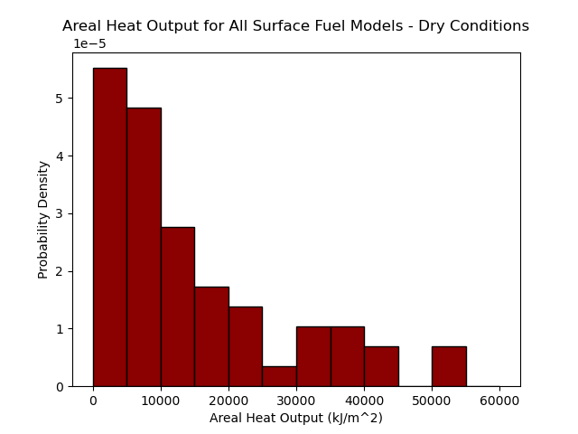
Figure 1: Areal Heat Output for All Surface Fuel Models - Dry Conditions
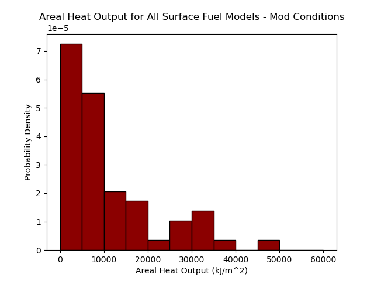
Figure 2: Areal Heat Output for All Surface Fuel Models - Mod Conditions
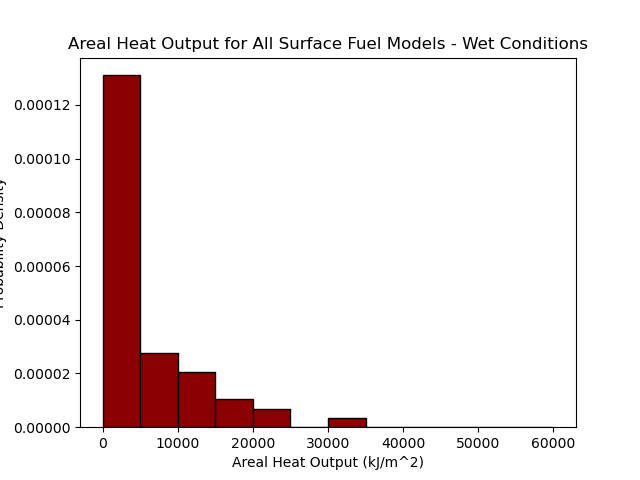
Figure 3: Areal Heat Output for All Surface Fuel Models - Wet Conditions
8.2.2. How to Estimate the Number of Firebrands Cast per Burned Cell
Several spotting parameters can be adjusted by the user:
| Parameter | Units | Description |
|---|---|---|
| random_seed | \(\text{integer}\) or \(\text{Generator}\) | seed for a numpy.random.Generator object |
| firebrands_per_unit_heat | \(\text{firebrands}/\text{kJ}\) | number of firebrands to emit per kilojoule |
| downwind_distance_mean | \(\text{m}\) | normal distribution mean underpinning lognormal distribution |
| fireline_intensity_exponent | \(\text{-}\) | downwind_distance_mean multiplier [I^fireline_intensity_exponent] |
| wind_speed_exponent | \(\text{-}\) | downwind_distance_mean multiplier [U^wind_speed_exponent] |
| downwind_variance_mean_ratio | \(\text{m}^2/\text{m}\) | normal distribution variance divided by expected value [Var(X) / E(X)] |
| crosswind_distance_stdev | \(\text{m}\) | crosswind normal distribution standard deviation (mean = 0) |
| decay_distance | \(\text{m}\) | spotting distance at which ignition probability is divided by \(e\) |
In this section, we will look at firebrands_per_unit_heat and decay_distance specifically as they have the most direct bearing on the number of firebrands produced from each burning cell as well as how many of these will ignite new spot fires rather than fizzle out.
From section 8.2.1, we can see that heat outputs across all surface fuel models under moderately dry conditions range from about 0-45,000 \(\text{kJ}/\text{m}^2\).
Here, we will calculate some representative ignition probabilities and expected spot fire counts per burning cell given the following input variable ranges:
- heat output per area: 0-45,000 \(\text{kJ}/\text{m}^2\)
- heat per firebrand: 500,000-2,000,000 \(\text{kJ}/\text{firebrand}\)
- spotting distance from burning cell: 30-900 meters (e.g., 1-30 cells @ 30m resolution)
- decay distance: 30-900 meters (e.g., 1-30 cells @ 30m resolution)
- temperature at target cell: 20-40 degrees Celsius
- fine fuel moisture at target cell: 5-20%
In this example, we will assume a flat landscape (no slope) with 30 meter resolution grid cells. This gives us a cell area of 900 \(\text{m}^2\).
from pprint import pprint import pyretechnics.spot_fire as spot cell_area = 900 # m^2 firebrand_counts = sorted([heat_output_per_area * cell_area * firebrands_per_unit_heat for heat_output_per_area in range(0, 45001, 5000) for firebrands_per_unit_heat in map(lambda x: 1/x, range(int(5e5), int(2e6)+1, int(5e5)))]) distance_penalties = sorted([spot.firebrand_flight_survival_probability(spotting_distance, decay_distance) for spotting_distance in range(30, 901, 30) for decay_distance in range(30, 901, 30)]) schroeder_probs = sorted([spot.schroeder_ignition_probability(temperature, moisture / 100) for temperature in range(20, 41, 5) for moisture in range(5, 21, 5)]) ignition_probs = sorted([dp * sp for dp in distance_penalties for sp in schroeder_probs]) spot_fire_counts = sorted([fb * ip for fb in firebrand_counts for ip in ignition_probs]) def percentile_indices(coll): """ Return the 0th, 25th, 50th, 75th, and 100th percentile indices for coll. """ max_index = len(coll) - 1 return map(lambda p: (p, int(p * max_index)), [0.0, 0.25, 0.5, 0.75, 1.0]) firebrand_count_percs = {int(100 * p_v[0]): firebrand_counts[p_v[1]] for p_v in percentile_indices(firebrand_counts)} distance_penalty_percs = {int(100 * p_v[0]): distance_penalties[p_v[1]] for p_v in percentile_indices(distance_penalties)} schroeder_prob_percs = {int(100 * p_v[0]): schroeder_probs[p_v[1]] for p_v in percentile_indices(schroeder_probs)} ignition_prob_percs = {int(100 * p_v[0]): ignition_probs[p_v[1]] for p_v in percentile_indices(ignition_probs)} spot_fire_count_percs = {int(100 * p_v[0]): spot_fire_counts[p_v[1]] for p_v in percentile_indices(spot_fire_counts)} pprint({ "firebrand_count_percentiles" : firebrand_count_percs, "flight_distance_penalty_percentiles" : distance_penalty_percs, "schroeder_ignition_probability_percentiles": schroeder_prob_percs, "spot_ignition_probability_percentiles" : ignition_prob_percs, "spot_fire_count_percentiles" : spot_fire_count_percs, }, sort_dicts=False)
{'firebrand_count_percentiles': {0: 0.0,
25: 6.75,
50: 15.75,
75: 27.0,
100: 81.0},
'flight_distance_penalty_percentiles': {0: 9.357622912219837e-14,
25: 0.1353352814912796,
50: 0.3678794503211975,
75: 0.5961628556251526,
100: 0.9672160744667053},
'schroeder_ignition_probability_percentiles': {0: 0.041064321994781494,
25: 0.05806152522563934,
50: 0.14626064896583557,
75: 0.3209269940853119,
100: 0.6532412171363831},
'spot_ignition_probability_percentiles': {0: 3.842644403731403e-15,
25: 0.01667532404047145,
50: 0.05110364729968131,
75: 0.14566152291234502,
100: 0.6318254057185051},
'spot_fire_count_percentiles': {0: 0.0,
25: 0.09538073616268317,
50: 0.662820466042433,
75: 2.3768363731988043,
100: 51.17785786319891}}
We can see that depending on the surface fuel model and weather conditions at the cells receiving firebrands, we can get anywhere from 0-51 spot fires ignited by one burning cell per timestep using the ranges for firebrands_per_unit_heat and decay_distance provided above.
8.2.3. How to Estimate Typical Ranges for the \(\vec{\Delta}\) Distribution Characteristics
from math import sqrt, log def himoto_eq_28_values(B_star): # NOTE: The following value for D seems absurdly low, and so does # the predicted E[ΔX]. I suspect a typo in the Himoto2005 paper. D = 0.08 std_delta_x_over_D = 0.88 * (B_star ** (1.0 / 3.0)) exp_delta_x_over_D = 0.47 * (B_star ** (2.0 / 3.0)) cv_delta_x = std_delta_x_over_D / exp_delta_x_over_D sigma_x = sqrt(log(1.0 + cv_delta_x)) exp_delta_x = exp_delta_x_over_D * D mu_x = log(exp_delta_x) - (sigma_x ** 2.0) / 2.0 sigma_y = D * 0.92 return { "$B^*$" : B_star, "$\\text{CV}[\\Delta_X]$" : "{:.0f}%".format(100.0 * cv_delta_x), "$\\sigma_X$" : "{:.2f}".format(sigma_x), "$\\sigma_Y/\\mathbb{E}[\\Delta_X]$": "{:.2f}".format(sigma_y / exp_delta_x), # NOTE the following ended up being nonsensical: # "E[ΔX] (m)" exp_delta_x # "μ_X" mu_x } himoto_typical_ranges = [himoto_eq_28_values(B_star) for B_star in [20, 50, 100, 150, 200]] table_header = list(himoto_typical_ranges[0].keys()) table_rows = [list(d.values()) for d in himoto_typical_ranges] print([table_header, *table_rows])
| \(B^*\) | \(\text{CV}[\Delta_X]\) | \(\sigma_X\) | \(\sigma_Y/\mathbb{E}[\Delta_X]\) |
| 20 | 69% | 0.72 | 0.27 |
| 50 | 51% | 0.64 | 0.14 |
| 100 | 40% | 0.58 | 0.09 |
| 150 | 35% | 0.55 | 0.07 |
| 200 | 32% | 0.53 | 0.06 |
9. Burning Cells on a Grid (pyretechnics.burn_cells)
9.1. For Developers
This module provides convenience functions that apply the fuel model and moisture definitions from section 5, surface fire equations from section 6, and crown fire equations from section 7 to cells within a space-time cube, returning their combined surface and crown fire behavior.
9.1.1. Module Imports
import cython import cython as cy import numpy as np if cython.compiled: from cython.cimports.numpy import ndarray from cython.cimports.pyretechnics.cy_types import \ pyidx, vec_xy, vec_xyz, coord_tyx, fclaarr, FuelModel, FireBehaviorMin, FireBehaviorMax, SpreadBehavior from cython.cimports.pyretechnics.space_time_cube import ISpaceTimeCube, to_positive_index_range import cython.cimports.pyretechnics.conversion as conv import cython.cimports.pyretechnics.vector_utils as vu import cython.cimports.pyretechnics.fuel_models as fm import cython.cimports.pyretechnics.surface_fire as sf import cython.cimports.pyretechnics.crown_fire as cf else: from numpy import ndarray from pyretechnics.py_types import \ pyidx, vec_xy, vec_xyz, coord_tyx, fclaarr, FuelModel, FireBehaviorMin, FireBehaviorMax, SpreadBehavior from pyretechnics.space_time_cube import ISpaceTimeCube, to_positive_index_range import pyretechnics.conversion as conv import pyretechnics.vector_utils as vu import pyretechnics.fuel_models as fm import pyretechnics.surface_fire as sf import pyretechnics.crown_fire as cf
9.1.2. Burn Cells as a Head Fire
Sometimes the goal of a fire behavior analysis is to determine the most extreme behavior to be expected, given static measurements of surface fuels, tree canopy characteristics, topography, wind, and moisture. The following function computes the maximum surface fire behavior and checks to see whether its maximum surface fireline intensity causes a crown fire. If so, the maximum crown fire behavior is computed and combined with the maximum surface fire behavior as per section 7.1.8. If not, the maximum surface fire behavior is returned.
@cy.cfunc @cy.inline def SpreadBehavior_to_dict(sb: SpreadBehavior) -> dict: return { "fire_type" : sb.fire_type, "spread_rate" : sb.spread_rate, "spread_direction" : sb.spread_direction, "fireline_intensity": sb.fireline_intensity, "flame_length" : sb.flame_length, } @cy.ccall def burn_cell_as_head_fire(space_time_cubes : dict[str, ISpaceTimeCube], space_time_coordinate : coord_tyx, use_wind_limit : cy.bint = True, surface_lw_ratio_model: str = "behave", crown_max_lw_ratio : cy.float = 1e10) -> dict: """ Given these inputs: - space_time_cubes :: dictionary of (Lazy)SpaceTimeCube objects with these cell types - slope :: rise/run - aspect :: degrees clockwise from North - fuel_model :: integer index in fm.fuel_model_table - canopy_cover :: 0-1 - canopy_height :: m - canopy_base_height :: m - canopy_bulk_density :: kg/m^3 - wind_speed_10m :: km/hr - upwind_direction :: degrees clockwise from North - fuel_moisture_dead_1hr :: kg moisture/kg ovendry weight - fuel_moisture_dead_10hr :: kg moisture/kg ovendry weight - fuel_moisture_dead_100hr :: kg moisture/kg ovendry weight - fuel_moisture_live_herbaceous :: kg moisture/kg ovendry weight - fuel_moisture_live_woody :: kg moisture/kg ovendry weight - foliar_moisture :: kg moisture/kg ovendry weight - fuel_spread_adjustment :: float >= 0.0 (Optional: defaults to 1.0) - weather_spread_adjustment :: float >= 0.0 (Optional: defaults to 1.0) - space_time_coordinate :: (t,y,x) - use_wind_limit :: boolean (Optional) - surface_lw_ratio_model :: "rothermel" or "behave" (Optional) - crown_max_lw_ratio :: float > 0.0 (Optional) return a dictionary with these fire behavior values for the space-time coordinate (t,y,x): - fire_type :: 0 (unburned), 1 (surface), 2 (passive_crown), or 3 (active_crown) - spread_rate :: m/min - spread_direction :: (x, y, z) unit vector on the slope-tangential plane - fireline_intensity :: kW/m - flame_length :: m """ #================================================================================================ # Destructure the space_time_coordinate #================================================================================================ (t, y, x) = space_time_coordinate #================================================================================================ # Unpack the space_time_cubes dictionary #================================================================================================ # Topography, Fuel Model, and Vegetation slope : cy.float = cy.cast(ISpaceTimeCube, space_time_cubes["slope"]).get(t, y, x) aspect : cy.float = cy.cast(ISpaceTimeCube, space_time_cubes["aspect"]).get(t, y, x) fuel_model_number : cy.int = cy.cast(cy.int, cy.cast(ISpaceTimeCube, space_time_cubes["fuel_model"]).get(t, y, x)) canopy_cover : cy.float = cy.cast(ISpaceTimeCube, space_time_cubes["canopy_cover"]).get(t, y, x) canopy_height : cy.float = cy.cast(ISpaceTimeCube, space_time_cubes["canopy_height"]).get(t, y, x) canopy_base_height : cy.float = cy.cast(ISpaceTimeCube, space_time_cubes["canopy_base_height"]).get(t, y, x) canopy_bulk_density: cy.float = cy.cast(ISpaceTimeCube, space_time_cubes["canopy_bulk_density"]).get(t, y, x) # Wind, Surface Moisture, and Foliar Moisture wind_speed_10m : cy.float = cy.cast(ISpaceTimeCube, space_time_cubes["wind_speed_10m"]).get(t, y, x) upwind_direction : cy.float = cy.cast(ISpaceTimeCube, space_time_cubes["upwind_direction"]).get(t, y, x) fuel_moisture_dead_1hr : cy.float = cy.cast(ISpaceTimeCube, space_time_cubes["fuel_moisture_dead_1hr"]).get(t, y, x) fuel_moisture_dead_10hr : cy.float = cy.cast(ISpaceTimeCube, space_time_cubes["fuel_moisture_dead_10hr"]).get(t, y, x) fuel_moisture_dead_100hr : cy.float = cy.cast(ISpaceTimeCube, space_time_cubes["fuel_moisture_dead_100hr"]).get(t, y, x) fuel_moisture_live_herbaceous: cy.float = cy.cast(ISpaceTimeCube, space_time_cubes["fuel_moisture_live_herbaceous"]).get(t, y, x) fuel_moisture_live_woody : cy.float = cy.cast(ISpaceTimeCube, space_time_cubes["fuel_moisture_live_woody"]).get(t, y, x) foliar_moisture : cy.float = cy.cast(ISpaceTimeCube, space_time_cubes["foliar_moisture"]).get(t, y, x) # Spread Rate Adjustments (Optional) fuel_spread_adjustment : cy.float = (cy.cast(ISpaceTimeCube, space_time_cubes["fuel_spread_adjustment"]).get(t, y, x) if "fuel_spread_adjustment" in space_time_cubes else 1.0) # float >= 0.0 weather_spread_adjustment: cy.float = (cy.cast(ISpaceTimeCube, space_time_cubes["weather_spread_adjustment"]).get(t, y, x) if "weather_spread_adjustment" in space_time_cubes else 1.0) # float >= 0.0 spread_rate_adjustment : cy.float = fuel_spread_adjustment * weather_spread_adjustment # float >= 0.0 #================================================================================================ # Check whether cell is burnable #================================================================================================ fuel_model : FuelModel maybe_fuel_model: FuelModel|None = fm.fuel_model_table.get(fuel_model_number) if maybe_fuel_model: fuel_model = maybe_fuel_model if (maybe_fuel_model is None or not(fuel_model.burnable)): # Encountered unknown or non-burnable fuel model #================================================================================================ # Create a 3D unit vector pointing upslope on the slope-tangential plane #================================================================================================ upslope_direction: cy.float = conv.opposite_direction(aspect) slope_vector_2d : vec_xy = conv.azimuthal_to_cartesian(slope, upslope_direction) slope_vector_3d : vec_xyz = vu.to_slope_plane(slope_vector_2d, slope_vector_2d) default_direction: vec_xyz = (0.0, 1.0, 0.0) # default: North spread_direction : vec_xyz = vu.as_unit_vector_3d(slope_vector_3d) if slope > 0.0 else default_direction #============================================================================================ # Return zero surface fire behavior #============================================================================================ return { "fire_type" : 0, # unburned "spread_rate" : 0.0, "spread_direction" : spread_direction, "fireline_intensity": 0.0, "flame_length" : 0.0, } else: # Encountered burnable fuel model #============================================================================================ # Compute derived parameters #============================================================================================ fuel_moisture : fclaarr = (fuel_moisture_dead_1hr, fuel_moisture_dead_10hr, fuel_moisture_dead_100hr, 0.0, # fuel_moisture_dead_herbaceous fuel_moisture_live_herbaceous, fuel_moisture_live_woody) # kg moisture/kg ovendry weight fuel_bed_depth : cy.float = fuel_model.delta # ft heat_of_combustion : cy.float = conv.Btu_lb_to_kJ_kg(fuel_model.h[0]) # kJ/kg estimated_fine_fuel_moisture: cy.float = fuel_moisture_dead_1hr # kg moisture/kg ovendry weight #============================================================================================ # Calculate midflame wind speed #============================================================================================ # Convert from 10m wind speed to 20ft wind speed wind_speed_20ft: cy.float = conv.wind_speed_10m_to_wind_speed_20ft(wind_speed_10m) # km/hr # Convert 20ft wind speed from km/hr to m/min wind_speed_20ft_m_min: cy.float = conv.km_hr_to_m_min(wind_speed_20ft) # m/min # Convert from 20ft wind speed to midflame wind speed in m/min midflame_wind_speed: cy.float = sf.calc_midflame_wind_speed(wind_speed_20ft_m_min, # m/min fuel_bed_depth, # ft conv.m_to_ft(canopy_height), # ft canopy_cover) # 0-1 #============================================================================================ # Calculate surface fire behavior in the direction of maximum spread #============================================================================================ # Apply fuel moisture to fuel model moisturized_fuel_model: FuelModel = fm.moisturize(fuel_model, fuel_moisture) # TODO: Memoize calc_surface_fire_behavior_no_wind_no_slope # Calculate no-wind-no-slope surface fire behavior surface_fire_min: FireBehaviorMin = sf.calc_surface_fire_behavior_no_wind_no_slope(moisturized_fuel_model, spread_rate_adjustment) # Calculate surface fire behavior in the direction of maximum spread surface_fire_max: FireBehaviorMax = sf.calc_surface_fire_behavior_max(surface_fire_min, midflame_wind_speed, upwind_direction, slope, aspect, use_wind_limit, surface_lw_ratio_model) # Simplify the surface fire behavior fields for future combination with the crown fire behavior values spread_direction : vec_xyz = surface_fire_max.max_spread_direction surface_fire_max_simple: SpreadBehavior = sf.calc_surface_fire_behavior_in_direction(surface_fire_max, spread_direction) #============================================================================================ # Determine whether the surface fire transitions to a crown fire #============================================================================================ if cf.van_wagner_crown_fire_initiation(surface_fire_max_simple.fireline_intensity, canopy_cover, canopy_base_height, foliar_moisture): #======================================================================================== # Calculate crown fire behavior in the direction of maximum spread #======================================================================================== # Calculate crown fire behavior in the direction of maximum spread crown_fire_max: FireBehaviorMax = cf.calc_crown_fire_behavior_max(canopy_height, canopy_base_height, canopy_bulk_density, heat_of_combustion, estimated_fine_fuel_moisture, wind_speed_10m, upwind_direction, slope, aspect, crown_max_lw_ratio) # Simplify the crown fire behavior fields for future combination with the surface fire behavior values spread_direction : vec_xyz = crown_fire_max.max_spread_direction crown_fire_max_simple: SpreadBehavior = cf.calc_crown_fire_behavior_in_direction(crown_fire_max, spread_direction) #======================================================================================== # Calculate combined fire behavior in the direction of maximum spread #======================================================================================== combined_fire_max: SpreadBehavior = cf.calc_combined_fire_behavior(surface_fire_max_simple, crown_fire_max_simple) #======================================================================================== # Return the combined fire behavior in the direction of maximum spread #======================================================================================== return SpreadBehavior_to_dict(combined_fire_max) else: #======================================================================================== # Return the surface fire behavior in the direction of maximum spread #======================================================================================== return SpreadBehavior_to_dict(surface_fire_max_simple) # TODO: Make a more efficient version that avoids space_time_cubes dictionary lookups for each cell @cy.ccall def burn_all_cells_as_head_fire(space_time_cubes : dict[str, ISpaceTimeCube], t : pyidx, y_range : tuple[pyidx, pyidx]|None = None, x_range : tuple[pyidx, pyidx]|None = None, use_wind_limit : cy.bint = True, surface_lw_ratio_model: str = "behave", crown_max_lw_ratio : cy.float = 1e10) -> dict: """ Given these inputs: - space_time_cubes :: dictionary of (Lazy)SpaceTimeCube objects with these cell types - slope :: rise/run - aspect :: degrees clockwise from North - fuel_model :: integer index in fm.fuel_model_table - canopy_cover :: 0-1 - canopy_height :: m - canopy_base_height :: m - canopy_bulk_density :: kg/m^3 - wind_speed_10m :: km/hr - upwind_direction :: degrees clockwise from North - fuel_moisture_dead_1hr :: kg moisture/kg ovendry weight - fuel_moisture_dead_10hr :: kg moisture/kg ovendry weight - fuel_moisture_dead_100hr :: kg moisture/kg ovendry weight - fuel_moisture_live_herbaceous :: kg moisture/kg ovendry weight - fuel_moisture_live_woody :: kg moisture/kg ovendry weight - foliar_moisture :: kg moisture/kg ovendry weight - fuel_spread_adjustment :: float >= 0.0 (Optional: defaults to 1.0) - weather_spread_adjustment :: float >= 0.0 (Optional: defaults to 1.0) - t :: temporal integer index into the ISpaceTimeCube objects - y_range :: (min_y, max_y) spatial integer index into the ISpaceTimeCube objects (Optional) - x_range :: (min_x, max_x) spatial integer index into the ISpaceTimeCube objects (Optional) - use_wind_limit :: boolean (Optional) - surface_lw_ratio_model :: "rothermel" or "behave" (Optional) - crown_max_lw_ratio :: float > 0.0 (Optional) return a dictionary with these keys: - fire_type :: 2D byte array (0=unburned, 1=surface, 2=passive_crown, 3=active_crown) - spread_rate :: 2D float array (m/min) - spread_direction :: 2D float array (degrees clockwise from North) - fireline_intensity :: 2D float array (kW/m) - flame_length :: 2D float array (m) """ slope_cube : ISpaceTimeCube = cy.cast(ISpaceTimeCube, space_time_cubes["slope"]) bands : pyidx = slope_cube.shape[0] rows : pyidx = slope_cube.shape[1] cols : pyidx = slope_cube.shape[2] grid_shape : tuple[int, int] = (rows, cols) y_range_real: tuple[pyidx, pyidx] = to_positive_index_range(y_range, rows) x_range_real: tuple[pyidx, pyidx] = to_positive_index_range(x_range, cols) min_y : pyidx = y_range_real[0] max_y : pyidx = y_range_real[1] min_x : pyidx = x_range_real[0] max_x : pyidx = x_range_real[1] if not(0 <= t < bands): raise ValueError("The t value is out of range of the space_time_cubes.") if not(0 <= min_y < max_y <= rows): raise ValueError("The y_range values are out of range of the space_time_cubes.") if not(0 <= min_x < max_x <= cols): raise ValueError("The x_range values are out of range of the space_time_cubes.") fire_type_matrix : ndarray = np.zeros(grid_shape, dtype="uint8") spread_rate_matrix : ndarray = np.zeros(grid_shape, dtype="float32") spread_direction_matrix : ndarray = np.full(grid_shape, np.nan, dtype="float32") fireline_intensity_matrix : ndarray = np.zeros(grid_shape, dtype="float32") flame_length_matrix : ndarray = np.zeros(grid_shape, dtype="float32") fire_type_memview : cy.uchar[:,::1] = fire_type_matrix spread_rate_memview : cy.float[:,::1] = spread_rate_matrix spread_direction_memview : cy.float[:,::1] = spread_direction_matrix fireline_intensity_memview: cy.float[:,::1] = fireline_intensity_matrix flame_length_memview : cy.float[:,::1] = flame_length_matrix y : pyidx x : pyidx space_time_coordinate: coord_tyx for y in range(min_y, max_y): for x in range(min_x, max_x): space_time_coordinate = (t, y, x) spread_behavior = burn_cell_as_head_fire(space_time_cubes, space_time_coordinate, use_wind_limit, surface_lw_ratio_model, crown_max_lw_ratio) fire_type_memview[y,x] = spread_behavior["fire_type"] spread_rate_memview[y,x] = spread_behavior["spread_rate"] spread_direction_memview[y,x] = vu.spread_direction_vector_to_angle(spread_behavior["spread_direction"]) fireline_intensity_memview[y,x] = spread_behavior["fireline_intensity"] flame_length_memview[y,x] = spread_behavior["flame_length"] return { "fire_type" : fire_type_matrix, "spread_rate" : spread_rate_matrix, "spread_direction" : spread_direction_matrix, "fireline_intensity": fireline_intensity_matrix, "flame_length" : flame_length_matrix, }
9.1.3. Burn Cells in Any Direction
When the goal of a fire behavior analysis is to evolve a burn scar from its point of ignition into a generally conical shape in space-time, then it is necessary to evaluate the combined surface and crown fire behavior in the direction normal to the fire front. In order to facilitate this calculation, the following function takes an azimuth (degrees clockwise from North), meant to represent the spatial direction in which the fire front is spreading from a given grid cell. It first projects this 2D direction onto the local slope-tangential plane and computes the surface fire behavior in this direction. If a crown fire occurs, the crown fire behavior is also calculated in the azimuth direction, and the combined surface and crown fire behavior (as per section 7.1.8) is returned. If no crown fire occurs, the surface fire behavior in the azimuth direction is returned.
@cy.ccall def burn_cell_toward_azimuth(space_time_cubes : dict[str, ISpaceTimeCube], space_time_coordinate : coord_tyx, azimuth : cy.float, use_wind_limit : cy.bint = True, surface_lw_ratio_model: str = "behave", crown_max_lw_ratio : cy.float = 1e10) -> dict: """ Given these inputs: - space_time_cubes :: dictionary of (Lazy)SpaceTimeCube objects with these cell types - slope :: rise/run - aspect :: degrees clockwise from North - fuel_model :: integer index in fm.fuel_model_table - canopy_cover :: 0-1 - canopy_height :: m - canopy_base_height :: m - canopy_bulk_density :: kg/m^3 - wind_speed_10m :: km/hr - upwind_direction :: degrees clockwise from North - fuel_moisture_dead_1hr :: kg moisture/kg ovendry weight - fuel_moisture_dead_10hr :: kg moisture/kg ovendry weight - fuel_moisture_dead_100hr :: kg moisture/kg ovendry weight - fuel_moisture_live_herbaceous :: kg moisture/kg ovendry weight - fuel_moisture_live_woody :: kg moisture/kg ovendry weight - foliar_moisture :: kg moisture/kg ovendry weight - fuel_spread_adjustment :: float >= 0.0 (Optional: defaults to 1.0) - weather_spread_adjustment :: float >= 0.0 (Optional: defaults to 1.0) - space_time_coordinate :: (t,y,x) - azimuth :: degrees clockwise from North on the horizontal plane - use_wind_limit :: boolean (Optional) - surface_lw_ratio_model :: "rothermel" or "behave" (Optional) - crown_max_lw_ratio :: float > 0.0 (Optional) return a dictionary with these fire behavior values for the space-time coordinate (t,y,x): - fire_type :: 0 (unburned), 1 (surface), 2 (passive_crown), or 3 (active_crown) - spread_rate :: m/min - spread_direction :: (x, y, z) unit vector on the slope-tangential plane - fireline_intensity :: kW/m - flame_length :: m """ #================================================================================================ # Destructure the space_time_coordinate #================================================================================================ (t, y, x) = space_time_coordinate #================================================================================================ # Unpack the space_time_cubes dictionary #================================================================================================ # Topography, Fuel Model, and Vegetation slope : cy.float = cy.cast(ISpaceTimeCube, space_time_cubes["slope"]).get(t, y, x) aspect : cy.float = cy.cast(ISpaceTimeCube, space_time_cubes["aspect"]).get(t, y, x) fuel_model_number : cy.int = cy.cast(cy.int, cy.cast(ISpaceTimeCube, space_time_cubes["fuel_model"]).get(t, y, x)) canopy_cover : cy.float = cy.cast(ISpaceTimeCube, space_time_cubes["canopy_cover"]).get(t, y, x) canopy_height : cy.float = cy.cast(ISpaceTimeCube, space_time_cubes["canopy_height"]).get(t, y, x) canopy_base_height : cy.float = cy.cast(ISpaceTimeCube, space_time_cubes["canopy_base_height"]).get(t, y, x) canopy_bulk_density: cy.float = cy.cast(ISpaceTimeCube, space_time_cubes["canopy_bulk_density"]).get(t, y, x) # Wind, Surface Moisture, and Foliar Moisture wind_speed_10m : cy.float = cy.cast(ISpaceTimeCube, space_time_cubes["wind_speed_10m"]).get(t, y, x) upwind_direction : cy.float = cy.cast(ISpaceTimeCube, space_time_cubes["upwind_direction"]).get(t, y, x) fuel_moisture_dead_1hr : cy.float = cy.cast(ISpaceTimeCube, space_time_cubes["fuel_moisture_dead_1hr"]).get(t, y, x) fuel_moisture_dead_10hr : cy.float = cy.cast(ISpaceTimeCube, space_time_cubes["fuel_moisture_dead_10hr"]).get(t, y, x) fuel_moisture_dead_100hr : cy.float = cy.cast(ISpaceTimeCube, space_time_cubes["fuel_moisture_dead_100hr"]).get(t, y, x) fuel_moisture_live_herbaceous: cy.float = cy.cast(ISpaceTimeCube, space_time_cubes["fuel_moisture_live_herbaceous"]).get(t, y, x) fuel_moisture_live_woody : cy.float = cy.cast(ISpaceTimeCube, space_time_cubes["fuel_moisture_live_woody"]).get(t, y, x) foliar_moisture : cy.float = cy.cast(ISpaceTimeCube, space_time_cubes["foliar_moisture"]).get(t, y, x) # Spread Rate Adjustments (Optional) fuel_spread_adjustment : cy.float = (cy.cast(ISpaceTimeCube, space_time_cubes["fuel_spread_adjustment"]).get(t, y, x) if "fuel_spread_adjustment" in space_time_cubes else 1.0) # float >= 0.0 weather_spread_adjustment: cy.float = (cy.cast(ISpaceTimeCube, space_time_cubes["weather_spread_adjustment"]).get(t, y, x) if "weather_spread_adjustment" in space_time_cubes else 1.0) # float >= 0.0 spread_rate_adjustment : cy.float = fuel_spread_adjustment * weather_spread_adjustment # float >= 0.0 #================================================================================================ # Project a 2D unit vector pointing toward the azimuth onto the slope-tangential plane #================================================================================================ upslope_direction: cy.float = conv.opposite_direction(aspect) slope_vector_2d : vec_xy = conv.azimuthal_to_cartesian(slope, upslope_direction) azimuth_vector_2d: vec_xy = conv.azimuthal_to_cartesian(1.0, azimuth) spread_direction : vec_xyz = vu.as_unit_vector_3d(vu.to_slope_plane(azimuth_vector_2d, slope_vector_2d)) #================================================================================================ # Check whether cell is burnable #================================================================================================ fuel_model : FuelModel maybe_fuel_model: FuelModel|None = fm.fuel_model_table.get(fuel_model_number) if maybe_fuel_model: fuel_model = maybe_fuel_model if (maybe_fuel_model is None or not(fuel_model.burnable)): # Encountered unknown or non-burnable fuel model #============================================================================================ # Return zero surface fire behavior in the direction of the azimuth vector #============================================================================================ return { "fire_type" : 0, # unburned "spread_rate" : 0.0, "spread_direction" : spread_direction, "fireline_intensity": 0.0, "flame_length" : 0.0, } else: # Encountered burnable fuel model #============================================================================================ # Compute derived parameters #============================================================================================ fuel_moisture : fclaarr = (fuel_moisture_dead_1hr, fuel_moisture_dead_10hr, fuel_moisture_dead_100hr, 0.0, # fuel_moisture_dead_herbaceous fuel_moisture_live_herbaceous, fuel_moisture_live_woody) # kg moisture/kg ovendry weight fuel_bed_depth : cy.float = fuel_model.delta # ft heat_of_combustion : cy.float = conv.Btu_lb_to_kJ_kg(fuel_model.h[0]) # kJ/kg estimated_fine_fuel_moisture: cy.float = fuel_moisture_dead_1hr # kg moisture/kg ovendry weight #============================================================================================ # Calculate midflame wind speed #============================================================================================ # Convert from 10m wind speed to 20ft wind speed wind_speed_20ft: cy.float = conv.wind_speed_10m_to_wind_speed_20ft(wind_speed_10m) # km/hr # Convert 20ft wind speed from km/hr to m/min wind_speed_20ft_m_min: cy.float = conv.km_hr_to_m_min(wind_speed_20ft) # m/min # Convert from 20ft wind speed to midflame wind speed in m/min midflame_wind_speed: cy.float = sf.calc_midflame_wind_speed(wind_speed_20ft_m_min, # m/min fuel_bed_depth, # ft conv.m_to_ft(canopy_height), # ft canopy_cover) # 0-1 #============================================================================================ # Calculate surface fire behavior in the direction of maximum spread #============================================================================================ # Apply fuel moisture to fuel model moisturized_fuel_model: FuelModel = fm.moisturize(fuel_model, fuel_moisture) # TODO: Memoize calc_surface_fire_behavior_no_wind_no_slope # Calculate no-wind-no-slope surface fire behavior surface_fire_min: FireBehaviorMin = sf.calc_surface_fire_behavior_no_wind_no_slope(moisturized_fuel_model, spread_rate_adjustment) # Calculate surface fire behavior in the direction of maximum spread surface_fire_max: FireBehaviorMax = sf.calc_surface_fire_behavior_max(surface_fire_min, midflame_wind_speed, upwind_direction, slope, aspect, use_wind_limit, surface_lw_ratio_model) #============================================================================================ # Calculate surface fire behavior in the direction of the azimuth vector #============================================================================================ surface_fire_azimuth: SpreadBehavior = sf.calc_surface_fire_behavior_in_direction(surface_fire_max, spread_direction) #============================================================================================ # Determine whether the surface fire transitions to a crown fire #============================================================================================ if cf.van_wagner_crown_fire_initiation(surface_fire_azimuth.fireline_intensity, canopy_cover, canopy_base_height, foliar_moisture): #======================================================================================== # Calculate crown fire behavior in the direction of maximum spread #======================================================================================== crown_fire_max: FireBehaviorMax = cf.calc_crown_fire_behavior_max(canopy_height, canopy_base_height, canopy_bulk_density, heat_of_combustion, estimated_fine_fuel_moisture, wind_speed_10m, upwind_direction, slope, aspect, crown_max_lw_ratio) #======================================================================================== # Calculate crown fire behavior in the direction of the azimuth vector #======================================================================================== crown_fire_azimuth: SpreadBehavior = cf.calc_crown_fire_behavior_in_direction(crown_fire_max, spread_direction) #======================================================================================== # Calculate combined fire behavior in the direction of the azimuth vector #======================================================================================== combined_fire_azimuth: SpreadBehavior = cf.calc_combined_fire_behavior(surface_fire_azimuth, crown_fire_azimuth) #======================================================================================== # Return the combined fire behavior in the direction of the azimuth vector #======================================================================================== return SpreadBehavior_to_dict(combined_fire_azimuth) else: #======================================================================================== # Return the surface fire behavior in the direction of the azimuth vector #======================================================================================== return SpreadBehavior_to_dict(surface_fire_azimuth) # TODO: Make a more efficient version that avoids space_time_cubes dictionary lookups for each cell @cy.ccall def burn_all_cells_toward_azimuth(space_time_cubes : dict[str, ISpaceTimeCube], azimuth : cy.float, t : pyidx, y_range : tuple[pyidx, pyidx]|None = None, x_range : tuple[pyidx, pyidx]|None = None, use_wind_limit : cy.bint = True, surface_lw_ratio_model: str = "behave", crown_max_lw_ratio : cy.float = 1e10) -> dict: """ Given these inputs: - space_time_cubes :: dictionary of (Lazy)SpaceTimeCube objects with these cell types - slope :: rise/run - aspect :: degrees clockwise from North - fuel_model :: integer index in fm.fuel_model_table - canopy_cover :: 0-1 - canopy_height :: m - canopy_base_height :: m - canopy_bulk_density :: kg/m^3 - wind_speed_10m :: km/hr - upwind_direction :: degrees clockwise from North - fuel_moisture_dead_1hr :: kg moisture/kg ovendry weight - fuel_moisture_dead_10hr :: kg moisture/kg ovendry weight - fuel_moisture_dead_100hr :: kg moisture/kg ovendry weight - fuel_moisture_live_herbaceous :: kg moisture/kg ovendry weight - fuel_moisture_live_woody :: kg moisture/kg ovendry weight - foliar_moisture :: kg moisture/kg ovendry weight - fuel_spread_adjustment :: float >= 0.0 (Optional: defaults to 1.0) - weather_spread_adjustment :: float >= 0.0 (Optional: defaults to 1.0) - azimuth :: degrees clockwise from North on the horizontal plane - t :: temporal integer index into the ISpaceTimeCube objects - y_range :: (min_y, max_y) spatial integer index into the ISpaceTimeCube objects (Optional) - x_range :: (min_x, max_x) spatial integer index into the ISpaceTimeCube objects (Optional) - use_wind_limit :: boolean (Optional) - surface_lw_ratio_model :: "rothermel" or "behave" (Optional) - crown_max_lw_ratio :: float > 0.0 (Optional) return a dictionary with these keys: - fire_type :: 2D byte array (0=unburned, 1=surface, 2=passive_crown, 3=active_crown) - spread_rate :: 2D float array (m/min) - spread_direction :: 2D float array (degrees clockwise from North) - fireline_intensity :: 2D float array (kW/m) - flame_length :: 2D float array (m) """ slope_cube : ISpaceTimeCube = cy.cast(ISpaceTimeCube, space_time_cubes["slope"]) bands : pyidx = slope_cube.shape[0] rows : pyidx = slope_cube.shape[1] cols : pyidx = slope_cube.shape[2] grid_shape : tuple[int, int] = (rows, cols) y_range_real: tuple[pyidx, pyidx] = to_positive_index_range(y_range, rows) x_range_real: tuple[pyidx, pyidx] = to_positive_index_range(x_range, cols) min_y : pyidx = y_range_real[0] max_y : pyidx = y_range_real[1] min_x : pyidx = x_range_real[0] max_x : pyidx = x_range_real[1] if not(0 <= t < bands): raise ValueError("The t value is out of range of the space_time_cubes.") if not(0 <= min_y < max_y <= rows): raise ValueError("The y_range values are out of range of the space_time_cubes.") if not(0 <= min_x < max_x <= cols): raise ValueError("The x_range values are out of range of the space_time_cubes.") fire_type_matrix : ndarray = np.zeros(grid_shape, dtype="uint8") spread_rate_matrix : ndarray = np.zeros(grid_shape, dtype="float32") spread_direction_matrix : ndarray = np.full(grid_shape, np.nan, dtype="float32") fireline_intensity_matrix : ndarray = np.zeros(grid_shape, dtype="float32") flame_length_matrix : ndarray = np.zeros(grid_shape, dtype="float32") fire_type_memview : cy.uchar[:,::1] = fire_type_matrix spread_rate_memview : cy.float[:,::1] = spread_rate_matrix spread_direction_memview : cy.float[:,::1] = spread_direction_matrix fireline_intensity_memview: cy.float[:,::1] = fireline_intensity_matrix flame_length_memview : cy.float[:,::1] = flame_length_matrix y : pyidx x : pyidx space_time_coordinate: coord_tyx for y in range(min_y, max_y): for x in range(min_x, max_x): space_time_coordinate = (t, y, x) spread_behavior = burn_cell_toward_azimuth(space_time_cubes, space_time_coordinate, azimuth, use_wind_limit, surface_lw_ratio_model, crown_max_lw_ratio) fire_type_memview[y,x] = spread_behavior["fire_type"] spread_rate_memview[y,x] = spread_behavior["spread_rate"] spread_direction_memview[y,x] = vu.spread_direction_vector_to_angle(spread_behavior["spread_direction"]) fireline_intensity_memview[y,x] = spread_behavior["fireline_intensity"] flame_length_memview[y,x] = spread_behavior["flame_length"] return { "fire_type" : fire_type_matrix, "spread_rate" : spread_rate_matrix, "spread_direction" : spread_direction_matrix, "fireline_intensity": fireline_intensity_matrix, "flame_length" : flame_length_matrix, }
9.1.4. Burn Cells by Time of Arrival
Another reason to calculate the fire behavior of cells at static points in space-time is to upsample the results of a lower resolution fire spread simulation so as to estimate what these results would have looked like if the simulation had been performed at a higher resolution.
Alternatively, satellite imagery may have been used to derive a time of arrival raster for a fire spread event by interpolating between a temporal sequence of fire front detections. However, the fire behavior within the burned cells as the fire progressed through them is not already available.
In both of these scenarios, we begin with a 2D time of arrival raster, which labels each cell in space with the time at which it was ignited (if indeed it was). By itself, this would enable us to efficiently burn all the cells on the fire cone's surface as if they were head fires. However, during a fire spread event, each cell will be burned in the direction orthogonal to the fire front as it progresses through that cell. In order to determine the spread direction for each cell, we can compute the 2D spatial gradient (dt/dy, dt/dx) of the provided time of arrival matrix.
With these two pieces of information, we should be able to estimate the fire behavior that would have been exhibited if we had run this fire spread simulation directly but in a fraction of the time.
# TODO: Add an optional (dy,dx) offset to the ll_corner of the input matrices @cy.ccall def burn_cells_by_time_of_arrival(space_time_cubes : dict[str, ISpaceTimeCube], cube_resolution : tuple[cy.float, cy.float, cy.float], time_of_arrival_matrix: cy.float[:,::1], use_wind_limit : cy.bint = True, surface_lw_ratio_model: str = "behave", crown_max_lw_ratio : cy.float = 1e10) -> dict: """ Given these inputs: - space_time_cubes :: dictionary of (Lazy)SpaceTimeCube objects with these cell types - slope :: rise/run - aspect :: degrees clockwise from North - fuel_model :: integer index in fm.fuel_model_table - canopy_cover :: 0-1 - canopy_height :: m - canopy_base_height :: m - canopy_bulk_density :: kg/m^3 - wind_speed_10m :: km/hr - upwind_direction :: degrees clockwise from North - fuel_moisture_dead_1hr :: kg moisture/kg ovendry weight - fuel_moisture_dead_10hr :: kg moisture/kg ovendry weight - fuel_moisture_dead_100hr :: kg moisture/kg ovendry weight - fuel_moisture_live_herbaceous :: kg moisture/kg ovendry weight - fuel_moisture_live_woody :: kg moisture/kg ovendry weight - foliar_moisture :: kg moisture/kg ovendry weight - fuel_spread_adjustment :: float >= 0.0 (Optional: defaults to 1.0) - weather_spread_adjustment :: float >= 0.0 (Optional: defaults to 1.0) - cube_resolution :: tuple with these fields - band_duration :: minutes - cell_height :: meters - cell_width :: meters - time_of_arrival_matrix :: 2D float array (min) - use_wind_limit :: boolean (Optional) - surface_lw_ratio_model :: "rothermel" or "behave" (Optional) - crown_max_lw_ratio :: float > 0.0 (Optional) return a dictionary with these keys: - fire_type :: 2D byte array (0=unburned, 1=surface, 2=passive_crown, 3=active_crown) - spread_rate :: 2D float array (m/min) - spread_direction :: 2D float array (degrees clockwise from North) - fireline_intensity :: 2D float array (kW/m) - flame_length :: 2D float array (m) """ slope_cube : ISpaceTimeCube = cy.cast(ISpaceTimeCube, space_time_cubes["slope"]) bands : pyidx = slope_cube.shape[0] rows : pyidx = slope_cube.shape[1] cols : pyidx = slope_cube.shape[2] toa_rows : pyidx = time_of_arrival_matrix.shape[0] toa_cols : pyidx = time_of_arrival_matrix.shape[1] grid_shape : tuple[int, int] = (rows, cols) band_duration: cy.float = cube_resolution[0] max_bands : pyidx = int(np.max(time_of_arrival_matrix) / band_duration) if (max_bands > bands): raise ValueError("The time_of_arrival_matrix contains values that are out of range of the space_time_cubes.") if (toa_rows > rows): raise ValueError("The time_of_arrival_matrix rows are out of range of the space_time_cubes.") if (toa_cols > cols): raise ValueError("The time_of_arrival_matrix cols are out of range of the space_time_cubes.") # Compute the gradient of the time_of_arrival_matrix (dt_dy, dt_dx) = np.gradient(time_of_arrival_matrix) # Allocate output matrices fire_type_matrix : ndarray = np.zeros(grid_shape, dtype="uint8") spread_rate_matrix : ndarray = np.zeros(grid_shape, dtype="float32") spread_direction_matrix : ndarray = np.full(grid_shape, np.nan, dtype="float32") fireline_intensity_matrix : ndarray = np.zeros(grid_shape, dtype="float32") flame_length_matrix : ndarray = np.zeros(grid_shape, dtype="float32") fire_type_memview : cy.uchar[:,::1] = fire_type_matrix spread_rate_memview : cy.float[:,::1] = spread_rate_matrix spread_direction_memview : cy.float[:,::1] = spread_direction_matrix fireline_intensity_memview: cy.float[:,::1] = fireline_intensity_matrix flame_length_memview : cy.float[:,::1] = flame_length_matrix t : pyidx y : pyidx x : pyidx time_of_arrival : cy.float r : cy.float azimuth : cy.float space_time_coordinate: coord_tyx for y in range(toa_rows): for x in range(toa_cols): time_of_arrival = time_of_arrival_matrix[y,x] # min if time_of_arrival >= 0.0: t = int(time_of_arrival / band_duration) space_time_coordinate = (t, y, x) (_r, azimuth) = conv.cartesian_to_azimuthal(dt_dx[y,x], dt_dy[y,x]) spread_behavior = burn_cell_toward_azimuth(space_time_cubes, space_time_coordinate, azimuth, use_wind_limit, surface_lw_ratio_model, crown_max_lw_ratio) fire_type_memview[y,x] = spread_behavior["fire_type"] spread_rate_memview[y,x] = spread_behavior["spread_rate"] spread_direction_memview[y,x] = vu.spread_direction_vector_to_angle(spread_behavior["spread_direction"]) fireline_intensity_memview[y,x] = spread_behavior["fireline_intensity"] flame_length_memview[y,x] = spread_behavior["flame_length"] return { "fire_type" : fire_type_matrix, "spread_rate" : spread_rate_matrix, "spread_direction" : spread_direction_matrix, "fireline_intensity": fireline_intensity_matrix, "flame_length" : flame_length_matrix, }
9.2. For Users
In the following sections, we will demonstrate how to calculate the combined surface and crown fire behavior first in the direction of maximum spread and then in any direction.
9.2.1. How to Burn a Single Cell as a Head Fire
from pprint import pprint from pyretechnics.space_time_cube import SpaceTimeCube import pyretechnics.burn_cells as bc #============================================================================================ # Specify the SpaceTimeCube dimensions #============================================================================================ cube_shape = ( 240, # bands: 10 days @ 1 hour/band 1000, # rows: 30 km @ 30 meters/row 1000, # cols: 30 km @ 30 meters/col ) #============================================================================================ # Create an input dictionary of SpaceTimeCubes (using constant data for this example) #============================================================================================ space_time_cubes = { "slope" : SpaceTimeCube(cube_shape, 0.8), # rise/run "aspect" : SpaceTimeCube(cube_shape, 225.0), # degrees clockwise from North "fuel_model" : SpaceTimeCube(cube_shape, 101), # integer index in fm.fuel_model_table "canopy_cover" : SpaceTimeCube(cube_shape, 0.6), # 0-1 "canopy_height" : SpaceTimeCube(cube_shape, 30.0), # m "canopy_base_height" : SpaceTimeCube(cube_shape, 3.0), # m "canopy_bulk_density" : SpaceTimeCube(cube_shape, 0.3), # kg/m^3 "wind_speed_10m" : SpaceTimeCube(cube_shape, 30.0), # km/hr "upwind_direction" : SpaceTimeCube(cube_shape, 180.0), # degrees clockwise from North "fuel_moisture_dead_1hr" : SpaceTimeCube(cube_shape, 0.05), # kg moisture/kg ovendry weight "fuel_moisture_dead_10hr" : SpaceTimeCube(cube_shape, 0.10), # kg moisture/kg ovendry weight "fuel_moisture_dead_100hr" : SpaceTimeCube(cube_shape, 0.15), # kg moisture/kg ovendry weight "fuel_moisture_live_herbaceous": SpaceTimeCube(cube_shape, 0.90), # kg moisture/kg ovendry weight "fuel_moisture_live_woody" : SpaceTimeCube(cube_shape, 0.60), # kg moisture/kg ovendry weight "foliar_moisture" : SpaceTimeCube(cube_shape, 0.90), # kg moisture/kg ovendry weight "fuel_spread_adjustment" : SpaceTimeCube(cube_shape, 1.0), # float >= 0.0 (Optional: defaults to 1.0) "weather_spread_adjustment" : SpaceTimeCube(cube_shape, 1.0), # float >= 0.0 (Optional: defaults to 1.0) } #============================================================================================ # Specify a space-time coordinate (t,y,x) within the extent of the SpaceTimeCube dimensions #============================================================================================ space_time_coordinate = (24, 100, 100) #============================================================================================ # Calculate combined fire behavior in the direction of maximum spread (with wind limit) #============================================================================================ combined_behavior_limited = bc.burn_cell_as_head_fire(space_time_cubes, space_time_coordinate, surface_lw_ratio_model="rothermel") #============================================================================================ # Calculate combined fire behavior in the direction of maximum spread (without wind limit) #============================================================================================ combined_behavior_unlimited = bc.burn_cell_as_head_fire(space_time_cubes, space_time_coordinate, use_wind_limit=False, surface_lw_ratio_model="rothermel") #============================================================================================ # Display combined fire behavior in the direction of maximum spread (with wind limit) #============================================================================================ print("Fire Behavior from Combined Surface and Crown Fire (with Wind Limit) at Coordinate " + str(space_time_coordinate) + "\n" + "=" * 100) pprint(combined_behavior_limited) #============================================================================================ # Display combined fire behavior in the direction of maximum spread (without wind limit) #============================================================================================ print("\nFire Behavior from Combined Surface and Crown Fire (without Wind Limit) at Coordinate " + str(space_time_coordinate) + "\n" + "=" * 100) pprint(combined_behavior_unlimited)
Fire Behavior from Combined Surface and Crown Fire (with Wind Limit) at Coordinate (24, 100, 100)
====================================================================================================
{'fire_type': 1,
'fireline_intensity': 32.52827072143555,
'flame_length': 0.38439345359802246,
'spread_direction': (0.4869149327278137,
0.6130024194717407,
0.6222072243690491),
'spread_rate': 2.296468734741211}
Fire Behavior from Combined Surface and Crown Fire (without Wind Limit) at Coordinate (24, 100, 100)
====================================================================================================
{'fire_type': 1,
'fireline_intensity': 50.608314514160156,
'flame_length': 0.47106191515922546,
'spread_direction': (0.4869149327278137,
0.6130024194717407,
0.6222072243690491),
'spread_rate': 3.5729048252105713}
9.2.2. How to Burn a Region of Cells as a Head Fire
from pprint import pprint from pyretechnics.space_time_cube import SpaceTimeCube import pyretechnics.burn_cells as bc #============================================================================================ # Specify the SpaceTimeCube dimensions #============================================================================================ cube_shape = ( 240, # bands: 10 days @ 1 hour/band 1000, # rows: 30 km @ 30 meters/row 1000, # cols: 30 km @ 30 meters/col ) #============================================================================================ # Create an input dictionary of SpaceTimeCubes (using constant data for this example) #============================================================================================ space_time_cubes = { "slope" : SpaceTimeCube(cube_shape, 0.8), # rise/run "aspect" : SpaceTimeCube(cube_shape, 225.0), # degrees clockwise from North "fuel_model" : SpaceTimeCube(cube_shape, 101), # integer index in fm.fuel_model_table "canopy_cover" : SpaceTimeCube(cube_shape, 0.6), # 0-1 "canopy_height" : SpaceTimeCube(cube_shape, 30.0), # m "canopy_base_height" : SpaceTimeCube(cube_shape, 3.0), # m "canopy_bulk_density" : SpaceTimeCube(cube_shape, 0.3), # kg/m^3 "wind_speed_10m" : SpaceTimeCube(cube_shape, 30.0), # km/hr "upwind_direction" : SpaceTimeCube(cube_shape, 180.0), # degrees clockwise from North "fuel_moisture_dead_1hr" : SpaceTimeCube(cube_shape, 0.05), # kg moisture/kg ovendry weight "fuel_moisture_dead_10hr" : SpaceTimeCube(cube_shape, 0.10), # kg moisture/kg ovendry weight "fuel_moisture_dead_100hr" : SpaceTimeCube(cube_shape, 0.15), # kg moisture/kg ovendry weight "fuel_moisture_live_herbaceous": SpaceTimeCube(cube_shape, 0.90), # kg moisture/kg ovendry weight "fuel_moisture_live_woody" : SpaceTimeCube(cube_shape, 0.60), # kg moisture/kg ovendry weight "foliar_moisture" : SpaceTimeCube(cube_shape, 0.90), # kg moisture/kg ovendry weight "fuel_spread_adjustment" : SpaceTimeCube(cube_shape, 1.0), # float >= 0.0 (Optional: defaults to 1.0) "weather_spread_adjustment" : SpaceTimeCube(cube_shape, 1.0), # float >= 0.0 (Optional: defaults to 1.0) } #============================================================================================ # Specify a space-time region (t, (y_min, y_max), (x_min, x_max)) # within the extent of the SpaceTimeCube dimensions #============================================================================================ t = 24 y_range = (100,105) x_range = (100,105) #============================================================================================ # Calculate combined fire behavior in the direction of maximum spread (with wind limit) #============================================================================================ combined_behavior_limited = bc.burn_all_cells_as_head_fire(space_time_cubes, t, y_range, x_range, surface_lw_ratio_model="rothermel") #============================================================================================ # Calculate combined fire behavior in the direction of maximum spread (without wind limit) #============================================================================================ combined_behavior_unlimited = bc.burn_all_cells_as_head_fire(space_time_cubes, t, y_range, x_range, use_wind_limit=False, surface_lw_ratio_model="rothermel") #============================================================================================ # Display combined fire behavior in the direction of maximum spread (with wind limit) #============================================================================================ print("Fire Behavior from Combined Surface and Crown Fire (with Wind Limit) at Space-Time Region " + str((t, y_range, x_range)) + "\n" + "=" * 121) for (name, matrix) in combined_behavior_limited.items(): print("\nLayer: " + name) print(matrix[100:105,100:105]) #============================================================================================ # Display combined fire behavior in the direction of maximum spread (without wind limit) #============================================================================================ print("\nFire Behavior from Combined Surface and Crown Fire (without Wind Limit) at Space-Time Region " + str((t, y_range, x_range)) + "\n" + "=" * 121) for (name, matrix) in combined_behavior_unlimited.items(): print("\nLayer: " + name) print(matrix[100:105,100:105])
Fire Behavior from Combined Surface and Crown Fire (with Wind Limit) at Space-Time Region (24, (100, 105), (100, 105)) ========================================================================================================================= Layer: fire_type [[1 1 1 1 1] [1 1 1 1 1] [1 1 1 1 1] [1 1 1 1 1] [1 1 1 1 1]] Layer: spread_rate [[2.2964687 2.2964687 2.2964687 2.2964687 2.2964687] [2.2964687 2.2964687 2.2964687 2.2964687 2.2964687] [2.2964687 2.2964687 2.2964687 2.2964687 2.2964687] [2.2964687 2.2964687 2.2964687 2.2964687 2.2964687] [2.2964687 2.2964687 2.2964687 2.2964687 2.2964687]] Layer: spread_direction [[38.46052 38.46052 38.46052 38.46052 38.46052] [38.46052 38.46052 38.46052 38.46052 38.46052] [38.46052 38.46052 38.46052 38.46052 38.46052] [38.46052 38.46052 38.46052 38.46052 38.46052] [38.46052 38.46052 38.46052 38.46052 38.46052]] Layer: fireline_intensity [[32.52827 32.52827 32.52827 32.52827 32.52827] [32.52827 32.52827 32.52827 32.52827 32.52827] [32.52827 32.52827 32.52827 32.52827 32.52827] [32.52827 32.52827 32.52827 32.52827 32.52827] [32.52827 32.52827 32.52827 32.52827 32.52827]] Layer: flame_length [[0.38439345 0.38439345 0.38439345 0.38439345 0.38439345] [0.38439345 0.38439345 0.38439345 0.38439345 0.38439345] [0.38439345 0.38439345 0.38439345 0.38439345 0.38439345] [0.38439345 0.38439345 0.38439345 0.38439345 0.38439345] [0.38439345 0.38439345 0.38439345 0.38439345 0.38439345]] Fire Behavior from Combined Surface and Crown Fire (without Wind Limit) at Space-Time Region (24, (100, 105), (100, 105)) ========================================================================================================================= Layer: fire_type [[1 1 1 1 1] [1 1 1 1 1] [1 1 1 1 1] [1 1 1 1 1] [1 1 1 1 1]] Layer: spread_rate [[3.5729048 3.5729048 3.5729048 3.5729048 3.5729048] [3.5729048 3.5729048 3.5729048 3.5729048 3.5729048] [3.5729048 3.5729048 3.5729048 3.5729048 3.5729048] [3.5729048 3.5729048 3.5729048 3.5729048 3.5729048] [3.5729048 3.5729048 3.5729048 3.5729048 3.5729048]] Layer: spread_direction [[38.46052 38.46052 38.46052 38.46052 38.46052] [38.46052 38.46052 38.46052 38.46052 38.46052] [38.46052 38.46052 38.46052 38.46052 38.46052] [38.46052 38.46052 38.46052 38.46052 38.46052] [38.46052 38.46052 38.46052 38.46052 38.46052]] Layer: fireline_intensity [[50.608315 50.608315 50.608315 50.608315 50.608315] [50.608315 50.608315 50.608315 50.608315 50.608315] [50.608315 50.608315 50.608315 50.608315 50.608315] [50.608315 50.608315 50.608315 50.608315 50.608315] [50.608315 50.608315 50.608315 50.608315 50.608315]] Layer: flame_length [[0.47106192 0.47106192 0.47106192 0.47106192 0.47106192] [0.47106192 0.47106192 0.47106192 0.47106192 0.47106192] [0.47106192 0.47106192 0.47106192 0.47106192 0.47106192] [0.47106192 0.47106192 0.47106192 0.47106192 0.47106192] [0.47106192 0.47106192 0.47106192 0.47106192 0.47106192]]
9.2.3. How to Burn a Single Cell in Any Direction
from pprint import pprint from pyretechnics.space_time_cube import SpaceTimeCube import pyretechnics.burn_cells as bc #============================================================================================ # Specify the SpaceTimeCube dimensions #============================================================================================ cube_shape = ( 240, # bands: 10 days @ 1 hour/band 1000, # rows: 30 km @ 30 meters/row 1000, # cols: 30 km @ 30 meters/col ) #============================================================================================ # Create an input dictionary of SpaceTimeCubes (using constant data for this example) #============================================================================================ space_time_cubes = { "slope" : SpaceTimeCube(cube_shape, 0.8), # rise/run "aspect" : SpaceTimeCube(cube_shape, 225.0), # degrees clockwise from North "fuel_model" : SpaceTimeCube(cube_shape, 101), # integer index in fm.fuel_model_table "canopy_cover" : SpaceTimeCube(cube_shape, 0.6), # 0-1 "canopy_height" : SpaceTimeCube(cube_shape, 30.0), # m "canopy_base_height" : SpaceTimeCube(cube_shape, 3.0), # m "canopy_bulk_density" : SpaceTimeCube(cube_shape, 0.3), # kg/m^3 "wind_speed_10m" : SpaceTimeCube(cube_shape, 30.0), # km/hr "upwind_direction" : SpaceTimeCube(cube_shape, 180.0), # degrees clockwise from North "fuel_moisture_dead_1hr" : SpaceTimeCube(cube_shape, 0.05), # kg moisture/kg ovendry weight "fuel_moisture_dead_10hr" : SpaceTimeCube(cube_shape, 0.10), # kg moisture/kg ovendry weight "fuel_moisture_dead_100hr" : SpaceTimeCube(cube_shape, 0.15), # kg moisture/kg ovendry weight "fuel_moisture_live_herbaceous": SpaceTimeCube(cube_shape, 0.90), # kg moisture/kg ovendry weight "fuel_moisture_live_woody" : SpaceTimeCube(cube_shape, 0.60), # kg moisture/kg ovendry weight "foliar_moisture" : SpaceTimeCube(cube_shape, 0.90), # kg moisture/kg ovendry weight "fuel_spread_adjustment" : SpaceTimeCube(cube_shape, 1.0), # float >= 0.0 (Optional: defaults to 1.0) "weather_spread_adjustment" : SpaceTimeCube(cube_shape, 1.0), # float >= 0.0 (Optional: defaults to 1.0) } #============================================================================================ # Specify a space-time coordinate (t,y,x) within the extent of the SpaceTimeCube dimensions #============================================================================================ space_time_coordinate = (24, 100, 100) #============================================================================================ # Specify an azimuth to spread the fire towards #============================================================================================ spread_azimuth = 90.0 # degrees clockwise from North on the horizontal plane #============================================================================================ # Calculate combined fire behavior in the direction of the azimuth (with wind limit) #============================================================================================ combined_behavior_limited = bc.burn_cell_toward_azimuth(space_time_cubes, space_time_coordinate, spread_azimuth, surface_lw_ratio_model="rothermel") #============================================================================================ # Calculate combined fire behavior in the direction of the azimuth (without wind limit) #============================================================================================ combined_behavior_unlimited = bc.burn_cell_toward_azimuth(space_time_cubes, space_time_coordinate, spread_azimuth, use_wind_limit=False, surface_lw_ratio_model="rothermel") #============================================================================================ # Display combined fire behavior in the direction of the azimuth (with wind limit) #============================================================================================ print("Fire Behavior from Combined Surface and Crown Fire (with Wind Limit) at Coordinate " + str(space_time_coordinate) + "\n" + "=" * 100) pprint(combined_behavior_limited) #============================================================================================ # Display combined fire behavior in the direction of the azimuth (without wind limit) #============================================================================================ print("\nFire Behavior from Combined Surface and Crown Fire (without Wind Limit) at Coordinate " + str(space_time_coordinate) + "\n" + "=" * 100) pprint(combined_behavior_unlimited)
Fire Behavior from Combined Surface and Crown Fire (with Wind Limit) at Coordinate (24, 100, 100)
====================================================================================================
{'fire_type': 1,
'fireline_intensity': 25.044078826904297,
'flame_length': 0.3408319056034088,
'spread_direction': (0.8703882694244385,
-3.804587933586845e-08,
0.4923659861087799),
'spread_rate': 1.768091082572937}
Fire Behavior from Combined Surface and Crown Fire (without Wind Limit) at Coordinate (24, 100, 100)
====================================================================================================
{'fire_type': 1,
'fireline_intensity': 38.398006439208984,
'flame_length': 0.4148756265640259,
'spread_direction': (0.8703882694244385,
-3.804587933586845e-08,
0.4923659861087799),
'spread_rate': 2.710867166519165}
9.2.4. How to Burn a Region of Cells in Any Direction
from pprint import pprint from pyretechnics.space_time_cube import SpaceTimeCube import pyretechnics.burn_cells as bc #============================================================================================ # Specify the SpaceTimeCube dimensions #============================================================================================ cube_shape = ( 240, # bands: 10 days @ 1 hour/band 1000, # rows: 30 km @ 30 meters/row 1000, # cols: 30 km @ 30 meters/col ) #============================================================================================ # Create an input dictionary of SpaceTimeCubes (using constant data for this example) #============================================================================================ space_time_cubes = { "slope" : SpaceTimeCube(cube_shape, 0.8), # rise/run "aspect" : SpaceTimeCube(cube_shape, 225.0), # degrees clockwise from North "fuel_model" : SpaceTimeCube(cube_shape, 101), # integer index in fm.fuel_model_table "canopy_cover" : SpaceTimeCube(cube_shape, 0.6), # 0-1 "canopy_height" : SpaceTimeCube(cube_shape, 30.0), # m "canopy_base_height" : SpaceTimeCube(cube_shape, 3.0), # m "canopy_bulk_density" : SpaceTimeCube(cube_shape, 0.3), # kg/m^3 "wind_speed_10m" : SpaceTimeCube(cube_shape, 30.0), # km/hr "upwind_direction" : SpaceTimeCube(cube_shape, 180.0), # degrees clockwise from North "fuel_moisture_dead_1hr" : SpaceTimeCube(cube_shape, 0.05), # kg moisture/kg ovendry weight "fuel_moisture_dead_10hr" : SpaceTimeCube(cube_shape, 0.10), # kg moisture/kg ovendry weight "fuel_moisture_dead_100hr" : SpaceTimeCube(cube_shape, 0.15), # kg moisture/kg ovendry weight "fuel_moisture_live_herbaceous": SpaceTimeCube(cube_shape, 0.90), # kg moisture/kg ovendry weight "fuel_moisture_live_woody" : SpaceTimeCube(cube_shape, 0.60), # kg moisture/kg ovendry weight "foliar_moisture" : SpaceTimeCube(cube_shape, 0.90), # kg moisture/kg ovendry weight "fuel_spread_adjustment" : SpaceTimeCube(cube_shape, 1.0), # float >= 0.0 (Optional: defaults to 1.0) "weather_spread_adjustment" : SpaceTimeCube(cube_shape, 1.0), # float >= 0.0 (Optional: defaults to 1.0) } #============================================================================================ # Specify a space-time region (t, (y_min, y_max), (x_min, x_max)) # within the extent of the SpaceTimeCube dimensions #============================================================================================ t = 24 y_range = (100,105) x_range = (100,105) #============================================================================================ # Specify an azimuth to spread the fire towards #============================================================================================ spread_azimuth = 90.0 # degrees clockwise from North on the horizontal plane #============================================================================================ # Calculate combined fire behavior in the direction of the azimuth (with wind limit) #============================================================================================ combined_behavior_limited = bc.burn_all_cells_toward_azimuth(space_time_cubes, spread_azimuth, t, y_range, x_range, surface_lw_ratio_model="rothermel") #============================================================================================ # Calculate combined fire behavior in the direction of the azimuth (without wind limit) #============================================================================================ combined_behavior_unlimited = bc.burn_all_cells_toward_azimuth(space_time_cubes, spread_azimuth, t, y_range, x_range, use_wind_limit=False, surface_lw_ratio_model="rothermel") #============================================================================================ # Display combined fire behavior in the direction of the azimuth (with wind limit) #============================================================================================ print("Fire Behavior from Combined Surface and Crown Fire (with Wind Limit) at Space-Time Region " + str((t, y_range, x_range)) + "\n" + "=" * 121) for (name, matrix) in combined_behavior_limited.items(): print("\nLayer: " + name) print(matrix[100:105,100:105]) #============================================================================================ # Display combined fire behavior in the direction of the azimuth (without wind limit) #============================================================================================ print("\nFire Behavior from Combined Surface and Crown Fire (without Wind Limit) at Space-Time Region " + str((t, y_range, x_range)) + "\n" + "=" * 121) for (name, matrix) in combined_behavior_unlimited.items(): print("\nLayer: " + name) print(matrix[100:105,100:105])
Fire Behavior from Combined Surface and Crown Fire (with Wind Limit) at Space-Time Region (24, (100, 105), (100, 105)) ========================================================================================================================= Layer: fire_type [[1 1 1 1 1] [1 1 1 1 1] [1 1 1 1 1] [1 1 1 1 1] [1 1 1 1 1]] Layer: spread_rate [[1.7680911 1.7680911 1.7680911 1.7680911 1.7680911] [1.7680911 1.7680911 1.7680911 1.7680911 1.7680911] [1.7680911 1.7680911 1.7680911 1.7680911 1.7680911] [1.7680911 1.7680911 1.7680911 1.7680911 1.7680911] [1.7680911 1.7680911 1.7680911 1.7680911 1.7680911]] Layer: spread_direction [[90. 90. 90. 90. 90.] [90. 90. 90. 90. 90.] [90. 90. 90. 90. 90.] [90. 90. 90. 90. 90.] [90. 90. 90. 90. 90.]] Layer: fireline_intensity [[25.044079 25.044079 25.044079 25.044079 25.044079] [25.044079 25.044079 25.044079 25.044079 25.044079] [25.044079 25.044079 25.044079 25.044079 25.044079] [25.044079 25.044079 25.044079 25.044079 25.044079] [25.044079 25.044079 25.044079 25.044079 25.044079]] Layer: flame_length [[0.3408319 0.3408319 0.3408319 0.3408319 0.3408319] [0.3408319 0.3408319 0.3408319 0.3408319 0.3408319] [0.3408319 0.3408319 0.3408319 0.3408319 0.3408319] [0.3408319 0.3408319 0.3408319 0.3408319 0.3408319] [0.3408319 0.3408319 0.3408319 0.3408319 0.3408319]] Fire Behavior from Combined Surface and Crown Fire (without Wind Limit) at Space-Time Region (24, (100, 105), (100, 105)) ========================================================================================================================= Layer: fire_type [[1 1 1 1 1] [1 1 1 1 1] [1 1 1 1 1] [1 1 1 1 1] [1 1 1 1 1]] Layer: spread_rate [[2.7108672 2.7108672 2.7108672 2.7108672 2.7108672] [2.7108672 2.7108672 2.7108672 2.7108672 2.7108672] [2.7108672 2.7108672 2.7108672 2.7108672 2.7108672] [2.7108672 2.7108672 2.7108672 2.7108672 2.7108672] [2.7108672 2.7108672 2.7108672 2.7108672 2.7108672]] Layer: spread_direction [[90. 90. 90. 90. 90.] [90. 90. 90. 90. 90.] [90. 90. 90. 90. 90.] [90. 90. 90. 90. 90.] [90. 90. 90. 90. 90.]] Layer: fireline_intensity [[38.398006 38.398006 38.398006 38.398006 38.398006] [38.398006 38.398006 38.398006 38.398006 38.398006] [38.398006 38.398006 38.398006 38.398006 38.398006] [38.398006 38.398006 38.398006 38.398006 38.398006] [38.398006 38.398006 38.398006 38.398006 38.398006]] Layer: flame_length [[0.41487563 0.41487563 0.41487563 0.41487563 0.41487563] [0.41487563 0.41487563 0.41487563 0.41487563 0.41487563] [0.41487563 0.41487563 0.41487563 0.41487563 0.41487563] [0.41487563 0.41487563 0.41487563 0.41487563 0.41487563] [0.41487563 0.41487563 0.41487563 0.41487563 0.41487563]]
10. Fire Spread Algorithm (ELMFIRE): Eulerian Level Set Method (pyretechnics.eulerian_level_set)
10.1. For Developers
The level set method consists of simulating the propagation of the fire front by numerically solving the Hamilton-Jacobi equation mentioned in section 2.1.3:
\begin{equation} \frac{\partial \phi}{\partial t} + H(\nabla_\mathbf{x} \phi, \mathbf{x}, t) = 0 \end{equation}in which \(\phi(\mathbf{x}, t)\) is a scalar field, \(\nabla_\mathbf{x} \phi = (\partial \phi / \partial x, \partial \phi / \partial y)\) is its front-normal spatial gradient, and \(H(\vec{p}, \mathbf{x}, t)\) is the Hamiltonian, a function which is non-negative and 1-homogeneous in variable \(\vec{p} \in \mathbb{R}^2\): if \(\vec{n}\) is the front-normal unit vector, then \(H(\vec{n}, \mathbf{x}, t)\) is the front-normal spread rate at space-time coordinates \((\mathbf{x}, t) \in \mathbb{R}^2 \times \mathbb{R}\). By definition, the burned region at time \(t\) is the zero-sublevel set of \(\phi(\cdot, t)\), i.e. the region where \(\phi\) is negative or zero. Thus, the gradient \(\nabla_\mathbf{x} \phi\) points outward in the front-normal direction (with the nuance that \(\vec{n}\) is front-normal only in the horizontal plane, not the front-tangential plance, which means that \(\vec{n}\) and \(H(\vec{n})\) are somewhat unphysical; see section 2.1.4 for converting them to the physical quantities in the slope-tangential plane.)
The numerical strategy is to discretize the \(\phi\) field into a cartesian grid, represent the initial burned region by a suitable field \(\phi_0(\mathbf{x})\), then use a numerical scheme (2nd-order Runge-Kutta) with adaptive time steps to solve the Cauchy initial value problem:
\begin{equation} \begin{cases} \dfrac{\partial \phi}{\partial t} & = -H(\nabla_\mathbf{x} \phi, \mathbf{x}, t) \\ \phi(\mathbf{x}, t_0) & = \phi_0(\mathbf{x}) \end{cases} \end{equation}The following sections will walk through the numerical implementation; note that the code has been optimized for computational efficiency, sometimes at the expense of readability and simplicity, as some optimizations require to conflate several aspects of the problem.
10.1.1. Module Imports
import cython import cython as cy import numpy as np from scipy.interpolate import interpn from sortedcontainers import SortedDict if cython.compiled: from cython.cimports.numpy import ndarray from cython.cimports.libc.stdlib import malloc, realloc, free from cython.cimports.libc.math import pi, floor, sqrt, pow, atan, INFINITY as inf, isinf from cython.cimports.pyretechnics.cy_types import pyidx, vec_xy, vec_xyz, coord_yx, coord_tyx, \ fclaarr, FuelModel, FireBehaviorMin, FireBehaviorMax, SpreadBehavior, SpotConfig, \ PartialedEllWavelet, CellInputs, EllipticalInfo, Pass1CellOutput from cython.cimports.pyretechnics.random import BufferedRandGen from cython.cimports.pyretechnics.space_time_cube import ISpaceTimeCube, SpaceTimeCube import cython.cimports.pyretechnics.burn_cells as bc import cython.cimports.pyretechnics.conversion as conv import cython.cimports.pyretechnics.vector_utils as vu import cython.cimports.pyretechnics.fuel_models as fm import cython.cimports.pyretechnics.surface_fire as sf import cython.cimports.pyretechnics.crown_fire as cf import cython.cimports.pyretechnics.spot_fire as spot import cython.cimports.pyretechnics.narrow_band_tracking as nbt else: # TODO: Create equivalent Python functions for malloc, realloc, free from numpy import ndarray from math import pi, floor, sqrt, pow, atan, inf, isinf from pyretechnics.py_types import pyidx, vec_xy, vec_xyz, coord_yx, coord_tyx, \ fclaarr, FuelModel, FireBehaviorMin, FireBehaviorMax, SpreadBehavior, SpotConfig, \ PartialedEllWavelet, CellInputs, EllipticalInfo, Pass1CellOutput from pyretechnics.random import BufferedRandGen from pyretechnics.space_time_cube import ISpaceTimeCube, SpaceTimeCube import pyretechnics.burn_cells as bc import pyretechnics.conversion as conv import pyretechnics.vector_utils as vu import pyretechnics.fuel_models as fm import pyretechnics.surface_fire as sf import pyretechnics.crown_fire as cf import pyretechnics.spot_fire as spot import pyretechnics.narrow_band_tracking as nbt
10.1.2. Narrow band tracking
An important numerical optimization consists of updating the \(\phi\) field only in those cells that are close enough to the current fire front. This enables to make the computational cost of each time step proportional to the length of the fire perimeter. This technique is called the narrow band method.
Pyretechnics defines a concept of frontier cell as a cell with a neighbor of opposite \(\phi\) sign, with the further condition that at least one of them must be burnable. The narrow band consists of those cells in a 7x7 square centered on a frontier cell: this bandwidth is appropriate given the order of derivatives computed in the numerical scheme.
Pyretechnics uses a custom data structure for representing the narrow band. This data structure is sparse but enables fast iteration and updates by representing the tracked cells in blocks with a flat memory layout:
# FIXME detangle
Frontier cells will be represented as Python sets; cell coordinates are encoded as a single integer instead of a tuple, as that enables a more efficient usage of memory:
# FIXME detangle
As new cells are burned during the simulation,
Pyretechnics will compute diffs to the set of tracked cells;
economically represented as sets of additions and removals.
These updates are then applied to the NarrowBandTracker data structure.
# FIXME detangle
10.1.3. Flux limiter
Similarly to ELMFIRE, Pyretechnics uses a Superbee flux limiter to prevent spurious oscillations in the numerical solution. the ELMFIRE documentation (https://elmfire.io/tech_ref.html#level-set-propagation) describes this as:
- computing a front-normal spread rate vector \(U\), derived from the phi gradient \(\ddot{\nabla}\phi\) computed with basic finite differences;
- using the Superbee flux limiter to compute an updated (flux-limited) gradient \(\hat{\nabla} \phi\);
- computing \(\partial{\phi}/{\partial t} = - U \cdot \hat{\nabla} \phi\).
This description is faithful to the implementation of ELMFIRE (based on our study of the code). We observe that the front-normal spread rate vector \(U\) need not represented. Since \(U\) is positively proportional to \(\ddot{\nabla} \phi\), and therefore to the unit vector \(\frac{\ddot{\nabla} \phi}{|\ddot{\nabla} \phi|}\), we can compute the desired result as:
\begin{equation} \partial{\phi}/{\partial t} = - \hat{\nabla} \phi \cdot U = - (\hat{\nabla} \phi \cdot \frac{\ddot{\nabla} \phi}{|\ddot{\nabla} \phi|^2}) (\ddot{\nabla} \phi \cdot U) = -(\hat{\nabla} \phi \cdot \frac{\ddot{\nabla} \phi}{|\ddot{\nabla} \phi|^2}) H(\ddot{\nabla} \phi) \end{equation}In other words, flux-limiting boils down to scaling the Hamiltonian by a correction factor \((\hat{\nabla} \phi \cdot \frac{\ddot{\nabla} \phi}{|\ddot{\nabla} \phi|^2})\).
The code computing the flux-limited gradient \(\hat{\nabla} \phi\) is:
@cy.cfunc @cy.exceptval(check=False) def half_superbee_dphi_up(dphi_up: cy.float, dphi_loc: cy.float) -> cy.float: """ Logically like calc_superbee_flux_limiter() but returns a result multiplied by (0.5 * dphi_loc). NOTE: This is more numerically stable than calc_superbee_flux_limiter(). """ s_loc : cy.float = 1.0 if dphi_loc >= 0.0 else -1.0 are_opposite_signs: cy.bint = (s_loc * dphi_up) <= 0.0 if are_opposite_signs: return 0.0 a_up : cy.float = abs(dphi_up) a_loc: cy.float = abs(dphi_loc) return s_loc * max(min(a_up / 2.0, a_loc), min(a_up, a_loc / 2.0))
@cy.cfunc @cy.exceptval(check=False) def calc_dphi_flim_x(p00: cy.float, pw2: cy.float, pw1: cy.float, pe1: cy.float, pe2: cy.float) -> cy.float: dphi_up : cy.float dphi_loc: cy.float phi_east: cy.float phi_west: cy.float dphi_loc = pe1 - p00 if pe1 >= pw1: dphi_up = p00 - pw1 phi_east = p00 + half_superbee_dphi_up(dphi_up, dphi_loc) else: dphi_up = pe2 - pe1 phi_east = pe1 - half_superbee_dphi_up(dphi_up, dphi_loc) dphi_loc = pw1 - p00 if pe1 >= pw1: dphi_up = pw2 - pw1 phi_west = pw1 - half_superbee_dphi_up(dphi_up, dphi_loc) else: dphi_up = p00 - pe1 phi_west = p00 + half_superbee_dphi_up(dphi_up, dphi_loc) return (phi_east - phi_west) # NOTE: This is actually the same function as the previous one. But # who knows, maybe we get a performance gain by differentiating # code sites. @cy.cfunc @cy.exceptval(check=False) def calc_dphi_flim_y(p00: cy.float, ps2: cy.float, ps1: cy.float, pn1: cy.float, pn2: cy.float) -> cy.float: dphi_up : cy.float dphi_loc : cy.float phi_north: cy.float phi_south: cy.float dphi_loc = pn1 - p00 if pn1 >= ps1: dphi_up = p00 - ps1 phi_north = p00 + half_superbee_dphi_up(dphi_up, dphi_loc) else: dphi_up = pn2 - pn1 phi_north = pn1 - half_superbee_dphi_up(dphi_up, dphi_loc) dphi_loc = ps1 - p00 if pn1 >= ps1: dphi_up = ps2 - ps1 phi_south = ps1 - half_superbee_dphi_up(dphi_up, dphi_loc) else: dphi_up = p00 - pn1 phi_south = p00 + half_superbee_dphi_up(dphi_up, dphi_loc) return (phi_north - phi_south)
The above code will be invoked in future sections that compute \(\partial{\phi}/{\partial t}\).
10.1.4. Hamiltonian from surface/crown elliptical wavelets
This section describes how the Hamiltonian is efficiently computed by combining the elliptical dimensions of surface and crown wavelets. More precisely, the code directly computes the temporal derivative \(\partial{\phi}/{\partial t} = - H(\nabla_\mathbf{x} \phi, \mathbf{x}, t)\). As described in section 2.1.2, this is on a combination of surface and crown fire ellipses.
To account for slope, we conceive of the appropriate slope-tangential gradient \(\tilde{\nabla} \phi = \pi_{/}(\nabla \phi)\), which is the projection of the \(\phi\) gradient onto the slope-tangential plane, as described in section 2.1.4. We will not need to represent this vector directly in memory.
Then, elliptical dimensions are represented as a 3D heading spread vector \(\vec{V}_h = (V_x, V_y, V_z)\), as well as 3 numbers \(A, B, C\), such that \(\partial{\phi}/{\partial t}\) for the elliptical wavelet can be computed as:
\begin{equation} \partial{\phi}/{\partial t} = A \Delta + B \sqrt{V_h^2 |\tilde{\nabla} \phi|^2 + C \Delta^2} \end{equation}in which \(\Delta := \vec{V}_h \cdot \tilde{\nabla} \phi\) is the dot-product between the heading spread rate vector and the slope-tangential gradient. From basic geometry, \(\Delta\) can be re-expressed in terms of horizontal coordinates as:
\begin{equation} \Delta = V_x \frac{\partial \phi}{\partial x} + V_y \frac{\partial \phi}{\partial y} \end{equation}The squared gradient norm \(|\tilde{\nabla} \phi|^2\) is computed in terms of horizontal coordinates, using the elevation gradient \(\nabla z = (\partial z / \partial x, \partial z / \partial y)\):
\begin{equation} |\tilde{\nabla} \phi|^2 = \left(\frac{\partial \phi}{\partial x}\right)^2 + \left(\frac{\partial \phi}{\partial y}\right)^2 - \frac{\left(\frac{\partial \phi}{\partial x}\frac{\partial z}{\partial x} + \frac{\partial \phi}{\partial y}\frac{\partial z}{\partial y}\right)^2}{1 + \left(\frac{\partial z}{\partial x}\right)^2 + \left(\frac{\partial z}{\partial y}\right)^2} \end{equation}The quantities \(A, B, C\) are derived from elliptical dimensions as:
\begin{align} A &= -\frac{1}{2} \frac{V_h - V_b}{V_h} \\ B &= -\frac{V_f}{V_h} \\ C &= \left(\frac{V_h + V_b}{2 V_f}\right)^2 - 1 \end{align}in which \(V_f\) and \(V_b\) are the flanking and backing spread rates, respectively.
This representation of wavelets is stored into data structures that can be reused across several time steps, thus enabling some optimizations by caching.
This calculation is done for both the surface and crown wavelets. The check for crowning initiation is reduced to a spread rate threshold, as explained in section 2.1.2. This requires the front-normal spread rate \(V_{/}\) in the slope-tangial plane; observe that \(V_{/}\) can be derived from previously computed quantities as:
\begin{equation} V_{/} = - \frac{\partial \phi}{\partial t} |\tilde{\nabla} \phi|^{-1} \end{equation}If \(V_c\) denotes the spread rate threshold for crown fire initiation, this means that the \((V_{/} > V_c)\) condition is equivalent to
\begin{equation} (V_{/} > V_c) \iff \left(\frac{\partial \phi}{\partial t}\right)^2 > V_c^2 |\tilde{\nabla} \phi|^2 \end{equation}which is robust to zero gradients.
Readers might be surprised that the above formulas look so different from the code of ELMFIRE or FARSITE (FIXME cite), which rely much more on angles and trigonometric functions. The elliptical calculations in Pyretechnics are correct and mathematically equivalent to those other models (save for bugs in the latter). We have judged that the use of angles and trigonometric functions is suboptimal both conceptually and computationally, which is why our numerical implementation instead relies on vector algebra. As far as we know,Prometheuse (FIXME cite) adopts a similar approach.
This logic is implemented in the following code:
@cy.cfunc @cy.exceptval(check=False) def calc_phi_magnitude_xyz_2(phi_gradient_xy : vec_xy, elevation_gradient: vec_xy) -> cy.float: """ Calculates the squared magnitude of the 3D slope-tangential phi gradient given: - phi_gradient_xy :: (dphi_dx: phi/m, dphi_dy: phi/m) 2D vector on the horizontal plane - elevation_gradient :: (dz_dx: rise/run, dz_dy: rise/run) """ (dz_dx, dz_dy) = elevation_gradient (dphi_dx, dphi_dy) = phi_gradient_xy dphi_dz: cy.float = vu.dot_2d(phi_gradient_xy, elevation_gradient) return (dphi_dx * dphi_dx + dphi_dy * dphi_dy - dphi_dz * dphi_dz / (1.0 + dz_dx * dz_dx + dz_dy * dz_dy)) # TODO: Is it faster if we save this as a top-level constant? @cy.cfunc @cy.inline @cy.exceptval(check=False) def zero_partialed_wavelet() -> PartialedEllWavelet: return PartialedEllWavelet( Vh_3d = (0.0, 0.0, 0.0), ewc_A = 0.0, ewc_B = 0.0, ewc_C = 0.0, ) @cy.cfunc @cy.exceptval(check=False) def prepare_partialed_wavelet(heading_spread_vector: vec_xyz, flanking_spread_rate : cy.float, backing_spread_rate : cy.float) -> PartialedEllWavelet: """ Partially evaluates the elliptical wavelet calculation given: - heading_spread_vector :: (x: m/min, y: m/min, z: m/min) - flanking_spread_rate :: m/min - backing_spread_rate :: m/min The returned data is meant to be passed to function `dphi_dt_from_partialed_wavelet()`. NOTE: Accepting the (flanking_spread_rate, backing_spread_rate) pair is more robust than just eccentricity (or equivalently length_to_width_ratio) because not all fire models use elliptical wavelets that grow around their focus. For example, ELMFIRE defaults to something else. """ heading_spread_rate: cy.float = vu.vector_magnitude_3d(heading_spread_vector) if heading_spread_rate > 0.0: heading_spread_rate_inv: cy.float = 1.0 / heading_spread_rate length_to_width_ratio : cy.float = (heading_spread_rate + backing_spread_rate) / (2.0 * flanking_spread_rate) return PartialedEllWavelet( Vh_3d = heading_spread_vector, ewc_A = -0.5 * (heading_spread_rate - backing_spread_rate) * heading_spread_rate_inv, ewc_B = -(flanking_spread_rate * heading_spread_rate_inv), ewc_C = (length_to_width_ratio * length_to_width_ratio - 1.0), ) else: return zero_partialed_wavelet() @cy.cfunc @cy.exceptval(check=False) def wavelet_from_FireBehaviorMax(fire_behavior_max: FireBehaviorMax) -> PartialedEllWavelet: heading_spread_rate: cy.float = fire_behavior_max.max_spread_rate # m/min if heading_spread_rate > 0.0: heading_spread_direction: vec_xyz = fire_behavior_max.max_spread_direction # (x,y,z) unit vector heading_spread_vector : vec_xyz = vu.scale_3d(heading_spread_rate, heading_spread_direction) # (x,y,z) m/min vector length_to_width_ratio : cy.float = fire_behavior_max.length_to_width_ratio # unitless eccentricity : cy.float = fire_behavior_max.eccentricity # unitless backing_adjustment : cy.float = (1.0 - eccentricity) / (1.0 + eccentricity) # unitless backing_spread_rate : cy.float = heading_spread_rate * backing_adjustment # m/min flanking_spread_rate : cy.float = ((heading_spread_rate + backing_spread_rate) / (2.0 * length_to_width_ratio)) # m/min return prepare_partialed_wavelet(heading_spread_vector, flanking_spread_rate, backing_spread_rate) else: return zero_partialed_wavelet() # TODO: Change local variable names @cy.cfunc @cy.exceptval(check=False) def dphi_dt_from_partialed_wavelet(wavelet : PartialedEllWavelet, phi_gradient_xy : vec_xy, phi_magnitude_xyz_2: cy.float) -> cy.float: """ Calculates the dphi/dt (a negative number in phi/min) of one elliptical wavelet given: - wavelet :: PartialedEllWavelet struct - Vh_3d :: (m/min, m/min, m/min) - ewc_A :: unitless - ewc_B :: unitless - ewc_C :: unitless - phi_gradient_xy :: (dphi_dx: phi/m, dphi_dy: phi/m) 2D vector on the horizontal plane - phi_magnitude_xyz_2 :: (phi/m)^2 squared magnitude of the 3D slope-tangential phi gradient """ # Unpack vectors (Vx, Vy, Vz) = wavelet.Vh_3d (dphi_dx, dphi_dy) = phi_gradient_xy # Compute intermediate values Vh2 : cy.float = (Vx * Vx + Vy * Vy + Vz * Vz) # NOTE: Pre-computing this doesn't appear to make it faster. delta : cy.float = (Vx * dphi_dx + Vy * dphi_dy) # dot-product between Vh_3d and slope-tangential phi gradient # Compute dphi_dt return ( wavelet.ewc_A * delta + wavelet.ewc_B * sqrt( Vh2 * phi_magnitude_xyz_2 + wavelet.ewc_C * (delta * delta) ) ) @cy.cfunc @cy.inline @cy.exceptval(check=False) def phi_aware_crowning_check(phi_magnitude_xyz_2 : cy.float, surface_dphi_dt : cy.float, crowning_spread_rate: cy.float) -> cy.bint: """ Logically equivalent to: (surface_spread_rate > crowning_spread_rate) but faster to compute and robust to zero phi gradient. """ # If crowning_spread_rate is +inf, it means that crowning is not possible. if isinf(crowning_spread_rate): return False else: return (surface_dphi_dt * surface_dphi_dt) > (crowning_spread_rate * crowning_spread_rate * phi_magnitude_xyz_2) # NOTE: Changing this function to accept a pointer to an EllipticalInfo did not yield appreciable performance gains. @cy.cfunc @cy.exceptval(check=False) def dphi_dt_from_ellipses(ellipses: EllipticalInfo, phi_gradient_xy_unlimited: vec_xy) -> cy.float: """ Calculates the dphi/dt (a negative number in phi/min) of the combined surface and crown elliptical wavelets. NOTE: The reason for computing and returning only dphi/dt is efficiency. Nothing else is needed in the front-propagating tight loop that iterates over tracked cells. """ phi_gradient_xy_limited: vec_xy = phi_gradient_xy_unlimited # (dphi_dx, dphi_dy) = phi_gradient_xy_unlimited # dphi_dx_limited : cy.float = min(max(dphi_dx, -10.0), 10.0) # limited to [-10,10] # dphi_dy_limited : cy.float = min(max(dphi_dy, -10.0), 10.0) # limited to [-10,10] # phi_gradient_xy_limited: vec_xy = (dphi_dx_limited, dphi_dy_limited) phi_magnitude_xyz_2: cy.float = calc_phi_magnitude_xyz_2(phi_gradient_xy_limited, ellipses.elevation_gradient) surface_dphi_dt : cy.float = dphi_dt_from_partialed_wavelet(ellipses.surface_wavelet, phi_gradient_xy_limited, phi_magnitude_xyz_2) if phi_aware_crowning_check(phi_magnitude_xyz_2, surface_dphi_dt, ellipses.crowning_spread_rate): crown_dphi_dt: cy.float = dphi_dt_from_partialed_wavelet(ellipses.crown_wavelet, phi_gradient_xy_limited, phi_magnitude_xyz_2) return min(surface_dphi_dt, crown_dphi_dt) # NOTE: dphi_dt <= 0 else: return surface_dphi_dt
10.1.5. FIXME Processing burned cells
10.1.6. FIXME Collecting and caching inputs
10.1.7. FIXME Runge-Kutta time marching
CFL condition (Courant-FIXME-Levy).
10.1.8. FIXME THE SpreadState class
10.2. For Developers OLD FIXME
In order to simulate the spread of a fire from a starting point or perimeter, we will need to implement a model that projects the one-dimensional spread and intensity equations presented in sections 6 and 7 into the three-dimensional space-time cube introduced in section 3.
This section introduces the equations used in the Eulerian level set method of fire spread, operationalized in Chris Lautenberger's ELMFIRE model39.
10.2.1. The \(\phi\) Field
In this model, a continuous field called \(\phi\) fills the simulation space and is used to track the progression of the fire front through space and time. Within Pyretechnics, the \(\phi\) field is discretized into grid cells and initialized with the following values:
- -1 for cells that have already been burned and are inside the fire perimeter
- 1 for cells that have not been burned and are outside the fire perimeter
If a fire is being simulated starting from an actively burning perimeter, the \(\phi\) grid cells indicate the initially burning region. If a point fire is being simulated, then a single \(\phi\) cell will be set to -1 and the remaining cells will have the value 1.
10.2.2. Fire Front Normal Vector
In this fire spread algorithm, the fire front only propagates normal to itself. Given a \(\phi\) raster, we can calculate the normal vector to the \(\phi\) field by using the following formula:
\begin{align} \hat{n} &= n_x\hat{i} + n_y\hat{j} = \frac{1}{|\nabla\phi|}\left(\frac{\partial \phi}{\partial x}\hat{i} + \frac{\partial \phi}{\partial y}\hat{j}\right) \\ \nonumber \\ |\nabla\phi| &= \sqrt{\left(\frac{\partial \phi}{\partial x}\right)^2 + \left(\frac{\partial \phi}{\partial y}\right)^2} \end{align}We begin by approximating the spatial gradients of the \(\phi\) field with node-centered central differences, represented by the values in the \(\phi\) raster's grid cells.
\begin{align} \left(\frac{\partial \phi}{\partial x}\right)_{i,j} &\approx \frac{\phi_{i+1,j} - \phi_{i-1,j}}{2 \Delta x} \\ \nonumber \\ \left(\frac{\partial \phi}{\partial y}\right)_{i,j} &\approx \frac{\phi_{i,j+1} - \phi_{i,j-1}}{2 \Delta y} \end{align}# NOTE: No longer used in tight loops. @cy.cfunc @cy.exceptval(check=False) def calc_dphi_dx_approx(phi_matrix: cy.float[:,::1], dx: cy.float, x: pyidx, y: pyidx) -> cy.float: """ Calculate the spatial gradient of `phi_matrix` in the x (west->east) direction at grid cell (x,y) given the cell width `dx`. """ east_x: pyidx = x + 1 west_x: pyidx = x - 1 return (phi_matrix[2+y, 2+east_x] - phi_matrix[2+y, 2+west_x]) / (2.0 * dx) # NOTE: No longer used in tight loops. @cy.cfunc @cy.exceptval(check=False) def calc_dphi_dy_approx(phi_matrix: cy.float[:,::1], dy: cy.float, x: pyidx, y: pyidx) -> cy.float: """ Calculate the spatial gradient of `phi_matrix` in the y (south->north) direction at grid cell (x,y) given the cell height `dy`. """ north_y: pyidx = y + 1 south_y: pyidx = y - 1 return (phi_matrix[2+north_y, 2+x] - phi_matrix[2+south_y, 2+x]) / (2.0 * dy) # NOTE: No longer used in tight loops. @cy.cfunc @cy.exceptval(check=False) def calc_phi_gradient_approx(phi_matrix: cy.float[:,::1], dx: cy.float, dy: cy.float, x: pyidx, y: pyidx) -> vec_xy: """ Calculate the spatial gradient of `phi_matrix` at grid cell (x,y) given the cell width `dx` and the cell height `dy`. """ dphi_dx: cy.float = calc_dphi_dx_approx(phi_matrix, dx, x, y) dphi_dy: cy.float = calc_dphi_dy_approx(phi_matrix, dy, x, y) return (dphi_dx, dphi_dy)
We can now combine these spatial gradients with the magnitude of the gradient of the \(\phi\) field at any location on the grid to compute the fire front normal vector as follows:
# TODO: Remove unused function @cy.cfunc @cy.inline @cy.exceptval(check=False) def calc_phi_normal_vector(phi_matrix: cy.float[:,::1], dx: cy.float, dy: cy.float, x: pyidx, y: pyidx) -> vec_xy: """ Calculate the phi field normal vector in the x and y dimensions. - n_x: eastward component of the unit normal vector - n_y: northward component of the unit normal vector """ return vu.as_unit_vector_2d(calc_phi_gradient_approx(phi_matrix, dx, dy, x, y)) # (n_x, n_y)
Next, we can use the following geometrical relations to calculate the angle \(\theta_n\) (measured clockwise from North) to which the normal vector points:
\begin{equation} \theta_n = \begin{cases} \frac{1}{2}\pi - \tan^{-1}(\frac{n_y}{n_x}) & \text{for}\ n_x > 0 & \text{and}\ n_y \geq 0 \\ \frac{1}{2}\pi + \tan^{-1}(\frac{|n_y|}{n_x}) & \text{for}\ n_x > 0 & \text{and}\ n_y < 0 \\ \frac{3}{2}\pi + \tan^{-1}(\frac{n_y}{|n_x|}) & \text{for}\ n_x < 0 & \text{and}\ n_y \geq 0 \\ \frac{3}{2}\pi - \tan^{-1}(\frac{n_y}{n_x}) & \text{for}\ n_x < 0 & \text{and}\ n_y < 0 \\ 0 & \text{for}\ n_x = 0 & \text{and}\ n_y \geq 0 \\ \pi & \text{for}\ n_x = 0 & \text{and}\ n_y < 0 \end{cases} \end{equation}# TODO: Remove unused function @cy.cfunc @cy.exceptval(check=False) def calc_phi_normal_azimuth(phi_normal_vector: vec_xy) -> cy.float: """ Calculate the angle (measured in degrees clockwise from North) to which the phi field's normal vector points. """ (n_x, n_y) = phi_normal_vector angle: cy.float if n_x > 0.0: if n_y >= 0.0: angle = 0.5 * pi - atan(n_y / n_x) elif n_y < 0.0: angle = 0.5 * pi + atan(abs(n_y) / n_x) elif n_x < 0.0: if n_y >= 0.0: angle = 1.5 * pi + atan(n_y / abs(n_x)) elif n_y < 0.0: angle = 1.5 * pi - atan(n_y / n_x) else: if n_y >= 0.0: angle = 0.0 elif n_y < 0.0: angle = pi return conv.rad_to_deg(angle)
Now that we can compute the fire front normal vector, we can find the spread rate in this direction by combining this vector with the maximum spread rate vector and elliptical eccentricity values calculated for each grid cell, using the approaches described in sections 6 and 7.
We will refer to the spread rate vector normal to the fire front in the following sections as \(U\) with spatial components \(U_x\) and \(U_y\).
10.2.3. Numerical Solution of the \(\phi\) Field Equation
In order to evolve the \(\phi\) field through time and space, we must solve the following hyperbolic differential equation for the scalar variable \(\phi\).
\begin{align} \frac{\partial \phi}{\partial t} + U_x \frac{\partial \phi}{\partial x} + U_y \frac{\partial \phi}{\partial y} = 0 \end{align}This is accomplished after applying a flux limiter to the convective terms, in order to ensure solution monotonicity and prevent spurious oscillations that can be induced in its absence.
First, we define the parameter \(r\) and the Superbee flux limiter \(B(r)\) as follows:
\begin{align} r &= \frac{\delta\phi_{\text{up}}}{\delta\phi_{\text{loc}}} \\ \nonumber \\ B(r) &= \max(0, \min(2r, 1), \min(r, 2)) \end{align}@cy.cfunc @cy.exceptval(check=False) def half_superbee_dphi_up(dphi_up: cy.float, dphi_loc: cy.float) -> cy.float: """ Logically like calc_superbee_flux_limiter() but returns a result multiplied by (0.5 * dphi_loc). NOTE: This is more numerically stable than calc_superbee_flux_limiter(). """ s_loc : cy.float = 1.0 if dphi_loc >= 0.0 else -1.0 are_opposite_signs: cy.bint = (s_loc * dphi_up) <= 0.0 if are_opposite_signs: return 0.0 a_up : cy.float = abs(dphi_up) a_loc: cy.float = abs(dphi_loc) return s_loc * max(min(a_up / 2.0, a_loc), min(a_up, a_loc / 2.0))
To compute the inputs to this function, we build up the partial derivatives of the \(\phi\) field in terms of "east", "west", "north", and "south" values as follows:
\begin{align} \frac{\partial \phi}{\partial x} &\approx \frac{\phi_{\text{east}} - \phi_{\text{west}}}{\Delta x} \\ \nonumber \\ \frac{\partial \phi}{\partial y} &\approx \frac{\phi_{\text{north}} - \phi_{\text{south}}}{\Delta y} \end{align}@cy.cfunc @cy.exceptval(check=False) def calc_dphi_flim_x(p00: cy.float, pw2: cy.float, pw1: cy.float, pe1: cy.float, pe2: cy.float) -> cy.float: dphi_up : cy.float dphi_loc: cy.float phi_east: cy.float phi_west: cy.float dphi_loc = pe1 - p00 if pe1 >= pw1: dphi_up = p00 - pw1 phi_east = p00 + half_superbee_dphi_up(dphi_up, dphi_loc) else: dphi_up = pe2 - pe1 phi_east = pe1 - half_superbee_dphi_up(dphi_up, dphi_loc) dphi_loc = pw1 - p00 if pe1 >= pw1: dphi_up = pw2 - pw1 phi_west = pw1 - half_superbee_dphi_up(dphi_up, dphi_loc) else: dphi_up = p00 - pe1 phi_west = p00 + half_superbee_dphi_up(dphi_up, dphi_loc) return (phi_east - phi_west) # NOTE: This is actually the same function as the previous one. But # who knows, maybe we get a performance gain by differentiating # code sites. @cy.cfunc @cy.exceptval(check=False) def calc_dphi_flim_y(p00: cy.float, ps2: cy.float, ps1: cy.float, pn1: cy.float, pn2: cy.float) -> cy.float: dphi_up : cy.float dphi_loc : cy.float phi_north: cy.float phi_south: cy.float dphi_loc = pn1 - p00 if pn1 >= ps1: dphi_up = p00 - ps1 phi_north = p00 + half_superbee_dphi_up(dphi_up, dphi_loc) else: dphi_up = pn2 - pn1 phi_north = pn1 - half_superbee_dphi_up(dphi_up, dphi_loc) dphi_loc = ps1 - p00 if pn1 >= ps1: dphi_up = ps2 - ps1 phi_south = ps1 - half_superbee_dphi_up(dphi_up, dphi_loc) else: dphi_up = p00 - pn1 phi_south = p00 + half_superbee_dphi_up(dphi_up, dphi_loc) return (phi_north - phi_south)
For the east face:
\begin{align} \delta\phi_{\text{loc}} &= \phi_{i+1,j} - \phi{i,j} \\ \nonumber \\ \delta\phi_{\text{up}} &= \begin{cases} \phi_{i,j} - \phi_{i-1,j} & \text{for}\ u_{x,i,j} \ge 0 \\ \phi_{i+2,j} - \phi_{i+1,j} & \text{for}\ u_{x,i,j} < 0 \end{cases} \\ \nonumber \\ \phi_{\text{east}} &= \begin{cases} \phi_{i,j} + \frac{1}{2}B(r)\delta\phi_{loc} & \text{for}\ u_{x,i,j} \ge 0 \\ \phi_{i+1,j} - \frac{1}{2}B(r)\delta\phi_{loc} & \text{for}\ u_{x,i,j} < 0 \end{cases} \end{align}For the west face:
\begin{align} \delta\phi_{\text{loc}} &= \phi_{i-1,j} - \phi{i,j} \\ \nonumber \\ \delta\phi_{\text{up}} &= \begin{cases} \phi_{i-2,j} - \phi_{i-1,j} & \text{for}\ u_{x,i,j} \ge 0 \\ \phi_{i,j} - \phi_{i+1,j} & \text{for}\ u_{x,i,j} < 0 \end{cases} \\ \nonumber \\ \phi_{\text{west}} &= \begin{cases} \phi_{i-1,j} - \frac{1}{2}B(r)\delta\phi_{loc} & \text{for}\ u_{x,i,j} \ge 0 \\ \phi_{i,j} + \frac{1}{2}B(r)\delta\phi_{loc} & \text{for}\ u_{x,i,j} < 0 \end{cases} \end{align}For the north face:
\begin{align} \delta\phi_{\text{loc}} &= \phi_{i,j+1} - \phi{i,j} \\ \nonumber \\ \delta\phi_{\text{up}} &= \begin{cases} \phi_{i,j} - \phi_{i,j-1} & \text{for}\ u_{y,i,j} \ge 0 \\ \phi_{i,j+2} - \phi_{i,j+1} & \text{for}\ u_{y,i,j} < 0 \end{cases} \\ \nonumber \\ \phi_{\text{north}} &= \begin{cases} \phi_{i,j} + \frac{1}{2}B(r)\delta\phi_{loc} & \text{for}\ u_{y,i,j} \ge 0 \\ \phi_{i,j+1} - \frac{1}{2}B(r)\delta\phi_{loc} & \text{for}\ u_{y,i,j} < 0 \end{cases} \end{align}For the south face:
\begin{align} \delta\phi_{\text{loc}} &= \phi_{i,j-1} - \phi{i,j} \\ \nonumber \\ \delta\phi_{\text{up}} &= \begin{cases} \phi_{i,j-2} - \phi_{i,j-1} & \text{for}\ u_{y,i,j} \ge 0 \\ \phi_{i,j} - \phi_{i,j+1} & \text{for}\ u_{y,i,j} < 0 \end{cases} \\ \nonumber \\ \phi_{\text{south}} &= \begin{cases} \phi_{i,j-1} - \frac{1}{2}B(r)\delta\phi_{loc} & \text{for}\ u_{y,i,j} \ge 0 \\ \phi_{i,j} + \frac{1}{2}B(r)\delta\phi_{loc} & \text{for}\ u_{y,i,j} < 0 \end{cases} \end{align}Once the various spatial partial derivatives have been calculated, we can march the \(\phi\) field solution forward in time using a second order Runge Kutta method as follows:
\begin{align} \phi^* &= \phi^t - \Delta t \left(U_x \frac{\phi^t_{\text{east}} - \phi^t_{\text{west}}}{\Delta x} + U_y \frac{\phi^t_{\text{north}} - \phi^t_{\text{south}}}{\Delta y} \right) \\ \nonumber \\ \phi^{t + \Delta t} &= \frac{1}{2}\phi^t + \frac{1}{2} \left( \phi^* - \Delta t \left(U_x \frac{\phi^*_{\text{east}} - \phi^*_{\text{west}}}{\Delta x} + U_y \frac{\phi^*_{\text{north}} - \phi^*_{\text{south}}}{\Delta y} \right) \right) \end{align}In the above equations, timestep (\(\Delta t\)) is constrained by the Courant-Friedrichs-Lewy (CFL) condition. The location of the fire perimeter is determined by interpolation of the \(\phi\) field as the level set corresponding to \(\phi = 0\).
10.2.4. Calculate the Surface/Crown Fireline Normal Behavior
Since the fire front only propagates normal to itself in this fire spread algorithm, we need a method to translate the surface and/or crown fire behavior associated with a heading fire into the surface and/or crown fire behavior normal to the fire front. This process is illustrated below.
# TODO: Move these to a shared module and use throughout the literate program # NOTE: It would be better to use a cython enum here, but that's not supported in pure python syntax. fire_type_unburned = cy.declare(cy.int, 0) fire_type_surface = cy.declare(cy.int, 1) fire_type_crown_passive = cy.declare(cy.int, 2) fire_type_crown_active = cy.declare(cy.int, 3) # TODO: Move this to pyretechnics.vector_utils and use throughout the literate program @cy.cfunc @cy.inline @cy.exceptval(check=False) def calc_elevation_gradient(slope: cy.float, aspect: cy.float) -> vec_xy: """ Returns the elevation gradient (dz_dx: rise/run, dz_dy: rise/run) given: - slope :: rise/run - aspect :: degrees clockwise from North """ return conv.azimuthal_to_cartesian(slope, conv.opposite_direction(aspect)) @cy.cfunc @cy.exceptval(check=False) def calc_phi_gradient_on_slope(phi_gradient_xy: vec_xy, elevation_gradient: vec_xy) -> vec_xyz: """ Returns the gradient of phi projected onto the slope-tangential plane as a 3D (x,y,z) vector (in phi/m) given: - phi_gradient_xy :: (dphi_dx: phi/m, dphi_dy: phi/m) 2D vector on the horizontal plane - elevation_gradient :: (dz_dx: rise/run, dz_dy: rise/run) """ (dphi_dx, dphi_dy) = phi_gradient_xy phi_gradient_xyz: vec_xyz = (dphi_dx, dphi_dy, 0.0) if vu.vector_magnitude_2d(elevation_gradient) == 0.0: return phi_gradient_xyz else: slope_normal_vector: vec_xyz = vu.get_slope_normal_vector(elevation_gradient) # (x,y,z) unit vector phi_slope_agreement: cy.float = vu.dot_3d(phi_gradient_xyz, slope_normal_vector) dphi_dx_on_slope : cy.float = phi_gradient_xyz[0] - phi_slope_agreement * slope_normal_vector[0] dphi_dy_on_slope : cy.float = phi_gradient_xyz[1] - phi_slope_agreement * slope_normal_vector[1] dphi_dz_on_slope : cy.float = phi_gradient_xyz[2] - phi_slope_agreement * slope_normal_vector[2] return (dphi_dx_on_slope, dphi_dy_on_slope, dphi_dz_on_slope) # FIXME: Do I switch to cruz_passive_crown_fire_spread_rate() if the normal_spread_rate < critical_spread_rate? # Did I do this correctly in calc_crown_fire_behavior_in_direction? @cy.cfunc @cy.exceptval(check=False) def calc_fireline_normal_behavior(fire_behavior_max: FireBehaviorMax, phi_gradient_xyz: vec_xyz) -> SpreadBehavior: """ Given these inputs: - fire_behavior_max :: FireBehaviorMax struct of max surface or crown fire behavior values - max_fire_type :: 0 (unburned), 1 (surface), 2 (passive_crown), or 3 (active_crown) - max_spread_rate :: m/min - max_spread_direction :: (x, y, z) unit vector - max_fireline_intensity :: kW/m - max_flame_length :: m - length_to_width_ratio :: unitless (1: circular spread, > 1: elliptical spread) - eccentricity :: unitless (0: circular spread, > 0: elliptical spread) - critical_spread_rate :: m/min (Required for crown fires only) - phi_gradient_xyz :: (dphi_dx: phi/m, dphi_dy: phi/m, dphi_dz: phi/m) 3D vector on the slope-tangential plane return a SpreadBehavior struct containing these keys: - dphi_dt :: phi/min (on the slope-tangential plane) - fire_type :: 0 (unburned), 1 (surface), 2 (passive_crown), or 3 (active_crown) - spread_rate :: m/min - spread_direction :: (x, y, z) unit vector - fireline_intensity :: kW/m - flame_length :: m NOTE: This function should work for surface or crown fires interchangeably. """ #================================================================================================ # Calculate the magnitude of the phi gradient #================================================================================================ phi_magnitude: cy.float = vu.vector_magnitude_3d(phi_gradient_xyz) # phi/m #================================================================================================ # Check whether cell is on the fire perimeter and burning #================================================================================================ if (phi_magnitude == 0.0 or fire_behavior_max.max_spread_rate == 0.0): # This location is not on the fire perimeter and/or is not burning #================================================================================================ # Set the spread direction to the phi gradient direction, max spread direction, upslope, or North #================================================================================================ spread_direction: vec_xyz = (vu.scale_3d(1.0 / phi_magnitude, phi_gradient_xyz) if phi_magnitude > 0.0 else fire_behavior_max.max_spread_direction) #============================================================================================ # Return zero surface/crown fire behavior #============================================================================================ return SpreadBehavior( dphi_dt = 0.0, fire_type = fire_type_unburned, spread_rate = 0.0, spread_direction = spread_direction, fireline_intensity = 0.0, flame_length = 0.0, ) else: # This location is on the fire perimeter and is burning #============================================================================================ # Unpack the fire_behavior_max struct #============================================================================================ heading_fire_type : cy.int = fire_behavior_max.max_fire_type heading_spread_rate : cy.float = fire_behavior_max.max_spread_rate # m/min heading_spread_direction : vec_xyz = fire_behavior_max.max_spread_direction # (x,y,z) unit vector heading_spread_vector : vec_xyz = vu.scale_3d(heading_spread_rate, heading_spread_direction) # (x,y,z) m/min vector heading_fireline_intensity: cy.float = fire_behavior_max.max_fireline_intensity # kW/m length_to_width_ratio : cy.float = fire_behavior_max.length_to_width_ratio # unitless eccentricity : cy.float = fire_behavior_max.eccentricity # unitless critical_spread_rate : cy.float = fire_behavior_max.critical_spread_rate # m/min #============================================================================================ # Calculate the backing and flanking fire spread rates #============================================================================================ backing_adjustment : cy.float = (1.0 - eccentricity) / (1.0 + eccentricity) # unitless backing_spread_rate : cy.float = heading_spread_rate * backing_adjustment # m/min flanking_spread_rate: cy.float = ((heading_spread_rate + backing_spread_rate) / (2.0 * length_to_width_ratio)) # m/min #============================================================================================ # Calculate dphi/dt #============================================================================================ A : cy.float = (heading_spread_rate - backing_spread_rate) / (2.0 * heading_spread_rate) # unitless B : cy.float = vu.dot_3d(heading_spread_vector, phi_gradient_xyz) # phi/min C : cy.float = flanking_spread_rate / heading_spread_rate # unitless D : cy.float = pow((heading_spread_rate * phi_magnitude), 2.0) # (phi/min)^2 E : cy.float = ((length_to_width_ratio * length_to_width_ratio) - 1.0) * (B * B) # (phi/min)^2 dphi_dt: cy.float = -(A * B + C * sqrt(D + E)) # phi/min #============================================================================================ # Calculate fire behavior normal to the fire perimeter #============================================================================================ normal_spread_rate : cy.float = -dphi_dt / phi_magnitude # m/min normal_spread_direction : vec_xyz = vu.as_unit_vector_3d(phi_gradient_xyz) # (x,y,z) unit vector normal_adjustment : cy.float = normal_spread_rate / heading_spread_rate # unitless normal_fireline_intensity: cy.float = heading_fireline_intensity * normal_adjustment # kW/m normal_flame_length : cy.float = sf.calc_flame_length(normal_fireline_intensity) # m normal_fire_type : cy.int = (fire_type_surface if heading_fire_type == fire_type_surface else fire_type_crown_active if normal_spread_rate > critical_spread_rate else fire_type_crown_passive) #======================================================================================== # Return the surface/crown fire behavior normal to the fire perimeter #======================================================================================== return SpreadBehavior( dphi_dt = dphi_dt, # phi/min fire_type = normal_fire_type, # surface, passive_crown, or active_crown spread_rate = normal_spread_rate, # m/min spread_direction = normal_spread_direction, # (x,y,z) unit vector fireline_intensity = normal_fireline_intensity, # kW/m flame_length = normal_flame_length, # m )
10.2.5. Burn Cell Normal to the Fire Perimeter
When the goal of a fire behavior analysis is to evolve a burn scar from its point of ignition into a generally conical shape in space-time, then it is necessary to evaluate the combined surface and crown fire behavior in the direction normal to the fire front. In order to facilitate this calculation, the following function uses the horizontal \(\phi\) gradient, which denotes the maximum rate of change in the \(\phi\) field at each grid cell in the horizontal (spatial) plane. This 2D vector is first projected onto the 3D local slope-tangential plane and used to compute the surface fire behavior in this direction. If a crown fire occurs, the crown fire behavior is also calculated in the direction of the 3D \(\phi\) gradient, and the combined surface and crown fire behavior (as per section 7.1.8) is returned. If no crown fire occurs, the surface fire behavior in the direction of the 3D \(\phi\) gradient is returned.
# TODO: Turn this into a struct once its methods have been removed @cy.cclass class SpreadInputs: """ A fast-access data structure for reading inputs in performance-critical code. """ rows : pyidx cols : pyidx band_duration : cy.float # minutes cell_height : cy.float # meters cell_width : cy.float # meters slope : ISpaceTimeCube aspect : ISpaceTimeCube fuel_model : ISpaceTimeCube canopy_cover : ISpaceTimeCube canopy_height : ISpaceTimeCube canopy_base_height : ISpaceTimeCube canopy_bulk_density : ISpaceTimeCube wind_speed_10m : ISpaceTimeCube upwind_direction : ISpaceTimeCube fuel_moisture_dead_1hr : ISpaceTimeCube fuel_moisture_dead_10hr : ISpaceTimeCube fuel_moisture_dead_100hr : ISpaceTimeCube fuel_moisture_live_herbaceous: ISpaceTimeCube fuel_moisture_live_woody : ISpaceTimeCube foliar_moisture : ISpaceTimeCube temperature : ISpaceTimeCube fuel_spread_adjustment : ISpaceTimeCube weather_spread_adjustment : ISpaceTimeCube fuel_model_cache : cy.pointer(FuelModel) def __cinit__(self, cube_resolution : tuple[cy.float, cy.float, cy.float], slope : ISpaceTimeCube, aspect : ISpaceTimeCube, fuel_model : ISpaceTimeCube, canopy_cover : ISpaceTimeCube, canopy_height : ISpaceTimeCube, canopy_base_height : ISpaceTimeCube, canopy_bulk_density : ISpaceTimeCube, wind_speed_10m : ISpaceTimeCube, upwind_direction : ISpaceTimeCube, fuel_moisture_dead_1hr : ISpaceTimeCube, fuel_moisture_dead_10hr : ISpaceTimeCube, fuel_moisture_dead_100hr : ISpaceTimeCube, fuel_moisture_live_herbaceous: ISpaceTimeCube, fuel_moisture_live_woody : ISpaceTimeCube, foliar_moisture : ISpaceTimeCube, temperature : ISpaceTimeCube, fuel_spread_adjustment : ISpaceTimeCube, weather_spread_adjustment : ISpaceTimeCube) -> cy.void: (_bands, rows, cols) = slope.shape self.rows = rows self.cols = cols self.band_duration = cube_resolution[0] self.cell_height = cube_resolution[1] self.cell_width = cube_resolution[2] self.slope = slope self.aspect = aspect self.fuel_model = fuel_model self.canopy_cover = canopy_cover self.canopy_height = canopy_height self.canopy_base_height = canopy_base_height self.canopy_bulk_density = canopy_bulk_density self.wind_speed_10m = wind_speed_10m self.upwind_direction = upwind_direction self.fuel_moisture_dead_1hr = fuel_moisture_dead_1hr self.fuel_moisture_dead_10hr = fuel_moisture_dead_10hr self.fuel_moisture_dead_100hr = fuel_moisture_dead_100hr self.fuel_moisture_live_herbaceous = fuel_moisture_live_herbaceous self.fuel_moisture_live_woody = fuel_moisture_live_woody self.foliar_moisture = foliar_moisture self.temperature = temperature self.fuel_spread_adjustment = fuel_spread_adjustment self.weather_spread_adjustment = weather_spread_adjustment self.__init_fuel_models() # TODO: Move this code to fuel_models.py @cy.cfunc def __init_fuel_models(self) -> cy.void: # Allocate an empty FuelModel array in memory fuel_model_cache: cy.pointer(FuelModel) = cy.cast(cy.pointer(FuelModel), malloc(300 * cy.sizeof(FuelModel))) # Verify that it was created if not fuel_model_cache: # Something went wrong with malloc raise MemoryError() else: # Copy FuelModels from fm.fuel_model_table into fuel_model_cache fuel_model: FuelModel for fuel_model in fm.fuel_model_table.values(): fuel_model_cache[fuel_model.number] = fuel_model # Save fuel_model_cache in the SpreadInputs object self.fuel_model_cache = fuel_model_cache # TODO: Inline this code at its call sites @cy.cfunc @cy.inline @cy.exceptval(check=False) def get_fm_struct(self, fm_number: pyidx) -> FuelModel: return self.fuel_model_cache[fm_number] def __dealloc__(self) -> cy.void: free(self.fuel_model_cache) # no-op if self.fuel_model_cache is NULL # TODO: Inline this code at its call sites @cy.cfunc @cy.inline def make_SpreadInputs(cube_shape : tuple[pyidx, pyidx, pyidx], cube_resolution : tuple[cy.float, cy.float, cy.float], space_time_cubes: dict) -> SpreadInputs: return SpreadInputs(cube_resolution, space_time_cubes["slope"], space_time_cubes["aspect"], space_time_cubes["fuel_model"], space_time_cubes["canopy_cover"], space_time_cubes["canopy_height"], space_time_cubes["canopy_base_height"], space_time_cubes["canopy_bulk_density"], space_time_cubes["wind_speed_10m"], space_time_cubes["upwind_direction"], space_time_cubes["fuel_moisture_dead_1hr"], space_time_cubes["fuel_moisture_dead_10hr"], space_time_cubes["fuel_moisture_dead_100hr"], space_time_cubes["fuel_moisture_live_herbaceous"], space_time_cubes["fuel_moisture_live_woody"], space_time_cubes["foliar_moisture"], space_time_cubes.get("temperature", SpaceTimeCube(cube_shape, -1.0)), space_time_cubes.get("fuel_spread_adjustment", SpaceTimeCube(cube_shape, 1.0)), space_time_cubes.get("weather_spread_adjustment", SpaceTimeCube(cube_shape, 1.0))) @cy.cfunc @cy.exceptval(check=False) def lookup_cell_inputs(spread_inputs: SpreadInputs, space_time_coordinate: coord_tyx) -> CellInputs: """ Reads the inputs for a given cell from the space-time cubes, returning a `CellInputs` struct. """ # Unpack the space_time_coordinate t: pyidx = space_time_coordinate[0] y: pyidx = space_time_coordinate[1] x: pyidx = space_time_coordinate[2] # Topography, Fuel Model, and Vegetation slope : cy.float = spread_inputs.slope.get(t, y, x) # rise/run aspect : cy.float = spread_inputs.aspect.get(t, y, x) # degrees clockwise from North fuel_model_number : cy.float = spread_inputs.fuel_model.get(t, y, x) # integer index in fm.fuel_model_table canopy_cover : cy.float = spread_inputs.canopy_cover.get(t, y, x) # 0-1 canopy_height : cy.float = spread_inputs.canopy_height.get(t, y, x) # m canopy_base_height : cy.float = spread_inputs.canopy_base_height.get(t, y, x) # m canopy_bulk_density: cy.float = spread_inputs.canopy_bulk_density.get(t, y, x) # kg/m^3 # Wind, Surface Moisture, and Foliar Moisture wind_speed_10m : cy.float = spread_inputs.wind_speed_10m.get(t, y, x) # km/hr upwind_direction : cy.float = spread_inputs.upwind_direction.get(t, y, x) # degrees clockwise from North fuel_moisture_dead_1hr : cy.float = spread_inputs.fuel_moisture_dead_1hr.get(t, y, x) # kg moisture/kg ovendry weight fuel_moisture_dead_10hr : cy.float = spread_inputs.fuel_moisture_dead_10hr.get(t, y, x) # kg moisture/kg ovendry weight fuel_moisture_dead_100hr : cy.float = spread_inputs.fuel_moisture_dead_100hr.get(t, y, x) # kg moisture/kg ovendry weight fuel_moisture_live_herbaceous: cy.float = spread_inputs.fuel_moisture_live_herbaceous.get(t, y, x) # kg moisture/kg ovendry weight fuel_moisture_live_woody : cy.float = spread_inputs.fuel_moisture_live_woody.get(t, y, x) # kg moisture/kg ovendry weight foliar_moisture : cy.float = spread_inputs.foliar_moisture.get(t, y, x) # kg moisture/kg ovendry weight # Spread Rate Adjustments (Optional) fuel_spread_adjustment : cy.float = (spread_inputs.fuel_spread_adjustment.get(t, y, x) if spread_inputs.fuel_spread_adjustment is not None else 1.0) # float >= 0.0 weather_spread_adjustment: cy.float = (spread_inputs.weather_spread_adjustment.get(t, y, x) if spread_inputs.weather_spread_adjustment is not None else 1.0) # float >= 0.0 # Pack values into a CellInputs struct and return return CellInputs( slope = slope, aspect = aspect, fuel_model_number = fuel_model_number, canopy_cover = canopy_cover, canopy_height = canopy_height, canopy_base_height = canopy_base_height, canopy_bulk_density = canopy_bulk_density, wind_speed_10m = wind_speed_10m, upwind_direction = upwind_direction, fuel_moisture_dead_1hr = fuel_moisture_dead_1hr, fuel_moisture_dead_10hr = fuel_moisture_dead_10hr, fuel_moisture_dead_100hr = fuel_moisture_dead_100hr, fuel_moisture_live_herbaceous = fuel_moisture_live_herbaceous, fuel_moisture_live_woody = fuel_moisture_live_woody, foliar_moisture = foliar_moisture, fuel_spread_adjustment = fuel_spread_adjustment, weather_spread_adjustment = weather_spread_adjustment, ) # NOTE: We're only going through these annoying calculations because # we are required to return a spread_direction unit vector, which is # of questionable value. # # IMPROVEMENT: We wouldn't have to go through this trouble if we simply # returned a Cartesian speed vector instead, which would play more # nicely with the rest of the code. @cy.cfunc @cy.exceptval(check=False) def unburned_SpreadBehavior(elevation_gradient: vec_xy, phi_gradient_xyz: vec_xyz) -> SpreadBehavior: # Create a 3D unit vector pointing... spread_direction: vec_xyz if (phi_gradient_xyz[0] != 0.0 and phi_gradient_xyz[1] != 0.0 and phi_gradient_xyz[2] != 0.0): # ...in the direction of the spatial phi gradient spread_direction = vu.as_unit_vector_3d(phi_gradient_xyz) elif (elevation_gradient[0] != 0.0 and elevation_gradient[1] != 0.0): # ...upslope on the slope-tangential plane slope_vector_3d: vec_xyz = vu.to_slope_plane(elevation_gradient, elevation_gradient) spread_direction = vu.as_unit_vector_3d(slope_vector_3d) else: # ...to the North spread_direction = (0.0, 1.0, 0.0) # Return zero surface fire behavior return SpreadBehavior( dphi_dt = 0.0, fire_type = fire_type_unburned, spread_rate = 0.0, spread_direction = spread_direction, fireline_intensity = 0.0, flame_length = 0.0, ) @cy.cclass class SpreadState: """ Stores the stateful data associated with a fire spread simulation. """ cube_shape : tuple[pyidx, pyidx, pyidx] cube_resolution : tuple[cy.float, cy.float, cy.float] simulation_time : cy.float # minutes phi : cy.float[:,::1] # 2D float array of values in [-1,1] phi_star : cy.float[:,::1] # 2D float array of values in [-1,1] fire_type : cy.uchar[:,::1] # 2D byte array (0-3) spread_rate : cy.float[:,::1] # 2D float array (m/min) spread_direction : cy.float[:,::1] # 2D float array (degrees clockwise from North) fireline_intensity: cy.float[:,::1] # 2D float array (kW/m) flame_length : cy.float[:,::1] # 2D float array (m) time_of_arrival : cy.float[:,::1] # 2D float array (min) def __init__(self, cube_shape: tuple[pyidx, pyidx, pyidx]) -> cy.void: # Ensure that cube_shape contains 3 values or throw an error if len(cube_shape) != 3: raise ValueError("The cube_shape must contain exactly three values.") # Unpack the cube_shape values bands: pyidx = cube_shape[0] rows : pyidx = cube_shape[1] cols : pyidx = cube_shape[2] grid_shape: tuple[pyidx, pyidx] = (rows, cols) # Ensure that cube_shape only contains positive numbers or throw an error if not(bands > 0 and rows > 0 and cols > 0): raise ValueError("The cube_shape must contain only positive numbers.") # Create the initial 2D arrays # NOTE: The phi matrix is padded by 2 cells on each side to avoid the cost of checking bounds. self.cube_shape = cube_shape self.cube_resolution = (0.0, 0.0, 0.0) self.simulation_time = -1.0 self.phi = np.ones((rows + 4, cols + 4), dtype="float32") self.phi_star = np.ones((rows + 4, cols + 4), dtype="float32") self.fire_type = np.zeros(grid_shape, dtype="uint8") self.spread_rate = np.zeros(grid_shape, dtype="float32") self.spread_direction = np.full(grid_shape, np.nan, dtype="float32") self.fireline_intensity = np.zeros(grid_shape, dtype="float32") self.flame_length = np.zeros(grid_shape, dtype="float32") self.time_of_arrival = np.full(grid_shape, np.nan, dtype="float32") @cy.ccall def set_resolution(self, cube_resolution: tuple[cy.float, cy.float, cy.float]) -> SpreadState: # Ensure that cube_resolution is only set once if (self.cube_resolution != (0.0, 0.0, 0.0)): raise ValueError("The cube_resolution can only be set once.") # Ensure that cube_resolution contains 3 values or throw an error if len(cube_resolution) != 3: raise ValueError("The cube_resolution must contain exactly three values.") # Unpack the cube_resolution values band_duration: cy.float = cube_resolution[0] cell_height : cy.float = cube_resolution[1] cell_width : cy.float = cube_resolution[2] # Ensure that cube_resolution only contains positive numbers or throw an error if not(band_duration > 0.0 and cell_height > 0.0 and cell_width > 0.0): raise ValueError("The cube_resolution must contain only positive numbers.") # Use the simulation_time and cube_shape to validate that the cube_resolution is acceptable if (self.simulation_time >= 0.0 and self.simulation_time >= band_duration * self.cube_shape[0]): raise ValueError("The start_time exceeds the temporal extent of the SpreadState object.") # Set cube_resolution self.cube_resolution = cube_resolution # Return the updated SpreadState object return self @cy.ccall def set_start_time(self, start_time: cy.float) -> SpreadState: # Ensure that simulation_time is only set once if (self.simulation_time >= 0.0): raise ValueError("The start_time can only be set once.") # Ensure that start_time is defined and not negative if start_time is None: raise ValueError("The start_time cannot be None.") if (start_time < 0.0): raise ValueError("The start_time cannot be negative.") # Use the cube_shape and cube_resolution to validate that the start_time is in range if (self.cube_resolution[0] != 0.0 and start_time >= self.cube_resolution[0] * self.cube_shape[0]): raise ValueError("The start_time exceeds the temporal extent of the SpreadState object.") # Set simulation_time self.simulation_time = start_time # Set time_of_arrival to start_time where phi < 0.0 rows: pyidx = self.cube_shape[1] cols: pyidx = self.cube_shape[2] y : pyidx x : pyidx for y in range(rows): for x in range(cols): if self.phi[2+y,2+x] < 0.0: self.time_of_arrival[y,x] = start_time # Return the updated SpreadState object return self @cy.ccall def ignite_cell(self, ignited_cell: coord_yx) -> SpreadState: # Extract coords y: pyidx = ignited_cell[0] x: pyidx = ignited_cell[1] # Verify that we aren't igniting already burned cells if (self.phi[2+y,2+x] < 0.0): raise ValueError(f"The cell ({y},{x}) is already ignited.") # Overwrite phi and phi_star state self.phi[2+y,2+x] = -1.0 self.phi_star[2+y,2+x] = -1.0 # Overwrite time_of_arrival state if simulation_time is set if (self.simulation_time >= 0.0): self.time_of_arrival[y,x] = self.simulation_time # Return the updated SpreadState object return self @cy.ccall def ignite_cells(self, lower_left_corner: coord_yx, ignition_matrix: cy.float[:,::1]) -> SpreadState: # Extract coords rows : pyidx = ignition_matrix.shape[0] cols : pyidx = ignition_matrix.shape[1] min_y: pyidx = lower_left_corner[0] min_x: pyidx = lower_left_corner[1] max_y: pyidx = min_y + rows max_x: pyidx = min_x + cols y : pyidx x : pyidx # Verify that we aren't igniting already burned cells for y in range(rows): for x in range(cols): if ignition_matrix[y,x] < 0.0 and self.phi[2+min_y+y,2+min_x+x] < 0.0: raise ValueError(f"Some cells in the range [{2+min_y}:{2+max_y},{2+min_x}:{2+max_x}] are already ignited.") # Overwrite phi and phi_star state for y in range(rows): for x in range(cols): if ignition_matrix[y,x] < 0.0: self.phi[2+min_y+y,2+min_x+x] = ignition_matrix[y,x] self.phi_star[2+min_y+y,2+min_x+x] = ignition_matrix[y,x] # Overwrite time_of_arrival state if simulation_time is set if self.simulation_time >= 0.0: self.time_of_arrival[min_y+y,min_x+x] = self.simulation_time # Return the updated SpreadState object return self @cy.ccall def get_cube_shape(self) -> tuple[pyidx, pyidx, pyidx]: return self.cube_shape @cy.ccall def get_cube_resolution(self) -> tuple[cy.float, cy.float, cy.float]: return self.cube_resolution @cy.ccall def get_simulation_time(self) -> cy.float: return self.simulation_time @cy.ccall def get_burned_matrices(self, layers: list[str]|None = None) -> dict: # Find bounding box of burned area burned_mask: tuple[ndarray, ndarray] = np.nonzero(self.fire_type) min_y : pyidx = burned_mask[0].min() max_y : pyidx = burned_mask[0].max() min_x : pyidx = burned_mask[1].min() max_x : pyidx = burned_mask[1].max() # Prepare the 2D arrays in a dict available_matrices: dict[str, ndarray] = { "phi" : self.phi, "fire_type" : self.fire_type, "spread_rate" : self.spread_rate, "spread_direction" : self.spread_direction, "fireline_intensity": self.fireline_intensity, "flame_length" : self.flame_length, "time_of_arrival" : self.time_of_arrival, } # Set selected_layers to layers if specified and otherwise to all available layers selected_layers: list[str] = layers if layers is not None else list(available_matrices.keys()) # Clip the 2D arrays from selected_layers to the bounding box clipped_matrices: dict[str, ndarray] = { k: np.copy(available_matrices[k][min_y:max_y+1, min_x:max_x+1]) for k in selected_layers } # Return the clipped_matrices along with their lower_left_corner for reference return { "cube_shape" : self.cube_shape, "lower_left_corner": (min_y, min_x), "clipped_matrices" : clipped_matrices, } @cy.ccall def get_full_matrices(self, layers: list[str]|None = None) -> dict: # Prepare the 2D arrays in a dict available_matrices: dict[str, ndarray] = { "phi" : np.asarray(self.phi[2:-2,2:-2]), # Trim off the 2 cell buffer "fire_type" : np.asarray(self.fire_type), "spread_rate" : np.asarray(self.spread_rate), "spread_direction" : np.asarray(self.spread_direction), "fireline_intensity": np.asarray(self.fireline_intensity), "flame_length" : np.asarray(self.flame_length), "time_of_arrival" : np.asarray(self.time_of_arrival), } # Return the matrices in layers if specified and otherwise return all available layers if layers is None: return available_matrices else: return { k: available_matrices[k] for k in layers } @cy.ccall def copy(self) -> SpreadState: # Create an empty SpreadState object new_spread_state: SpreadState = SpreadState.__new__(SpreadState, self.cube_shape) # Initialize its fields with copies of the base object's fields new_spread_state.cube_shape = self.cube_shape # tuples are immutable new_spread_state.cube_resolution = self.cube_resolution # tuples are immutable new_spread_state.simulation_time = self.simulation_time # floats are immutable new_spread_state.phi = np.copy(self.phi) new_spread_state.phi_star = np.copy(self.phi_star) new_spread_state.fire_type = np.copy(self.fire_type) new_spread_state.spread_rate = np.copy(self.spread_rate) new_spread_state.spread_direction = np.copy(self.spread_direction) new_spread_state.fireline_intensity = np.copy(self.fireline_intensity) new_spread_state.flame_length = np.copy(self.flame_length) new_spread_state.time_of_arrival = np.copy(self.time_of_arrival) # Return the initialized SpreadState object return new_spread_state @cy.ccall def copy_with_new_shape(self, new_cube_shape: tuple[pyidx, pyidx, pyidx], lower_left_corner_offset: coord_yx, simulation_time_offset: cy.float) -> SpreadState: # Extract coords base_bands : pyidx = self.cube_shape[0] base_rows : pyidx = self.cube_shape[1] base_cols : pyidx = self.cube_shape[2] new_bands : pyidx = new_cube_shape[0] new_rows : pyidx = new_cube_shape[1] new_cols : pyidx = new_cube_shape[2] y_offset : pyidx = lower_left_corner_offset[0] x_offset : pyidx = lower_left_corner_offset[1] base_band_duration: cy.float = self.cube_resolution[0] # Calculate the extent of the burned cells within the base SpreadState object min_toa : cy.float = base_bands * base_band_duration max_toa : cy.float = -1.0 min_burned_y: pyidx = base_rows max_burned_y: pyidx = -1 min_burned_x: pyidx = base_cols max_burned_x: pyidx = -1 toa : cy.float y : pyidx x : pyidx for y in range(base_rows): for x in range(base_cols): if self.fire_type[y,x] > 0: toa = self.time_of_arrival[y,x] min_toa = min(toa, min_toa) max_toa = max(toa, max_toa) min_burned_y = min(y, min_burned_y) max_burned_y = max(y, max_burned_y) min_burned_x = min(x, min_burned_x) max_burned_x = max(x, max_burned_x) # Throw an error if there are no burned cells if (max_toa == -1.0): raise ValueError("The base SpreadState object contains no burned cells. You should make a new SpreadState object instead.") # Find the range of the burned cells within the new shape new_min_toa : cy.float = simulation_time_offset + min_toa new_max_toa : cy.float = simulation_time_offset + max_toa new_min_burned_y: pyidx = y_offset + min_burned_y new_max_burned_y: pyidx = y_offset + max_burned_y new_min_burned_x: pyidx = x_offset + min_burned_x new_max_burned_x: pyidx = x_offset + max_burned_x # Check bounds and throw an error if the new shape can't contain the burned cells if (new_min_toa < 0.0 or new_min_burned_y < 0 or new_min_burned_x < 0 or new_max_toa >= new_bands * base_band_duration or new_max_burned_y >= new_rows or new_max_burned_x >= new_cols): raise ValueError("The new shape is too small to contain the burned cells from the base SpreadState object.") # Use the new_bands and base_band_duration to validate that the new_simulation_time is in range new_simulation_time: cy.float = simulation_time_offset + self.simulation_time if (new_simulation_time >= new_bands * base_band_duration): raise ValueError("The new simulation_time exceeds the temporal extent of the new SpreadState object.") # Create an empty SpreadState object new_spread_state: SpreadState = SpreadState(new_cube_shape) # Set its cube_resolution new_spread_state.cube_resolution = self.cube_resolution # Set its simulation_time new_spread_state.simulation_time = new_simulation_time # Initialize its fields by copying the base object's fields to the offset positions y_base: pyidx x_base: pyidx for y in range(new_min_burned_y, new_max_burned_y): for x in range(new_min_burned_x, new_max_burned_x): # Calculate base object indices y_base = y - y_offset x_base = x - x_offset # Update the arrays new_spread_state.phi[2+y,2+x] = self.phi[2+y_base,2+x_base] new_spread_state.phi_star[2+y,2+x] = self.phi_star[2+y_base,2+x_base] new_spread_state.fire_type[y,x] = self.fire_type[y_base,x_base] new_spread_state.spread_rate[y,x] = self.spread_rate[y_base,x_base] new_spread_state.spread_direction[y,x] = self.spread_direction[y_base,x_base] new_spread_state.fireline_intensity[y,x] = self.fireline_intensity[y_base,x_base] new_spread_state.flame_length[y,x] = self.flame_length[y_base,x_base] new_spread_state.time_of_arrival[y,x] = self.time_of_arrival[y_base,x_base] # Return the initialized SpreadState object return new_spread_state # NOTE: The SpreadState and space_time_cubes must have the same extent but different cube shapes and resolutions. @cy.ccall def render_at_new_resolution(self, space_time_cubes : dict[str, ISpaceTimeCube], use_wind_limit : cy.bint = True, surface_lw_ratio_model: str = "behave", crown_max_lw_ratio : cy.float = 1e10) -> SpreadState: # Extract the SpreadState's cube_shape and cube_resolution ss_bands : pyidx = self.cube_shape[0] ss_rows : pyidx = self.cube_shape[1] ss_cols : pyidx = self.cube_shape[2] ss_band_duration: cy.float = self.cube_resolution[0] ss_cell_height : cy.float = self.cube_resolution[1] ss_cell_width : cy.float = self.cube_resolution[2] # Extract the space_time_cubes' cube_shape slope_cube: ISpaceTimeCube = cy.cast(ISpaceTimeCube, space_time_cubes["slope"]) stc_bands : pyidx = slope_cube.shape[0] stc_rows : pyidx = slope_cube.shape[1] stc_cols : pyidx = slope_cube.shape[2] # Verify that space_time_cubes does not have the same cube_shape as the SpreadState if ss_bands == stc_bands and ss_rows == stc_rows and ss_cols == stc_cols: raise ValueError("The space_time_cubes must have a different cube_shape than the SpreadState object.") # Compute the space_time_cubes' cube_resolution stc_band_duration: cy.float = (ss_bands * ss_band_duration) / stc_bands stc_cell_height : cy.float = (ss_rows * ss_cell_height) / stc_rows stc_cell_width : cy.float = (ss_cols * ss_cell_width) / stc_cols # Create an empty SpreadState object new_spread_state: SpreadState = SpreadState(slope_cube.shape) # Set its cube_resolution new_spread_state.cube_resolution = (stc_band_duration, stc_cell_height, stc_cell_width) # Set its simulation_time new_spread_state.simulation_time = self.simulation_time # Fill low-resolution time of arrival matrix with max time of arrival + phi field where cells are NaN y : pyidx x : pyidx time_of_arrival : cy.float ss_time_of_arrival: ndarray = np.copy(self.time_of_arrival) for y in range(ss_rows): for x in range(ss_cols): time_of_arrival = ss_time_of_arrival[y,x] # min if time_of_arrival != time_of_arrival: # NaN value ss_time_of_arrival[y,x] = self.simulation_time + max(0.0, self.phi[2+y,2+x]) # min strictly greater than neighboring cells # Calculate the SpreadState's grid coords ss_y: ndarray = np.array(range(ss_rows)) # y-coordinates ss_x: ndarray = np.array(range(ss_cols)) # x-coordinates # Calculate the space_time_cubes's grid coords stc_y : ndarray = np.linspace(0, ss_rows-1, stc_rows) stc_x : ndarray = np.linspace(0, ss_cols-1, stc_cols) stc_grid : list[ndarray] = np.meshgrid(stc_y, stc_x, indexing="ij") stc_coords: ndarray = np.array(stc_grid).T.reshape(-1,2) # array of [y,x] coords # Interpolate using interpn stc_values: ndarray = interpn((ss_y, ss_x), ss_time_of_arrival, stc_coords, method="linear", bounds_error=False) # Reshape the interpolated values back to the 2D grid shape stc_time_of_arrival: ndarray = stc_values.reshape(stc_cols, stc_rows).T # Compute the gradient of stc_time_of_arrival time_of_arrival_gradient: list[ndarray] = np.gradient(stc_time_of_arrival) dt_dy : ndarray = time_of_arrival_gradient[0] dt_dx : ndarray = time_of_arrival_gradient[1] # Compute the fire behavior for all cells with time_of_arrival > self.simulation_time t : pyidx azimuth : cy.float space_time_coordinate: coord_tyx for y in range(stc_rows): for x in range(stc_cols): time_of_arrival = max(0.0, stc_time_of_arrival[y,x]) # min if time_of_arrival <= self.simulation_time: # Calculate the new spread_behavior at this space_time_coordinate t = min(stc_bands, int(time_of_arrival / stc_band_duration)) space_time_coordinate = (t, y, x) azimuth = conv.cartesian_to_azimuthal(dt_dx[y,x], dt_dy[y,x])[1] # (r, azimuth)[1] spread_behavior = bc.burn_cell_toward_azimuth(space_time_cubes, space_time_coordinate, azimuth, use_wind_limit, surface_lw_ratio_model, crown_max_lw_ratio) # Store these values in the new_spread_state's arrays new_spread_state.phi[2+y,2+x] = -1.0 new_spread_state.phi_star[2+y,2+x] = -1.0 new_spread_state.fire_type[y,x] = spread_behavior["fire_type"] new_spread_state.spread_rate[y,x] = spread_behavior["spread_rate"] new_spread_state.spread_direction[y,x] = vu.spread_direction_vector_to_angle(spread_behavior["spread_direction"]) new_spread_state.fireline_intensity[y,x] = spread_behavior["fireline_intensity"] new_spread_state.flame_length[y,x] = spread_behavior["flame_length"] new_spread_state.time_of_arrival[y,x] = time_of_arrival # Return the initialized SpreadState object return new_spread_state @cy.ccall def rewind_to_time(self, simulation_time: cy.float) -> SpreadState: # Ensure that simulation_time is defined, not negative, and less than self.simulation_time if simulation_time is None: raise ValueError("The simulation_time cannot be None.") if (simulation_time < 0.0): raise ValueError("The simulation_time cannot be negative.") if (simulation_time >= self.simulation_time): raise ValueError("The simulation_time must be less than the SpreadState's current simulation_time.") # Set simulation_time self.simulation_time = simulation_time # Reset all arrays to their default values where time_of_arrival > simulation_time rows: pyidx = self.cube_shape[1] cols: pyidx = self.cube_shape[2] y : pyidx x : pyidx for y in range(rows): for x in range(cols): if self.time_of_arrival[y,x] > simulation_time: self.phi[y,x] = 1.0 self.phi_star[y,x] = 1.0 self.fire_type[y,x] = 0 self.spread_rate[y,x] = 0.0 self.spread_direction[y,x] = np.nan self.fireline_intensity[y,x] = 0.0 self.flame_length[y,x] = 0.0 self.time_of_arrival[y,x] = np.nan # Return the updated SpreadState object return self
10.2.6. Identify Cells Near the Fire Perimeter (\(\phi = 0\))
- A proposed algorithm for narrow band tracking
- Problem statement
To make the level-set method efficient, an important optimization consists of updating only those cells in a narrow band around the fire front (e.g., within a width of 3 cells). This way fire behavior gets computed (and \(\phi\) gets updated) only on a sparse subset of the landscape at each timestep.
- Definitions
At a given time step:
- a frontier cell is a cell that has a neighbor of opposite \(\phi\) sign.
- a tracked cell is a cell for which we will compute the fire behavior and update the \(\phi\) field.
- Suggested algorithm
- Detecting Frontier Cells
- iterate through cell pairs (N/S, E/W), computing the products of their \(\phi\) values and match when these are negative.
- Invariant
- at each time step, the set of tracked cells is the set of cells within 3 cells of a frontier cell using the Chebyshev distance.
- State
- we maintain a "reference counting" map, mapping each tracked cell to the number of frontier cells to which it is near (_near_ means "within 3 cells" using the Chebyshev distance). In particular, the keyset of this map is the set of tracked cells.
- Iteration
- at the end of timestep \(t\), we know the values of
\(\phi(t)\) and \(\phi(t+\Delta t)\) for all tracked cells. We now must
compute the new set of tracked cells, which involves updating the
reference-counting map. We do so by taking the following steps:
- Scan the set of tracked cells, and compute two subsets of them: (A) those that have become frontier cells and (B) those that are no longer frontier cells.
- For each cell in A (new frontier cell), list the cells near it, and increment their tracking counter by 1.
- For each cell in B (no longer a frontier cell), list the cells near it, and decrement their tracking counter by 1. Upon reaching 0, remove the map entry.
@cy.cfunc @cy.inline def encode_cell_index(y: pyidx, x: pyidx) -> object: # ulong """ Encodes a (y, x) tuple into a single Python integer object. This enables a more efficient memory layout than a tuple of Python integers. """ return (cy.cast(cy.ulonglong, y) << 32) + cy.cast(cy.ulonglong, x) @cy.cfunc @cy.exceptval(check=False) def decode_cell_index(encoded_cell_index: object) -> coord_yx: cell_index: cy.ulonglong = encoded_cell_index y : pyidx = cell_index >> 32 x : pyidx = cy.cast(cy.uint, cell_index) # NOTE: faster than (cell_index & 0xFFFFFFFF) return (y, x) @cy.cfunc @cy.inline @cy.exceptval(check=False) def opposite_phi_signs(phi_matrix: cy.float[:,::1], y1: pyidx, x1: pyidx, y2: pyidx, x2: pyidx) -> cy.bint: """ Return True if the phi values at cells (x1,y1) and (x2,y2) have opposite signs. NOTE: phi_matrix has a 2 cell buffer on all 4 sides, so we have to add (2,2) to each cell index. """ return phi_matrix[2+y1, 2+x1] * phi_matrix[2+y2, 2+x2] < 0.0 # TODO: Pass a 2D fuel_model_array instead for speed @cy.cfunc @cy.exceptval(check=False) def is_frontier_cell(phi_matrix : cy.float[:,::1], fuel_model_cube: ISpaceTimeCube, rows : pyidx, cols : pyidx, t : pyidx, y : pyidx, x : pyidx) -> cy.bint: # Compare (north, south, east, west) neighboring cell pairs for opposite phi signs north_y: pyidx = y+1 south_y: pyidx = y-1 east_x : pyidx = x+1 west_x : pyidx = x-1 return (( # Check north opposite_phi_signs(phi_matrix, y, x, north_y, x) and spot.is_in_bounds(north_y, x, rows, cols) and spot.is_burnable_cell(fuel_model_cube, t, north_y, x) ) or ( # Check south opposite_phi_signs(phi_matrix, y, x, south_y, x) and spot.is_in_bounds(south_y, x, rows, cols) and spot.is_burnable_cell(fuel_model_cube, t, south_y, x) ) or ( # Check east opposite_phi_signs(phi_matrix, y, x, y, east_x) and spot.is_in_bounds(y, east_x, rows, cols) and spot.is_burnable_cell(fuel_model_cube, t, y, east_x) ) or ( # Check west opposite_phi_signs(phi_matrix, y, x, y, west_x) and spot.is_in_bounds(y, west_x, rows, cols) and spot.is_burnable_cell(fuel_model_cube, t, y, west_x) )) and ( # Is this cell burnable? spot.is_burnable_cell(fuel_model_cube, t, y, x) ) # TODO: Is it faster to build up a list or a set? @cy.cfunc def identify_all_frontier_cells(phi_matrix : cy.float[:,::1], fuel_model_cube: ISpaceTimeCube, t : pyidx, rows : pyidx, cols : pyidx) -> set: """ TODO: Add docstring """ frontier_cells: set = set() y : pyidx x : pyidx for y in range(rows): for x in range(cols): if is_frontier_cell(phi_matrix, fuel_model_cube, rows, cols, t, y, x): frontier_cells.add(encode_cell_index(y, x)) return frontier_cells @cy.cfunc def identify_tracked_cells(frontier_cells: set, buffer_width : pyidx, rows : pyidx, cols : pyidx) -> nbt.NarrowBandTracker: """ TODO: Add docstring """ tracked_cells : nbt.NarrowBandTracker = nbt.new_NarrowBandTracker(rows, cols) encoded_cell_index: object y : pyidx x : pyidx for encoded_cell_index in frontier_cells: (y, x) = decode_cell_index(encoded_cell_index) nbt.inc_square_around(tracked_cells, y, x, buffer_width) return tracked_cells @cy.cfunc def decode_frontier_cells(frontier_cells: set, phi_matrix: cy.float[:,::1]) -> dict: # Group the frontier_cells into burned and unburned lists burned_ys : list[pyidx] = [] burned_xs : list[pyidx] = [] unburned_ys : list[pyidx] = [] unburned_xs : list[pyidx] = [] encoded_cell_index: object cell_index : coord_yx y : pyidx x : pyidx for encoded_cell_index in frontier_cells: cell_index = decode_cell_index(encoded_cell_index) y = cell_index[0] x = cell_index[1] if (phi_matrix[2+y, 2+x] < 0.0): burned_ys.append(y) burned_xs.append(x) else: unburned_ys.append(y) unburned_xs.append(x) # Return a dictionary of 2D Numpy array indices return { "burned_cells": ( np.asarray(burned_ys, dtype=np.int32), np.asarray(burned_xs, dtype=np.int32) ), "unburned_cells": ( np.asarray(unburned_ys, dtype=np.int32), np.asarray(unburned_xs, dtype=np.int32) ), }
- Problem statement
10.2.7. Spread Phi Field
\(\hat{\nabla} \varphi \cdot U = (\hat{\nabla} \varphi \cdot \frac{\ddot{\nabla} \varphi}{|\ddot{\nabla} \varphi|}) (\frac{\ddot{\nabla} \varphi}{|\ddot{\nabla} \varphi|}\cdot U) = (\hat{\nabla} \varphi \cdot \frac{\ddot{\nabla} \varphi}{|\ddot{\nabla} \varphi|^2}) (\ddot{\nabla} \varphi \cdot U)\)
Compute dt at each timestep using the Courant-Friedrichs Lewy condition simplified to the one-dimensional case by computing `UMAX`: https://en.wikipedia.org/wiki/Courant%E2%80%93Friedrichs%E2%80%93Lewy_condition
Here's how to do the correct computation for the \(U_x\) and \(U_y\) horizontal spread rates used in the CFL calculation.
Denote \(\bar{U} := (\bar{U}_x, \bar{U}_y)\) the horizontal vector that we need for the CFL. This vector is defined as being front-normal in the horizontal plane, with magnitude \(|\bar{U}| = - \frac{d \varphi}{dt}/|\nabla \varphi|\). It follows that its coordinates can be obtained as:
$ \bar{U}_x = - \frac{d \varphi}{dt} \frac{1}{|\nabla \varphi|^2} \frac{\partial \varphi}{\partial x}$
… and similarly for \(\bar{U}_y\). The spatial gradient is not flux-limited.
# TODO: OPTIM We might want to pass in the CellInputs and avoid looking up the SpreadInputs again here. @cy.cfunc @cy.exceptval(check=False) def spot_from_burned_cell(spread_inputs : SpreadInputs, fire_type_matrix: cy.uchar[:,::1], y : pyidx, x : pyidx, fire_behavior : SpreadBehavior, time_of_arrival : cy.float, random_generator: BufferedRandGen, spot_config : SpotConfig, spot_ignitions : SortedDict[float, set]) -> cy.void: """ Schedules the future spot ignitions following from burning the given cell. Mutates `spot_ignitions` (and `random_generator`). """ t_cast : pyidx = int(time_of_arrival // spread_inputs.band_duration) slope : cy.float = spread_inputs.slope.get(t_cast, y, x) aspect : cy.float = spread_inputs.aspect.get(t_cast, y, x) elevation_gradient : vec_xy = calc_elevation_gradient(slope, aspect) cell_height : cy.float = spread_inputs.cell_height cell_width : cy.float = spread_inputs.cell_width cell_horizontal_area : cy.float = cell_height * cell_width expected_firebrand_count: cy.float = spot.expected_firebrand_production(fire_behavior, elevation_gradient, cell_horizontal_area, spot_config.firebrands_per_unit_heat) num_firebrands : cy.longlong = random_generator.next_poisson(expected_firebrand_count) if num_firebrands > 0: wind_speed_10m : cy.float = spread_inputs.wind_speed_10m.get(t_cast, y, x) upwind_direction: cy.float = spread_inputs.upwind_direction.get(t_cast, y, x) new_ignitions : tuple[float, set]|None = spot.spread_firebrands(spread_inputs.fuel_model, spread_inputs.temperature, spread_inputs.fuel_moisture_dead_1hr, fire_type_matrix, (spread_inputs.rows, spread_inputs.cols), cell_height, cell_width, (t_cast, y, x), wind_speed_10m, upwind_direction, fire_behavior.fireline_intensity, fire_behavior.flame_length, time_of_arrival, random_generator, num_firebrands, spot_config) if new_ignitions: ignition_time : float = new_ignitions[0] ignited_cells : set = new_ignitions[1] concurrent_ignited_cells: set|None = spot_ignitions.get(ignition_time) if concurrent_ignited_cells: spot_ignitions[ignition_time] = set.union(ignited_cells, concurrent_ignited_cells) else: spot_ignitions[ignition_time] = ignited_cells @cy.cfunc @cy.exceptval(check=False) def calc_phi_magnitude_xyz_2(phi_gradient_xy : vec_xy, elevation_gradient: vec_xy) -> cy.float: """ Calculates the squared magnitude of the 3D slope-tangential phi gradient given: - phi_gradient_xy :: (dphi_dx: phi/m, dphi_dy: phi/m) 2D vector on the horizontal plane - elevation_gradient :: (dz_dx: rise/run, dz_dy: rise/run) """ (dz_dx, dz_dy) = elevation_gradient (dphi_dx, dphi_dy) = phi_gradient_xy dphi_dz: cy.float = vu.dot_2d(phi_gradient_xy, elevation_gradient) return (dphi_dx * dphi_dx + dphi_dy * dphi_dy - dphi_dz * dphi_dz / (1.0 + dz_dx * dz_dx + dz_dy * dz_dy)) # TODO: Is it faster if we save this as a top-level constant? @cy.cfunc @cy.inline @cy.exceptval(check=False) def zero_partialed_wavelet() -> PartialedEllWavelet: return PartialedEllWavelet( Vh_3d = (0.0, 0.0, 0.0), ewc_A = 0.0, ewc_B = 0.0, ewc_C = 0.0, ) @cy.cfunc @cy.exceptval(check=False) def prepare_partialed_wavelet(heading_spread_vector: vec_xyz, flanking_spread_rate : cy.float, backing_spread_rate : cy.float) -> PartialedEllWavelet: """ Partially evaluates the elliptical wavelet calculation given: - heading_spread_vector :: (x: m/min, y: m/min, z: m/min) - flanking_spread_rate :: m/min - backing_spread_rate :: m/min The returned data is meant to be passed to function `dphi_dt_from_partialed_wavelet()`. NOTE: Accepting the (flanking_spread_rate, backing_spread_rate) pair is more robust than just eccentricity (or equivalently length_to_width_ratio) because not all fire models use elliptical wavelets that grow around their focus. For example, ELMFIRE defaults to something else. """ heading_spread_rate: cy.float = vu.vector_magnitude_3d(heading_spread_vector) if heading_spread_rate > 0.0: heading_spread_rate_inv: cy.float = 1.0 / heading_spread_rate length_to_width_ratio : cy.float = (heading_spread_rate + backing_spread_rate) / (2.0 * flanking_spread_rate) return PartialedEllWavelet( Vh_3d = heading_spread_vector, ewc_A = -0.5 * (heading_spread_rate - backing_spread_rate) * heading_spread_rate_inv, ewc_B = -(flanking_spread_rate * heading_spread_rate_inv), ewc_C = (length_to_width_ratio * length_to_width_ratio - 1.0), ) else: return zero_partialed_wavelet() @cy.cfunc @cy.exceptval(check=False) def wavelet_from_FireBehaviorMax(fire_behavior_max: FireBehaviorMax) -> PartialedEllWavelet: heading_spread_rate: cy.float = fire_behavior_max.max_spread_rate # m/min if heading_spread_rate > 0.0: heading_spread_direction: vec_xyz = fire_behavior_max.max_spread_direction # (x,y,z) unit vector heading_spread_vector : vec_xyz = vu.scale_3d(heading_spread_rate, heading_spread_direction) # (x,y,z) m/min vector length_to_width_ratio : cy.float = fire_behavior_max.length_to_width_ratio # unitless eccentricity : cy.float = fire_behavior_max.eccentricity # unitless backing_adjustment : cy.float = (1.0 - eccentricity) / (1.0 + eccentricity) # unitless backing_spread_rate : cy.float = heading_spread_rate * backing_adjustment # m/min flanking_spread_rate : cy.float = ((heading_spread_rate + backing_spread_rate) / (2.0 * length_to_width_ratio)) # m/min return prepare_partialed_wavelet(heading_spread_vector, flanking_spread_rate, backing_spread_rate) else: return zero_partialed_wavelet() # TODO: Change local variable names @cy.cfunc @cy.exceptval(check=False) def dphi_dt_from_partialed_wavelet(wavelet : PartialedEllWavelet, phi_gradient_xy : vec_xy, phi_magnitude_xyz_2: cy.float) -> cy.float: """ Calculates the dphi/dt (a negative number in phi/min) of one elliptical wavelet given: - wavelet :: PartialedEllWavelet struct - Vh_3d :: (m/min, m/min, m/min) - ewc_A :: unitless - ewc_B :: unitless - ewc_C :: unitless - phi_gradient_xy :: (dphi_dx: phi/m, dphi_dy: phi/m) 2D vector on the horizontal plane - phi_magnitude_xyz_2 :: (phi/m)^2 squared magnitude of the 3D slope-tangential phi gradient """ # Unpack vectors (Vx, Vy, Vz) = wavelet.Vh_3d (dphi_dx, dphi_dy) = phi_gradient_xy # Compute intermediate values Vh2 : cy.float = (Vx * Vx + Vy * Vy + Vz * Vz) # NOTE: Pre-computing this doesn't appear to make it faster. delta : cy.float = (Vx * dphi_dx + Vy * dphi_dy) # dot-product between Vh_3d and slope-tangential phi gradient # Compute dphi_dt return ( wavelet.ewc_A * delta + wavelet.ewc_B * sqrt( Vh2 * phi_magnitude_xyz_2 + wavelet.ewc_C * (delta * delta) ) ) @cy.cfunc @cy.inline @cy.exceptval(check=False) def phi_aware_crowning_check(phi_magnitude_xyz_2 : cy.float, surface_dphi_dt : cy.float, crowning_spread_rate: cy.float) -> cy.bint: """ Logically equivalent to: (surface_spread_rate > crowning_spread_rate) but faster to compute and robust to zero phi gradient. """ # If crowning_spread_rate is +inf, it means that crowning is not possible. if isinf(crowning_spread_rate): return False else: return (surface_dphi_dt * surface_dphi_dt) > (crowning_spread_rate * crowning_spread_rate * phi_magnitude_xyz_2) # NOTE: Changing this function to accept a pointer to an EllipticalInfo did not yield appreciable performance gains. @cy.cfunc @cy.exceptval(check=False) def dphi_dt_from_ellipses(ellipses: EllipticalInfo, phi_gradient_xy_unlimited: vec_xy) -> cy.float: """ Calculates the dphi/dt (a negative number in phi/min) of the combined surface and crown elliptical wavelets. NOTE: The reason for computing and returning only dphi/dt is efficiency. Nothing else is needed in the front-propagating tight loop that iterates over tracked cells. """ phi_gradient_xy_limited: vec_xy = phi_gradient_xy_unlimited # (dphi_dx, dphi_dy) = phi_gradient_xy_unlimited # dphi_dx_limited : cy.float = min(max(dphi_dx, -10.0), 10.0) # limited to [-10,10] # dphi_dy_limited : cy.float = min(max(dphi_dy, -10.0), 10.0) # limited to [-10,10] # phi_gradient_xy_limited: vec_xy = (dphi_dx_limited, dphi_dy_limited) phi_magnitude_xyz_2: cy.float = calc_phi_magnitude_xyz_2(phi_gradient_xy_limited, ellipses.elevation_gradient) surface_dphi_dt : cy.float = dphi_dt_from_partialed_wavelet(ellipses.surface_wavelet, phi_gradient_xy_limited, phi_magnitude_xyz_2) if phi_aware_crowning_check(phi_magnitude_xyz_2, surface_dphi_dt, ellipses.crowning_spread_rate): crown_dphi_dt: cy.float = dphi_dt_from_partialed_wavelet(ellipses.crown_wavelet, phi_gradient_xy_limited, phi_magnitude_xyz_2) return min(surface_dphi_dt, crown_dphi_dt) # NOTE: dphi_dt <= 0 else: return surface_dphi_dt # TODO: Rename this constant p_CellInputs = cy.declare(pyidx, 17) # the number of input columns @cy.cclass class TrackedCellsArrays: """ Arrays used as on-heap supporting data structures during spread, which: - provide an efficient memory layout for the data involved in the Runge-Kutta passes - should be read-only up to the number of tracked cells - have a greater length in order to implement dynamic resizing NOTE: The *_refreshed timestamps indicate when the data was last updated for each column. NOTE: The motivation for cube_cache being an array of floats and not of structs is to enable more generic processing when reading inputs. """ _array_length : pyidx # power of 2, doubles each time there is a dynamic resizing num_tracked_cells: pyidx cube_cache : cy.float[:,::1] # shape: (_array_length, p_CellInputs) phi_cache : cy.float[:,::1] # shape: (_array_length, 9) sfmin_cache : cy.pointer(FireBehaviorMin) # array of structs, caching the FireBehaviorMin for each tracked cell ellipse_cache : cy.pointer(EllipticalInfo) # array of structs (needs to be iterated over very efficiently) pass1_cache : cy.pointer(Pass1CellOutput) # per-cell data produced by the 1st Runge-Kutta pass time_refreshed : cy.float[17] # an exact instant in minutes t_refreshed : pyidx[17] # a rounded index into the space-time cubes def __cinit__(self, time_refreshed_init: cy.float, t_refreshed_init : pyidx, array_length : pyidx = 256) -> cy.void: self._array_length = array_length self.num_tracked_cells = 0 self.cube_cache = np.zeros((array_length, p_CellInputs), dtype=np.float32) self.phi_cache = np.zeros((array_length, 9), dtype=np.float32) self.sfmin_cache = cy.cast(cy.pointer(FireBehaviorMin), malloc(array_length * cy.sizeof(FireBehaviorMin))) self.ellipse_cache = cy.cast(cy.pointer(EllipticalInfo), malloc(array_length * cy.sizeof(EllipticalInfo))) self.pass1_cache = cy.cast(cy.pointer(Pass1CellOutput), malloc(array_length * cy.sizeof(Pass1CellOutput))) # Verify that all arrays were created if not (self.sfmin_cache and self.ellipse_cache and self.pass1_cache): # Something went wrong with malloc raise MemoryError() # Set all values in the time_refreshed and t_refreshed arrays to the passed in values k: pyidx for k in range(17): self.time_refreshed[k] = time_refreshed_init self.t_refreshed[k] = t_refreshed_init @cy.cfunc def reset_size(self, num_tracked_cells: pyidx) -> cy.void: """ Ensures that this can hold at least `num_tracked_cells`, resizing the internal arrays if necessary. Also updates `self.num_tracked_cells`. This can erase any data present in this object, so callers must make sure this information is no longer needed. """ array_length: pyidx = self._array_length if num_tracked_cells > array_length: # Calculate an array_length >= num_tracked_cells while num_tracked_cells > array_length: array_length *= 2 # Dynamically resize all internal arrays cube_cache : cy.float[:,::1] = np.zeros((array_length, p_CellInputs), dtype=np.float32) phi_cache : cy.float[:,::1] = np.zeros((array_length, 9), dtype=np.float32) sfmin_cache : cy.pointer(FireBehaviorMin) = cy.cast(cy.pointer(FireBehaviorMin), realloc(self.sfmin_cache, array_length * cy.sizeof(FireBehaviorMin))) ellipse_cache: cy.pointer(EllipticalInfo) = cy.cast(cy.pointer(EllipticalInfo), realloc(self.ellipse_cache, array_length * cy.sizeof(EllipticalInfo))) pass1_cache : cy.pointer(Pass1CellOutput) = cy.cast(cy.pointer(Pass1CellOutput), realloc(self.pass1_cache, array_length * cy.sizeof(Pass1CellOutput))) # Verify that all arrays were created if not (sfmin_cache and ellipse_cache and pass1_cache): # Something went wrong with malloc raise MemoryError() else: self._array_length = array_length self.cube_cache = cube_cache self.phi_cache = phi_cache self.sfmin_cache = sfmin_cache self.ellipse_cache = ellipse_cache self.pass1_cache = pass1_cache # Update num_tracked_cells self.num_tracked_cells = num_tracked_cells def __dealloc__(self) -> cy.void: free(self.sfmin_cache) free(self.ellipse_cache) free(self.pass1_cache) @cy.cfunc @cy.exceptval(check=False) def collect_phi_cache(phi_matrix: cy.float[:,::1], tca: TrackedCellsArrays) -> cy.void: """ Iterates over the tracked cells and stores their phi values in a cache. For each tracked cell, stores a row of 9 values in `tca.phi_cache`, corresponding to the 'cross' of cells required to compute flux-limited gradients. Reads from `phi_matrix` and mutates `tca.phi_cache`. """ phi_cache : cy.float[:,::1] = tca.phi_cache ellipse_cache: cy.pointer(EllipticalInfo) = tca.ellipse_cache i : pyidx y : pyidx x : pyidx for i in range(tca.num_tracked_cells): (y, x) = ellipse_cache[i].cell_index phi_cache[i, 0] = phi_matrix[2+y , 2+x] phi_cache[i, 1] = phi_matrix[2+y , 2+x-2] phi_cache[i, 2] = phi_matrix[2+y , 2+x-1] phi_cache[i, 3] = phi_matrix[2+y , 2+x+1] phi_cache[i, 4] = phi_matrix[2+y , 2+x+2] phi_cache[i, 5] = phi_matrix[2+y-2, 2+x] phi_cache[i, 6] = phi_matrix[2+y-1, 2+x] phi_cache[i, 7] = phi_matrix[2+y+1, 2+x] phi_cache[i, 8] = phi_matrix[2+y+2, 2+x] @cy.cfunc @cy.exceptval(check=False) def compare_cell_indexes(c0: coord_yx, c1: coord_yx) -> cy.int: """ Lexicographic comparison of (y, x) coordinates. Returns -1, 0, or 1. """ (y0, x0) = c0 (y1, x1) = c1 if y0 < y1: return -1 elif y0 > y1: return 1 # Now we know both have the same y elif x0 < x1: return -1 elif x0 > x1: return 1 else: return 0 # TODO: OPTIM Maybe we want to use a native array directly instead of a MemoryView. @cy.cfunc @cy.exceptval(check=False) def copy_tracked_cell_data(i_old : pyidx, tca_old: TrackedCellsArrays, i_new : pyidx, tca_new: TrackedCellsArrays) -> cy.void: # Copy cube_cache # NOTE: Unrolling this loop made the code 2x faster. tca_new.cube_cache[i_new, 0] = tca_old.cube_cache[i_old, 0] tca_new.cube_cache[i_new, 1] = tca_old.cube_cache[i_old, 1] tca_new.cube_cache[i_new, 2] = tca_old.cube_cache[i_old, 2] tca_new.cube_cache[i_new, 3] = tca_old.cube_cache[i_old, 3] tca_new.cube_cache[i_new, 4] = tca_old.cube_cache[i_old, 4] tca_new.cube_cache[i_new, 5] = tca_old.cube_cache[i_old, 5] tca_new.cube_cache[i_new, 6] = tca_old.cube_cache[i_old, 6] tca_new.cube_cache[i_new, 7] = tca_old.cube_cache[i_old, 7] tca_new.cube_cache[i_new, 8] = tca_old.cube_cache[i_old, 8] tca_new.cube_cache[i_new, 9] = tca_old.cube_cache[i_old, 9] tca_new.cube_cache[i_new, 10] = tca_old.cube_cache[i_old, 10] tca_new.cube_cache[i_new, 11] = tca_old.cube_cache[i_old, 11] tca_new.cube_cache[i_new, 12] = tca_old.cube_cache[i_old, 12] tca_new.cube_cache[i_new, 13] = tca_old.cube_cache[i_old, 13] tca_new.cube_cache[i_new, 14] = tca_old.cube_cache[i_old, 14] tca_new.cube_cache[i_new, 15] = tca_old.cube_cache[i_old, 15] tca_new.cube_cache[i_new, 16] = tca_old.cube_cache[i_old, 16] # Copy sfmin_cache and ellipse_cache # NOTE: tca_old.pass1_cache does not need to be copied over given how it will get used. tca_new.sfmin_cache[i_new] = tca_old.sfmin_cache[i_old] tca_new.ellipse_cache[i_new] = tca_old.ellipse_cache[i_old] # TODO: Is it faster if we save this as a top-level constant? @cy.cfunc @cy.inline def inputs_name_list() -> list[str]: return [ "slope", "aspect", "fuel_model", "canopy_cover", "canopy_height", "canopy_base_height", "canopy_bulk_density", "wind_speed_10m", "upwind_direction", "fuel_moisture_dead_1hr", "fuel_moisture_dead_10hr", "fuel_moisture_dead_100hr", "fuel_moisture_live_herbaceous", "fuel_moisture_live_woody", "foliar_moisture", "fuel_spread_adjustment", "weather_spread_adjustment", ] @cy.cclass class FireBehaviorSettings: """ A fast-access data structure for fire behavior parameters to reduce the number of arguments being passed around. """ max_cells_per_timestep: cy.float # CFL condition buffer_width : pyidx use_wind_limit : cy.bint surface_lw_ratio_model: str crown_max_lw_ratio : cy.float spot_config : dict cube_refresh_rates : cy.float[17] # (min^-1) the rate at which each input column needs to be refreshed def __init__(self, max_cells_per_timestep: float|None = 0.4, buffer_width : int|None = 3, use_wind_limit : bool|None = True, surface_lw_ratio_model: str|None = "behave", crown_max_lw_ratio : float|None = 1e10, spot_config : dict|None = None, cube_refresh_rates : dict|None = {}) -> cy.void: self.max_cells_per_timestep = max_cells_per_timestep self.buffer_width = buffer_width self.use_wind_limit = use_wind_limit self.surface_lw_ratio_model = surface_lw_ratio_model self.crown_max_lw_ratio = crown_max_lw_ratio if spot_config: self.spot_config = SpotConfig( random_seed = spot_config.get("random_seed"), firebrands_per_unit_heat = spot_config.get("firebrands_per_unit_heat", 5e-11), downwind_distance_mean = spot_config.get("downwind_distance_mean", 11.7), fireline_intensity_exponent = spot_config.get("fireline_intensity_exponent"), wind_speed_exponent = spot_config.get("wind_speed_exponent"), downwind_variance_mean_ratio = spot_config.get("downwind_variance_mean_ratio"), crosswind_distance_stdev = spot_config.get("crosswind_distance_stdev", 10.0), decay_distance = spot_config.get("decay_distance", 500.0), ) inputs_names: list = inputs_name_list() for k in range(17): self.cube_refresh_rates[k] = cube_refresh_rates[inputs_names[k]] @cy.cfunc @cy.exceptval(check=False) def load_cube_cache_for_cell(spread_inputs : SpreadInputs, cell_index : coord_yx, tca : TrackedCellsArrays, i : pyidx) -> cy.void: # NOTE: Maybe return the CellInputs struct instead? """ Reads variables from input ISpaceTimeCubes and saves them by mutating `tca.cube_cache`. """ (y, x) = cell_index tr : pyidx[17] = tca.t_refreshed cube_cache: cy.float[:,::1] = tca.cube_cache # Topography, Fuel Model, and Vegetation cube_cache[i, 0] = spread_inputs.slope.get(tr[0], y, x) # rise/run cube_cache[i, 1] = spread_inputs.aspect.get(tr[1], y, x) # degrees clockwise from North cube_cache[i, 2] = spread_inputs.fuel_model.get(tr[2], y, x) # integer index in fm.fuel_model_table cube_cache[i, 3] = spread_inputs.canopy_cover.get(tr[3], y, x) # 0-1 cube_cache[i, 4] = spread_inputs.canopy_height.get(tr[4], y, x) # m cube_cache[i, 5] = spread_inputs.canopy_base_height.get(tr[5], y, x) # m cube_cache[i, 6] = spread_inputs.canopy_bulk_density.get(tr[6], y, x) # kg/m^3 # Wind, Surface Moisture, and Foliar Moisture cube_cache[i, 7] = spread_inputs.wind_speed_10m.get(tr[7], y, x) # km/hr cube_cache[i, 8] = spread_inputs.upwind_direction.get(tr[8], y, x) # degrees clockwise from North cube_cache[i, 9] = spread_inputs.fuel_moisture_dead_1hr.get(tr[9], y, x) # kg moisture/kg ovendry weight cube_cache[i, 10] = spread_inputs.fuel_moisture_dead_10hr.get(tr[10], y, x) # kg moisture/kg ovendry weight cube_cache[i, 11] = spread_inputs.fuel_moisture_dead_100hr.get(tr[11], y, x) # kg moisture/kg ovendry weight cube_cache[i, 12] = spread_inputs.fuel_moisture_live_herbaceous.get(tr[12], y, x) # kg moisture/kg ovendry weight cube_cache[i, 13] = spread_inputs.fuel_moisture_live_woody.get(tr[13], y, x) # kg moisture/kg ovendry weight cube_cache[i, 14] = spread_inputs.foliar_moisture.get(tr[14], y, x) # kg moisture/kg ovendry weight # Spread Rate Adjustments (Optional) cube_cache[i, 15] = (spread_inputs.fuel_spread_adjustment.get(tr[15], y, x) if spread_inputs.fuel_spread_adjustment is not None else 1.0) # float >= 0.0 cube_cache[i, 16] = (spread_inputs.weather_spread_adjustment.get(tr[16], y, x) if spread_inputs.weather_spread_adjustment is not None else 1.0) # float >= 0.0 @cy.cfunc @cy.inline def list_float_input_cubes(spread_inputs: SpreadInputs) -> list[ISpaceTimeCube]: return [ spread_inputs.slope, spread_inputs.aspect, spread_inputs.fuel_model, spread_inputs.canopy_cover, spread_inputs.canopy_height, spread_inputs.canopy_base_height, spread_inputs.canopy_bulk_density, spread_inputs.wind_speed_10m, spread_inputs.upwind_direction, spread_inputs.fuel_moisture_dead_1hr, spread_inputs.fuel_moisture_dead_10hr, spread_inputs.fuel_moisture_dead_100hr, spread_inputs.fuel_moisture_live_herbaceous, spread_inputs.fuel_moisture_live_woody, spread_inputs.foliar_moisture, spread_inputs.fuel_spread_adjustment, spread_inputs.weather_spread_adjustment, ] @cy.cfunc def default_cube_refresh_rates(band_duration: cy.float) -> dict: refresh_rate: cy.float = 1.0 / band_duration return { # Non-weather inputs default to a refresh rate of 0.0 (never refreshed). "slope" : 0.0, "aspect" : 0.0, "fuel_model" : 0.0, "canopy_cover" : 0.0, "canopy_height" : 0.0, "canopy_base_height" : 0.0, "canopy_bulk_density": 0.0, # Weather inputs default to have the same refresh rate as the base resolution of inputs. "wind_speed_10m" : refresh_rate, "upwind_direction" : refresh_rate, "fuel_moisture_dead_1hr" : refresh_rate, "fuel_moisture_dead_10hr" : refresh_rate, "fuel_moisture_dead_100hr" : refresh_rate, "fuel_moisture_live_herbaceous": refresh_rate, "fuel_moisture_live_woody" : refresh_rate, "foliar_moisture" : refresh_rate, "fuel_spread_adjustment" : refresh_rate, "weather_spread_adjustment" : refresh_rate, } recompute_levels_list: list = [ 100, # slope 100, # aspect 100, # fuel_model 100, # canopy_cover 100, # canopy_height 100, # canopy_base_height 100, # canopy_bulk_density 10, # wind_speed_10m 10, # upwind_direction 100, # fuel_moisture_dead_1hr 100, # fuel_moisture_dead_10hr 100, # fuel_moisture_dead_100hr 100, # fuel_moisture_live_herbaceous 100, # fuel_moisture_live_woody 100, # foliar_moisture 100, # fuel_spread_adjustment 100 # weather_spread_adjustment ] # TODO: Make this more efficient by replacing the list with an array of integers. @cy.cfunc @cy.inline @cy.exceptval(check=False) def recompute_level_for_input(input_k: pyidx) -> cy.uint: return recompute_levels_list[input_k] @cy.cfunc @cy.exceptval(check=False) def refresh_inputs_if_needed(spread_inputs: SpreadInputs, fb_opts : FireBehaviorSettings, tca : TrackedCellsArrays, present_time : cy.float) -> cy.uint: """ Refreshes the data input columns and refresh timestamps if needed. Mutates `tca` and returns an integer indicating which downstream computations need to be recomputed. """ stc_list : list[ISpaceTimeCube]|None = None recompute_level: cy.uint = 0 k : pyidx for k in range(p_CellInputs): refresh_rate: cy.float = fb_opts.cube_refresh_rates[k] # Check whether ISpaceTimeCube k needs to be refreshed if refresh_rate * (present_time - tca.time_refreshed[k]) > 1.0: # Retrieve the stc_list only the first time a ISpaceTimeCube needs to be refreshed stc_list = list_float_input_cubes(spread_inputs) if (stc_list is None) else stc_list # Extract ISpaceTimeCube k space_time_cube: ISpaceTimeCube = stc_list[k] # Calculate and store the new time_refreshed and t_refreshed values # # NOTE: The refresh time is always an integer multiple of # the refresh interval. We might want to change this. refresh_interval : cy.float = 1.0 / refresh_rate time_refreshed_new: cy.float = (present_time // refresh_interval) * refresh_interval t_refreshed_new : pyidx = int(floor(time_refreshed_new / spread_inputs.band_duration)) tca.time_refreshed[k] = time_refreshed_new tca.t_refreshed[k] = t_refreshed_new # Update the cube_cache array with the latest ISpaceTimeCube values for all tracked cells cube_cache: cy.float[:,::1] = tca.cube_cache i : pyidx y : pyidx x : pyidx for i in range(tca.num_tracked_cells): (y, x) = tca.ellipse_cache[i].cell_index cube_cache[i, k] = space_time_cube.get(t_refreshed_new, y, x) # Reset the recompute_level recompute_level = max(recompute_level, recompute_level_for_input(k)) return recompute_level @cy.cfunc @cy.exceptval(check=False) def load_saved_CellInputs(cube_cache: cy.float[:,::1], i: pyidx) -> CellInputs: """ Loads the CellInputs struct by reading the data saved in the the cube_cache array. """ # Topography, Fuel Model, and Vegetation slope : cy.float = cube_cache[i, 0] # rise/run aspect : cy.float = cube_cache[i, 1] # degrees clockwise from North fuel_model_number : cy.float = cube_cache[i, 2] # integer index in fm.fuel_model_table canopy_cover : cy.float = cube_cache[i, 3] # 0-1 canopy_height : cy.float = cube_cache[i, 4] # m canopy_base_height : cy.float = cube_cache[i, 5] # m canopy_bulk_density: cy.float = cube_cache[i, 6] # kg/m^3 # Wind, Surface Moisture, and Foliar Moisture wind_speed_10m : cy.float = cube_cache[i, 7] # km/hr upwind_direction : cy.float = cube_cache[i, 8] # degrees clockwise from North fuel_moisture_dead_1hr : cy.float = cube_cache[i, 9] # kg moisture/kg ovendry weight fuel_moisture_dead_10hr : cy.float = cube_cache[i, 10] # kg moisture/kg ovendry weight fuel_moisture_dead_100hr : cy.float = cube_cache[i, 11] # kg moisture/kg ovendry weight fuel_moisture_live_herbaceous: cy.float = cube_cache[i, 12] # kg moisture/kg ovendry weight fuel_moisture_live_woody : cy.float = cube_cache[i, 13] # kg moisture/kg ovendry weight foliar_moisture : cy.float = cube_cache[i, 14] # kg moisture/kg ovendry weight # Spread Rate Adjustments (Optional) fuel_spread_adjustment : cy.float = cube_cache[i, 15] # float >= 0.0 weather_spread_adjustment: cy.float = cube_cache[i, 16] # float >= 0.0 return CellInputs( slope = slope, aspect = aspect, fuel_model_number = fuel_model_number, canopy_cover = canopy_cover, canopy_height = canopy_height, canopy_base_height = canopy_base_height, canopy_bulk_density = canopy_bulk_density, wind_speed_10m = wind_speed_10m, upwind_direction = upwind_direction, fuel_moisture_dead_1hr = fuel_moisture_dead_1hr, fuel_moisture_dead_10hr = fuel_moisture_dead_10hr, fuel_moisture_dead_100hr = fuel_moisture_dead_100hr, fuel_moisture_live_herbaceous = fuel_moisture_live_herbaceous, fuel_moisture_live_woody = fuel_moisture_live_woody, foliar_moisture = foliar_moisture, fuel_spread_adjustment = fuel_spread_adjustment, weather_spread_adjustment = weather_spread_adjustment, ) @cy.cfunc @cy.exceptval(check=False) def resolve_surface_no_wind_no_slope_behavior(cell_inputs: CellInputs, fuel_model: FuelModel) -> FireBehaviorMin: """ Computes the no-wind/no-slope surface fire behavior for a single cell. """ # Pack surface fuel moisture values into a tuple M_f: fclaarr = (cell_inputs.fuel_moisture_dead_1hr, cell_inputs.fuel_moisture_dead_10hr, cell_inputs.fuel_moisture_dead_100hr, 0.0, # fuel_moisture_dead_herbaceous cell_inputs.fuel_moisture_live_herbaceous, cell_inputs.fuel_moisture_live_woody) # Apply fuel moisture to fuel model moisturized_fuel_model: FuelModel = fm.moisturize(fuel_model, M_f) # Combine the fuel and weather spread rate adjustments spread_rate_adjustment: cy.float = cell_inputs.fuel_spread_adjustment * cell_inputs.weather_spread_adjustment # Calculate the no-wind/no-slope surface fire behavior return sf.calc_surface_fire_behavior_no_wind_no_slope(moisturized_fuel_model, spread_rate_adjustment) @cy.cfunc @cy.exceptval(check=False) def resolve_surface_max_behavior(fb_opts : FireBehaviorSettings, cell_inputs : CellInputs, fuel_model : FuelModel, surface_fire_min: FireBehaviorMin) -> FireBehaviorMax: # Convert from 10m wind speed to 20ft wind speed wind_speed_20ft: cy.float = conv.wind_speed_10m_to_wind_speed_20ft(cell_inputs.wind_speed_10m) # km/hr # Convert 20ft wind speed from km/hr to m/min wind_speed_20ft_m_min: cy.float = conv.km_hr_to_m_min(wind_speed_20ft) # m/min # Convert from 20ft wind speed to midflame wind speed in m/min midflame_wind_speed: cy.float = sf.calc_midflame_wind_speed(wind_speed_20ft_m_min, # m/min fuel_model.delta, # ft conv.m_to_ft(cell_inputs.canopy_height), # ft cell_inputs.canopy_cover) # 0-1 # Calculate surface fire behavior in the direction of maximum spread return sf.calc_surface_fire_behavior_max(surface_fire_min, midflame_wind_speed, cell_inputs.upwind_direction, cell_inputs.slope, cell_inputs.aspect, fb_opts.use_wind_limit, fb_opts.surface_lw_ratio_model) # TODO: OPTIM Use elevation_gradient to avoid some polar-to-cartesian conversion. @cy.cfunc @cy.exceptval(check=False) def resolve_crown_max_behavior(fb_opts : FireBehaviorSettings, cell_inputs: CellInputs, fuel_model : FuelModel) -> FireBehaviorMax: # Extract intermediate values heat_of_combustion : cy.float = conv.Btu_lb_to_kJ_kg(fuel_model.h[0]) # kJ/kg estimated_fine_fuel_moisture: cy.float = cell_inputs.fuel_moisture_dead_1hr # kg moisture/kg ovendry weight # Calculate crown fire behavior in the direction of maximum spread return cf.calc_crown_fire_behavior_max(cell_inputs.canopy_height, cell_inputs.canopy_base_height, cell_inputs.canopy_bulk_density, heat_of_combustion, estimated_fine_fuel_moisture, cell_inputs.wind_speed_10m, cell_inputs.upwind_direction, cell_inputs.slope, cell_inputs.aspect, fb_opts.crown_max_lw_ratio) @cy.cfunc @cy.inline @cy.exceptval(check=False) def resolve_crowning_spread_rate(cell_inputs: CellInputs, surface_fire_max: FireBehaviorMax) -> cy.float: """ Computes the surface spread rate at which crown fire occurs. """ return cf.van_wagner_crowning_spread_rate(surface_fire_max, cell_inputs.canopy_base_height, cell_inputs.foliar_moisture, cell_inputs.canopy_cover) @cy.cfunc @cy.exceptval(check=False) def resolve_cell_elliptical_info(fb_opts : FireBehaviorSettings, cell_index : coord_yx, cell_inputs : CellInputs, fuel_model : FuelModel, surface_fire_min: FireBehaviorMin) -> EllipticalInfo: # Calculate the cell's elevation gradient elevation_gradient: vec_xy = calc_elevation_gradient(cell_inputs.slope, cell_inputs.aspect) # Calculate the surface_wavelet, crown_wavelet, and crowning_spread_rate surface_wavelet : PartialedEllWavelet crown_wavelet : PartialedEllWavelet crowning_spread_rate: cy.float if not fuel_model.burnable: surface_wavelet = zero_partialed_wavelet() crown_wavelet = zero_partialed_wavelet() crowning_spread_rate = inf # crowning is not possible else: surface_fire_max: FireBehaviorMax = resolve_surface_max_behavior(fb_opts, cell_inputs, fuel_model, surface_fire_min) crown_fire_max : FireBehaviorMax = resolve_crown_max_behavior(fb_opts, cell_inputs, fuel_model) surface_wavelet = wavelet_from_FireBehaviorMax(surface_fire_max) crown_wavelet = wavelet_from_FireBehaviorMax(crown_fire_max) crowning_spread_rate = resolve_crowning_spread_rate(cell_inputs, surface_fire_max) # Build the EllipticalInfo struct return EllipticalInfo( cell_index = cell_index, elevation_gradient = elevation_gradient, surface_wavelet = surface_wavelet, crown_wavelet = crown_wavelet, crowning_spread_rate = crowning_spread_rate, ) @cy.cfunc @cy.exceptval(check=False) def refresh_caches_from_inputs_if_needed(spread_inputs: SpreadInputs, fb_opts : FireBehaviorSettings, tca : TrackedCellsArrays, present_time : cy.float) -> cy.void: """ If required by the refresh rates, refresh inputs and recompute the necessary downstream calcs for each tracked cell, such as the elliptical info and the no-wind/no-slope surface fire behavior. Mutates `tca`. """ # Update the cached cell inputs from the spread_inputs recompute_level : cy.uint = refresh_inputs_if_needed(spread_inputs, fb_opts, tca, present_time) cube_cache : cy.float[:,::1] = tca.cube_cache cell_inputs : CellInputs fuel_model_number: pyidx fuel_model : FuelModel i : pyidx if recompute_level >= 10: for i in range(tca.num_tracked_cells): # Load the cached cell inputs from the spread_inputs cell_inputs = load_saved_CellInputs(cube_cache, i) # Load the fuel model fuel_model_number = cy.cast(pyidx, cell_inputs.fuel_model_number) fuel_model = spread_inputs.get_fm_struct(fuel_model_number) # Recalculate the no-wind/no-slope surface fire behavior for all tracked cells if recompute_level >= 100 if recompute_level >= 100: tca.sfmin_cache[i] = resolve_surface_no_wind_no_slope_behavior(cell_inputs, fuel_model) # Recalculate the surface_wavelet, crown_wavelet, and crowning_spread_rate for all tracked cells tca.ellipse_cache[i] = resolve_cell_elliptical_info(fb_opts, tca.ellipse_cache[i].cell_index, cell_inputs, fuel_model, tca.sfmin_cache[i]) @cy.cfunc @cy.exceptval(check=False) def resolve_combined_spread_behavior(spread_inputs : SpreadInputs, fb_opts : FireBehaviorSettings, space_time_coordinate: coord_tyx, phi_gradient_xy : vec_xy) -> SpreadBehavior: """ Similar to resolve_cell_elliptical_info, but does a more exhaustive computation and returns a SpreadBehavior struct. """ # Load the cell inputs cell_inputs: CellInputs = lookup_cell_inputs(spread_inputs, space_time_coordinate) # Load the fuel model # FIXME: Verify that this fuel_model_number exists fuel_model_number: pyidx = cy.cast(pyidx, cell_inputs.fuel_model_number) fuel_model : FuelModel = spread_inputs.get_fm_struct(fuel_model_number) # Project phi_gradient_xy onto the slope-tangential plane as a 3D (x,y,z) vector elevation_gradient: vec_xy = calc_elevation_gradient(cell_inputs.slope, cell_inputs.aspect) phi_gradient_xyz : vec_xyz = calc_phi_gradient_on_slope(phi_gradient_xy, elevation_gradient) phi_magnitude : cy.float = vu.vector_magnitude_3d(phi_gradient_xyz) if not(fuel_model.burnable): # This location is not burnable return unburned_SpreadBehavior(elevation_gradient, phi_gradient_xyz) elif phi_magnitude == 0.0: # This location is not on the fire perimeter and represents a new ignition, so burn it as a head fire surface_fire_min : FireBehaviorMin = resolve_surface_no_wind_no_slope_behavior(cell_inputs, fuel_model) surface_fire_max : FireBehaviorMax = resolve_surface_max_behavior(fb_opts, cell_inputs, fuel_model, surface_fire_min) spread_direction : vec_xyz = surface_fire_max.max_spread_direction surface_fire_max_simple: SpreadBehavior = sf.calc_surface_fire_behavior_in_direction(surface_fire_max, spread_direction) # Check whether a crown fire occurs crowning_spread_rate: cy.float = resolve_crowning_spread_rate(cell_inputs, surface_fire_max) if (surface_fire_max_simple.spread_rate <= crowning_spread_rate): return surface_fire_max_simple else: crown_fire_max : FireBehaviorMax = resolve_crown_max_behavior(fb_opts, cell_inputs, fuel_model) spread_direction : vec_xyz = crown_fire_max.max_spread_direction crown_fire_max_simple: SpreadBehavior = cf.calc_crown_fire_behavior_in_direction(crown_fire_max, spread_direction) combined_fire_max : SpreadBehavior = cf.calc_combined_fire_behavior(surface_fire_max_simple, crown_fire_max_simple) return combined_fire_max else: # This location is on the fire perimeter and is burnable, so burn it normal to the fire front surface_fire_min : FireBehaviorMin = resolve_surface_no_wind_no_slope_behavior(cell_inputs, fuel_model) surface_fire_max : FireBehaviorMax = resolve_surface_max_behavior(fb_opts, cell_inputs, fuel_model, surface_fire_min) surface_fire_normal: SpreadBehavior = calc_fireline_normal_behavior(surface_fire_max, phi_gradient_xyz) # Check whether a crown fire occurs crowning_spread_rate: cy.float = resolve_crowning_spread_rate(cell_inputs, surface_fire_max) if (surface_fire_normal.spread_rate <= crowning_spread_rate): return surface_fire_normal else: crown_fire_max : FireBehaviorMax = resolve_crown_max_behavior(fb_opts, cell_inputs, fuel_model) crown_fire_normal : SpreadBehavior = calc_fireline_normal_behavior(crown_fire_max, phi_gradient_xyz) combined_fire_normal: SpreadBehavior = cf.calc_combined_fire_behavior(surface_fire_normal, crown_fire_normal) return combined_fire_normal @cy.cfunc @cy.exceptval(check=False) def load_tracked_cell_data(spread_inputs: SpreadInputs, fb_opts : FireBehaviorSettings, cell_index : coord_yx, tca : TrackedCellsArrays, i : pyidx) -> cy.void: # Read data from spread_inputs and save it in tca.cube_cache load_cube_cache_for_cell(spread_inputs, cell_index, tca, i) # Load the cached cell inputs from the spread_inputs cell_inputs: CellInputs = load_saved_CellInputs(tca.cube_cache, i) # Load the fuel model fuel_model_number: pyidx = cy.cast(pyidx, cell_inputs.fuel_model_number) fuel_model : FuelModel = spread_inputs.get_fm_struct(fuel_model_number) # Recalculate the no-wind/no-slope surface fire behavior surface_fire_min: FireBehaviorMin = resolve_surface_no_wind_no_slope_behavior(cell_inputs, fuel_model) tca.sfmin_cache[i] = surface_fire_min # Recalculate the surface_wavelet, crown_wavelet, and crowning_spread_rate tca.ellipse_cache[i] = resolve_cell_elliptical_info(fb_opts, cell_index, cell_inputs, fuel_model, surface_fire_min) @cy.cfunc @cy.exceptval(check=False) def sync_tracked_cells_arrays(spread_inputs: SpreadInputs, fb_opts : FireBehaviorSettings, tracked_cells: nbt.NarrowBandTracker, tca_old : TrackedCellsArrays, tca_new : TrackedCellsArrays) -> cy.void: """ Mutates `tca_new` so that it covers the same set of cells as `tracked_cells`, copying data from `tca_old` where possible, and otherwise loading new data from `spread_inputs`. """ # Copy time_refreshed and t_refreshed arrays from tca_old to tca_new tca_new.reset_size(tracked_cells.num_tracked_cells) tca_new.time_refreshed = tca_old.time_refreshed tca_new.t_refreshed = tca_old.t_refreshed # Set up loop variables cell_old : coord_yx = (0, 0) cell_new : coord_yx i_old : pyidx = 0 i_new : pyidx = 0 exhausted_old: cy.bint = i_old >= tca_old.num_tracked_cells if not(exhausted_old): cell_old = tca_old.ellipse_cache[i_old].cell_index # NOTE: This loop uses the fact that tca_old is sorted consistently with compare_cell_indexes(). ys_list: list = tracked_cells.ys_list if ys_list is not None: s: SortedDict for s in ys_list: if s is not None: segment: nbt.CellsCountSegment for segment in s.values(): k: pyidx y: pyidx = segment.y segment_counts: cy.ushort[16] = segment.counts for k in range(16): if (segment_counts[k] > 0): # NOTE: The `for` and `if` code above is essentially just looping over the tracked cells. # This is ugly but faster than using an Iterator pattern. x: pyidx = segment.x0 + k cell_new = (y, x) while not(exhausted_old) and compare_cell_indexes(cell_old, cell_new) < 0: # cell_old is no longer tracked: just move forward. i_old += 1 exhausted_old = i_old >= tca_old.num_tracked_cells if not(exhausted_old): cell_old = tca_old.ellipse_cache[i_old].cell_index if not(exhausted_old) and (compare_cell_indexes(cell_old, cell_new) == 0): # cell_new was already tracked: copy the data. copy_tracked_cell_data(i_old, tca_old, i_new, tca_new) else: # cell_new was not in tca_old load_tracked_cell_data(spread_inputs, fb_opts, cell_new, tca_new, i_new) i_new += 1 @cy.cfunc @cy.exceptval(check=False) def runge_kutta_pass1(max_cells_per_timestep: cy.float, dy : cy.float, dx : cy.float, max_timestep : cy.float, tca : TrackedCellsArrays) -> cy.float: """ 1st Runge-Kutta loop over elliptical dimensions, which: 1. Resolves dt from the CFL condition 2. Saves a Pass1CellOutput struct for each cell Returns the resolved `dt` and mutates `tca.pass1_cache`. Reads only `tca.ellipse_cache`. """ ellipse_cache: cy.pointer[EllipticalInfo] = tca.ellipse_cache pass1_cache : cy.pointer[Pass1CellOutput] = tca.pass1_cache # The following will be useful to compute dt based on the CFL constraint. # It is more convenient to first compute dt_inv, the reciprocal of dt, and then # dt_inv = 0 represents an infinite dt. We will later enforce that dt <= max_timestep. dt_inv: cy.float = 0.0 C_dx : cy.float = max_cells_per_timestep * dx C_dy : cy.float = max_cells_per_timestep * dy # Now looping over tracked cells: phi_cache: cy.float[:,::1] = tca.phi_cache dx_inv : cy.float = 1.0 / dx dy_inv : cy.float = 1.0 / dy for i in range(tca.num_tracked_cells): ellipses : EllipticalInfo = ellipse_cache[i] cell_index: coord_yx = ellipses.cell_index # Calculate the non-flux-limited spatial phi gradient dphi_dx : cy.float = (phi_cache[i, 3] - phi_cache[i, 2]) * dx_inv / 2.0 dphi_dy : cy.float = (phi_cache[i, 7] - phi_cache[i, 6]) * dy_inv / 2.0 phi_gradient_xy : vec_xy = (dphi_dx, dphi_dy) dphi_norm2 : cy.float = (dphi_dx * dphi_dx) + (dphi_dy * dphi_dy) dphi_dt_flim_pass1: cy.float if dphi_norm2 > 0.0: # Most common case # Calculate the flux-limited spatial phi gradient dphi_dx_flim: cy.float = dx_inv * calc_dphi_flim_x(phi_cache[i, 0], phi_cache[i, 1], phi_cache[i, 2], phi_cache[i, 3], phi_cache[i, 4]) dphi_dy_flim: cy.float = dy_inv * calc_dphi_flim_y(phi_cache[i, 0], phi_cache[i, 5], phi_cache[i, 6], phi_cache[i, 7], phi_cache[i, 8]) # Calculate the flux-limited temporal phi gradient dphi_dt : cy.float = dphi_dt_from_ellipses(ellipses, phi_gradient_xy) dphi_dt_correction: cy.float = (dphi_dx * dphi_dx_flim + dphi_dy * dphi_dy_flim) / dphi_norm2 dphi_dt_flim_pass1 = (dphi_dt * dphi_dt_correction) # Checking the CFL condition and updating dt_inv if needed (which will be rare). # The code is written in this way to be fast, but it's not trivial that it's correct; proof below. # The CFL constraint is defined as the requirement that |Ux*dt| <= C*dx and |Uy*dt| <= C*dy, # in which U := (Ux, Uy) is the front-normal spread rate vector in the horizontal plane, # and C := max_cells_per_timestep. # Recall that we could express U as follows: U: vec_xy = scale_2d(-dphi_dt/dphi_norm2, dphi), # which follows from the facts that dphi_dt = -dot2d(U, dphi) and that U is by definition # positively proportional to dphi. # In particular, Ux = -dphi_dx * dphi_dt / dphi_norm2. # Our constraint (from Ux) thus becomes: # |dt * dphi_dx * dphi_dt / dphi_norm2| <= C * dx # Recalling that dt_inv := 1/dt and rearranging yields: # dt_inv * (C * dx) * dphi_norm2 >= |dphi_dx * dphi_dt| if (dt_inv * (dphi_norm2 * C_dx) < abs(dphi_dt * dphi_dx)): # dt is too large given Ux dt_inv = abs(dphi_dt * dphi_dx) / (dphi_norm2 * C_dx) # And similarly for Uy: if (dt_inv * (dphi_norm2 * C_dy) < abs(dphi_dt * dphi_dy)): # dt is too large given Uy dt_inv = abs(dphi_dt * dphi_dy) / (dphi_norm2 * C_dy) else: dphi_dt_flim_pass1 = 0.0 # Store the old and new phi values for each cell in pass1_cache pass1_cache[i] = Pass1CellOutput( cell_index = cell_index, phi_gradient_xy = phi_gradient_xy, dphi_dt_flim = dphi_dt_flim_pass1, phi_old = phi_cache[i, 0], ) # Calculate the CFL-constrained timestep dt dt_inv = max(dt_inv, 1.0 / max_timestep) # (dt <= max_timestep) iff (dt_inv >= 1/max_timestep) dt: cy.float = 1.0 / dt_inv return dt @cy.cfunc @cy.exceptval(check=False) def update_phi_star(tca : TrackedCellsArrays, dt : cy.float, phi_star_matrix: cy.float[:,::1]) -> cy.void: """ Mutates phi_star_matrix, by using the dt and dphi/dt computed in the 1st Runge-Kutta pass. To be called between Runge-Kutta passes. """ pass1_cache: cy.pointer[Pass1CellOutput] = tca.pass1_cache i : pyidx for i in range(tca.num_tracked_cells): pass1output: Pass1CellOutput = pass1_cache[i] cell_index : coord_yx = pass1output.cell_index y : pyidx = cell_index[0] x : pyidx = cell_index[1] phi_star_matrix[2+y, 2+x] = pass1output.phi_old + (dt * pass1output.dphi_dt_flim) # NOTE: Using an Extension Type here instead of a struct because it's # convenient to store in Python data structures like lists and dicts. @cy.cclass class BurnedCellInfo: """ This data structure simply records information about a burned cell. """ cell_index : coord_yx time_of_arrival: cy.float phi_gradient_xy: vec_xy @cy.cfunc def new_BurnedCellInfo(cell_index : coord_yx, time_of_arrival: cy.float, phi_gradient_xy: vec_xy) -> BurnedCellInfo: ret: BurnedCellInfo = BurnedCellInfo() ret.cell_index = cell_index ret.time_of_arrival = time_of_arrival ret.phi_gradient_xy = phi_gradient_xy return ret @cy.cfunc def runge_kutta_pass2(dy : cy.float, dx : cy.float, start_time : cy.float, dt : cy.float, tca : TrackedCellsArrays, phi_matrix : cy.float[:,::1]) -> list[BurnedCellInfo]: """ 2nd Runge-Kutta loop, which: 1. Updates phi_matrix 2. Identifies cells that have just burned and returns them in a list Reads from `tca` and `phi_star_cache`, and mutates `phi_matrix`. """ dx_inv : cy.float = 1.0 / dx dy_inv : cy.float = 1.0 / dy ellipse_cache : cy.pointer[EllipticalInfo] = tca.ellipse_cache pass1_cache : cy.pointer[Pass1CellOutput] = tca.pass1_cache phi_star_cache: cy.float[:,::1] = tca.phi_cache burned_cells : list[BurnedCellInfo] = [] i : pyidx for i in range(tca.num_tracked_cells): ellipses : EllipticalInfo = ellipse_cache[i] cell_index: coord_yx = ellipses.cell_index y : pyidx = cell_index[0] x : pyidx = cell_index[1] # Calculate the non-flux-limited spatial phi gradient dphi_dx : cy.float = (phi_star_cache[i, 3] - phi_star_cache[i, 2]) * dx_inv / 2.0 dphi_dy : cy.float = (phi_star_cache[i, 7] - phi_star_cache[i, 6]) * dy_inv / 2.0 phi_gradient_xy : vec_xy = (dphi_dx, dphi_dy) dphi_norm2 : cy.float = (dphi_dx * dphi_dx) + (dphi_dy * dphi_dy) dphi_dt_flim_pass2: cy.float if dphi_norm2 > 0.0: # Most common case # Calculate the flux-limited spatial phi gradient dphi_dx_flim: cy.float = dx_inv * calc_dphi_flim_x(phi_star_cache[i, 0], phi_star_cache[i, 1], phi_star_cache[i, 2], phi_star_cache[i, 3], phi_star_cache[i, 4]) dphi_dy_flim: cy.float = dy_inv * calc_dphi_flim_y(phi_star_cache[i, 0], phi_star_cache[i, 5], phi_star_cache[i, 6], phi_star_cache[i, 7], phi_star_cache[i, 8]) # Calculate the flux-limited temporal phi gradient dphi_dt : cy.float = dphi_dt_from_ellipses(ellipses, phi_gradient_xy) dphi_dt_correction: cy.float = (dphi_dx * dphi_dx_flim + dphi_dy * dphi_dy_flim) / dphi_norm2 dphi_dt_flim_pass2 = (dphi_dt * dphi_dt_correction) else: dphi_dt_flim_pass2 = 0.0 # Combine the flux-limited temporal phi gradients from both Runge-Kutta passes dphi_dt_flim_pass1: cy.float = pass1_cache[i].dphi_dt_flim phi_old : cy.float = pass1_cache[i].phi_old phi_new : cy.float = phi_old + 0.5 * (dphi_dt_flim_pass1 + dphi_dt_flim_pass2) * dt phi_matrix[2+y, 2+x] = phi_new # Check whether this cell has just burned, and add it to the burned_cells list if so. # NOTE: Phi can only ever decrease, and cells with negative phi are on fire. # Therefore, if phi_old and phi_new are of opposite signs, the cell has just burned. if (phi_old * phi_new) < 0.0: preburn_weight : cy.float = phi_old / (phi_old - phi_new) postburn_weight : cy.float = 1.0 - preburn_weight time_of_arrival : cy.float = start_time + dt * preburn_weight phi_gradient_xy_pass1 : vec_xy = pass1_cache[i].phi_gradient_xy dphi_dx_pass1 : cy.float = phi_gradient_xy_pass1[0] dphi_dy_pass1 : cy.float = phi_gradient_xy_pass1[1] phi_gradient_xy_combined: vec_xy = (dphi_dx_pass1 * postburn_weight + dphi_dx * preburn_weight, dphi_dy_pass1 * postburn_weight + dphi_dy * preburn_weight) burned_cells.append( new_BurnedCellInfo(cell_index = cell_index, time_of_arrival = time_of_arrival, phi_gradient_xy = phi_gradient_xy_combined) ) return burned_cells @cy.cfunc @cy.exceptval(check=False) def process_burned_cells(spread_inputs : SpreadInputs, fb_opts : FireBehaviorSettings, spread_state : SpreadState, spot_ignitions : SortedDict[float, set], random_generator: BufferedRandGen, burned_cells : list[BurnedCellInfo]) -> cy.void: # Unpack spread_state fire_type_matrix : cy.uchar[:,::1] = spread_state.fire_type spread_rate_matrix : cy.float[:,::1] = spread_state.spread_rate spread_direction_matrix : cy.float[:,::1] = spread_state.spread_direction fireline_intensity_matrix: cy.float[:,::1] = spread_state.fireline_intensity flame_length_matrix : cy.float[:,::1] = spread_state.flame_length time_of_arrival_matrix : cy.float[:,::1] = spread_state.time_of_arrival # Save the burned_cells fire behavior values in the spread_state matrices burned_cell: BurnedCellInfo for burned_cell in burned_cells: # Determine the current space_time_coordinate time_of_arrival : cy.float = burned_cell.time_of_arrival cell_index : coord_yx = burned_cell.cell_index t : pyidx = int(time_of_arrival // spread_inputs.band_duration) (y, x) = cell_index space_time_coordinate: coord_tyx = (t, y, x) # Re-compute the spread behavior. It's OK to re-compute it because a cell burning is a relatively rare event. fire_behavior: SpreadBehavior = resolve_combined_spread_behavior(spread_inputs, fb_opts, space_time_coordinate, burned_cell.phi_gradient_xy) # Write to the spread_state matrices fire_type_matrix[y, x] = fire_behavior.fire_type spread_rate_matrix[y, x] = fire_behavior.spread_rate spread_direction_matrix[y, x] = vu.spread_direction_vector_to_angle(fire_behavior.spread_direction) fireline_intensity_matrix[y, x] = fire_behavior.fireline_intensity flame_length_matrix[y, x] = fire_behavior.flame_length time_of_arrival_matrix[y, x] = time_of_arrival # Cast firebrands and update spot_ignitions if fb_opts.spot_config: spot_from_burned_cell(spread_inputs, fire_type_matrix, y, x, fire_behavior, time_of_arrival, random_generator, fb_opts.spot_config, spot_ignitions) @cy.cfunc @cy.exceptval(check=False) def reset_phi_star(tca : TrackedCellsArrays, spot_ignited_cells: list[BurnedCellInfo], phi_star_matrix : cy.float[:,::1], phi_matrix : cy.float[:,::1]) -> cy.void: """ Efficiently updates `phi_star_matrix` to match `phi_matrix`, by copying only the values of cells where phi has changed. Mutates `phi_star_matrix`, reading from `tca.pass1_cache`, `spot_ignited_cells`, and `phi_matrix`. """ y: pyidx x: pyidx i: pyidx # First copy phi values from the tracked cells for i in range(tca.num_tracked_cells): (y, x) = tca.pass1_cache[i].cell_index phi_star_matrix[2+y, 2+x] = phi_matrix[2+y, 2+x] # Then copy phi values from any spot-ignited cells burned_cell: BurnedCellInfo for burned_cell in spot_ignited_cells: (y, x) = burned_cell.cell_index phi_star_matrix[2+y, 2+x] = phi_matrix[2+y, 2+x] @cy.cfunc def ignite_from_spotting(spot_ignitions: SortedDict[float, set], phi_matrix : cy.float[:,::1], stop_time : cy.float) -> list[BurnedCellInfo]: """ Resolves the cells to be ignited by spotting in the current time step, returning them as a list of (y, x) tuples, and mutates `phi_matrix` accordingly. """ ignited_cells: list[BurnedCellInfo] = [] if len(spot_ignitions) > 0: maybe_ignited_cells: set cell_index : coord_yx # https://grantjenks.com/docs/sortedcontainers/sorteddict.html n : pyidx = spot_ignitions.bisect_left(stop_time) # number of ignition_time values smaller than stop_time _i: pyidx for _i in range(n): # Remove and return the smallest ignition_time maybe_ignited_cells = spot_ignitions.popitem(index=0)[1] for cell_index in maybe_ignited_cells: y: pyidx = cell_index[0] x: pyidx = cell_index[1] if phi_matrix[2+y, 2+x] > 0.0: # Not burned by stop_time phi_matrix[2+y, 2+x] = -1.0 # Ignite this cell at stop_time ignited_cells.append( new_BurnedCellInfo(cell_index = cell_index, time_of_arrival = stop_time, # Start all spot_ignitions on the next timestep phi_gradient_xy = (0.0, 0.0)) ) return ignited_cells @cy.cfunc @cy.exceptval(check=False) def route_cell_to_diff(frontier_cells_old: set, frontier_additions: set, frontier_removals : set, phi_matrix : cy.float[:,::1], fuel_model_cube : ISpaceTimeCube, rows : pyidx, cols : pyidx, t : pyidx, y : pyidx, x : pyidx) -> cy.void: """ Determines whether the cell `(y, x)` was just added or removed from the frontier cells, mutating the sets `frontier_additions` and `frontier_removals` accordingly. Idempotent. """ if spot.is_in_bounds(y, x, rows, cols): encoded_cell_index: object = encode_cell_index(y, x) if is_frontier_cell(phi_matrix, fuel_model_cube, rows, cols, t, y, x): if not (encoded_cell_index in frontier_cells_old): frontier_additions.add(encoded_cell_index) else: if (encoded_cell_index in frontier_cells_old): frontier_removals.add(encoded_cell_index) @cy.cfunc def diff_frontier_cells(frontier_cells_old : set, spread_ignited_cells: list[BurnedCellInfo], spot_ignited_cells : list[BurnedCellInfo], phi_matrix : cy.float[:,::1], fuel_model_cube : ISpaceTimeCube, rows : pyidx, cols : pyidx, t : pyidx) -> tuple[set, set]: """ Computes the bi-directional set difference between the old frontier cells and the new frontier cells, based on newly burned cells. Returns a `(cells_added, cells_dropped)` tuple of sets, containing cell indices encoded by `encode_cell_index`. """ frontier_additions: set = set() frontier_removals : set = set() ignited_cells : list[BurnedCellInfo] # NOTE: We accept two lists below instead of one to avoid paying the cost of concatenating them. for ignited_cells in [spread_ignited_cells, spot_ignited_cells]: burned_cell: BurnedCellInfo y : pyidx x : pyidx for burned_cell in ignited_cells: (y, x) = burned_cell.cell_index # NOTE: Only in the neighborhood of a burned cell can there be changes to frontier cells membership. # FIXME: Should we be checking the diagonal directions as well? route_cell_to_diff(frontier_cells_old, frontier_additions, frontier_removals, phi_matrix, fuel_model_cube, rows, cols, t, y, x) route_cell_to_diff(frontier_cells_old, frontier_additions, frontier_removals, phi_matrix, fuel_model_cube, rows, cols, t, y-1, x) route_cell_to_diff(frontier_cells_old, frontier_additions, frontier_removals, phi_matrix, fuel_model_cube, rows, cols, t, y+1, x) route_cell_to_diff(frontier_cells_old, frontier_additions, frontier_removals, phi_matrix, fuel_model_cube, rows, cols, t, y, x-1) route_cell_to_diff(frontier_cells_old, frontier_additions, frontier_removals, phi_matrix, fuel_model_cube, rows, cols, t, y, x+1) return (frontier_additions, frontier_removals) @cy.cfunc def apply_frontier_diff(frontier_cells_old: set, frontier_additions: set, frontier_removals: set) -> set: frontier_cells_new: set = frontier_cells_old.copy() encoded_cell_index: object for encoded_cell_index in frontier_additions: frontier_cells_new.add(encoded_cell_index) for encoded_cell_index in frontier_removals: frontier_cells_new.discard(encoded_cell_index) return frontier_cells_new @cy.cfunc def update_tracked_cells_with_frontier_diff(tracked_cells : nbt.NarrowBandTracker, frontier_cells_added : set, frontier_cells_dropped: set, buffer_width : pyidx) -> nbt.NarrowBandTracker: """ TODO: Add docstring """ # Increment reference counters for all cells within buffer_width of the added frontier cells encoded_cell_index: object y : pyidx x : pyidx for encoded_cell_index in frontier_cells_added: (y, x) = decode_cell_index(encoded_cell_index) nbt.inc_square_around(tracked_cells, y, x, buffer_width) # Decrement reference counters for all cells within buffer_width of the dropped frontier cells for encoded_cell_index in frontier_cells_dropped: (y, x) = decode_cell_index(encoded_cell_index) nbt.dec_square_around(tracked_cells, y, x, buffer_width) # Return updated tracked cells return tracked_cells @cy.cfunc def spread_one_timestep(sim_state : dict, spread_inputs: SpreadInputs, fb_opts : FireBehaviorSettings, max_timestep : cy.float) -> dict: """ Spreads the fire for one iteration using the eulerian level-set method, returning an updated `sim_state`. """ # Unpack sim_state start_time : cy.float = sim_state["simulation_time"] spread_state : SpreadState = sim_state["spread_state"] phi_matrix : cy.float[:,::1] = spread_state.phi phi_star_matrix : cy.float[:,::1] = spread_state.phi_star frontier_cells : set = sim_state["frontier_cells"] # TODO: OPTIM Use a binary array instead? tracked_cells : nbt.NarrowBandTracker = sim_state["tracked_cells"] tca : TrackedCellsArrays = sim_state["_tracked_cells_arrays"] tca_old : TrackedCellsArrays = sim_state["_tracked_cells_arrays_old"] spot_ignitions : SortedDict[float, set] = sim_state["spot_ignitions"] random_generator: BufferedRandGen = sim_state["random_generator"] # FIXME: Reinitialize the phi field # reinitialize_phi_field(phi_matrix, phi_star_matrix, tracked_cells) # Insert missing tracked cells sync_tracked_cells_arrays(spread_inputs, fb_opts, tracked_cells, tca_old, tca) refresh_caches_from_inputs_if_needed(spread_inputs, fb_opts, tca, start_time) collect_phi_cache(phi_matrix, tca) # Perform the first Runge-Kutta pass and save the calculated timestep dt dt : cy.float = runge_kutta_pass1(fb_opts.max_cells_per_timestep, spread_inputs.cell_height, spread_inputs.cell_width, max_timestep, tca) stop_time: cy.float = start_time + dt # Now that dt is known, update phi_star_matrix update_phi_star(tca, dt, phi_star_matrix) collect_phi_cache(phi_star_matrix, tca) # Perform the second Runge-Kutta pass and save the newly burned cells burned_cells: list[BurnedCellInfo] = runge_kutta_pass2(spread_inputs.cell_height, spread_inputs.cell_width, start_time, dt, tca, phi_matrix) # Compute and save the fire behavior values for all burned cells and store any spot ignitions they create process_burned_cells(spread_inputs, fb_opts, spread_state, spot_ignitions, random_generator, burned_cells) # Remove from spot_ignitions and return all cells which ignite before stop_time and set phi_matrix to -1.0 for each spot_ignited_cells: list[BurnedCellInfo] = ignite_from_spotting(spot_ignitions, phi_matrix, stop_time) # Compute and save the fire behavior values for all spot-ignited cells and store any spot ignitions they create process_burned_cells(spread_inputs, fb_opts, spread_state, spot_ignitions, random_generator, spot_ignited_cells) # Save the new phi_matrix values in phi_star_matrix reset_phi_star(tca, spot_ignited_cells, phi_star_matrix, phi_matrix) # Update the sets of frontier cells and tracked cells based on the updated phi matrix frontier_diff : tuple[set, set] = diff_frontier_cells(frontier_cells, burned_cells, spot_ignited_cells, phi_matrix, spread_inputs.fuel_model, spread_inputs.rows, spread_inputs.cols, int(stop_time // spread_inputs.band_duration)) frontier_additions: set = frontier_diff[0] frontier_removals : set = frontier_diff[1] frontier_cells_new: set = apply_frontier_diff(frontier_cells, frontier_additions, frontier_removals) tracked_cells_new : nbt.NarrowBandTracker = update_tracked_cells_with_frontier_diff(tracked_cells, frontier_additions, frontier_removals, fb_opts.buffer_width) # Update the spread_state's simulation_time spread_state.simulation_time = stop_time # Return the updated world state # NOTE: We are intentionally swapping the tracked_cells_arrays return { "simulation_time" : stop_time, "spread_state" : spread_state, "frontier_cells" : frontier_cells_new, "tracked_cells" : tracked_cells_new, "_tracked_cells_arrays" : tca_old, "_tracked_cells_arrays_old": tca, "spot_ignitions" : spot_ignitions, "random_generator" : random_generator, } @cy.cfunc def check_space_time_cubes(space_time_cubes: dict, spot_config: dict|None = None) -> cy.void: # Define the provided, required, and optional keys for space_time_cubes provided_cubes: set = set(space_time_cubes.keys()) required_cubes: set = { "slope", "aspect", "fuel_model", "canopy_cover", "canopy_height", "canopy_base_height", "canopy_bulk_density", "wind_speed_10m", "upwind_direction", "fuel_moisture_dead_1hr", "fuel_moisture_dead_10hr", "fuel_moisture_dead_100hr", "fuel_moisture_live_herbaceous", "fuel_moisture_live_woody", "foliar_moisture", } | ({"temperature"} if spot_config else set()) optional_cubes: set = { "fuel_spread_adjustment", "weather_spread_adjustment", } | ({"temperature"} if spot_config is None else set()) # Ensure that all required_cubes are present in provided_cubes if not provided_cubes.issuperset(required_cubes): raise ValueError("The space_time_cubes dictionary is missing these required keys: " + str(required_cubes.difference(provided_cubes))) # Ensure that only required_cubes and optional_cubes are present in provided_cubes if not (required_cubes | optional_cubes).issuperset(provided_cubes): raise ValueError("The space_time_cubes dictionary contains these unused keys: " + str(provided_cubes.difference((required_cubes | optional_cubes)))) # Ensure that all space_time_cubes values are ISpaceTimeCube objects cube: object for cube in space_time_cubes.values(): if not(isinstance(cube, ISpaceTimeCube)): raise ValueError("All values in the space_time_cubes dictionary must be ISpaceTimeCube " + "objects. See pyretechnics.space_time_cube for more information.") @cy.cfunc def check_dimensions_and_resolutions(space_time_cubes: dict, spread_state : SpreadState, bands : pyidx, rows : pyidx, cols : pyidx, band_duration : cy.float, cell_height : cy.float, cell_width : cy.float) -> cy.void: # Ensure that all space_time_cubes have the same cube shape cube: ISpaceTimeCube for cube in space_time_cubes.values(): if cube.shape != (bands, rows, cols): raise ValueError("The space_time_cubes must all share the same cube shape.") # Ensure that the space_time_cubes and spread_state have the same cube shape if spread_state.cube_shape != (bands, rows, cols): raise ValueError("The space_time_cubes and spread_state must share the same cube shape.") # Ensure that all cube resolution values are positive if band_duration <= 0.0 or cell_height <= 0.0 or cell_width <= 0.0: raise ValueError("The cube_resolution tuple may only contain positive values.") @cy.cfunc def check_start_and_stop_times(start_time : cy.float, max_stop_time: cy.float, cube_duration: cy.float, max_duration : float|None = None) -> cy.void: # Ensure that start_time exists within the temporal bounds of the space_time_cubes if not(0.0 <= start_time < cube_duration): raise ValueError("The start_time falls outside of the temporal bounds of the space_time_cubes.") # Ensure that max_duration is positive if provided if max_duration and max_duration <= 0.0: raise ValueError("The max_duration must be a positive value if provided.") # Ensure that the max_stop_time does not exceed the cube_duration if max_stop_time > cube_duration: raise ValueError("The start_time + max_duration exceeds the temporal bounds of the space_time_cubes.") @cy.ccall def spread_fire_with_phi_field(space_time_cubes : dict[str, ISpaceTimeCube], spread_state : SpreadState, cube_resolution : tuple[float, float, float]|None = None, start_time : float|None = None, max_duration : float|None = None, max_cells_per_timestep: cy.float = 0.4, buffer_width : pyidx = 3, use_wind_limit : cy.bint = True, surface_lw_ratio_model: str = "behave", crown_max_lw_ratio : cy.float = 1e10, spot_ignitions : dict[float, set] = {}, spot_config : dict[str, object]|None = None, cube_refresh_rates : dict[str, float] = {}) -> dict[str, object]: """ Given these inputs: - space_time_cubes :: dictionary of ISpaceTimeCube objects with these cell types - slope :: rise/run - aspect :: degrees clockwise from North - fuel_model :: integer index in fm.fuel_model_table - canopy_cover :: 0-1 - canopy_height :: m - canopy_base_height :: m - canopy_bulk_density :: kg/m^3 - temperature :: degrees Celsius (Optional: needed for spotting) - wind_speed_10m :: km/hr - upwind_direction :: degrees clockwise from North - fuel_moisture_dead_1hr :: kg moisture/kg ovendry weight - fuel_moisture_dead_10hr :: kg moisture/kg ovendry weight - fuel_moisture_dead_100hr :: kg moisture/kg ovendry weight - fuel_moisture_live_herbaceous :: kg moisture/kg ovendry weight - fuel_moisture_live_woody :: kg moisture/kg ovendry weight - foliar_moisture :: kg moisture/kg ovendry weight - fuel_spread_adjustment :: float >= 0.0 (Optional: defaults to 1.0) - weather_spread_adjustment :: float >= 0.0 (Optional: defaults to 1.0) - spread_state :: SpreadState object whose spatial dimensions match the space_time_cubes - cube_resolution :: tuple with these fields - band_duration :: minutes - cell_height :: meters - cell_width :: meters - start_time :: minutes from the start of the space_time_cube's temporal origin (Optional) - max_duration :: minutes (Optional) - max_cells_per_timestep :: max number of cells the fire front can travel in one timestep (Optional) - buffer_width :: Chebyshev distance from frontier cells to include in tracked cells (Optional) - use_wind_limit :: boolean (Optional) - surface_lw_ratio_model :: "rothermel" or "behave" (Optional) - crown_max_lw_ratio :: float > 0.0 (Optional) - spot_ignitions :: dictionary of (ignition_time -> ignited_cells) (Optional: needed for spotting) - spot_config :: dictionary of spotting parameters (Optional: needed for spotting) - random_seed :: seed for a numpy.random.Generator object - firebrands_per_unit_heat :: firebrands/kJ - downwind_distance_mean :: meters - fireline_intensity_exponent :: downwind_distance_mean multiplier [I^fireline_intensity_exponent] - wind_speed_exponent :: downwind_distance_mean multiplier [U^wind_speed_exponent] - downwind_variance_mean_ratio :: meters^2 / meter [downwind_variance_mean_ratio = Var(X) / E(X)] - crosswind_distance_stdev :: meters - decay_distance :: meters - cube_refresh_rates :: dictionary from input name to refresh rate in 1/min (Optional). 0 means never refresh. Weather inputs default to 1/band_duration, whereas non-weather inputs default to 0. return a dictionary with these keys: - stop_time :: minutes - stop_condition :: "max duration reached" or "no burnable cells" - spread_state :: SpreadState object whose spatial dimensions match the space_time_cubes - num_tracked_cells :: number of cells in the narrow band at stop_time - frontier_cells :: dictionary of (burned_cells|unburned_cells -> 2D Numpy array indices) - spot_ignitions :: dictionary of (ignition_time -> ignited_cells) (only included when spotting is used) - random_generator :: BufferedRandGen object (only included when spotting is used) """ # Verify the contents of space_time_cubes check_space_time_cubes(space_time_cubes, spot_config) # Extract simulation dimensions fuel_model_cube: ISpaceTimeCube = space_time_cubes["fuel_model"] cube_shape : tuple[pyidx, pyidx, pyidx] = fuel_model_cube.shape bands : pyidx = cube_shape[0] rows : pyidx = cube_shape[1] cols : pyidx = cube_shape[2] # Match cube_resolution to spread_state.cube_resolution if cube_resolution: if (spread_state.cube_resolution == (0.0, 0.0, 0.0)): spread_state = spread_state.set_resolution(cube_resolution) else: if (cube_resolution != spread_state.cube_resolution): raise ValueError("The cube_resolution does not match the spread_state's cube_resolution.") else: if (spread_state.cube_resolution == (0.0, 0.0, 0.0)): raise ValueError("No cube_resolution provided.") else: cube_resolution = spread_state.cube_resolution # Extract simulation resolutions band_duration: cy.float = cube_resolution[0] cell_height : cy.float = cube_resolution[1] cell_width : cy.float = cube_resolution[2] # Verify the simulation dimensions and resolutions check_dimensions_and_resolutions(space_time_cubes, spread_state, bands, rows, cols, band_duration, cell_height, cell_width) # Match start_time to spread_state.simulation_time if start_time is not None: if (spread_state.simulation_time == -1.0): spread_state = spread_state.set_start_time(start_time) else: if (start_time != spread_state.simulation_time): raise ValueError("The start_time does not match the spread_state's simulation_time.") else: if (spread_state.simulation_time == -1.0): raise ValueError("No start_time provided.") else: start_time = spread_state.simulation_time # Calculate the cube duration and max stop time cube_duration: cy.float = bands * band_duration max_stop_time: cy.float = start_time + max_duration if max_duration else cube_duration # Verify simulation start and stop times check_start_and_stop_times(start_time, max_stop_time, cube_duration, max_duration) # Identify the sets of frontier cells and tracked cells based on the phi matrix start_t : pyidx = int(start_time // band_duration) frontier_cells: set = identify_all_frontier_cells(spread_state.phi, fuel_model_cube, start_t, rows, cols) tracked_cells : nbt.NarrowBandTracker = identify_tracked_cells(frontier_cells, buffer_width, rows, cols) # Create a BufferedRandGen object to produce random samples if spot_config is provided random_generator: BufferedRandGen|None = None if spot_config: random_generator = BufferedRandGen(np.random.default_rng(seed=spot_config.get("random_seed"))) # Prepare the SpreadInputs struct spread_inputs: SpreadInputs = make_SpreadInputs(cube_shape, cube_resolution, space_time_cubes) # Prepare the FireBehaviorSettings struct fb_opts: FireBehaviorSettings = FireBehaviorSettings( max_cells_per_timestep = max_cells_per_timestep, buffer_width = buffer_width, use_wind_limit = use_wind_limit, surface_lw_ratio_model = surface_lw_ratio_model, crown_max_lw_ratio = crown_max_lw_ratio, spot_config = spot_config, cube_refresh_rates = {**default_cube_refresh_rates(band_duration), **cube_refresh_rates}, ) # Prepare the sim_state dictionary # NOTE: We are intentionally swapping the tracked_cells_arrays. # It's OK not to be in sync - spread_one_timestep will solve this. # TODO: Turn sim_state into a struct sim_state: dict = { "simulation_time" : start_time, "spread_state" : spread_state, "frontier_cells" : frontier_cells, "tracked_cells" : tracked_cells, "_tracked_cells_arrays" : TrackedCellsArrays(start_time, start_t), "_tracked_cells_arrays_old": TrackedCellsArrays(start_time, start_t), "spot_ignitions" : SortedDict(spot_ignitions), # Convert spot_ignitions into a SortedDict "random_generator" : random_generator, } # FIXME: I don't think the "no burnable cells" condition can ever be met currently. # Spread the fire until an exit condition is reached remaining_time_in_simulation: cy.float = max_stop_time - start_time early_exit_threshold : cy.float = 1.0 / 60.0 # 1 second stop_time : cy.float = -1.0 while((remaining_time_in_simulation > early_exit_threshold) # 1. There is still time left in the simulation and (nbt.nonempty_tracked_cells(tracked_cells) # 2. There are burning cells on the grid or len(sim_state["spot_ignitions"]) > 0) # 3. There are embers waiting to catch fire and (start_time != stop_time)): # 4. Not caught in a zero length timestep loop # Spread fire one timestep start_time = sim_state["simulation_time"] sim_state = spread_one_timestep(sim_state, spread_inputs, fb_opts, remaining_time_in_simulation) stop_time = sim_state["simulation_time"] remaining_time_in_simulation = max_stop_time - stop_time # Determine the stop_condition stop_condition: str = ("max duration reached" if (remaining_time_in_simulation <= early_exit_threshold) else "zero length timestep" if (start_time == stop_time) else "no burnable cells") # Return the final simulation results spread_state = sim_state["spread_state"] return { "stop_time" : sim_state["simulation_time"], "stop_condition" : stop_condition, "spread_state" : spread_state, "num_tracked_cells": tracked_cells.num_tracked_cells, "frontier_cells" : decode_frontier_cells(sim_state["frontier_cells"], spread_state.phi), } | ({ "spot_ignitions" : sim_state["spot_ignitions"], "random_generator": sim_state["random_generator"], } if spot_config else {})
10.3. For Users
10.3.1. How to Spread a Fire from a Point Ignition
- Configure and Run the Fire Spread Simulation
import time import numpy as np from pyretechnics.space_time_cube import SpaceTimeCube import pyretechnics.eulerian_level_set as els #============================================================================================ # Specify the SpaceTimeCube dimensions #============================================================================================ cube_shape = ( 240, # bands: 10 days @ 1 hour/band 100, # rows: 3 km @ 30 meters/row 100, # cols: 3 km @ 30 meters/col ) #============================================================================================ # Specify the SpaceTimeCube resolution #============================================================================================ cube_resolution = ( 60, # band_duration: minutes 30, # cell_height: meters 30, # cell_width: meters ) #============================================================================================ # Create an input dictionary of SpaceTimeCubes (using constant data for this example) #============================================================================================ space_time_cubes = { "slope" : SpaceTimeCube(cube_shape, 0.8), # rise/run "aspect" : SpaceTimeCube(cube_shape, 225.0), # degrees clockwise from North "fuel_model" : SpaceTimeCube(cube_shape, 101), # integer index in fm.fuel_model_table "canopy_cover" : SpaceTimeCube(cube_shape, 0.6), # 0-1 "canopy_height" : SpaceTimeCube(cube_shape, 30.0), # m "canopy_base_height" : SpaceTimeCube(cube_shape, 3.0), # m "canopy_bulk_density" : SpaceTimeCube(cube_shape, 0.3), # kg/m^3 "wind_speed_10m" : SpaceTimeCube(cube_shape, 30.0), # km/hr "upwind_direction" : SpaceTimeCube(cube_shape, 180.0), # degrees clockwise from North "fuel_moisture_dead_1hr" : SpaceTimeCube(cube_shape, 0.05), # kg moisture/kg ovendry weight "fuel_moisture_dead_10hr" : SpaceTimeCube(cube_shape, 0.10), # kg moisture/kg ovendry weight "fuel_moisture_dead_100hr" : SpaceTimeCube(cube_shape, 0.15), # kg moisture/kg ovendry weight "fuel_moisture_live_herbaceous": SpaceTimeCube(cube_shape, 0.90), # kg moisture/kg ovendry weight "fuel_moisture_live_woody" : SpaceTimeCube(cube_shape, 0.60), # kg moisture/kg ovendry weight "foliar_moisture" : SpaceTimeCube(cube_shape, 0.90), # kg moisture/kg ovendry weight "fuel_spread_adjustment" : SpaceTimeCube(cube_shape, 1.0), # float >= 0.0 (Optional: defaults to 1.0) "weather_spread_adjustment" : SpaceTimeCube(cube_shape, 1.0), # float >= 0.0 (Optional: defaults to 1.0) } #============================================================================================ # Create a SpreadState object and specify a point ignition location (y, x) #============================================================================================ spread_state = els.SpreadState(cube_shape).ignite_cell((50,50)) #============================================================================================ # Set the start time and max duration of the simulation #============================================================================================ # Day 2 @ 10:30am start_time = (24 * 60) + (10 * 60) + 30 # minutes # 8 hours max_duration = 8 * 60 # minutes # Embed the start time in the SpreadState object spread_state.set_start_time(start_time) #============================================================================================ # Spread fire from the start time for the max duration #============================================================================================ runtime_start = time.perf_counter() fire_spread_results = els.spread_fire_with_phi_field(space_time_cubes, spread_state, cube_resolution, start_time, max_duration, surface_lw_ratio_model="rothermel") runtime_stop = time.perf_counter() stop_time = fire_spread_results["stop_time"] # minutes stop_condition = fire_spread_results["stop_condition"] # "max duration reached" or "no burnable cells" spread_state = fire_spread_results["spread_state"] # updated SpreadState object (mutated from inputs) output_matrices = spread_state.get_full_matrices() #============================================================================================ # Print out the acres burned, total runtime, and runtime per burned cell #============================================================================================ num_burned_cells = np.count_nonzero(output_matrices["fire_type"]) # cells acres_burned = num_burned_cells / 4.5 # acres simulation_runtime = runtime_stop - runtime_start # seconds runtime_per_burned_cell = 1000.0 * simulation_runtime / num_burned_cells # ms/cell print("Acres Burned: " + str(acres_burned)) print("Total Runtime: " + str(simulation_runtime) + " seconds") print("Runtime Per Burned Cell: " + str(runtime_per_burned_cell) + " ms/cell")
- Display Summary Statistics of the Output Matrices
import numpy as np from pprint import pprint #============================================================================================ # Display summary statistics of our fire spread results #============================================================================================ # Used as a filter in get_array_stats below burned_cells = output_matrices["fire_type"] > 0 def get_array_stats(array, use_burn_scar_mask=True): array_values_to_analyze = array[burned_cells] if use_burn_scar_mask else array if len(array_values_to_analyze) > 0: return { "Min" : np.min(array_values_to_analyze), "Max" : np.max(array_values_to_analyze), "Mean" : np.mean(array_values_to_analyze), "Stdev": np.std(array_values_to_analyze), } else: return { "Min" : "No Data", "Max" : "No Data", "Mean" : "No Data", "Stdev": "No Data", } print("Fire Behavior from Day 2 @ 10:30am - Day 2 @ 6:30pm Spreading from Coordinate (50,50)\n" + "=" * 100) print("Stop Time: " + str(stop_time) + " (minutes)") print("Stop Condition: " + stop_condition) print("\nPhi (phi <= 0: burned, phi > 0: unburned") pprint(get_array_stats(output_matrices["phi"], use_burn_scar_mask=False), sort_dicts=False) print("\nFire Type (0=unburned, 1=surface, 2=passive_crown, 3=active_crown)") pprint(get_array_stats(output_matrices["fire_type"]), sort_dicts=False) print("\nSpread Rate (m/min)") pprint(get_array_stats(output_matrices["spread_rate"]), sort_dicts=False) print("\nSpread Direction (degrees clockwise from North)") pprint(get_array_stats(output_matrices["spread_direction"]), sort_dicts=False) print("\nFireline Intensity (kW/m)") pprint(get_array_stats(output_matrices["fireline_intensity"]), sort_dicts=False) print("\nFlame Length (meters)") pprint(get_array_stats(output_matrices["flame_length"]), sort_dicts=False) print("\nTime of Arrival (minutes)") pprint(get_array_stats(output_matrices["time_of_arrival"]), sort_dicts=False)
Fire Behavior from Day 2 @ 10:30am - Day 2 @ 6:30pm Spreading from Coordinate (50,50) ==================================================================================================== Stop Time: 2550.0 (minutes) Stop Condition: max duration reached Phi (phi <= 0: burned, phi > 0: unburned {'Min': -0.92554456, 'Max': 1.0, 'Mean': 0.9063243, 'Stdev': 0.3878721} Fire Type (0=unburned, 1=surface, 2=passive_crown, 3=active_crown) {'Min': 1, 'Max': 1, 'Mean': 1.0, 'Stdev': 0.0} Spread Rate (m/min) {'Min': 0.16077128, 'Max': 2.2963135, 'Mean': 1.1945546, 'Stdev': 0.625517} Spread Direction (degrees clockwise from North) {'Min': 1.9940022, 'Max': 359.45844, 'Mean': 195.13614, 'Stdev': 116.97418} Fireline Intensity (kW/m) {'Min': 2.2772405, 'Max': 32.526073, 'Mean': 16.920237, 'Stdev': 8.86012} Flame Length (meters) {'Min': 0.113121204, 'Max': 0.3843815, 'Mean': 0.2734997, 'Stdev': 0.07289634} Time of Arrival (minutes) {'Min': 2081.852, 'Max': 2547.9133, 'Mean': 2385.5022, 'Stdev': 116.77271} - Create Images of the Output Matrices
import matplotlib.pyplot as plt import numpy as np def save_matrix_as_heatmap(matrix, colors, units, title, filename, vmin=None, vmax=None, ticks=None): image = plt.imshow(matrix, origin="lower", cmap=colors, vmin=vmin, vmax=vmax) colorbar = plt.colorbar(image, orientation="vertical", ticks=ticks) colorbar.set_label(units) plt.title(title) plt.savefig(filename) plt.close("all") def save_matrix_as_contours(matrix, title, filename, levels=None): nan_masked_matrix = matrix.copy() nan_masked_matrix[np.isnan(nan_masked_matrix)] = -1.0 fig, ax = plt.subplots() cs = ax.contour(nan_masked_matrix, levels=levels) ax.clabel(cs, inline=True, fontsize=10) ax.set_aspect('equal', 'box') ax.set_title(title) plt.savefig(filename) plt.close("all") # See https://matplotlib.org/stable/gallery/color/colormap_reference.html for the available options for "colors" heatmap_configs = [ { "matrix" : output_matrices["phi"], "colors" : "plasma", "units" : "phi <= 0: burned, phi > 0: unburned", "title" : "Phi", "filename": "org/pics/els_phi.png", }, { "matrix" : output_matrices["fire_type"], "colors" : "viridis", "units" : "0=unburned, 1=surface, 2=passive_crown, 3=active_crown", "title" : "Fire Type", "filename": "org/pics/els_fire_type.png", "vmin" : 0, "vmax" : 3, "ticks" : [0,1,2,3], }, { "matrix" : output_matrices["spread_rate"], "colors" : "hot", "units" : "m/min", "title" : "Spread Rate", "filename": "org/pics/els_spread_rate.png", }, { "matrix" : output_matrices["spread_direction"], "colors" : "viridis", "units" : "degrees clockwise from North", "title" : "Spread Direction", "filename": "org/pics/els_spread_direction.png", "vmin" : 0, "vmax" : 360, "ticks" : [0,45,90,135,180,225,270,315,360] }, { "matrix" : output_matrices["fireline_intensity"], "colors" : "hot", "units" : "kW/m", "title" : "Fireline Intensity", "filename": "org/pics/els_fireline_intensity.png", }, { "matrix" : output_matrices["flame_length"], "colors" : "hot", "units" : "meters", "title" : "Flame Length", "filename": "org/pics/els_flame_length.png", }, ] contour_configs = [ { "matrix" : output_matrices["time_of_arrival"], "title" : "Time of Arrival", "filename": "org/pics/els_time_of_arrival.png", "levels" : int(start_time) + np.asarray(range(0, int(max_duration) + 1, 60)), }, ] for heatmap_config in heatmap_configs: save_matrix_as_heatmap(**heatmap_config) for contour_config in contour_configs: save_matrix_as_contours(**contour_config)
Table 8: Fire behavior attributes after 8 hours of spread 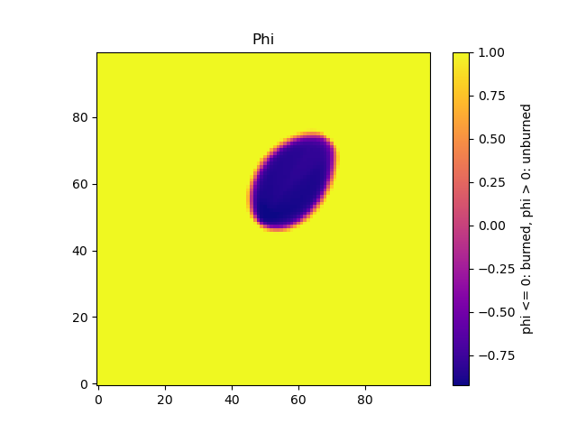
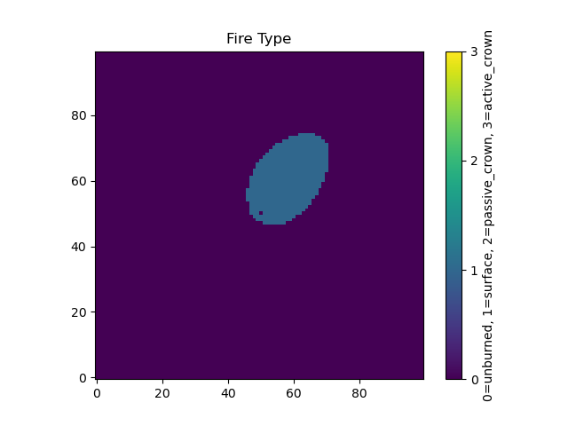
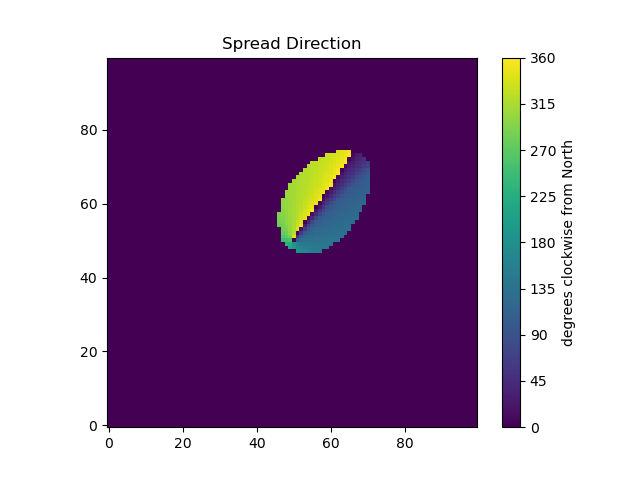
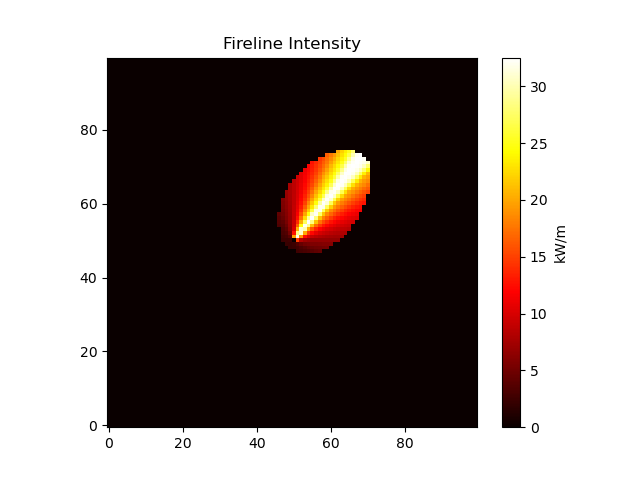
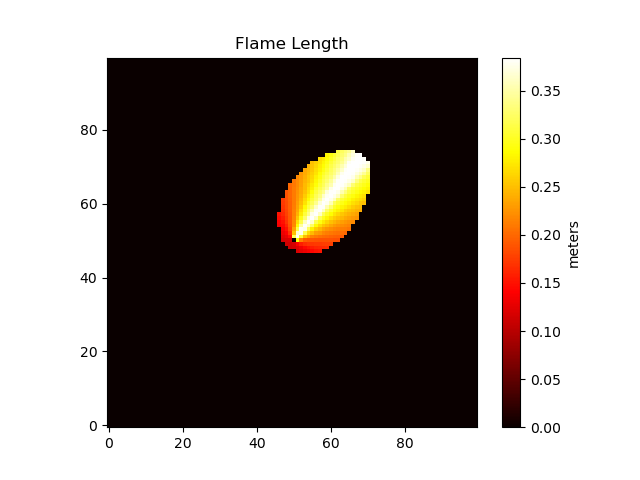
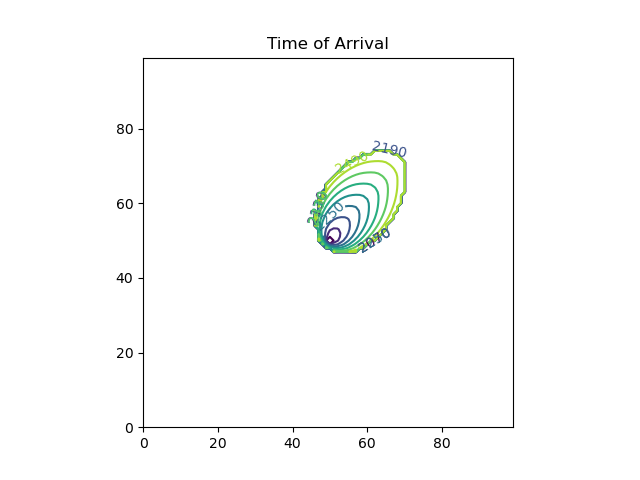
Figure 4: Time of arrival with hourly perimeters
- Create 3D Plots of the Spread State
import numpy as np import matplotlib.pyplot as plt from mpl_toolkits.mplot3d import Axes3D def save_3d_voxel_plot(time_of_arrival_matrix, fire_behavior_matrix, filename, title, units, colors, vmin=None, vmax=None, ticks=None): # Get the dimensions of the arrays (M, N) = fire_behavior_matrix.shape # Create a grid of (X, Y) coordinates (X, Y) = np.meshgrid(np.arange(N), np.arange(M)) # Flatten the matrices for 3D plotting X_flat = X.flatten() Y_flat = Y.flatten() Z_flat = time_of_arrival_matrix.flatten() V_flat = fire_behavior_matrix.flatten() # Filter out the non-burned areas (assuming non-positive values mean no fire) mask = ~np.isnan(Z_flat) X_burned = X_flat[mask] Y_burned = Y_flat[mask] Z_burned = Z_flat[mask] V_burned = V_flat[mask] # Set up the figure and 3D axis fig = plt.figure() ax = fig.add_subplot(111, projection='3d') # Create a scatter plot sc = ax.scatter(X_burned, Y_burned, Z_burned, c=V_burned, cmap=colors, marker='o', vmin=vmin, vmax=vmax) # Add color bar to indicate fire intensity cbar = plt.colorbar(sc, ax=ax, shrink=0.8, pad=0.15, orientation="vertical", ticks=ticks) cbar.set_label(units) # Set labels ax.set_xlabel('X axis') ax.set_ylabel('Y axis') ax.set_zlabel('Time of Arrival') # Add a title and save the file plt.title(title) plt.savefig(filename) plt.close("all") # See https://matplotlib.org/stable/gallery/color/colormap_reference.html for the available options for "colors" heatmap_configs = [ { "matrix" : output_matrices["phi"], "colors" : "plasma", "units" : "phi <= 0: burned, phi > 0: unburned", "title" : "Phi", "filename": "org/pics/els_phi_cube.png", }, { "matrix" : output_matrices["fire_type"], "colors" : "viridis", "units" : "0=unburned, 1=surface, 2=passive_crown, 3=active_crown", "title" : "Fire Type", "filename": "org/pics/els_fire_type_cube.png", "vmin" : 0, "vmax" : 3, "ticks" : [0,1,2,3], }, { "matrix" : output_matrices["spread_rate"], "colors" : "hot", "units" : "m/min", "title" : "Spread Rate", "filename": "org/pics/els_spread_rate_cube.png", }, { "matrix" : output_matrices["spread_direction"], "colors" : "viridis", "units" : "degrees clockwise from North", "title" : "Spread Direction", "filename": "org/pics/els_spread_direction_cube.png", "vmin" : 0, "vmax" : 360, "ticks" : [0,45,90,135,180,225,270,315,360] }, { "matrix" : output_matrices["fireline_intensity"], "colors" : "hot", "units" : "kW/m", "title" : "Fireline Intensity", "filename": "org/pics/els_fireline_intensity_cube.png", }, { "matrix" : output_matrices["flame_length"], "colors" : "hot", "units" : "meters", "title" : "Flame Length", "filename": "org/pics/els_flame_length_cube.png", }, ] for heatmap_config in heatmap_configs: save_3d_voxel_plot(output_matrices["time_of_arrival"], heatmap_config["matrix"], heatmap_config["filename"], heatmap_config["title"], heatmap_config["units"], heatmap_config["colors"], heatmap_config.get("vmin"), heatmap_config.get("vmax"), heatmap_config.get("ticks"))
Table 9: 3D fire behavior shapes after 8 hours of spread 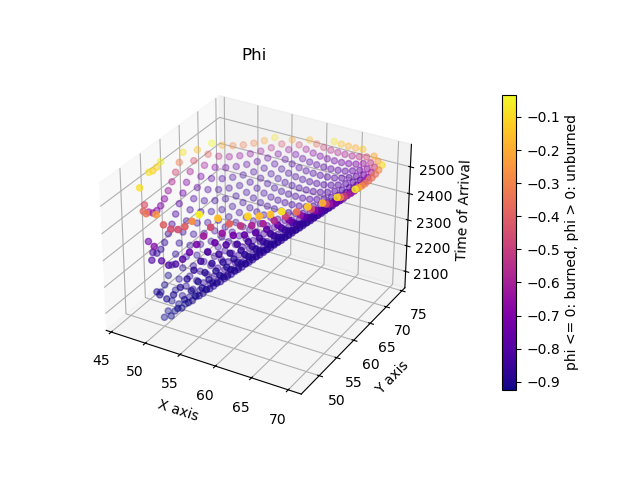
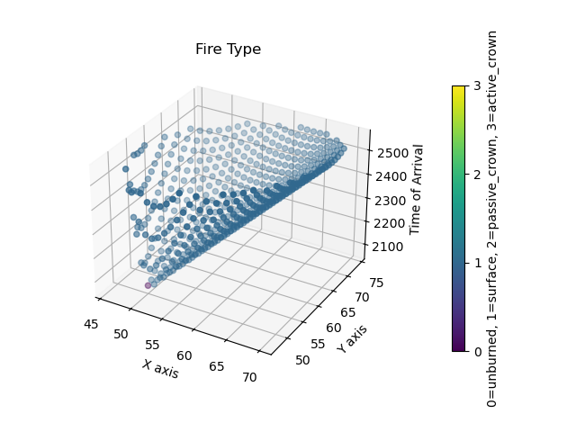
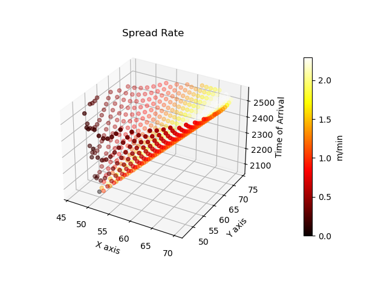
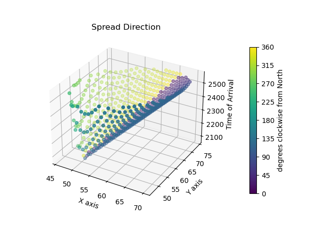
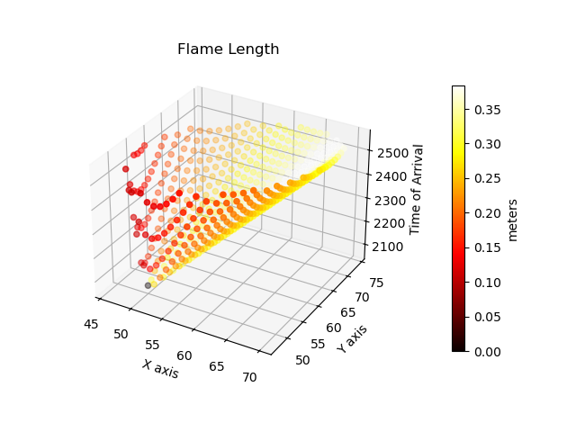
10.3.2. How to Spread a Fire from a Point Ignition with Spotting Enabled
- Configure and Run the Fire Spread Simulation with Spotting Enabled
import time import numpy as np from pyretechnics.space_time_cube import SpaceTimeCube import pyretechnics.eulerian_level_set as els #============================================================================================ # Specify the SpaceTimeCube dimensions #============================================================================================ cube_shape = ( 240, # bands: 10 days @ 1 hour/band 100, # rows: 3 km @ 30 meters/row 100, # cols: 3 km @ 30 meters/col ) grid_shape = cube_shape[1:] #============================================================================================ # Specify the SpaceTimeCube resolution #============================================================================================ cube_resolution = ( 60, # band_duration: minutes 30, # cell_height: meters 30, # cell_width: meters ) #============================================================================================ # Create an input dictionary of SpaceTimeCubes (using constant data for this example) #============================================================================================ space_time_cubes = { "slope" : SpaceTimeCube(cube_shape, 0.8), # rise/run "aspect" : SpaceTimeCube(cube_shape, 225.0), # degrees clockwise from North "fuel_model" : SpaceTimeCube(cube_shape, 101), # integer index in fm.fuel_model_table "canopy_cover" : SpaceTimeCube(cube_shape, 0.6), # 0-1 "canopy_height" : SpaceTimeCube(cube_shape, 30.0), # m "canopy_base_height" : SpaceTimeCube(cube_shape, 3.0), # m "canopy_bulk_density" : SpaceTimeCube(cube_shape, 0.3), # kg/m^3 "temperature" : SpaceTimeCube(cube_shape, 30.0), # degrees Celsius "wind_speed_10m" : SpaceTimeCube(cube_shape, 30.0), # km/hr "upwind_direction" : SpaceTimeCube(cube_shape, 180.0), # degrees clockwise from North "fuel_moisture_dead_1hr" : SpaceTimeCube(cube_shape, 0.05), # kg moisture/kg ovendry weight "fuel_moisture_dead_10hr" : SpaceTimeCube(cube_shape, 0.10), # kg moisture/kg ovendry weight "fuel_moisture_dead_100hr" : SpaceTimeCube(cube_shape, 0.15), # kg moisture/kg ovendry weight "fuel_moisture_live_herbaceous": SpaceTimeCube(cube_shape, 0.90), # kg moisture/kg ovendry weight "fuel_moisture_live_woody" : SpaceTimeCube(cube_shape, 0.60), # kg moisture/kg ovendry weight "foliar_moisture" : SpaceTimeCube(cube_shape, 0.90), # kg moisture/kg ovendry weight "fuel_spread_adjustment" : SpaceTimeCube(cube_shape, 1.0), # float >= 0.0 (Optional: defaults to 1.0) "weather_spread_adjustment" : SpaceTimeCube(cube_shape, 1.0), # float >= 0.0 (Optional: defaults to 1.0) } #============================================================================================ # Create a SpreadState object and specify a point ignition location (y, x) #============================================================================================ spread_state = els.SpreadState(cube_shape).ignite_cell((50,50)) #============================================================================================ # Set the start time and max duration of the simulation #============================================================================================ # Day 2 @ 10:30am start_time = (24 * 60) + (10 * 60) + 30 # minutes # 8 hours max_duration = 8 * 60 # minutes # Embed the start time in the SpreadState object spread_state.set_start_time(start_time) #============================================================================================ # Specify the spotting parameters #============================================================================================ spot_config = { "random_seed" : 1234567890, "firebrands_per_unit_heat" : 1e-6, # firebrands/kJ "downwind_distance_mean" : 10.0, # meters "fireline_intensity_exponent" : 0.3, # downwind_distance_mean multiplier [I^fireline_intensity_exponent] "wind_speed_exponent" : 0.55, # downwind_distance_mean multiplier [U^wind_speed_exponent] "downwind_variance_mean_ratio": 425.0, # meters^2 / meter [downwind_variance_mean_ratio = Var(X) / E(X)] "crosswind_distance_stdev" : 100.0, # meters "decay_distance" : 200.0, # meters } #============================================================================================ # Spread fire from the start time for the max duration #============================================================================================ runtime_start = time.perf_counter() fire_spread_results = els.spread_fire_with_phi_field(space_time_cubes, spread_state, cube_resolution, start_time, max_duration, surface_lw_ratio_model="rothermel", spot_ignitions={}, spot_config=spot_config) runtime_stop = time.perf_counter() stop_time = fire_spread_results["stop_time"] # minutes stop_condition = fire_spread_results["stop_condition"] # "max duration reached" or "no burnable cells" spread_state = fire_spread_results["spread_state"] # updated SpreadState object (mutated from inputs) output_matrices = spread_state.get_full_matrices() spot_ignitions = fire_spread_results.get("spot_ignitions", {}) # remaining firebrands on the landscape random_generator = fire_spread_results.get("random_generator", None) # numpy.random.Generator object #============================================================================================ # Print out the acres burned, total runtime, and runtime per burned cell #============================================================================================ num_burned_cells = np.count_nonzero(output_matrices["fire_type"]) # cells acres_burned = num_burned_cells / 4.5 # acres simulation_runtime = runtime_stop - runtime_start # seconds runtime_per_burned_cell = 1000.0 * simulation_runtime / num_burned_cells # ms/cell print("Acres Burned: " + str(acres_burned)) print("Total Runtime: " + str(simulation_runtime) + " seconds") print("Runtime per Burned Cell: " + str(runtime_per_burned_cell) + " ms/cell")
- Display Summary Statistics of the Output Matrices and Spot Ignitions
import numpy as np from pprint import pprint #============================================================================================ # Display summary statistics of our fire spread results #============================================================================================ # Used as a filter in get_array_stats below burned_cells = output_matrices["fire_type"] > 0 def get_array_stats(array, use_burn_scar_mask=True): array_values_to_analyze = array[burned_cells] if use_burn_scar_mask else array if len(array_values_to_analyze) > 0: return { "Min" : np.min(array_values_to_analyze), "Max" : np.max(array_values_to_analyze), "Mean" : np.mean(array_values_to_analyze), "Stdev": np.std(array_values_to_analyze), } else: return { "Min" : "No Data", "Max" : "No Data", "Mean" : "No Data", "Stdev": "No Data", } print("Fire Behavior from Day 2 @ 10:30am - Day 2 @ 6:30pm Spreading from Coordinate (50,50)\n" + "=" * 100) print("Stop Time: " + str(stop_time) + " (minutes)") print("Stop Condition: " + stop_condition) print("\nPhi (phi <= 0: burned, phi > 0: unburned") pprint(get_array_stats(output_matrices["phi"], use_burn_scar_mask=False), sort_dicts=False) print("\nFire Type (0=unburned, 1=surface, 2=passive_crown, 3=active_crown)") pprint(get_array_stats(output_matrices["fire_type"]), sort_dicts=False) print("\nSpread Rate (m/min)") pprint(get_array_stats(output_matrices["spread_rate"]), sort_dicts=False) print("\nSpread Direction (degrees clockwise from North)") pprint(get_array_stats(output_matrices["spread_direction"]), sort_dicts=False) print("\nFireline Intensity (kW/m)") pprint(get_array_stats(output_matrices["fireline_intensity"]), sort_dicts=False) print("\nFlame Length (meters)") pprint(get_array_stats(output_matrices["flame_length"]), sort_dicts=False) print("\nTime of Arrival (minutes)") pprint(get_array_stats(output_matrices["time_of_arrival"]), sort_dicts=False) print("\nFuture Spot Ignitions:") pprint(dict(spot_ignitions))
Fire Behavior from Day 2 @ 10:30am - Day 2 @ 6:30pm Spreading from Coordinate (50,50) ==================================================================================================== Stop Time: 2550.0 (minutes) Stop Condition: max duration reached Phi (phi <= 0: burned, phi > 0: unburned {'Min': -1.0, 'Max': 1.0, 'Mean': 0.71317345, 'Stdev': 0.63138574} Fire Type (0=unburned, 1=surface, 2=passive_crown, 3=active_crown) {'Min': 1, 'Max': 1, 'Mean': 1.0, 'Stdev': 0.0} Spread Rate (m/min) {'Min': 0.16055909, 'Max': 2.2964687, 'Mean': 1.4940218, 'Stdev': 0.6881962} Spread Direction (degrees clockwise from North) {'Min': 0.6275849, 'Max': 359.89905, 'Mean': 164.18701, 'Stdev': 127.15898} Fireline Intensity (kW/m) {'Min': 2.274235, 'Max': 32.52827, 'Mean': 21.162033, 'Stdev': 9.747937} Flame Length (meters) {'Min': 0.1130525, 'Max': 0.38439345, 'Mean': 0.30407032, 'Stdev': 0.07810408} Time of Arrival (minutes) {'Min': 2081.852, 'Max': 2549.9265, 'Mean': 2407.1692, 'Stdev': 102.33414} Future Spot Ignitions: {2550.45703125: {(95, 47)}, 2550.852294921875: {(87, 37)}, 2550.93896484375: {(92, 41)}, 2551.01171875: {(65, 75)}, 2551.0771484375: {(68, 28)}, 2551.452880859375: {(66, 75)}, 2551.677001953125: {(81, 36)}, 2552.345947265625: {(81, 74)}, 2552.68212890625: {(81, 35)}, 2553.10205078125: {(94, 50)}, 2553.343994140625: {(97, 55)}, 2554.3759765625: {(87, 59)}, 2554.402099609375: {(87, 58)}, 2554.9951171875: {(80, 68)}, 2556.635498046875: {(78, 32)}, 2558.4677734375: {(92, 38)}, 2558.884521484375: {(83, 40)}, 2559.06396484375: {(47, 49)}, 2559.979736328125: {(60, 79)}, 2561.0: {(81, 65)}, 2561.268798828125: {(86, 58)}, 2563.274658203125: {(81, 74)}, 2565.331298828125: {(66, 79)}, 2565.522705078125: {(84, 71)}, 2566.02490234375: {(69, 78)}, 2566.51025390625: {(87, 52), (89, 52)}, 2567.084228515625: {(86, 65)}, 2567.610107421875: {(81, 75)}, 2567.80810546875: {(88, 38), (96, 44), (89, 34)}, 2568.060302734375: {(89, 44)}, 2569.0361328125: {(60, 72)}, 2569.083740234375: {(91, 44)}, 2570.712890625: {(91, 44)}, 2572.74169921875: {(51, 43)}, 2574.04443359375: {(94, 49)}, 2574.22802734375: {(85, 68)}, 2574.310302734375: {(94, 50)}, 2574.4716796875: {(65, 77), (68, 78)}, 2574.9755859375: {(73, 80)}, 2575.160888671875: {(85, 66), (69, 77)}, 2575.209228515625: {(95, 46)}, 2575.345703125: {(87, 50)}, 2575.988525390625: {(67, 25), (68, 22)}, 2577.4248046875: {(91, 49)}, 2577.693603515625: {(81, 36)}, 2578.118408203125: {(92, 60)}, 2578.92041015625: {(88, 46)}, 2580.1201171875: {(89, 70)}, 2580.56787109375: {(91, 55)}, 2580.878173828125: {(86, 68), (85, 70)}, 2580.94140625: {(85, 65)}, 2582.059326171875: {(86, 65)}, 2582.513916015625: {(58, 76)}, 2582.754150390625: {(86, 64)}, 2582.821044921875: {(64, 76)}, 2583.43505859375: {(97, 64), (98, 57)}, 2583.483642578125: {(82, 76)}, 2586.32666015625: {(69, 80)}, 2588.114013671875: {(88, 38)}, 2593.70849609375: {(65, 83), (64, 82)}, 2602.1689453125: {(70, 34)}, 2607.730224609375: {(76, 38)}} - Create Images of the Output Matrices with Spotting Enabled
import matplotlib.pyplot as plt import numpy as np def save_matrix_as_heatmap(matrix, colors, units, title, filename, vmin=None, vmax=None, ticks=None): image = plt.imshow(matrix, origin="lower", cmap=colors, vmin=vmin, vmax=vmax) colorbar = plt.colorbar(image, orientation="vertical", ticks=ticks) colorbar.set_label(units) plt.title(title) plt.savefig(filename) plt.close("all") def save_matrix_as_contours(matrix, title, filename, levels=None): nan_masked_matrix = matrix.copy() nan_masked_matrix[np.isnan(nan_masked_matrix)] = -1.0 fig, ax = plt.subplots() cs = ax.contour(nan_masked_matrix, levels=levels) ax.clabel(cs, inline=True, fontsize=10) ax.set_aspect('equal', 'box') ax.set_title(title) plt.savefig(filename) plt.close("all") # See https://matplotlib.org/stable/gallery/color/colormap_reference.html for the available options for "colors" heatmap_configs = [ { "matrix" : output_matrices["phi"], "colors" : "plasma", "units" : "phi <= 0: burned, phi > 0: unburned", "title" : "Phi", "filename": "org/pics/els_spot_phi.png", }, { "matrix" : output_matrices["fire_type"], "colors" : "viridis", "units" : "0=unburned, 1=surface, 2=passive_crown, 3=active_crown", "title" : "Fire Type", "filename": "org/pics/els_spot_fire_type.png", "vmin" : 0, "vmax" : 3, "ticks" : [0,1,2,3], }, { "matrix" : output_matrices["spread_rate"], "colors" : "hot", "units" : "m/min", "title" : "Spread Rate", "filename": "org/pics/els_spot_spread_rate.png", }, { "matrix" : output_matrices["spread_direction"], "colors" : "viridis", "units" : "degrees clockwise from North", "title" : "Spread Direction", "filename": "org/pics/els_spot_spread_direction.png", "vmin" : 0, "vmax" : 360, "ticks" : [0,45,90,135,180,225,270,315,360] }, { "matrix" : output_matrices["fireline_intensity"], "colors" : "hot", "units" : "kW/m", "title" : "Fireline Intensity", "filename": "org/pics/els_spot_fireline_intensity.png", }, { "matrix" : output_matrices["flame_length"], "colors" : "hot", "units" : "meters", "title" : "Flame Length", "filename": "org/pics/els_spot_flame_length.png", }, ] contour_configs = [ { "matrix" : output_matrices["time_of_arrival"], "title" : "Time of Arrival", "filename": "org/pics/els_spot_time_of_arrival.png", "levels" : int(start_time) + np.asarray(range(0, int(max_duration) + 1, 60)), }, ] for heatmap_config in heatmap_configs: save_matrix_as_heatmap(**heatmap_config) for contour_config in contour_configs: save_matrix_as_contours(**contour_config)
Table 10: Fire behavior attributes after 8 hours of spread with spotting enabled 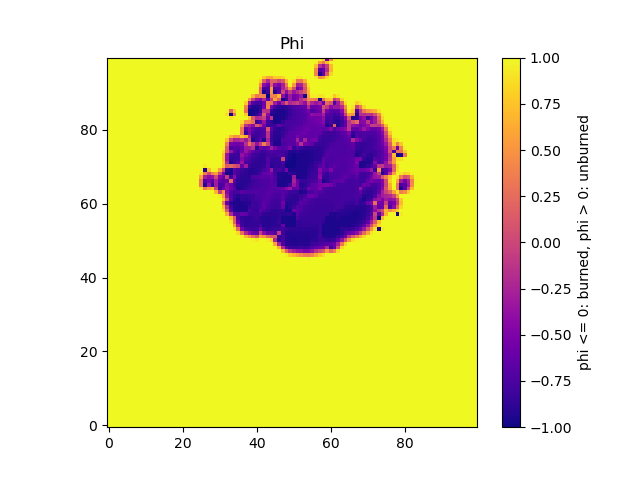
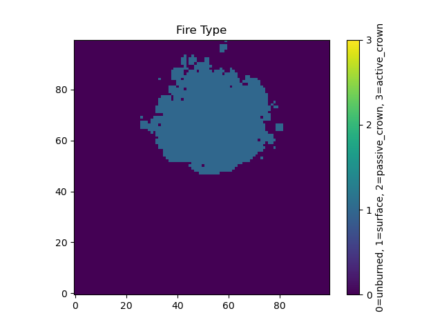
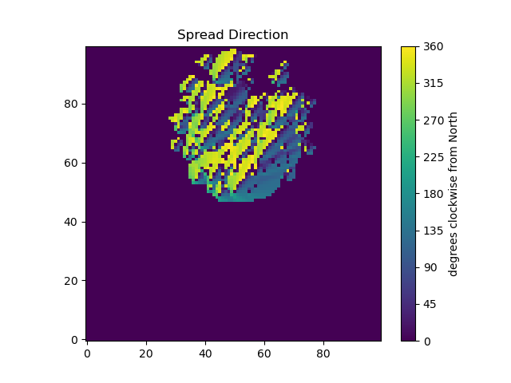
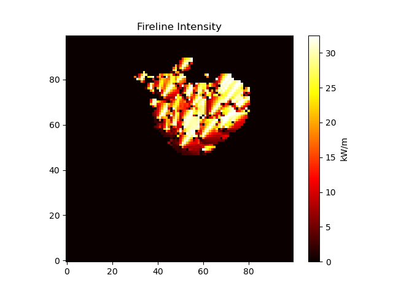
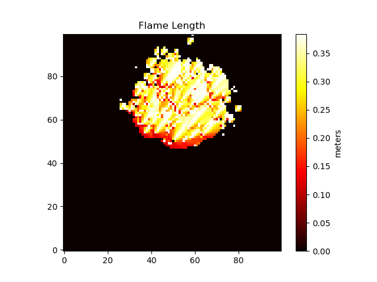
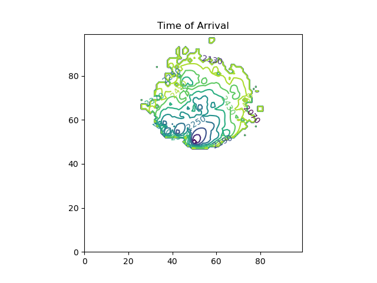
Figure 5: Time of arrival with hourly perimeters with spotting enabled
- Create 3D Plots of the Spread State with Spotting Enabled
import numpy as np import matplotlib.pyplot as plt from mpl_toolkits.mplot3d import Axes3D def save_3d_voxel_plot(time_of_arrival_matrix, fire_behavior_matrix, filename, title, units, colors, vmin=None, vmax=None, ticks=None): # Get the dimensions of the arrays (M, N) = fire_behavior_matrix.shape # Create a grid of (X, Y) coordinates (X, Y) = np.meshgrid(np.arange(N), np.arange(M)) # Flatten the matrices for 3D plotting X_flat = X.flatten() Y_flat = Y.flatten() Z_flat = time_of_arrival_matrix.flatten() V_flat = fire_behavior_matrix.flatten() # Filter out the non-burned areas (assuming non-positive values mean no fire) mask = ~np.isnan(Z_flat) X_burned = X_flat[mask] Y_burned = Y_flat[mask] Z_burned = Z_flat[mask] V_burned = V_flat[mask] # Set up the figure and 3D axis fig = plt.figure() ax = fig.add_subplot(111, projection='3d') # Create a scatter plot sc = ax.scatter(X_burned, Y_burned, Z_burned, c=V_burned, cmap=colors, marker='o', vmin=vmin, vmax=vmax) # Add color bar to indicate fire intensity cbar = plt.colorbar(sc, ax=ax, shrink=0.8, pad=0.15, orientation="vertical", ticks=ticks) cbar.set_label(units) # Set labels ax.set_xlabel('X axis') ax.set_ylabel('Y axis') ax.set_zlabel('Time of Arrival') # Add a title and save the file plt.title(title) plt.savefig(filename) plt.close("all") # See https://matplotlib.org/stable/gallery/color/colormap_reference.html for the available options for "colors" heatmap_configs = [ { "matrix" : output_matrices["phi"], "colors" : "plasma", "units" : "phi <= 0: burned, phi > 0: unburned", "title" : "Phi", "filename": "org/pics/els_spot_phi_cube.png", }, { "matrix" : output_matrices["fire_type"], "colors" : "viridis", "units" : "0=unburned, 1=surface, 2=passive_crown, 3=active_crown", "title" : "Fire Type", "filename": "org/pics/els_spot_fire_type_cube.png", "vmin" : 0, "vmax" : 3, "ticks" : [0,1,2,3], }, { "matrix" : output_matrices["spread_rate"], "colors" : "hot", "units" : "m/min", "title" : "Spread Rate", "filename": "org/pics/els_spot_spread_rate_cube.png", }, { "matrix" : output_matrices["spread_direction"], "colors" : "viridis", "units" : "degrees clockwise from North", "title" : "Spread Direction", "filename": "org/pics/els_spot_spread_direction_cube.png", "vmin" : 0, "vmax" : 360, "ticks" : [0,45,90,135,180,225,270,315,360] }, { "matrix" : output_matrices["fireline_intensity"], "colors" : "hot", "units" : "kW/m", "title" : "Fireline Intensity", "filename": "org/pics/els_spot_fireline_intensity_cube.png", }, { "matrix" : output_matrices["flame_length"], "colors" : "hot", "units" : "meters", "title" : "Flame Length", "filename": "org/pics/els_spot_flame_length_cube.png", }, ] for heatmap_config in heatmap_configs: save_3d_voxel_plot(output_matrices["time_of_arrival"], heatmap_config["matrix"], heatmap_config["filename"], heatmap_config["title"], heatmap_config["units"], heatmap_config["colors"], heatmap_config.get("vmin"), heatmap_config.get("vmax"), heatmap_config.get("ticks"))
Table 11: 3D fire behavior shapes after 8 hours of spread 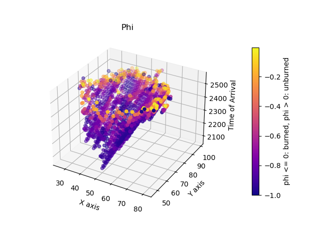
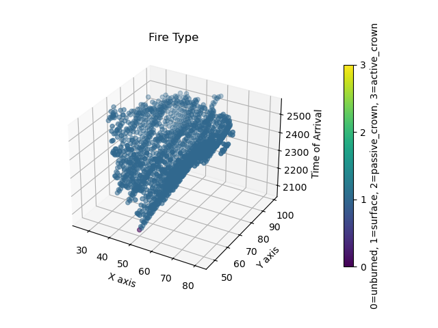
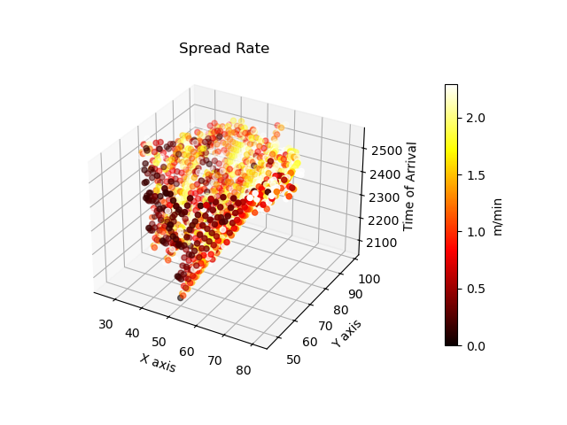
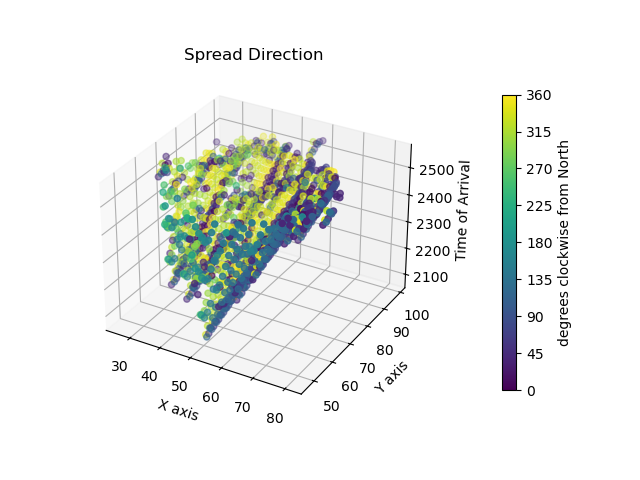
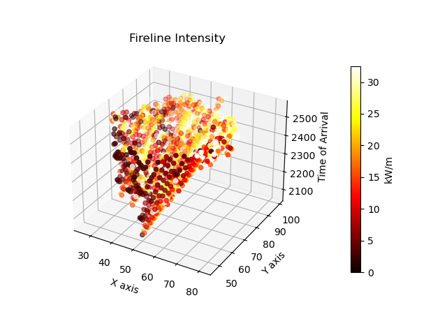
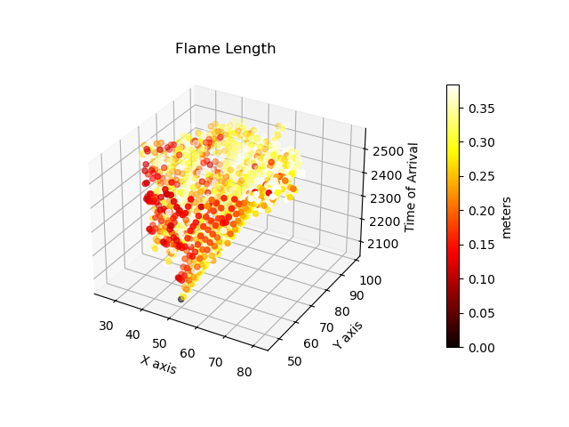
10.3.3. How to Spread a Fire, Pause, Fork, and Continue
- Configure and Run the Initial Fire Spread Simulation
import time import numpy as np from pyretechnics.space_time_cube import SpaceTimeCube import pyretechnics.eulerian_level_set as els #============================================================================================ # Specify the SpaceTimeCube dimensions #============================================================================================ cube_shape = ( 240, # bands: 10 days @ 1 hour/band 100, # rows: 3 km @ 30 meters/row 100, # cols: 3 km @ 30 meters/col ) #============================================================================================ # Specify the SpaceTimeCube resolution #============================================================================================ cube_resolution = ( 60, # band_duration: minutes 30, # cell_height: meters 30, # cell_width: meters ) #============================================================================================ # Create an input dictionary of SpaceTimeCubes (using constant data for this example) #============================================================================================ space_time_cubes = { "slope" : SpaceTimeCube(cube_shape, 0.8), # rise/run "aspect" : SpaceTimeCube(cube_shape, 225.0), # degrees clockwise from North "fuel_model" : SpaceTimeCube(cube_shape, 101), # integer index in fm.fuel_model_table "canopy_cover" : SpaceTimeCube(cube_shape, 0.6), # 0-1 "canopy_height" : SpaceTimeCube(cube_shape, 30.0), # m "canopy_base_height" : SpaceTimeCube(cube_shape, 3.0), # m "canopy_bulk_density" : SpaceTimeCube(cube_shape, 0.3), # kg/m^3 "wind_speed_10m" : SpaceTimeCube(cube_shape, 30.0), # km/hr "upwind_direction" : SpaceTimeCube(cube_shape, 180.0), # degrees clockwise from North "fuel_moisture_dead_1hr" : SpaceTimeCube(cube_shape, 0.05), # kg moisture/kg ovendry weight "fuel_moisture_dead_10hr" : SpaceTimeCube(cube_shape, 0.10), # kg moisture/kg ovendry weight "fuel_moisture_dead_100hr" : SpaceTimeCube(cube_shape, 0.15), # kg moisture/kg ovendry weight "fuel_moisture_live_herbaceous": SpaceTimeCube(cube_shape, 0.90), # kg moisture/kg ovendry weight "fuel_moisture_live_woody" : SpaceTimeCube(cube_shape, 0.60), # kg moisture/kg ovendry weight "foliar_moisture" : SpaceTimeCube(cube_shape, 0.90), # kg moisture/kg ovendry weight "fuel_spread_adjustment" : SpaceTimeCube(cube_shape, 1.0), # float >= 0.0 (Optional: defaults to 1.0) "weather_spread_adjustment" : SpaceTimeCube(cube_shape, 1.0), # float >= 0.0 (Optional: defaults to 1.0) } #============================================================================================ # Create a SpreadState object and specify a point ignition location (y, x) #============================================================================================ spread_state = els.SpreadState(cube_shape).ignite_cell((50,50)) #============================================================================================ # Set the start time and max duration of the simulation #============================================================================================ # Day 2 @ 10:30am start_time = (24 * 60) + (10 * 60) + 30 # minutes # 8 hours max_duration = 8 * 60 # minutes # Embed the start time in the SpreadState object spread_state.set_start_time(start_time) #============================================================================================ # Spread fire from the start time for the max duration #============================================================================================ runtime_start = time.perf_counter() fire_spread_results_8 = els.spread_fire_with_phi_field(space_time_cubes, spread_state, cube_resolution, start_time, max_duration, surface_lw_ratio_model="rothermel") runtime_stop = time.perf_counter() stop_time = fire_spread_results_8["stop_time"] # minutes stop_condition = fire_spread_results_8["stop_condition"] # "max duration reached" or "no burnable cells" spread_state = fire_spread_results_8["spread_state"] # updated SpreadState object (mutated from inputs) output_matrices = spread_state.get_full_matrices() #============================================================================================ # Print out the acres burned, total runtime, and runtime per burned cell #============================================================================================ num_burned_cells = np.count_nonzero(output_matrices["fire_type"]) # cells acres_burned = num_burned_cells / 4.5 # acres simulation_runtime = runtime_stop - runtime_start # seconds runtime_per_burned_cell = 1000.0 * simulation_runtime / num_burned_cells # ms/cell print("Acres Burned: " + str(acres_burned)) print("Total Runtime: " + str(simulation_runtime) + " seconds") print("Runtime per Burned Cell: " + str(runtime_per_burned_cell) + " ms/cell")
- Fork and Run Two Fire Spread Scenarios
#============================================================================================ # Fork the simulation by creating a copy of the space_time_cubes and spread_state #============================================================================================ space_time_cubes_fork = space_time_cubes.copy() # shallow copy spread_state_fork = spread_state.copy() # deep copy #============================================================================================ # Add a non-burnable fire-break to the forked space_time_cubes fuel model #============================================================================================ # Extract a 2D array of fuel_model values at the cube's spatial dimensions (100 x 100) fuel_model_matrix_ro = space_time_cubes["fuel_model"].getSpatialPlane(0, None, None) # read-only fuel_model_matrix = np.copy(fuel_model_matrix_ro) # writable # Add a non-burnable fire-break in the northeastern corner of the grid (ys, xs) = np.diag_indices(40) fuel_model_matrix[60:,60:][(list(reversed(ys)), xs)] = 91 # NB1 # Replace the old fuel_model cube with a new fire-break-containing cube space_time_cubes_fork["fuel_model"] = SpaceTimeCube(cube_shape, fuel_model_matrix) #============================================================================================ # Run both simulations for another 4 hours #============================================================================================ # Day 2 @ 6:30pm new_start_time = stop_time # minutes # 4 hours new_max_duration = 4 * 60 # minutes # Spread the main simulation runtime_start_main = time.perf_counter() fire_spread_results_12 = els.spread_fire_with_phi_field(space_time_cubes, spread_state, cube_resolution, new_start_time, new_max_duration, surface_lw_ratio_model="rothermel") runtime_stop_main = time.perf_counter() stop_time = fire_spread_results_12["stop_time"] # minutes stop_condition = fire_spread_results_12["stop_condition"] # "max duration reached" or "no burnable cells" spread_state = fire_spread_results_12["spread_state"] # updated SpreadState object (mutated from inputs) output_matrices = spread_state.get_full_matrices() # Spread the forked simulation runtime_start_fork = time.perf_counter() fire_spread_results_12_fork = els.spread_fire_with_phi_field(space_time_cubes_fork, spread_state_fork, cube_resolution, new_start_time, new_max_duration, surface_lw_ratio_model="rothermel") runtime_stop_fork = time.perf_counter() stop_time_fork = fire_spread_results_12_fork["stop_time"] # minutes stop_condition_fork = fire_spread_results_12_fork["stop_condition"] # "max duration reached" or "no burnable cells" spread_state_fork = fire_spread_results_12_fork["spread_state"] # updated SpreadState object (mutated from inputs) output_matrices_fork = spread_state_fork.get_full_matrices() #============================================================================================ # Print out the acres burned, total runtime, and runtime per burned cell for the main run #============================================================================================ num_burned_cells = np.count_nonzero(output_matrices["fire_type"]) # cells acres_burned = num_burned_cells / 4.5 # acres simulation_runtime_main = runtime_stop_main - runtime_start_main # seconds simulation_runtime_total = simulation_runtime + simulation_runtime_main # seconds runtime_per_burned_cell = 1000.0 * simulation_runtime_total / num_burned_cells # ms/cell print("Main Fire\n" + "=" * 60) print("Acres Burned: " + str(acres_burned)) print("Total Runtime: " + str(simulation_runtime_total) + " seconds") print("Runtime per Burned Cell: " + str(runtime_per_burned_cell) + " ms/cell") #============================================================================================ # Print out the acres burned, total runtime, and runtime per burned cell for the forked run #============================================================================================ num_burned_cells = np.count_nonzero(output_matrices_fork["fire_type"]) # cells acres_burned = num_burned_cells / 4.5 # acres simulation_runtime_fork = runtime_stop_fork - runtime_start_fork # seconds simulation_runtime_total = simulation_runtime + simulation_runtime_fork # seconds runtime_per_burned_cell = 1000.0 * simulation_runtime_total / num_burned_cells # ms/cell print("\nForked Fire\n" + "=" * 60) print("Acres Burned: " + str(acres_burned)) print("Total Runtime: " + str(simulation_runtime_total) + " seconds") print("Runtime per Burned Cell: " + str(runtime_per_burned_cell) + " ms/cell")
- Display Summary Statistics of the Two Scenarios' Outputs
import numpy as np from pprint import pprint #============================================================================================ # Display summary statistics of our fire spread results #============================================================================================ # Used as filters in get_array_stats and get_array_stats_fork below burned_cells = output_matrices["fire_type"] > 0 burned_cells_fork = output_matrices_fork["fire_type"] > 0 def get_array_stats(array, use_burn_scar_mask=True): array_values_to_analyze = array[burned_cells] if use_burn_scar_mask else array if len(array_values_to_analyze) > 0: return { "Min" : np.min(array_values_to_analyze), "Max" : np.max(array_values_to_analyze), "Mean" : np.mean(array_values_to_analyze), "Stdev": np.std(array_values_to_analyze), } else: return { "Min" : "No Data", "Max" : "No Data", "Mean" : "No Data", "Stdev": "No Data", } def get_array_stats_fork(array, use_burn_scar_mask=True): array_values_to_analyze = array[burned_cells_fork] if use_burn_scar_mask else array if len(array_values_to_analyze) > 0: return { "Min" : np.min(array_values_to_analyze), "Max" : np.max(array_values_to_analyze), "Mean" : np.mean(array_values_to_analyze), "Stdev": np.std(array_values_to_analyze), } else: return { "Min" : "No Data", "Max" : "No Data", "Mean" : "No Data", "Stdev": "No Data", } print("Fire Behavior from Day 2 @ 10:30am - Day 2 @ 10:30pm Spreading from Coordinate (50,50)\n" + "=" * 100) print("Stop Time (Main): " + str(stop_time) + " (minutes)") print("Stop Time (Fork): " + str(stop_time_fork) + " (minutes)") print("Stop Condition (Main): " + stop_condition) print("Stop Condition (Fork): " + stop_condition_fork) print("\nPhi (phi <= 0: burned, phi > 0: unburned") print("Main: ", end="") pprint(get_array_stats(output_matrices["phi"], use_burn_scar_mask=False), sort_dicts=False) print("Fork: ", end="") pprint(get_array_stats_fork(output_matrices_fork["phi"], use_burn_scar_mask=False), sort_dicts=False) print("\nFire Type (0=unburned, 1=surface, 2=passive_crown, 3=active_crown)") print("Main: ", end="") pprint(get_array_stats(output_matrices["fire_type"]), sort_dicts=False) print("Fork: ", end="") pprint(get_array_stats_fork(output_matrices_fork["fire_type"]), sort_dicts=False) print("\nSpread Rate (m/min)") print("Main: ", end="") pprint(get_array_stats(output_matrices["spread_rate"]), sort_dicts=False) print("Fork: ", end="") pprint(get_array_stats_fork(output_matrices_fork["spread_rate"]), sort_dicts=False) print("\nSpread Direction (degrees clockwise from North)") print("Main: ", end="") pprint(get_array_stats(output_matrices["spread_direction"]), sort_dicts=False) print("Fork: ", end="") pprint(get_array_stats_fork(output_matrices_fork["spread_direction"]), sort_dicts=False) print("\nFireline Intensity (kW/m)") print("Main: ", end="") pprint(get_array_stats(output_matrices["fireline_intensity"]), sort_dicts=False) print("Fork: ", end="") pprint(get_array_stats_fork(output_matrices_fork["fireline_intensity"]), sort_dicts=False) print("\nFlame Length (meters)") print("Main: ", end="") pprint(get_array_stats(output_matrices["flame_length"]), sort_dicts=False) print("Fork: ", end="") pprint(get_array_stats_fork(output_matrices_fork["flame_length"]), sort_dicts=False) print("\nTime of Arrival (minutes)") print("Main: ", end="") pprint(get_array_stats(output_matrices["time_of_arrival"]), sort_dicts=False) print("Fork: ", end="") pprint(get_array_stats_fork(output_matrices_fork["time_of_arrival"]), sort_dicts=False)
Fire Behavior from Day 2 @ 10:30am - Day 2 @ 10:30pm Spreading from Coordinate (50,50) ==================================================================================================== Stop Time (Main): 2790.0 (minutes) Stop Time (Fork): 2790.0 (minutes) Stop Condition (Main): max duration reached Stop Condition (Fork): max duration reached Phi (phi <= 0: burned, phi > 0: unburned Main: {'Min': -0.92529535, 'Max': 1.0, 'Mean': 0.7955318, 'Stdev': 0.56091595} Fork: {'Min': -0.92529535, 'Max': 1.0, 'Mean': 0.7995638, 'Stdev': 0.5577172} Fire Type (0=unburned, 1=surface, 2=passive_crown, 3=active_crown) Main: {'Min': 1, 'Max': 1, 'Mean': 1.0, 'Stdev': 0.0} Fork: {'Min': 1, 'Max': 1, 'Mean': 1.0, 'Stdev': 0.0} Spread Rate (m/min) Main: {'Min': 0.16077128, 'Max': 2.2964315, 'Mean': 1.191673, 'Stdev': 0.6304963} Fork: {'Min': 0.16077128, 'Max': 2.2964315, 'Mean': 1.1753283, 'Stdev': 0.6232901} Spread Direction (degrees clockwise from North) Main: {'Min': 1.0845373, 'Max': 359.45844, 'Mean': 193.19345, 'Stdev': 116.74348} Fork: {'Min': 1.1319, 'Max': 359.45844, 'Mean': 195.22275, 'Stdev': 116.035866} Fireline Intensity (kW/m) Main: {'Min': 2.2772405, 'Max': 32.527744, 'Mean': 16.879421, 'Stdev': 8.930649} Fork: {'Min': 2.2772405, 'Max': 32.527744, 'Mean': 16.64791, 'Stdev': 8.828576} Flame Length (meters) Main: {'Min': 0.113121204, 'Max': 0.3843906, 'Mean': 0.27317166, 'Stdev': 0.07285855} Fork: {'Min': 0.113121204, 'Max': 0.3843906, 'Mean': 0.27146405, 'Stdev': 0.072314404} Time of Arrival (minutes) Main: {'Min': 2081.852, 'Max': 2789.606, 'Mean': 2543.9004, 'Stdev': 173.16722} Fork: {'Min': 2081.852, 'Max': 2789.6057, 'Mean': 2539.8635, 'Stdev': 171.96436} - Create Images of the Two Scenarios' Outputs
import matplotlib.pyplot as plt import numpy as np def save_matrix_as_heatmap(matrix, colors, units, title, filename, vmin=None, vmax=None, ticks=None): image = plt.imshow(matrix, origin="lower", cmap=colors, vmin=vmin, vmax=vmax) colorbar = plt.colorbar(image, orientation="vertical", ticks=ticks) colorbar.set_label(units) plt.title(title) plt.savefig(filename) plt.close("all") def save_matrix_as_contours(matrix, title, filename, levels=None): nan_masked_matrix = matrix.copy() nan_masked_matrix[np.isnan(nan_masked_matrix)] = -1.0 fig, ax = plt.subplots() cs = ax.contour(nan_masked_matrix, levels=levels) ax.clabel(cs, inline=True, fontsize=10) ax.set_aspect('equal', 'box') ax.set_title(title) plt.savefig(filename) plt.close("all") # See https://matplotlib.org/stable/gallery/color/colormap_reference.html for the available options for "colors" heatmap_configs = [ { "matrix" : space_time_cubes["fuel_model"].getSpatialPlane(0, None, None), "colors" : "viridis_r", "units" : "fuel model number: 91-204", "title" : "Fuel Model", "filename": "org/pics/els_fuel_model_main.png", "vmin" : 91, "vmax" : 204, }, { "matrix" : space_time_cubes_fork["fuel_model"].getSpatialPlane(0, None, None), "colors" : "viridis_r", "units" : "fuel model number: 91-204", "title" : "Fuel Model", "filename": "org/pics/els_fuel_model_fork.png", "vmin" : 91, "vmax" : 204, }, { "matrix" : output_matrices["phi"], "colors" : "plasma", "units" : "phi <= 0: burned, phi > 0: unburned", "title" : "Phi", "filename": "org/pics/els_phi_main.png", }, { "matrix" : output_matrices_fork["phi"], "colors" : "plasma", "units" : "phi <= 0: burned, phi > 0: unburned", "title" : "Phi", "filename": "org/pics/els_phi_fork.png", }, { "matrix" : output_matrices["fire_type"], "colors" : "viridis", "units" : "0=unburned, 1=surface, 2=passive_crown, 3=active_crown", "title" : "Fire Type", "filename": "org/pics/els_fire_type_main.png", "vmin" : 0, "vmax" : 3, "ticks" : [0,1,2,3], }, { "matrix" : output_matrices_fork["fire_type"], "colors" : "viridis", "units" : "0=unburned, 1=surface, 2=passive_crown, 3=active_crown", "title" : "Fire Type", "filename": "org/pics/els_fire_type_fork.png", "vmin" : 0, "vmax" : 3, "ticks" : [0,1,2,3], }, { "matrix" : output_matrices["spread_rate"], "colors" : "hot", "units" : "m/min", "title" : "Spread Rate", "filename": "org/pics/els_spread_rate_main.png", }, { "matrix" : output_matrices_fork["spread_rate"], "colors" : "hot", "units" : "m/min", "title" : "Spread Rate", "filename": "org/pics/els_spread_rate_fork.png", }, { "matrix" : output_matrices["spread_direction"], "colors" : "viridis", "units" : "degrees clockwise from North", "title" : "Spread Direction", "filename": "org/pics/els_spread_direction_main.png", "vmin" : 0, "vmax" : 360, "ticks" : [0,45,90,135,180,225,270,315,360] }, { "matrix" : output_matrices_fork["spread_direction"], "colors" : "viridis", "units" : "degrees clockwise from North", "title" : "Spread Direction", "filename": "org/pics/els_spread_direction_fork.png", "vmin" : 0, "vmax" : 360, "ticks" : [0,45,90,135,180,225,270,315,360] }, { "matrix" : output_matrices["fireline_intensity"], "colors" : "hot", "units" : "kW/m", "title" : "Fireline Intensity", "filename": "org/pics/els_fireline_intensity_main.png", }, { "matrix" : output_matrices_fork["fireline_intensity"], "colors" : "hot", "units" : "kW/m", "title" : "Fireline Intensity", "filename": "org/pics/els_fireline_intensity_fork.png", }, { "matrix" : output_matrices["flame_length"], "colors" : "hot", "units" : "meters", "title" : "Flame Length", "filename": "org/pics/els_flame_length_main.png", }, { "matrix" : output_matrices_fork["flame_length"], "colors" : "hot", "units" : "meters", "title" : "Flame Length", "filename": "org/pics/els_flame_length_fork.png", }, ] contour_configs = [ { "matrix" : output_matrices["time_of_arrival"], "title" : "Time of Arrival", "filename": "org/pics/els_time_of_arrival_main.png", "levels" : int(start_time) + np.asarray(range(0, int(max_duration) + 1, 60)), }, { "matrix" : output_matrices_fork["time_of_arrival"], "title" : "Time of Arrival", "filename": "org/pics/els_time_of_arrival_fork.png", "levels" : int(start_time) + np.asarray(range(0, int(max_duration) + 1, 60)), }, ] for heatmap_config in heatmap_configs: save_matrix_as_heatmap(**heatmap_config) for contour_config in contour_configs: save_matrix_as_contours(**contour_config)
Table 12: Fuel model [Left: Main, Right: Fork] 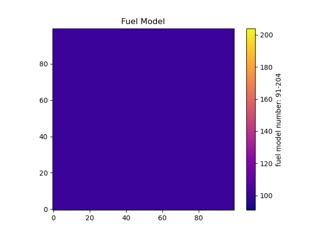
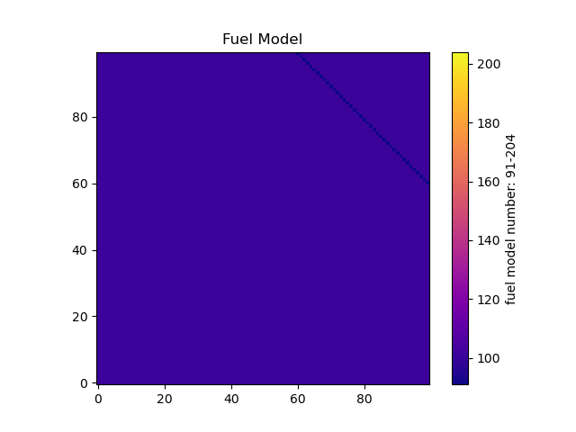
Table 13: Fire behavior attributes after 12 hours of spread [Left: Main, Right: Fork] 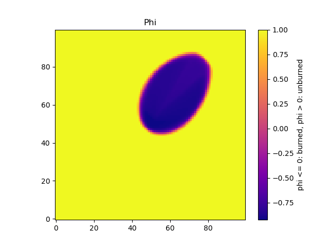
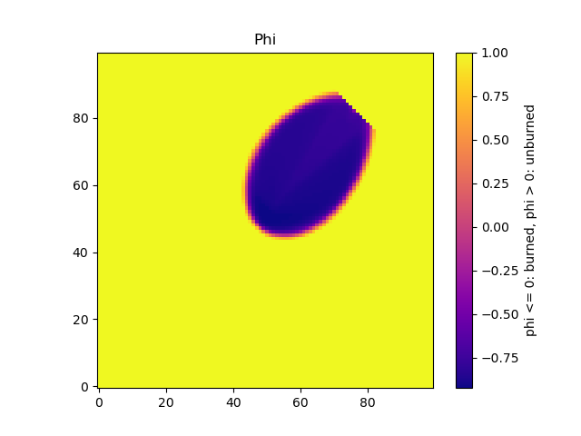
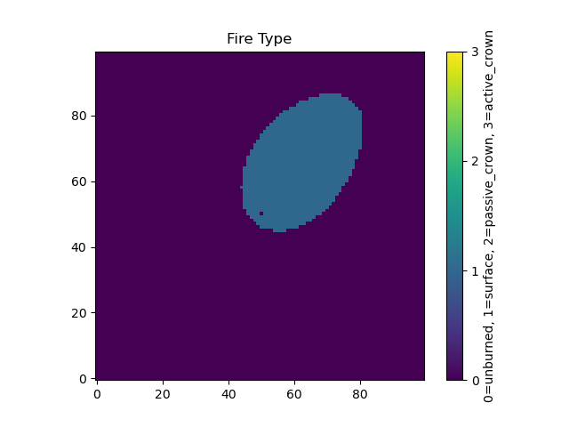
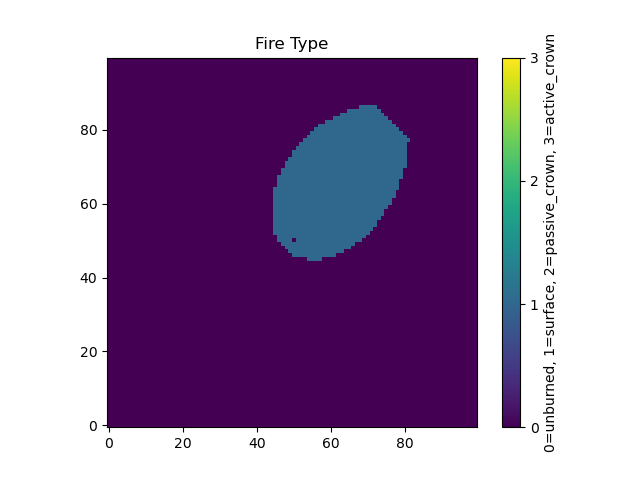
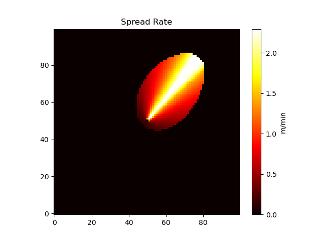
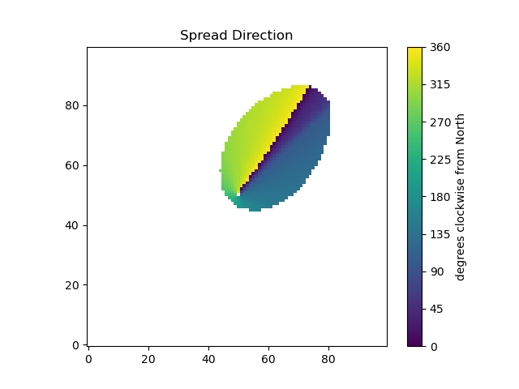
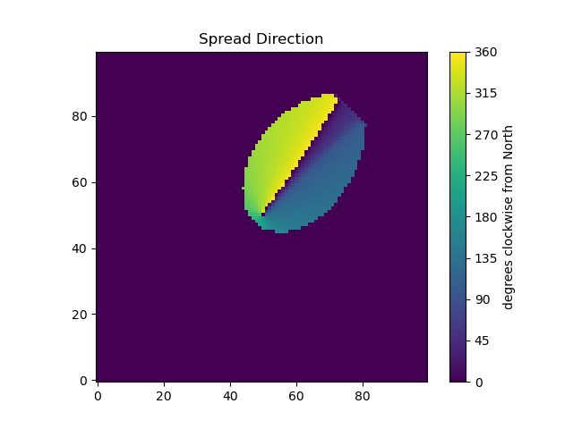
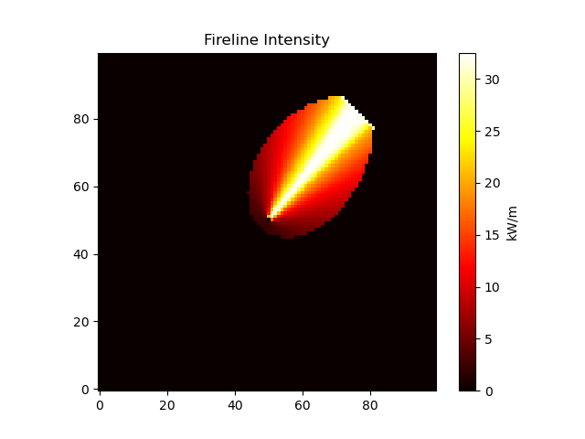
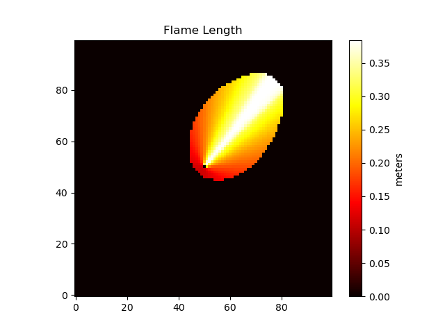
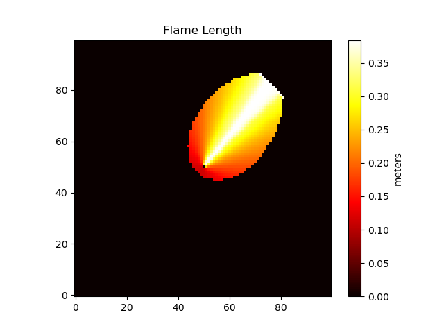
Table 14: Time of arrival with hourly perimeters [Left: Main, Right: Fork] 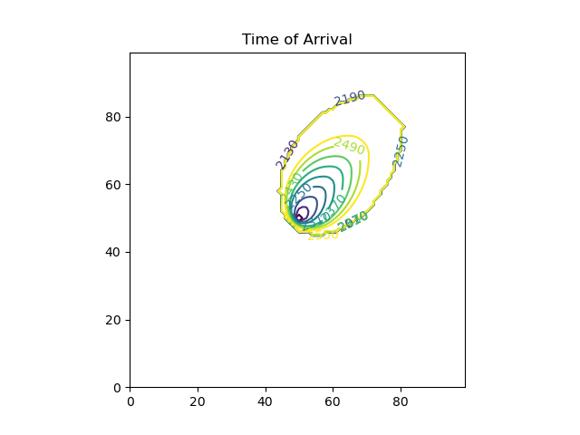
- Create 3D Plots of the Two Scenarios' Spread States
import numpy as np import matplotlib.pyplot as plt from mpl_toolkits.mplot3d import Axes3D def save_3d_voxel_plot(time_of_arrival_matrix, fire_behavior_matrix, filename, title, units, colors, vmin=None, vmax=None, ticks=None): # Get the dimensions of the arrays (M, N) = fire_behavior_matrix.shape # Create a grid of (X, Y) coordinates (X, Y) = np.meshgrid(np.arange(N), np.arange(M)) # Flatten the matrices for 3D plotting X_flat = X.flatten() Y_flat = Y.flatten() Z_flat = time_of_arrival_matrix.flatten() V_flat = fire_behavior_matrix.flatten() # Filter out the non-burned areas (assuming non-positive values mean no fire) mask = ~np.isnan(Z_flat) X_burned = X_flat[mask] Y_burned = Y_flat[mask] Z_burned = Z_flat[mask] V_burned = V_flat[mask] # Set up the figure and 3D axis fig = plt.figure() ax = fig.add_subplot(111, projection='3d') # Create a scatter plot sc = ax.scatter(X_burned, Y_burned, Z_burned, c=V_burned, cmap=colors, marker='o', vmin=vmin, vmax=vmax) # Add color bar to indicate fire intensity cbar = plt.colorbar(sc, ax=ax, shrink=0.8, pad=0.15, orientation="vertical", ticks=ticks) cbar.set_label(units) # Set labels ax.set_xlabel('X axis') ax.set_ylabel('Y axis') ax.set_zlabel('Time of Arrival') # Add a title and save the file plt.title(title) plt.savefig(filename) plt.close("all") # See https://matplotlib.org/stable/gallery/color/colormap_reference.html for the available options for "colors" heatmap_configs = [ { "matrix" : space_time_cubes["fuel_model"].getSpatialPlane(0, None, None), "colors" : "viridis_r", "units" : "fuel model number: 91-204", "title" : "Fuel Model", "filename": "org/pics/els_fuel_model_main_cube.png", "vmin" : 91, "vmax" : 204, }, { "matrix" : output_matrices["phi"], "colors" : "plasma", "units" : "phi <= 0: burned, phi > 0: unburned", "title" : "Phi", "filename": "org/pics/els_phi_main_cube.png", }, { "matrix" : output_matrices["fire_type"], "colors" : "viridis", "units" : "0=unburned, 1=surface, 2=passive_crown, 3=active_crown", "title" : "Fire Type", "filename": "org/pics/els_fire_type_main_cube.png", "vmin" : 0, "vmax" : 3, "ticks" : [0,1,2,3], }, { "matrix" : output_matrices["spread_rate"], "colors" : "hot", "units" : "m/min", "title" : "Spread Rate", "filename": "org/pics/els_spread_rate_main_cube.png", }, { "matrix" : output_matrices["spread_direction"], "colors" : "viridis", "units" : "degrees clockwise from North", "title" : "Spread Direction", "filename": "org/pics/els_spread_direction_main_cube.png", "vmin" : 0, "vmax" : 360, "ticks" : [0,45,90,135,180,225,270,315,360] }, { "matrix" : output_matrices["fireline_intensity"], "colors" : "hot", "units" : "kW/m", "title" : "Fireline Intensity", "filename": "org/pics/els_fireline_intensity_main_cube.png", }, { "matrix" : output_matrices["flame_length"], "colors" : "hot", "units" : "meters", "title" : "Flame Length", "filename": "org/pics/els_flame_length_main_cube.png", }, ] heatmap_configs_fork = [ { "matrix" : space_time_cubes_fork["fuel_model"].getSpatialPlane(0, None, None), "colors" : "viridis_r", "units" : "fuel model number: 91-204", "title" : "Fuel Model", "filename": "org/pics/els_fuel_model_fork_cube.png", "vmin" : 91, "vmax" : 204, }, { "matrix" : output_matrices_fork["phi"], "colors" : "plasma", "units" : "phi <= 0: burned, phi > 0: unburned", "title" : "Phi", "filename": "org/pics/els_phi_fork_cube.png", }, { "matrix" : output_matrices_fork["fire_type"], "colors" : "viridis", "units" : "0=unburned, 1=surface, 2=passive_crown, 3=active_crown", "title" : "Fire Type", "filename": "org/pics/els_fire_type_fork_cube.png", "vmin" : 0, "vmax" : 3, "ticks" : [0,1,2,3], }, { "matrix" : output_matrices_fork["spread_rate"], "colors" : "hot", "units" : "m/min", "title" : "Spread Rate", "filename": "org/pics/els_spread_rate_fork_cube.png", }, { "matrix" : output_matrices_fork["spread_direction"], "colors" : "viridis", "units" : "degrees clockwise from North", "title" : "Spread Direction", "filename": "org/pics/els_spread_direction_fork_cube.png", "vmin" : 0, "vmax" : 360, "ticks" : [0,45,90,135,180,225,270,315,360] }, { "matrix" : output_matrices_fork["fireline_intensity"], "colors" : "hot", "units" : "kW/m", "title" : "Fireline Intensity", "filename": "org/pics/els_fireline_intensity_fork_cube.png", }, { "matrix" : output_matrices_fork["flame_length"], "colors" : "hot", "units" : "meters", "title" : "Flame Length", "filename": "org/pics/els_flame_length_fork_cube.png", }, ] for heatmap_config in heatmap_configs: save_3d_voxel_plot(output_matrices["time_of_arrival"], heatmap_config["matrix"], heatmap_config["filename"], heatmap_config["title"], heatmap_config["units"], heatmap_config["colors"], heatmap_config.get("vmin"), heatmap_config.get("vmax"), heatmap_config.get("ticks")) for heatmap_config in heatmap_configs_fork: save_3d_voxel_plot(output_matrices_fork["time_of_arrival"], heatmap_config["matrix"], heatmap_config["filename"], heatmap_config["title"], heatmap_config["units"], heatmap_config["colors"], heatmap_config.get("vmin"), heatmap_config.get("vmax"), heatmap_config.get("ticks"))
Table 15: 3D fuel model [Left: Main, Right: Fork] 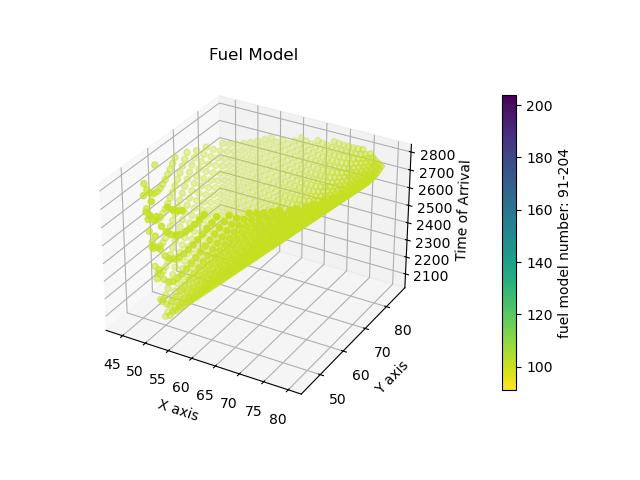
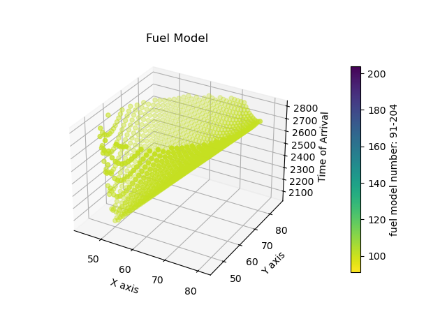
Table 16: 3D fire behavior shapes after 12 hours of spread [Left: Main, Right: Fork] 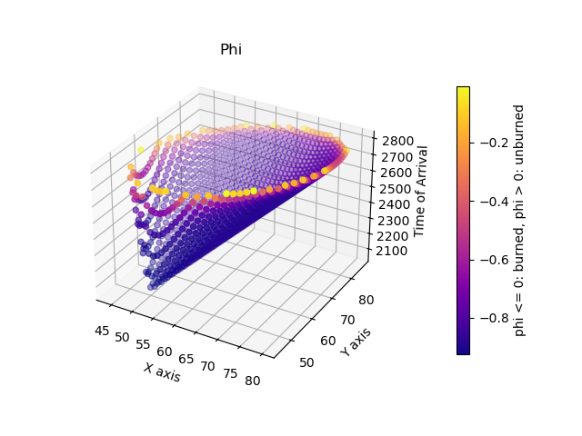
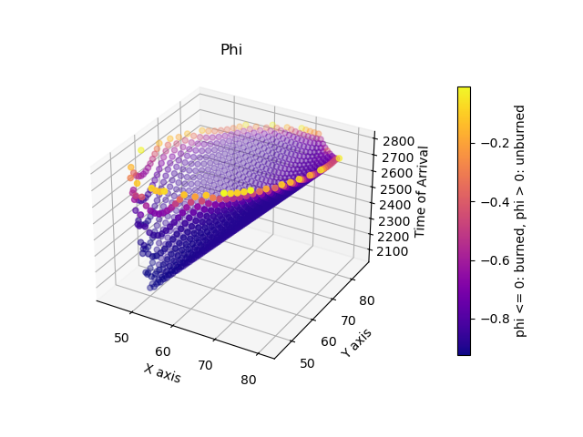
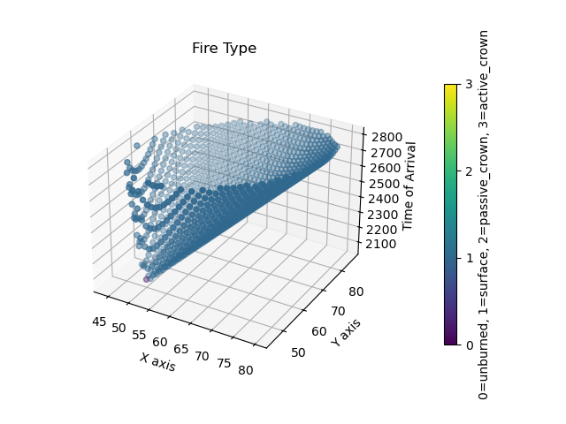
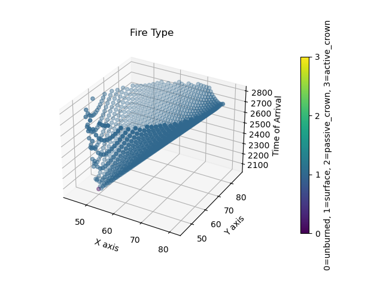
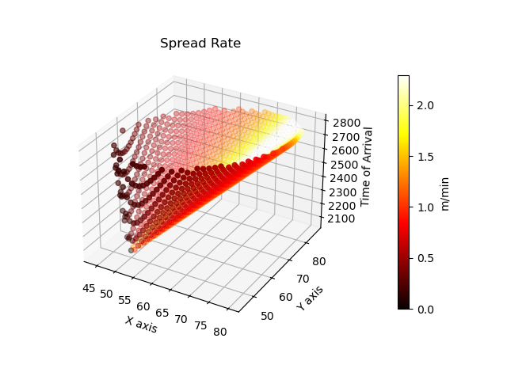
10.3.4. How to Spread a Fire at Low Resolution and Upsample It to a Higher Resolution
- Configure and Run the Fire Spread Simulation at Low Resolution
import time import numpy as np from pyretechnics.space_time_cube import SpaceTimeCube import pyretechnics.eulerian_level_set as els #============================================================================================ # Specify the SpaceTimeCube dimensions #============================================================================================ cube_shape = ( 60, # bands: 10 days @ 4 hour/band 50, # rows: 3 km @ 60 meters/row 50, # cols: 3 km @ 60 meters/col ) #============================================================================================ # Specify the SpaceTimeCube resolution #============================================================================================ cube_resolution = ( 240, # band_duration: minutes 60, # cell_height: meters 60, # cell_width: meters ) #============================================================================================ # Create an input dictionary of SpaceTimeCubes (using constant data for this example) #============================================================================================ space_time_cubes = { "slope" : SpaceTimeCube(cube_shape, 0.8), # rise/run "aspect" : SpaceTimeCube(cube_shape, 225.0), # degrees clockwise from North "fuel_model" : SpaceTimeCube(cube_shape, 101), # integer index in fm.fuel_model_table "canopy_cover" : SpaceTimeCube(cube_shape, 0.6), # 0-1 "canopy_height" : SpaceTimeCube(cube_shape, 30.0), # m "canopy_base_height" : SpaceTimeCube(cube_shape, 3.0), # m "canopy_bulk_density" : SpaceTimeCube(cube_shape, 0.3), # kg/m^3 "wind_speed_10m" : SpaceTimeCube(cube_shape, 30.0), # km/hr "upwind_direction" : SpaceTimeCube(cube_shape, 180.0), # degrees clockwise from North "fuel_moisture_dead_1hr" : SpaceTimeCube(cube_shape, 0.05), # kg moisture/kg ovendry weight "fuel_moisture_dead_10hr" : SpaceTimeCube(cube_shape, 0.10), # kg moisture/kg ovendry weight "fuel_moisture_dead_100hr" : SpaceTimeCube(cube_shape, 0.15), # kg moisture/kg ovendry weight "fuel_moisture_live_herbaceous": SpaceTimeCube(cube_shape, 0.90), # kg moisture/kg ovendry weight "fuel_moisture_live_woody" : SpaceTimeCube(cube_shape, 0.60), # kg moisture/kg ovendry weight "foliar_moisture" : SpaceTimeCube(cube_shape, 0.90), # kg moisture/kg ovendry weight "fuel_spread_adjustment" : SpaceTimeCube(cube_shape, 1.0), # float >= 0.0 (Optional: defaults to 1.0) "weather_spread_adjustment" : SpaceTimeCube(cube_shape, 1.0), # float >= 0.0 (Optional: defaults to 1.0) } #============================================================================================ # Create a SpreadState object and specify a point ignition location (y, x) #============================================================================================ spread_state = els.SpreadState(cube_shape).ignite_cell((25,25)) #============================================================================================ # Set the start time and max duration of the simulation #============================================================================================ # Day 2 @ 10:30am start_time = (24 * 60) + (10 * 60) + 30 # minutes # 8 hours max_duration = 8 * 60 # minutes # Embed the start time in the SpreadState object spread_state.set_start_time(start_time) #============================================================================================ # Spread fire from the start time for the max duration #============================================================================================ runtime_start = time.perf_counter() fire_spread_results = els.spread_fire_with_phi_field(space_time_cubes, spread_state, cube_resolution, start_time, max_duration) runtime_stop = time.perf_counter() stop_time = fire_spread_results["stop_time"] # minutes stop_condition = fire_spread_results["stop_condition"] # "max duration reached" or "no burnable cells" spread_state = fire_spread_results["spread_state"] # updated SpreadState object (mutated from inputs) output_matrices_low_res = spread_state.get_full_matrices() #============================================================================================ # Print out the acres burned, total runtime, and runtime per burned cell #============================================================================================ num_burned_cells = np.count_nonzero(output_matrices_low_res["fire_type"]) # cells acres_burned = num_burned_cells / 1.125 # acres simulation_runtime = runtime_stop - runtime_start # seconds runtime_per_burned_cell = 1000.0 * simulation_runtime / num_burned_cells # ms/cell print("Acres Burned: " + str(acres_burned)) print("Total Runtime: " + str(simulation_runtime) + " seconds") print("Runtime Per Burned Cell: " + str(runtime_per_burned_cell) + " ms/cell")
- Upsample Low Resolution Results to a Higher Resolution
from pyretechnics.space_time_cube import SpaceTimeCube cube_shape_high_res = ( 240, # bands: 10 days @ 1 hour/band 100, # rows: 3 km @ 30 meters/row 100, # cols: 3 km @ 30 meters/col ) space_time_cubes_high_res = { "slope" : SpaceTimeCube(cube_shape_high_res, 0.8), # rise/run "aspect" : SpaceTimeCube(cube_shape_high_res, 225.0), # degrees clockwise from North "fuel_model" : SpaceTimeCube(cube_shape_high_res, 101), # integer index in fm.fuel_model_table "canopy_cover" : SpaceTimeCube(cube_shape_high_res, 0.6), # 0-1 "canopy_height" : SpaceTimeCube(cube_shape_high_res, 30.0), # m "canopy_base_height" : SpaceTimeCube(cube_shape_high_res, 3.0), # m "canopy_bulk_density" : SpaceTimeCube(cube_shape_high_res, 0.3), # kg/m^3 "wind_speed_10m" : SpaceTimeCube(cube_shape_high_res, 30.0), # km/hr "upwind_direction" : SpaceTimeCube(cube_shape_high_res, 180.0), # degrees clockwise from North "fuel_moisture_dead_1hr" : SpaceTimeCube(cube_shape_high_res, 0.05), # kg moisture/kg ovendry weight "fuel_moisture_dead_10hr" : SpaceTimeCube(cube_shape_high_res, 0.10), # kg moisture/kg ovendry weight "fuel_moisture_dead_100hr" : SpaceTimeCube(cube_shape_high_res, 0.15), # kg moisture/kg ovendry weight "fuel_moisture_live_herbaceous": SpaceTimeCube(cube_shape_high_res, 0.90), # kg moisture/kg ovendry weight "fuel_moisture_live_woody" : SpaceTimeCube(cube_shape_high_res, 0.60), # kg moisture/kg ovendry weight "foliar_moisture" : SpaceTimeCube(cube_shape_high_res, 0.90), # kg moisture/kg ovendry weight "fuel_spread_adjustment" : SpaceTimeCube(cube_shape_high_res, 1.0), # float >= 0.0 (Optional: defaults to 1.0) "weather_spread_adjustment" : SpaceTimeCube(cube_shape_high_res, 1.0), # float >= 0.0 (Optional: defaults to 1.0) } spread_state_high_res = spread_state.render_at_new_resolution(space_time_cubes_high_res) output_matrices_high_res = spread_state_high_res.get_full_matrices()
- Create Images of the Output Matrices at Both Resolutions
import matplotlib.pyplot as plt import numpy as np def save_matrix_as_heatmap(matrix, colors, units, title, filename, vmin=None, vmax=None, ticks=None): image = plt.imshow(matrix, origin="lower", cmap=colors, vmin=vmin, vmax=vmax) colorbar = plt.colorbar(image, orientation="vertical", ticks=ticks) colorbar.set_label(units) plt.title(title) plt.savefig(filename) plt.close("all") def save_matrix_as_contours(matrix, title, filename, levels=None): nan_masked_matrix = matrix.copy() nan_masked_matrix[np.isnan(nan_masked_matrix)] = -1.0 fig, ax = plt.subplots() cs = ax.contour(nan_masked_matrix, levels=levels) ax.clabel(cs, inline=True, fontsize=10) ax.set_aspect('equal', 'box') ax.set_title(title) plt.savefig(filename) plt.close("all") # See https://matplotlib.org/stable/gallery/color/colormap_reference.html for the available options for "colors" def get_heatmap_configs(output_matrices, file_suffix): return [ { "matrix" : output_matrices["phi"], "colors" : "plasma", "units" : "phi <= 0: burned, phi > 0: unburned", "title" : "Phi", "filename": f"org/pics/els_phi_{file_suffix}.png", }, { "matrix" : output_matrices["fire_type"], "colors" : "viridis", "units" : "0=unburned, 1=surface, 2=passive_crown, 3=active_crown", "title" : "Fire Type", "filename": f"org/pics/els_fire_type_{file_suffix}.png", "vmin" : 0, "vmax" : 3, "ticks" : [0,1,2,3], }, { "matrix" : output_matrices["spread_rate"], "colors" : "hot", "units" : "m/min", "title" : "Spread Rate", "filename": f"org/pics/els_spread_rate_{file_suffix}.png", }, { "matrix" : output_matrices["spread_direction"], "colors" : "viridis", "units" : "degrees clockwise from North", "title" : "Spread Direction", "filename": f"org/pics/els_spread_direction_{file_suffix}.png", "vmin" : 0, "vmax" : 360, "ticks" : [0,45,90,135,180,225,270,315,360] }, { "matrix" : output_matrices["fireline_intensity"], "colors" : "hot", "units" : "kW/m", "title" : "Fireline Intensity", "filename": f"org/pics/els_fireline_intensity_{file_suffix}.png", }, { "matrix" : output_matrices["flame_length"], "colors" : "hot", "units" : "meters", "title" : "Flame Length", "filename": f"org/pics/els_flame_length_{file_suffix}.png", }, ] def get_contour_configs(output_matrices, file_suffix): return [ { "matrix" : output_matrices["time_of_arrival"], "title" : "Time of Arrival", "filename": f"org/pics/els_time_of_arrival_{file_suffix}.png", "levels" : int(start_time) + np.asarray(range(0, int(max_duration) + 1, 60)), }, ] for (output_matrices, file_suffix) in [(output_matrices_low_res, "low_res"), (output_matrices_high_res, "high_res")]: for heatmap_config in get_heatmap_configs(output_matrices, file_suffix): save_matrix_as_heatmap(**heatmap_config) for contour_config in get_contour_configs(output_matrices, file_suffix): save_matrix_as_contours(**contour_config)
Table 17: Fire behavior attributes after 8 hours of spread (Left: 60m resolution | Right: 30m resolution) Table 18: Time of arrival with hourly perimeters (Left: 60m resolution | Right: 30m resolution) - Create 3D Plots of the Spread State at Both Resolutions
import numpy as np import matplotlib.pyplot as plt from mpl_toolkits.mplot3d import Axes3D def save_3d_voxel_plot(time_of_arrival_matrix, fire_behavior_matrix, filename, title, units, colors, vmin=None, vmax=None, ticks=None): # Get the dimensions of the arrays (M, N) = fire_behavior_matrix.shape # Create a grid of (X, Y) coordinates (X, Y) = np.meshgrid(np.arange(N), np.arange(M)) # Flatten the matrices for 3D plotting X_flat = X.flatten() Y_flat = Y.flatten() Z_flat = time_of_arrival_matrix.flatten() V_flat = fire_behavior_matrix.flatten() # Filter out the non-burned areas (assuming non-positive values mean no fire) mask = ~np.isnan(Z_flat) X_burned = X_flat[mask] Y_burned = Y_flat[mask] Z_burned = Z_flat[mask] V_burned = V_flat[mask] # Set up the figure and 3D axis fig = plt.figure() ax = fig.add_subplot(111, projection='3d') # Create a scatter plot sc = ax.scatter(X_burned, Y_burned, Z_burned, c=V_burned, cmap=colors, marker='o', vmin=vmin, vmax=vmax) # Add color bar to indicate fire intensity cbar = plt.colorbar(sc, ax=ax, shrink=0.8, pad=0.15, orientation="vertical", ticks=ticks) cbar.set_label(units) # Set labels ax.set_xlabel('X axis') ax.set_ylabel('Y axis') ax.set_zlabel('Time of Arrival') # Add a title and save the file plt.title(title) plt.savefig(filename) plt.close("all") # See https://matplotlib.org/stable/gallery/color/colormap_reference.html for the available options for "colors" def get_heatmap_configs(output_matrices, file_suffix): return [ { "matrix" : output_matrices["phi"], "colors" : "plasma", "units" : "phi <= 0: burned, phi > 0: unburned", "title" : "Phi", "filename": f"org/pics/els_phi_cube_{file_suffix}.png", }, { "matrix" : output_matrices["fire_type"], "colors" : "viridis", "units" : "0=unburned, 1=surface, 2=passive_crown, 3=active_crown", "title" : "Fire Type", "filename": f"org/pics/els_fire_type_cube_{file_suffix}.png", "vmin" : 0, "vmax" : 3, "ticks" : [0,1,2,3], }, { "matrix" : output_matrices["spread_rate"], "colors" : "hot", "units" : "m/min", "title" : "Spread Rate", "filename": f"org/pics/els_spread_rate_cube_{file_suffix}.png", }, { "matrix" : output_matrices["spread_direction"], "colors" : "viridis", "units" : "degrees clockwise from North", "title" : "Spread Direction", "filename": f"org/pics/els_spread_direction_cube_{file_suffix}.png", "vmin" : 0, "vmax" : 360, "ticks" : [0,45,90,135,180,225,270,315,360] }, { "matrix" : output_matrices["fireline_intensity"], "colors" : "hot", "units" : "kW/m", "title" : "Fireline Intensity", "filename": f"org/pics/els_fireline_intensity_cube_{file_suffix}.png", }, { "matrix" : output_matrices["flame_length"], "colors" : "hot", "units" : "meters", "title" : "Flame Length", "filename": f"org/pics/els_flame_length_cube_{file_suffix}.png", }, ] for (output_matrices, file_suffix) in [(output_matrices_low_res, "low_res"), (output_matrices_high_res, "high_res")]: for heatmap_config in get_heatmap_configs(output_matrices, file_suffix): save_3d_voxel_plot(output_matrices["time_of_arrival"], heatmap_config["matrix"], heatmap_config["filename"], heatmap_config["title"], heatmap_config["units"], heatmap_config["colors"], heatmap_config.get("vmin"), heatmap_config.get("vmax"), heatmap_config.get("ticks"))
Table 19: 3D fire behavior shapes after 8 hours of spread (Left: 60m resolution | Right: 30m resolution)
11. Fire Suppression Techniques (pyretechnics.suppression)
11.1. For Developers
11.1.1. Module Imports
import cython import cython as cy import numpy as np if cython.compiled: from cython.cimports.numpy import ndarray from cython.cimports.libc.math import sqrt from cython.cimports.pyretechnics.cy_types import pyidx else: from numpy import ndarray from math import sqrt from pyretechnics.py_types import pyidx
11.1.2. Ordering the Frontier Cells
def get_ordered_sides(y: cy.int, x: cy.int, is_burned: cy.bint) -> set: north: cy.float = y + 0.5 south: cy.float = y - 0.5 east : cy.float = x + 0.5 west : cy.float = x - 0.5 # Define cell sides as (y1,x1,y2,x2) where (y1,x1) and (y2,x2) are cell corners and (y1,x1)->(y2,x2) # is a directional cell side with an unburned cell to the left and a burned cell to the right. if is_burned: # Clockwise north_side: tuple[cy.float, cy.float, cy.float, cy.float] = (north, west, north, east) east_side : tuple[cy.float, cy.float, cy.float, cy.float] = (north, east, south, east) south_side: tuple[cy.float, cy.float, cy.float, cy.float] = (south, east, south, west) west_side : tuple[cy.float, cy.float, cy.float, cy.float] = (south, west, north, west) else: # Counterclockwise north_side: tuple[cy.float, cy.float, cy.float, cy.float] = (north, east, north, west) west_side : tuple[cy.float, cy.float, cy.float, cy.float] = (north, west, south, west) south_side: tuple[cy.float, cy.float, cy.float, cy.float] = (south, west, south, east) east_side : tuple[cy.float, cy.float, cy.float, cy.float] = (south, east, north, east) return {north_side, east_side, south_side, west_side} def get_frontier_sides(frontier_cells: dict) -> set: burned_cells : tuple[ndarray, ndarray] = frontier_cells["burned_cells"] unburned_cells : tuple[ndarray, ndarray] = frontier_cells["unburned_cells"] burned_ys : cy.int[::1] = burned_cells[0] burned_xs : cy.int[::1] = burned_cells[1] unburned_ys : cy.int[::1] = unburned_cells[0] unburned_xs : cy.int[::1] = unburned_cells[1] burned_cell_sides : set = set() unburned_cell_sides: set = set() i : pyidx for i in range(len(burned_ys)): burned_cell_sides.update(get_ordered_sides(burned_ys[i], burned_xs[i], True)) for i in range(len(unburned_ys)): unburned_cell_sides.update(get_ordered_sides(unburned_ys[i], unburned_xs[i], False)) frontier_sides: set = set.intersection(burned_cell_sides, unburned_cell_sides) return frontier_sides def get_frontier_corner_graph(frontier_sides): frontier_corner_graph = {} for side in frontier_sides: (y1, x1, y2, x2) = side corner1 = (y1, x1) corner2 = (y2, x2) # NOTE: If corner1 has multiple corner2 values, we retain both. prev_corner2 = frontier_corner_graph.get(corner1) if prev_corner2: frontier_corner_graph[corner1] = [prev_corner2, corner2] else: frontier_corner_graph[corner1] = corner2 return frontier_corner_graph def group_corners_by_type(frontier_corner_graph): parent_corners = set(frontier_corner_graph.keys()) child_corners = set() for corner in frontier_corner_graph.values(): if isinstance(corner, list): child_corners.update(corner) else: child_corners.add(corner) root_corners = set.difference(parent_corners, child_corners) leaf_corners = set.difference(child_corners, parent_corners) return { "parent_corners": parent_corners, "child_corners" : child_corners, "root_corners" : root_corners, "leaf_corners" : leaf_corners, } def get_side_direction(corner1, corner2): (y1, x1) = corner1 (y2, x2) = corner2 if y1 == y2: if x2 > x1: return "east" else: return "west" else: if y2 > y1: return "north" else: return "south" get_left_direction = { "north": "west", "east" : "north", "south": "east", "west" : "south", } def iterative_graph_traversal(frontier_corner_graph, root_corner): corner_sequence = [root_corner] grandparent_corner = None parent_corner = root_corner child_corner = frontier_corner_graph.get(parent_corner) while(child_corner): if isinstance(child_corner, list): (child_corner1, child_corner2) = child_corner if grandparent_corner is None: # NOTE: Only happens if the root_corner branches toward two child_corners (should be rare). # Use child_corner1 in the absence of better information corner_sequence.append(child_corner1) frontier_corner_graph[parent_corner] = child_corner2 grandparent_corner = parent_corner parent_corner = child_corner1 child_corner = frontier_corner_graph.get(parent_corner) else: # NOTE: Prefer a left turn over a right turn as this should increase polygon convexity # since we are traversing the frontier in a clockwise direction. incoming_direction = get_side_direction(grandparent_corner, parent_corner) outgoing_direction1 = get_side_direction(parent_corner, child_corner1) outgoing_direction2 = get_side_direction(parent_corner, child_corner2) outgoing_left_direction = get_left_direction[incoming_direction] if outgoing_left_direction == outgoing_direction1: # Use child_corner1 corner_sequence.append(child_corner1) frontier_corner_graph[parent_corner] = child_corner2 grandparent_corner = parent_corner parent_corner = child_corner1 child_corner = frontier_corner_graph.get(parent_corner) else: # Use child_corner2 corner_sequence.append(child_corner2) frontier_corner_graph[parent_corner] = child_corner1 grandparent_corner = parent_corner parent_corner = child_corner2 child_corner = frontier_corner_graph.get(parent_corner) else: corner_sequence.append(child_corner) frontier_corner_graph.pop(parent_corner) grandparent_corner = parent_corner parent_corner = child_corner child_corner = frontier_corner_graph.get(parent_corner) return corner_sequence def corners_to_ordered_frontier_cells(corner_sequence: list) -> dict: num_sides : cy.int = len(corner_sequence) - 1 burned_ys : cy.int[::1] = np.zeros(num_sides, dtype=np.int32) burned_xs : cy.int[::1] = np.zeros(num_sides, dtype=np.int32) unburned_ys: cy.int[::1] = np.zeros(num_sides, dtype=np.int32) unburned_xs: cy.int[::1] = np.zeros(num_sides, dtype=np.int32) i : pyidx for i in range(num_sides): parent_corner: tuple[cy.float, cy.float] = corner_sequence[i] child_corner : tuple[cy.float, cy.float] = corner_sequence[i+1] y1 : cy.float = parent_corner[0] x1 : cy.float = parent_corner[1] y2 : cy.float = child_corner[0] x2 : cy.float = child_corner[1] direction : str = get_side_direction(parent_corner, child_corner) y : cy.int y_up : cy.int y_down : cy.int x : cy.int x_left : cy.int x_right : cy.int if direction == "north": y = int(y1 + 0.5) x_left = int(x1 - 0.5) x_right = int(x1 + 0.5) burned_ys[i] = y # east_cell burned_xs[i] = x_right # east_cell unburned_ys[i] = y # west_cell unburned_xs[i] = x_left # west_cell elif direction == "east": y_up = int(y1 + 0.5) y_down = int(y1 - 0.5) x = int(x1 + 0.5) burned_ys[i] = y_down # south_cell burned_xs[i] = x # south_cell unburned_ys[i] = y_up # north_cell unburned_xs[i] = x # north_cell elif direction == "south": y = int(y2 + 0.5) x_left = int(x1 - 0.5) x_right = int(x1 + 0.5) burned_ys[i] = y # west_cell burned_xs[i] = x_left # west_cell unburned_ys[i] = y # east_cell unburned_xs[i] = x_right # east_cell else: # direction == "west" y_up = int(y1 + 0.5) y_down = int(y1 - 0.5) x = int(x2 + 0.5) burned_ys[i] = y_up # north_cell burned_xs[i] = x # north_cell unburned_ys[i] = y_down # south_cell unburned_xs[i] = x # south_cell return { "burned_cells" : (burned_ys, burned_xs), "unburned_cells": (unburned_ys, unburned_xs), } def order_frontier_cells(frontier_cells): frontier_sides = get_frontier_sides(frontier_cells) frontier_corner_graph = get_frontier_corner_graph(frontier_sides) corner_info = group_corners_by_type(frontier_corner_graph) ordered_frontier_cells = [] # Process all linestrings for root_corner in corner_info["root_corners"]: corner_sequence = iterative_graph_traversal(frontier_corner_graph, root_corner) ordered_frontier_cells.append(corners_to_ordered_frontier_cells(corner_sequence)) # Process all rings while(len(frontier_corner_graph) > 0): parent_corner = next(iter(frontier_corner_graph)) corner_sequence = iterative_graph_traversal(frontier_corner_graph, parent_corner) ordered_frontier_cells.append(corners_to_ordered_frontier_cells(corner_sequence)) return ordered_frontier_cells
11.1.3. Selecting Frontier Cells for Suppression
def get_frontier_distances(frontier, cell_height, cell_width): burned_cells = frontier["burned_cells"] burned_ys = burned_cells[0] burned_xs = burned_cells[1] unburned_cells = frontier["unburned_cells"] unburned_ys = unburned_cells[0] unburned_xs = unburned_cells[1] frontier_length = len(burned_ys) distances = np.zeros(frontier_length, dtype=np.float32) half_diagonal_distance = sqrt(cell_height * cell_height + cell_width * cell_width)/2.0 # Calculate the frontier length between each cell pair for i in range(frontier_length): if (burned_ys[i] == unburned_ys[i]): # vertical cell side distances[i] = cell_height else: # horizonal cell side distances[i] = cell_width # If two cell pairs share the same unburned cell, we reduce their respective distances # such that their sum will equal the length of a diagonal line across the unburned cell for i in range(frontier_length - 1): if unburned_ys[i] == unburned_ys[i+1] and unburned_xs[i] == unburned_xs[i+1]: distances[i] = half_diagonal_distance for i in range(1, frontier_length): if unburned_ys[i] == unburned_ys[i-1] and unburned_xs[i] == unburned_xs[i-1]: distances[i] = half_diagonal_distance if unburned_ys[frontier_length-1] == unburned_ys[0] and unburned_xs[frontier_length-1] == unburned_xs[0]: distances[frontier_length-1] = half_diagonal_distance distances[0] = half_diagonal_distance return distances def score_frontier_cells(ordered_frontier_cells, cell_height, cell_width, suppression_priority_function, fireline_construction_rate_function): frontier_cell_scores = [] for frontier in ordered_frontier_cells: # Calculate the suppression priority of each cell pair scores = suppression_priority_function(frontier) # Calculate the fireline construction rate of each cell pair rates = fireline_construction_rate_function(frontier) # Calculate the fireline length required for each cell pair distances = get_frontier_distances(frontier, cell_height, cell_width) # Calculate the fireline construction times between each cell pair times = distances / rates frontier_cell_scores.append({ "scores" : scores, "rates" : rates, "distances": distances, "times" : times, }) return frontier_cell_scores def select_frontier_cells_for_suppression(ordered_frontier_cells, frontier_cell_scores, max_construction_time): selected_burned_cells = () selected_unburned_cells = () top_path_score = 0.0 for i in range(len(ordered_frontier_cells)): frontier = ordered_frontier_cells[i] burned_cells = frontier["burned_cells"] burned_ys = burned_cells[0] burned_xs = burned_cells[1] unburned_cells = frontier["unburned_cells"] unburned_ys = unburned_cells[0] unburned_xs = unburned_cells[1] frontier_length = len(unburned_ys) frontier_scores = frontier_cell_scores[i] scores = frontier_scores["scores"] times = frontier_scores["times"] # Use a moving window to find the sequence of frontier cells with the maximum total score # whose total frontier length can be contained within max_construction_time start_idx = 0 stop_idx = 0 path_score = 0.0 construction_time = 0.0 best_start_idx = 0 best_stop_idx = 0 best_path_score = 0.0 while(stop_idx < frontier_length): # Expand the moving window until we reach max_construction_time or the end of the frontier while(stop_idx < frontier_length and construction_time + times[stop_idx] < max_construction_time): path_score += scores[stop_idx] construction_time += times[stop_idx] stop_idx += 1 # Record this path's info if its score is the highest one that we've seen yet if path_score > best_path_score: best_start_idx = start_idx # inclusive best_stop_idx = stop_idx # exclusive best_path_score = path_score # Shift the moving window forward by one step path_score -= scores[start_idx] construction_time -= times[start_idx] start_idx += 1 # Detect if stop_idx is not moving forward and jump over the cell that is blocking fireline growth if start_idx > stop_idx: stop_idx = start_idx if best_path_score > top_path_score: top_path_score = best_path_score selected_burned_ys = burned_ys[best_start_idx:best_stop_idx] selected_burned_xs = burned_xs[best_start_idx:best_stop_idx] selected_unburned_ys = unburned_ys[best_start_idx:best_stop_idx] selected_unburned_xs = unburned_xs[best_start_idx:best_stop_idx] selected_burned_cells = (selected_burned_ys, selected_burned_xs) selected_unburned_cells = (selected_unburned_ys, selected_unburned_xs) return { "burned_cells" : selected_burned_cells, "unburned_cells": selected_unburned_cells, }
11.1.4. Suppressing Frontier Cells
def make_constant_value_fn(value): def constant_value(frontier): frontier_length = len(frontier["burned_cells"][0]) return np.full(frontier_length, value) return constant_value def build_firelines(fuel_model_matrix, frontier_cells, cell_height, cell_width, suppression_priority_function, fireline_construction_rate_function, max_construction_time, suppressed_fuel_model_function=make_constant_value_fn(91)): # Order the frontier cells into a list of independent, spatially contiguous perimeters ordered_frontier_cells = order_frontier_cells(frontier_cells) # Assign suppression priorities and fireline construction times to each perimeter's cells frontier_cell_scores = score_frontier_cells(ordered_frontier_cells, cell_height, cell_width, suppression_priority_function, fireline_construction_rate_function) # Select the frontier segment with the highest suppression priority that can be # contained within max_construction_time selected_frontier_cells = select_frontier_cells_for_suppression(ordered_frontier_cells, frontier_cell_scores, max_construction_time) # Compute the new fuel model values in the suppressed cells suppressed_fuel_models = suppressed_fuel_model_function(selected_frontier_cells) # Change the values in fuel_model_matrix to these new suppressed values for all selected_frontier_cells fuel_model_matrix[selected_frontier_cells["unburned_cells"]] = suppressed_fuel_models return fuel_model_matrix
11.1.5. Example Suppression Priority Functions
def make_sdi_suppression_priority_fn(sdi_matrix): max_sdi = np.max(sdi_matrix) + 1.0 def sdi_suppression_priority(frontier): return max_sdi - sdi_matrix[frontier["unburned_cells"]] return sdi_suppression_priority def make_flame_length_suppression_priority_fn(flame_length_matrix): max_flame_length = np.max(flame_length_matrix) + 1.0 def flame_length_suppression_priority(frontier): return max_flame_length - flame_length_matrix[frontier["burned_cells"]] return flame_length_suppression_priority
11.2. For Users
11.2.1. How to Select Frontier Cells for Suppression
- Example: Simple Elliptical Perimeter
Table 20: X = already burned, + = actively burning, . = unburned 9 8 . . 7 . + + . 6 . + X + . 5 . + X X + . 4 . + X X + . 3 . + X + . 2 . + + . 1 . . 0 0 1 2 3 4 5 6 7 8 9 import numpy as np import matplotlib.pyplot as plt from pyretechnics.suppression import order_frontier_cells, score_frontier_cells, \ select_frontier_cells_for_suppression, make_constant_value_fn # NOTE: This is how you normally extract the frontier cells from a fire spread simulation: # # fire_spread_results = els.spread_fire_with_phi_field(...) # frontier_cells = fire_spread_results["frontier_cells"] # burned_cells = frontier_cells["burned_cells"] # unburned_cells = frontier_cells["unburned_cells"] # Define some example values for algorithm testing burned_ys = [7, 7, 6, 6, 5, 5, 4, 4, 3, 3, 2, 2] burned_xs = [5, 6, 4, 6, 3, 6, 3, 6, 3, 5, 3, 4] unburned_ys = [8, 8, 7, 7, 6, 6, 5, 5, 4, 4, 3, 3, 2, 2, 1, 1] unburned_xs = [5, 6, 4, 7, 3, 7, 2, 7, 2, 7, 2, 6, 2, 5, 3, 4] frontier_cells = { "burned_cells" : (np.asarray(burned_ys , dtype=np.int32), np.asarray(burned_xs , dtype=np.int32)), "unburned_cells": (np.asarray(unburned_ys, dtype=np.int32), np.asarray(unburned_xs, dtype=np.int32)), } cell_height = 30.0 # meters cell_width = 30.0 # meters suppression_priority_function = make_constant_value_fn(5.0) # unitless fireline_construction_rate_function = make_constant_value_fn(3.0) # m/min max_construction_time = 100.0 # minutes ordered_frontier_cells = order_frontier_cells(frontier_cells) frontier_cell_scores = score_frontier_cells(ordered_frontier_cells, cell_height, cell_width, suppression_priority_function, fireline_construction_rate_function) selected_frontier_cells = select_frontier_cells_for_suppression(ordered_frontier_cells, frontier_cell_scores, max_construction_time) num_frontiers = len(ordered_frontier_cells) unordered_matrix = np.zeros((10,10), dtype=np.int16) ordered_matrix = np.zeros((10,10), dtype=np.int16) score_matrix = np.zeros((10,10), dtype=np.float32) time_matrix = np.zeros((10,10), dtype=np.float32) selected_matrix = np.zeros((10,10), dtype=np.int16) # unordered_matrix - part 1 for i in range(len(burned_ys)): y = burned_ys[i] x = burned_xs[i] unordered_matrix[y,x] = -i-1 # unordered_matrix - part 2 for i in range(len(unburned_ys)): y = unburned_ys[i] x = unburned_xs[i] unordered_matrix[y,x] = i+1 # process each frontier for i in range(num_frontiers): frontier = ordered_frontier_cells[i] ordered_burned_cells = frontier["burned_cells"] ordered_burned_ys = ordered_burned_cells[0] ordered_burned_xs = ordered_burned_cells[1] ordered_unburned_cells = frontier["unburned_cells"] ordered_unburned_ys = ordered_unburned_cells[0] ordered_unburned_xs = ordered_unburned_cells[1] frontier_length = len(ordered_unburned_ys) frontier_scores = frontier_cell_scores[i]["scores"] frontier_times = frontier_cell_scores[i]["times"] # ordered_matrix for j in range(frontier_length): y1 = ordered_burned_ys[j] x1 = ordered_burned_xs[j] y2 = ordered_unburned_ys[j] x2 = ordered_unburned_xs[j] ordered_matrix[y1,x1] = -j-1 ordered_matrix[y2,x2] = j+1 # score_matrix for j in range(frontier_length): y = ordered_unburned_ys[j] x = ordered_unburned_xs[j] score_matrix[y,x] += frontier_scores[j] # time_matrix for j in range(frontier_length): y = ordered_unburned_ys[j] x = ordered_unburned_xs[j] time_matrix[y,x] += frontier_times[j] # selected_matrix - part 1 selected_matrix[ordered_unburned_cells] = 1 # selected_matrix - part 2 selected_unburned_cells = selected_frontier_cells["unburned_cells"] selected_matrix[selected_unburned_cells] = 2 def save_matrix_as_heatmap(matrix, colors, units, title, filename, vmin=None, vmax=None, ticks=None): image = plt.imshow(matrix, origin="lower", cmap=colors, vmin=vmin, vmax=vmax) colorbar = plt.colorbar(image, orientation="vertical", ticks=ticks) colorbar.set_label(units) plt.title(title) plt.savefig(filename) plt.close("all") heatmap_configs = [ { "matrix" : unordered_matrix, "colors" : "autumn", "units" : "cell order (< 0: burned, > 0: unburned)", "title" : "Cell Order in Unordered Frontier Cells", "filename": "org/pics/unordered_frontier_cells_se.png", }, { "matrix" : ordered_matrix, "colors" : "autumn", "units" : "cell order (< 0: burned, > 0: unburned)", "title" : "Cell Order in Ordered Frontier Cells", "filename": "org/pics/ordered_frontier_cells_se.png", }, { "matrix" : score_matrix, "colors" : "autumn", "units" : "suppression priority", "title" : "Suppression Priority Score", "filename": "org/pics/scored_frontier_cells_se.png", }, { "matrix" : time_matrix, "colors" : "autumn", "units" : "minutes", "title" : "Fireline Construction Time", "filename": "org/pics/measured_frontier_cells_se.png", }, { "matrix" : selected_matrix, "colors" : "autumn", "units" : "1 = not selected, 2 = selected", "title" : "Cells Selected for Suppression", "filename": "org/pics/selected_frontier_cells_se.png", }, ] for heatmap_config in heatmap_configs: save_matrix_as_heatmap(**heatmap_config)
Table 21: Frontier cells before and after ordering Table 22: Frontier cells' suppression priority scores and fireline construction times Figure 6: Frontier cells selected by best combined suppression score
- Example: Elliptical Perimeter with an Existing (Backburn) Fireline
Table 23: X = already burned, + = actively burning, . = unburned 9 8 . . 7 . + + . 6 . + X + . 5 . . + X X + . 4 . + . + X X + . 3 . + X X + . 2 . + + . 1 . . + . 0 . + . 0 1 2 3 4 5 6 7 8 9 import numpy as np import matplotlib.pyplot as plt from pyretechnics.suppression import order_frontier_cells, score_frontier_cells, \ select_frontier_cells_for_suppression, make_constant_value_fn # NOTE: This is how you normally extract the frontier cells from a fire spread simulation: # # fire_spread_results = els.spread_fire_with_phi_field(...) # frontier_cells = fire_spread_results["frontier_cells"] # burned_cells = frontier_cells["burned_cells"] # unburned_cells = frontier_cells["unburned_cells"] burned_ys = [7, 7, 6, 6, 5, 5, 4, 4, 4, 3, 3, 2, 2, 1, 0] burned_xs = [5, 6, 4, 6, 3, 6, 1, 3, 6, 2, 5, 3, 4, 5, 6] unburned_ys = [8, 8, 7, 7, 6, 6, 5, 5, 5, 4, 4, 4, 3, 3, 2, 2, 1, 1, 1, 0, 0] unburned_xs = [5, 6, 4, 7, 3, 7, 1, 2, 7, 0, 2, 7, 1, 6, 2, 5, 3, 4, 6, 5, 7] frontier_cells = { "burned_cells" : (np.asarray(burned_ys , dtype=np.int32), np.asarray(burned_xs , dtype=np.int32)), "unburned_cells": (np.asarray(unburned_ys, dtype=np.int32), np.asarray(unburned_xs, dtype=np.int32)), } cell_height = 30.0 # meters cell_width = 30.0 # meters suppression_priority_function = make_constant_value_fn(5.0) # unitless fireline_construction_rate_function = make_constant_value_fn(3.0) # m/min max_construction_time = 100.0 # minutes ordered_frontier_cells = order_frontier_cells(frontier_cells) frontier_cell_scores = score_frontier_cells(ordered_frontier_cells, cell_height, cell_width, suppression_priority_function, fireline_construction_rate_function) selected_frontier_cells = select_frontier_cells_for_suppression(ordered_frontier_cells, frontier_cell_scores, max_construction_time) num_frontiers = len(ordered_frontier_cells) unordered_matrix = np.zeros((10,10), dtype=np.int16) ordered_matrix = np.zeros((10,10), dtype=np.int16) score_matrix = np.zeros((10,10), dtype=np.float32) time_matrix = np.zeros((10,10), dtype=np.float32) selected_matrix = np.zeros((10,10), dtype=np.int16) # unordered_matrix - part 1 for i in range(len(burned_ys)): y = burned_ys[i] x = burned_xs[i] unordered_matrix[y,x] = -i-1 # unordered_matrix - part 2 for i in range(len(unburned_ys)): y = unburned_ys[i] x = unburned_xs[i] unordered_matrix[y,x] = i+1 # process each frontier for i in range(num_frontiers): frontier = ordered_frontier_cells[i] ordered_burned_cells = frontier["burned_cells"] ordered_burned_ys = ordered_burned_cells[0] ordered_burned_xs = ordered_burned_cells[1] ordered_unburned_cells = frontier["unburned_cells"] ordered_unburned_ys = ordered_unburned_cells[0] ordered_unburned_xs = ordered_unburned_cells[1] frontier_length = len(ordered_unburned_ys) frontier_scores = frontier_cell_scores[i]["scores"] frontier_times = frontier_cell_scores[i]["times"] # ordered_matrix for j in range(frontier_length): y1 = ordered_burned_ys[j] x1 = ordered_burned_xs[j] y2 = ordered_unburned_ys[j] x2 = ordered_unburned_xs[j] ordered_matrix[y1,x1] = -j-1 ordered_matrix[y2,x2] = j+1 # score_matrix for j in range(frontier_length): y = ordered_unburned_ys[j] x = ordered_unburned_xs[j] score_matrix[y,x] += frontier_scores[j] # time_matrix for j in range(frontier_length): y = ordered_unburned_ys[j] x = ordered_unburned_xs[j] time_matrix[y,x] += frontier_times[j] # selected_matrix - part 1 selected_matrix[ordered_unburned_cells] = 1 # selected_matrix - part 2 selected_unburned_cells = selected_frontier_cells["unburned_cells"] selected_matrix[selected_unburned_cells] = 2 def save_matrix_as_heatmap(matrix, colors, units, title, filename, vmin=None, vmax=None, ticks=None): image = plt.imshow(matrix, origin="lower", cmap=colors, vmin=vmin, vmax=vmax) colorbar = plt.colorbar(image, orientation="vertical", ticks=ticks) colorbar.set_label(units) plt.title(title) plt.savefig(filename) plt.close("all") heatmap_configs = [ { "matrix" : unordered_matrix, "colors" : "autumn", "units" : "cell order (< 0: burned, > 0: unburned)", "title" : "Cell Order in Unordered Frontier Cells", "filename": "org/pics/unordered_frontier_cells_ewf.png", }, { "matrix" : ordered_matrix, "colors" : "autumn", "units" : "cell order (< 0: burned, > 0: unburned)", "title" : "Cell Order in Ordered Frontier Cells", "filename": "org/pics/ordered_frontier_cells_ewf.png", }, { "matrix" : score_matrix, "colors" : "autumn", "units" : "suppression priority", "title" : "Suppression Priority Score", "filename": "org/pics/scored_frontier_cells_ewf.png", }, { "matrix" : time_matrix, "colors" : "autumn", "units" : "minutes", "title" : "Fireline Construction Time", "filename": "org/pics/measured_frontier_cells_ewf.png", }, { "matrix" : selected_matrix, "colors" : "autumn", "units" : "1 = not selected, 2 = selected", "title" : "Cells Selected for Suppression", "filename": "org/pics/selected_frontier_cells_ewf.png", }, ] for heatmap_config in heatmap_configs: save_matrix_as_heatmap(**heatmap_config)
Table 24: Frontier cells before and after ordering Table 25: Frontier cells' suppression priority scores and fireline construction times Figure 7: Frontier cells selected by best combined suppression score
- Example: High-Resolution Elliptical Perimeter
import numpy as np import matplotlib.pyplot as plt from pyretechnics.suppression import order_frontier_cells, score_frontier_cells, \ select_frontier_cells_for_suppression, make_constant_value_fn # NOTE: This is how you normally extract the frontier cells from a fire spread simulation: # # fire_spread_results = els.spread_fire_with_phi_field(...) # frontier_cells = fire_spread_results["frontier_cells"] # burned_cells = frontier_cells["burned_cells"] # unburned_cells = frontier_cells["unburned_cells"] # Define some example values for algorithm testing burned_ys = [53, 51, 55, 54, 47, 47, 47, 47, 48, 47, 50, 47, 70, 71, 53, 56, 59, 65, 66, 67, 68, 73, 72, 63, 60, 59, 57, 52, 56, 61, 58, 50, 63, 62, 49, 65, 48, 64, 48, 66, 67, 68, 47, 69, 71, 72, 72, 48, 73, 49, 73, 73, 50, 74, 51, 74, 52, 74, 54, 74, 55, 74, 57, 73, 58, 62, 61, 60, 64, 69, 70, 71] burned_xs = [47, 47, 46, 46, 51, 52, 54, 56, 58, 55, 61, 57, 54, 55, 65, 67, 68, 70, 70, 70, 70, 68, 69, 70, 47, 47, 46, 47, 46, 47, 47, 47, 48, 48, 48, 49, 49, 49, 50, 50, 51, 52, 53, 53, 56, 57, 58, 59, 59, 60, 60, 61, 62, 62, 63, 63, 64, 64, 65, 65, 66, 66, 67, 67, 68, 69, 69, 69, 70, 70, 70, 70] unburned_ys = [56, 53, 46, 46, 46, 46, 75, 58, 67, 68, 64, 65, 51, 49, 64, 55, 54, 57, 60, 52, 61, 58, 62, 59, 50, 65, 63, 48, 66, 67, 47, 47, 46, 68, 69, 70, 71, 72, 46, 72, 73, 46, 47, 73, 47, 74, 48, 74, 49, 74, 49, 75, 50, 75, 51, 75, 52, 75, 54, 53, 55, 74, 57, 56, 74, 73, 59, 60, 72, 62, 61, 66, 69, 70, 63, 71] unburned_xs = [45, 46, 52, 53, 54, 55, 65, 69, 71, 71, 71, 71, 46, 47, 48, 45, 45, 45, 46, 46, 46, 46, 47, 46, 46, 48, 47, 48, 49, 50, 49, 50, 51, 51, 52, 53, 54, 55, 56, 56, 57, 57, 58, 58, 59, 59, 60, 60, 61, 61, 62, 62, 63, 63, 64, 64, 65, 66, 66, 66, 67, 67, 68, 68, 68, 69, 69, 70, 70, 70, 70, 71, 71, 71, 71, 71] frontier_cells = { "burned_cells" : (np.asarray(burned_ys , dtype=np.int32), np.asarray(burned_xs , dtype=np.int32)), "unburned_cells": (np.asarray(unburned_ys, dtype=np.int32), np.asarray(unburned_xs, dtype=np.int32)), } cell_height = 30.0 # meters cell_width = 30.0 # meters suppression_priority_function = make_constant_value_fn(5.0) # unitless fireline_construction_rate_function = make_constant_value_fn(3.0) # m/min max_construction_time = 100.0 # minutes ordered_frontier_cells = order_frontier_cells(frontier_cells) frontier_cell_scores = score_frontier_cells(ordered_frontier_cells, cell_height, cell_width, suppression_priority_function, fireline_construction_rate_function) selected_frontier_cells = select_frontier_cells_for_suppression(ordered_frontier_cells, frontier_cell_scores, max_construction_time) num_frontiers = len(ordered_frontier_cells) unordered_matrix = np.zeros((100,100), dtype=np.int16) ordered_matrix = np.zeros((100,100), dtype=np.int16) score_matrix = np.zeros((100,100), dtype=np.float32) time_matrix = np.zeros((100,100), dtype=np.float32) selected_matrix = np.zeros((100,100), dtype=np.int16) # unordered_matrix - part 1 for i in range(len(burned_ys)): y = burned_ys[i] x = burned_xs[i] unordered_matrix[y,x] = -i-1 # unordered_matrix - part 2 for i in range(len(unburned_ys)): y = unburned_ys[i] x = unburned_xs[i] unordered_matrix[y,x] = i+1 # process each frontier for i in range(num_frontiers): frontier = ordered_frontier_cells[i] ordered_burned_cells = frontier["burned_cells"] ordered_burned_ys = ordered_burned_cells[0] ordered_burned_xs = ordered_burned_cells[1] ordered_unburned_cells = frontier["unburned_cells"] ordered_unburned_ys = ordered_unburned_cells[0] ordered_unburned_xs = ordered_unburned_cells[1] frontier_length = len(ordered_unburned_ys) frontier_scores = frontier_cell_scores[i]["scores"] frontier_times = frontier_cell_scores[i]["times"] # ordered_matrix for j in range(frontier_length): y1 = ordered_burned_ys[j] x1 = ordered_burned_xs[j] y2 = ordered_unburned_ys[j] x2 = ordered_unburned_xs[j] ordered_matrix[y1,x1] = -j-1 ordered_matrix[y2,x2] = j+1 # score_matrix for j in range(frontier_length): y = ordered_unburned_ys[j] x = ordered_unburned_xs[j] score_matrix[y,x] += frontier_scores[j] # time_matrix for j in range(frontier_length): y = ordered_unburned_ys[j] x = ordered_unburned_xs[j] time_matrix[y,x] += frontier_times[j] # selected_matrix - part 1 selected_matrix[ordered_unburned_cells] = 1 # selected_matrix - part 2 selected_unburned_cells = selected_frontier_cells["unburned_cells"] selected_matrix[selected_unburned_cells] = 2 def save_matrix_as_heatmap(matrix, colors, units, title, filename, vmin=None, vmax=None, ticks=None): image = plt.imshow(matrix, origin="lower", cmap=colors, vmin=vmin, vmax=vmax) colorbar = plt.colorbar(image, orientation="vertical", ticks=ticks) colorbar.set_label(units) plt.title(title) plt.savefig(filename) plt.close("all") heatmap_configs = [ { "matrix" : unordered_matrix, "colors" : "autumn", "units" : "cell order (< 0: burned, > 0: unburned)", "title" : "Cell Order in Unordered Frontier Cells", "filename": "org/pics/unordered_frontier_cells.png", }, { "matrix" : ordered_matrix, "colors" : "autumn", "units" : "cell order (< 0: burned, > 0: unburned)", "title" : "Cell Order in Ordered Frontier Cells", "filename": "org/pics/ordered_frontier_cells.png", }, { "matrix" : score_matrix, "colors" : "autumn", "units" : "suppression priority", "title" : "Suppression Priority Score", "filename": "org/pics/scored_frontier_cells.png", }, { "matrix" : time_matrix, "colors" : "autumn", "units" : "minutes", "title" : "Fireline Construction Time", "filename": "org/pics/measured_frontier_cells.png", }, { "matrix" : selected_matrix, "colors" : "autumn", "units" : "1 = not selected, 2 = selected", "title" : "Cells Selected for Suppression", "filename": "org/pics/selected_frontier_cells.png", }, ] for heatmap_config in heatmap_configs: save_matrix_as_heatmap(**heatmap_config)
Table 26: Frontier cells before and after ordering Table 27: Frontier cells' suppression priority scores and fireline construction times Figure 8: Frontier cells selected by best combined suppression score
11.2.2. How to Suppress Cells by Building Firelines
import numpy as np import matplotlib.pyplot as plt import pyretechnics.eulerian_level_set as els from pyretechnics.space_time_cube import SpaceTimeCube from pyretechnics.suppression import build_firelines, make_flame_length_suppression_priority_fn, \ make_constant_value_fn #============================================================================================ # Specify the SpaceTimeCube dimensions #============================================================================================ cube_shape = ( 240, # bands: 10 days @ 1 hour/band 100, # rows: 3 km @ 30 meters/row 100, # cols: 3 km @ 30 meters/col ) #============================================================================================ # Specify the SpaceTimeCube resolution #============================================================================================ cube_resolution = ( 60, # band_duration: minutes 30, # cell_height: meters 30, # cell_width: meters ) #============================================================================================ # Create an input dictionary of SpaceTimeCubes (using constant data for this example) #============================================================================================ space_time_cubes = { "slope" : SpaceTimeCube(cube_shape, 0.8), # rise/run "aspect" : SpaceTimeCube(cube_shape, 225.0), # degrees clockwise from North "fuel_model" : SpaceTimeCube(cube_shape, 101), # integer index in fm.fuel_model_table "canopy_cover" : SpaceTimeCube(cube_shape, 0.6), # 0-1 "canopy_height" : SpaceTimeCube(cube_shape, 30.0), # m "canopy_base_height" : SpaceTimeCube(cube_shape, 3.0), # m "canopy_bulk_density" : SpaceTimeCube(cube_shape, 0.3), # kg/m^3 "wind_speed_10m" : SpaceTimeCube(cube_shape, 30.0), # km/hr "upwind_direction" : SpaceTimeCube(cube_shape, 180.0), # degrees clockwise from North "fuel_moisture_dead_1hr" : SpaceTimeCube(cube_shape, 0.05), # kg moisture/kg ovendry weight "fuel_moisture_dead_10hr" : SpaceTimeCube(cube_shape, 0.10), # kg moisture/kg ovendry weight "fuel_moisture_dead_100hr" : SpaceTimeCube(cube_shape, 0.15), # kg moisture/kg ovendry weight "fuel_moisture_live_herbaceous": SpaceTimeCube(cube_shape, 0.90), # kg moisture/kg ovendry weight "fuel_moisture_live_woody" : SpaceTimeCube(cube_shape, 0.60), # kg moisture/kg ovendry weight "foliar_moisture" : SpaceTimeCube(cube_shape, 0.90), # kg moisture/kg ovendry weight "fuel_spread_adjustment" : SpaceTimeCube(cube_shape, 1.0), # float >= 0.0 (Optional: defaults to 1.0) "weather_spread_adjustment" : SpaceTimeCube(cube_shape, 1.0), # float >= 0.0 (Optional: defaults to 1.0) } #============================================================================================ # Create a SpreadState object and specify a point ignition location (y, x) #============================================================================================ spread_state = els.SpreadState(cube_shape).set_resolution(cube_resolution) spread_state.ignite_cell((20,20)) #============================================================================================ # Set the start time of the simulation #============================================================================================ # Day 2 @ 10:30am start_time = (24 * 60) + (10 * 60) + 30 # minutes # Embed the start time in the SpreadState object spread_state.set_start_time(start_time) #============================================================================================ # Prepare suppression parameters #============================================================================================ # Extract a 2D array of fuel_model values at the cube's spatial dimensions (100 x 100) fuel_model_matrix_ro = space_time_cubes["fuel_model"].getSpatialPlane(0, None, None) # read-only fuel_model_matrix = np.copy(fuel_model_matrix_ro) # writable # Extract the flame_length_matrix from the SpreadState object output_matrices = spread_state.get_full_matrices(layers=["flame_length"]) flame_length_matrix = output_matrices["flame_length"] # Define suppression_priority_function, fireline_construction_rate_function, and max_construction_time suppression_priority_function = make_flame_length_suppression_priority_fn(flame_length_matrix) fireline_construction_rate_function = make_constant_value_fn(3.0) # m/min max_construction_time = 180.0 # minutes # Define suppressed_fuel_model_function suppressed_fuel_model_function = make_constant_value_fn(91) # non-burnable # Specify the cell dimensions cell_height = cube_resolution[1] # meters cell_width = cube_resolution[2] # meters #============================================================================================ # Define visualization helper functions #============================================================================================ def save_matrix_as_heatmap(matrix, colors, units, title, filename, vmin=None, vmax=None, ticks=None): image = plt.imshow(matrix, origin="lower", cmap=colors, vmin=vmin, vmax=vmax) colorbar = plt.colorbar(image, orientation="vertical", ticks=ticks) colorbar.set_label(units) plt.title(title) plt.savefig(filename) plt.close("all") # See https://matplotlib.org/stable/gallery/color/colormap_reference.html for the available options for "colors" def make_heatmap_configs(spread_phase): return [ { "matrix" : fuel_model_matrix, "colors" : "viridis_r", "units" : "fuel model number: 91-204", "title" : "Fuel Model", "filename": f"org/pics/suppressed_fuel_model_{spread_phase:0>2}.png", "vmin" : 91, "vmax" : 204, }, { "matrix" : flame_length_matrix, "colors" : "hot", "units" : "meters", "title" : "Flame Length", "filename": f"org/pics/suppressed_flame_length_{spread_phase:0>2}.png", }, ] #============================================================================================ # Spread the fire for 24 hours, stopping every 2 hours to apply suppression effects #============================================================================================ # Phase Duration: 2 hours max_phase_duration = 2 * 60 # minutes for spread_phase in range(1,13): #============================================================================================ # Spread fire from the start time for the max phase_duration #============================================================================================ fire_spread_results = els.spread_fire_with_phi_field(space_time_cubes, spread_state, max_duration=max_phase_duration) #============================================================================================ # Extract the frontier_cells from fire_spread_results #============================================================================================ frontier_cells = fire_spread_results["frontier_cells"] #============================================================================================ # Select the contiguous stretch of the active fire perimeter with the highest total # suppression priority that can be contained within max_construction_time and set all # of its unburned cells to a non-burnable value in fuel_model_matrix #============================================================================================ fuel_model_matrix = build_firelines(fuel_model_matrix, frontier_cells, cell_height, cell_width, suppression_priority_function, fireline_construction_rate_function, max_construction_time, suppressed_fuel_model_function) #============================================================================================ # Replace the old fuel_model cube with a new fire-break-containing cube #============================================================================================ space_time_cubes["fuel_model"] = SpaceTimeCube(cube_shape, fuel_model_matrix) #============================================================================================ # Create images of the suppressed fire spread #============================================================================================ for heatmap_config in make_heatmap_configs(spread_phase): save_matrix_as_heatmap(**heatmap_config)
12. Appendices
12.1. Custom Types (pyretechnics.py_types)
#============================================================== # Runtime-defined type aliases #============================================================== import cython as cy pyidx = cy.typedef(cy.Py_ssize_t) vec_xy = cy.typedef(tuple) # tuple[cy.float, cy.float] vec_xyz = cy.typedef(tuple) # tuple[cy.float, cy.float, cy.float] coord_yx = cy.typedef(tuple) # tuple[pyidx, pyidx] coord_tyx = cy.typedef(tuple) # tuple[pyidx, pyidx, pyidx] fcatarr = cy.typedef(tuple) # tuple[cy.float, cy.float] fclaarr = cy.typedef(tuple) # tuple[cy.float, cy.float, cy.float, cy.float, cy.float, cy.float] CompactFuelModel = cy.typedef(tuple) # tuple[cy.float, cy.float, cy.float, cy.float, cy.float, cy.float, # cy.float, cy.float, cy.float, cy.float, cy.float, cy.float, cy.float] FuelModel = cy.struct( number = cy.int, delta = cy.float, M_x = fclaarr, M_f = fclaarr, w_o = fclaarr, sigma = fclaarr, h = fclaarr, rho_p = fclaarr, S_T = fclaarr, S_e = fclaarr, dynamic = cy.bint, burnable = cy.bint, exp_A_sigma = fclaarr, firemod_size_classes = fclaarr, f_ij = fclaarr, f_i = fcatarr, g_ij = fclaarr, ) ProjectedVectors = cy.struct( wind_vector_3d = vec_xyz, slope_vector_3d = vec_xyz, ) FireBehaviorMin = cy.struct( base_spread_rate = cy.float, base_fireline_intensity = cy.float, max_effective_wind_speed = cy.float, _phiS_G = cy.float, _phiW_scalr = cy.float, _phiW_expnt = cy.float, _ws_scalr = cy.float, _ws_expnt = cy.float, ) FireBehaviorMax = cy.struct( max_fire_type = cy.int, max_spread_rate = cy.float, max_spread_direction = vec_xyz, max_fireline_intensity = cy.float, max_flame_length = cy.float, length_to_width_ratio = cy.float, eccentricity = cy.float, critical_spread_rate = cy.float, ) SpreadBehavior = cy.struct( dphi_dt = cy.float, fire_type = cy.int, spread_rate = cy.float, spread_direction = vec_xyz, fireline_intensity = cy.float, flame_length = cy.float, ) CrownSpreadInfo = cy.struct( fire_type = cy.int, spread_rate = cy.float, critical_spread_rate = cy.float, ) SpotConfig = cy.struct( random_seed = cy.longlong, firebrands_per_unit_heat = cy.float, downwind_distance_mean = cy.float, fireline_intensity_exponent = cy.float, wind_speed_exponent = cy.float, downwind_variance_mean_ratio = cy.float, crosswind_distance_stdev = cy.float, decay_distance = cy.float, ) JumpDistribution = cy.struct( # Downwind LogNormal params # Formally, we have ln(downwind_jump / 1m) ~ Normal(mu = mu_x, sigma = sigma_x) mu_x = cy.float, # dimensionless (log-space) sigma_x = cy.float, # dimensionless (log-space) # Crosswind normal params # Formally, we have crosswind_jump ~ Normal(mu = 0, sigma = sigma_y) sigma_y = cy.float, # meters ) # Pre-computed coefficients to apply elliptical wavelet math as fast as possible # once the phi gradient information is available. # See `pyretechnics.eulerian_level_set.dphi_dt_from_partialed_wavelet`. PartialedEllWavelet = cy.struct( Vh_3d = vec_xyz, # Heading spread rate vector (m/min) ewc_A = cy.float, # Dimensionless elliptical wavelet coefficient (<= 0) ewc_B = cy.float, # Dimensionless elliptical wavelet coefficient (<= 0) ewc_C = cy.float, # Dimensionless elliptical wavelet coefficient (>= 0) ) CellInputs = cy.struct( slope = cy.float, aspect = cy.float, fuel_model_number = cy.float, canopy_cover = cy.float, canopy_height = cy.float, canopy_base_height = cy.float, canopy_bulk_density = cy.float, wind_speed_10m = cy.float, upwind_direction = cy.float, fuel_moisture_dead_1hr = cy.float, fuel_moisture_dead_10hr = cy.float, fuel_moisture_dead_100hr = cy.float, fuel_moisture_live_herbaceous = cy.float, fuel_moisture_live_woody = cy.float, foliar_moisture = cy.float, fuel_spread_adjustment = cy.float, weather_spread_adjustment = cy.float, ) # Pre-computed information required to compute dphi/dt once the phi # gradient is known. Derived from the surface and crown wavelets. # # NOTE: The reason to make this a small struct stored in an array is # efficiency - we want the CPU to have a low cache miss rate. # # NOTE: A significant benefit of this architecture is that it's # Rothermel-agnostic. EllipticalInfo could conceivably be # implemented using variants of the Rothermel model. This can be # valuable to give flexibility to users. EllipticalInfo = cy.struct( cell_index = coord_yx, elevation_gradient = vec_xy, surface_wavelet = PartialedEllWavelet, crown_wavelet = PartialedEllWavelet, crowning_spread_rate = cy.float, # Surface spread rate at which crowning occurs ) # Some data saved during the 1st Runge-Kutta pass. Pass1CellOutput = cy.struct( cell_index = coord_yx, phi_gradient_xy = vec_xy, dphi_dt_flim = cy.float, # Flux-limited dphi/dt (phi/min, <= 0). phi_old = cy.float, )
12.2. Units Conversion Functions (pyretechnics.conversion)
import cython import cython as cy if cython.compiled: from cython.cimports.libc.math import pi, sqrt, sin, cos, tan, atan, atan2 from cython.cimports.pyretechnics.cy_types import vec_xy else: from math import pi, sqrt, sin, cos, tan, atan, atan2 from pyretechnics.py_types import vec_xy @cy.ccall @cy.inline @cy.exceptval(check=False) def rad_to_deg(radians: cy.float) -> cy.float: """Convert radians to degrees.""" return radians * 180.0 / pi @cy.ccall @cy.inline @cy.exceptval(check=False) def deg_to_rad(degrees: cy.float) -> cy.float: """Convert degrees to radians.""" return degrees * pi / 180.0 @cy.ccall @cy.inline @cy.exceptval(check=False) def deg_to_ratio(degrees: cy.float) -> cy.float: """Convert degrees to ratio.""" return tan(deg_to_rad(degrees)) @cy.ccall @cy.inline @cy.exceptval(check=False) def ratio_to_deg(ratio: cy.float) -> cy.float: """Convert ratio to degrees.""" return rad_to_deg(atan(ratio)) @cy.ccall @cy.inline @cy.exceptval(check=False) def F_to_K(degrees: cy.float) -> cy.float: """Convert fahrenheit to kelvin.""" return (degrees + 459.67) * 0.5555555555555556 @cy.ccall @cy.inline @cy.exceptval(check=False) def K_to_F(degrees: cy.float) -> cy.float: """Convert kelvin to fahrenheit.""" return (degrees * 1.8) - 459.67 @cy.ccall @cy.inline @cy.exceptval(check=False) def F_to_C(degrees: cy.float) -> cy.float: """Convert fahrenheit to celsius.""" return (degrees - 32.0) * 0.5555555555555556 @cy.ccall @cy.inline @cy.exceptval(check=False) def C_to_F(degrees: cy.float) -> cy.float: """Convert celsius to fahrenheit.""" return (degrees * 1.8) + 32.0 @cy.ccall @cy.inline @cy.exceptval(check=False) def ch_to_m(ch: cy.float) -> cy.float: """Convert chains to meters.""" return ch * 20.1168 @cy.ccall @cy.inline @cy.exceptval(check=False) def m_to_ch(m: cy.float) -> cy.float: """Convert meters to chains.""" return m * 0.0497097 @cy.ccall @cy.inline @cy.exceptval(check=False) def m_to_ft(m: cy.float) -> cy.float: """Convert meters to feet.""" return m * 3.281 @cy.ccall @cy.inline @cy.exceptval(check=False) def ft_to_m(ft: cy.float) -> cy.float: """Convert feet to meters.""" return ft * 0.30478512648582745 @cy.ccall @cy.inline @cy.exceptval(check=False) def mph_to_mps(mph: cy.float) -> cy.float: """Convert miles per hour to meters per second.""" return mph * 0.44701818551254696 @cy.ccall @cy.inline @cy.exceptval(check=False) def mps_to_mph(mps: cy.float) -> cy.float: """Convert meters per second to miles per hour.""" return mps * 2.237045454545455 @cy.ccall @cy.inline @cy.exceptval(check=False) def km_hr_to_mps(km_hr: cy.float) -> cy.float: """Convert kilometers per hour to meters per second.""" return km_hr * 0.277764222883701 @cy.ccall @cy.inline @cy.exceptval(check=False) def mps_to_km_hr(mps: cy.float) -> cy.float: """Convert meters per second to kilometers per hour.""" return mps * 3.6001756800000004 @cy.ccall @cy.inline @cy.exceptval(check=False) def mph_to_km_hr(mph: cy.float) -> cy.float: """Convert miles per hour to kilometers per hour.""" return mph * 1.609344 @cy.ccall @cy.inline @cy.exceptval(check=False) def km_hr_to_mph(km_hr: cy.float) -> cy.float: """Convert kilometers per hour to miles per hour.""" return km_hr * 0.621371192237334 @cy.ccall @cy.inline @cy.exceptval(check=False) def m_min_to_km_hr(m_min: cy.float) -> cy.float: """Convert meters per minute to kilometers per hour.""" return m_min * 0.06 @cy.ccall @cy.inline @cy.exceptval(check=False) def km_hr_to_m_min(km_hr: cy.float) -> cy.float: """Convert kilometers per hour to meters per minute.""" return km_hr / 0.06 @cy.ccall @cy.inline @cy.exceptval(check=False) def m_min_to_mph(m_min: cy.float) -> cy.float: """Convert meters per minute to miles per hour.""" return m_min * 0.0372840909091 @cy.ccall @cy.inline @cy.exceptval(check=False) def mph_to_m_min(mph: cy.float) -> cy.float: """Convert miles per hour to meters per minute.""" return mph * 26.8210911307 @cy.ccall @cy.inline @cy.exceptval(check=False) def mps_to_fpm(mps: cy.float) -> cy.float: """Convert meters per second to feet per minute.""" return mps * 196.86 @cy.ccall @cy.inline @cy.exceptval(check=False) def fpm_to_mps(fpm: cy.float) -> cy.float: """Convert feet per minute to meters per second.""" return fpm / 196.86 @cy.ccall @cy.inline @cy.exceptval(check=False) def mph_to_fpm(mph: cy.float) -> cy.float: """Convert miles per hour to feet per minute.""" return mph * 88.0 @cy.ccall @cy.inline @cy.exceptval(check=False) def fpm_to_mph(fpm: cy.float) -> cy.float: """Convert feet per minute to miles per hour.""" return fpm / 88.0 @cy.ccall @cy.inline @cy.exceptval(check=False) def Btu_ft_s_to_kW_m(Btu_ft_s: cy.float) -> cy.float: """Convert BTU per feet per second to kilowatt per meter.""" return Btu_ft_s * 3.46165186 @cy.ccall @cy.inline @cy.exceptval(check=False) def kW_m_to_Btu_ft_s(kW_m: cy.float) -> cy.float: """Convert kilowatt per meter to BTU per feet per second.""" return kW_m * 0.28887942532730604 @cy.ccall @cy.inline @cy.exceptval(check=False) def Btu_lb_to_kJ_kg(Btu_lb: cy.float) -> cy.float: """Convert BTU per lb to kilojoule per kilogram.""" return Btu_lb * 2.3259999996185 @cy.ccall @cy.inline @cy.exceptval(check=False) def kJ_kg_to_Btu_lb(kJ_kg: cy.float) -> cy.float: """Convert kilojoule per kilogram to BTU per lb.""" return kJ_kg / 2.3259999996185 @cy.ccall @cy.inline @cy.exceptval(check=False) def kg_m3_to_lb_ft3(kg_m3: cy.float) -> cy.float: """Convert kilogram per cubic meter to pound per cubic foot.""" return kg_m3 * 0.0624 @cy.ccall @cy.inline @cy.exceptval(check=False) def lb_ft3_to_kg_m3(lb_ft3: cy.float) -> cy.float: """Convert pound per cubic foot to kilogram per cubic meter.""" return lb_ft3 * 16.025641025641026 @cy.ccall @cy.inline @cy.exceptval(check=False) def percent_to_dec(percent: cy.float) -> cy.float: """Convert percent to decimal.""" return percent * 0.01 @cy.ccall @cy.inline @cy.exceptval(check=False) def dec_to_percent(decimal: cy.float) -> cy.float: """Convert decimal to percent.""" return decimal * 100.0 @cy.ccall @cy.inline @cy.exceptval(check=False) def sec_to_min(seconds: cy.float) -> cy.float: """Convert seconds to minutes.""" return seconds * 0.016666666666666666 @cy.ccall @cy.inline @cy.exceptval(check=False) def min_to_sec(minutes: cy.float) -> cy.float: """Convert minutes to seconds.""" return minutes * 60.0 @cy.ccall @cy.inline @cy.exceptval(check=False) def ms_to_min(milliseconds: cy.float) -> cy.float: """Convert milliseconds to minutes.""" return milliseconds * 0.000016667 @cy.ccall @cy.inline @cy.exceptval(check=False) def min_to_ms(minutes: cy.float) -> cy.float: """Convert minutes to milliseconds.""" return minutes * 60000.0 @cy.ccall @cy.inline @cy.exceptval(check=False) def hour_to_min(hours: cy.float) -> cy.float: """Converts hours to minutes.""" return hours * 60.0 @cy.ccall @cy.inline @cy.exceptval(check=False) def min_to_hour(minutes: cy.float) -> cy.float: """Converts minutes to hours.""" return minutes / 60.0 @cy.ccall @cy.inline @cy.exceptval(check=False) def day_to_min(days: cy.float) -> cy.float: """Convert days to minutes.""" return days * 1440.0 @cy.ccall @cy.inline @cy.exceptval(check=False) def min_to_day(minutes: cy.float) -> cy.float: """Convert minutes to days.""" return minutes / 1440.0 # TODO Return vec_rt @cy.ccall @cy.exceptval(check=False) def cartesian_to_polar(x: cy.float, y: cy.float) -> vec_xy: """Convert cartesian coordinates (x, y) to polar coordinates (r, theta).""" r : cy.float = sqrt(x * x + y * y) theta_rad: cy.float = atan2(y, x) theta : cy.float = (rad_to_deg(theta_rad) + 360.0) % 360.0 return (r, theta) @cy.ccall @cy.exceptval(check=False) def polar_to_cartesian(r: cy.float, theta: cy.float) -> vec_xy: """Convert polar coordinates (r, theta) to cartesian coordinates (x, y).""" theta_rad: cy.float = deg_to_rad(theta) x : cy.float = r * cos(theta_rad) y : cy.float = r * sin(theta_rad) return (x, y) # TODO Return vec_ra @cy.ccall @cy.exceptval(check=False) def cartesian_to_azimuthal(x: cy.float, y: cy.float) -> vec_xy: """Convert cartesian coordinates (x, y) to azimuthal coordinates (r, azimuth).""" r : cy.float = sqrt(x * x + y * y) azimuth_rad: cy.float = atan2(x, y) azimuth : cy.float = (rad_to_deg(azimuth_rad) + 360.0) % 360.0 return (r, azimuth) @cy.ccall @cy.exceptval(check=False) def azimuthal_to_cartesian(r: cy.float, azimuth: cy.float) -> vec_xy: """Convert azimuthal coordinates (r, azimuth) to cartesian coordinates (x, y).""" azimuth_rad: cy.float = deg_to_rad(azimuth) x : cy.float = r * sin(azimuth_rad) y : cy.float = r * cos(azimuth_rad) return (x, y) @cy.ccall @cy.inline @cy.exceptval(check=False) def opposite_direction(theta: cy.float) -> cy.float: """Convert theta to theta + 180 degrees.""" return (theta + 180.0) % 360.0 @cy.ccall @cy.inline @cy.exceptval(check=False) def wind_speed_10m_to_wind_speed_20ft(wind_speed_10m: cy.float) -> cy.float: """Convert wind speed at 10m to wind speed at 20ft.""" return wind_speed_10m / 1.15 @cy.ccall @cy.inline @cy.exceptval(check=False) def wind_speed_20ft_to_wind_speed_10m(wind_speed_20ft: cy.float) -> cy.float: """Convert wind speed at 20ft to wind speed at 10m.""" return wind_speed_20ft * 1.15
12.3. Vector Utility Functions (pyretechnics.vector_utils)
import cython import cython as cy if cython.compiled: from cython.cimports.libc.math import sqrt, sin, cos from cython.cimports.pyretechnics.cy_types import pyidx, vec_xy, vec_xyz import cython.cimports.pyretechnics.conversion as conv else: from math import sqrt, sin, cos from pyretechnics.py_types import pyidx, vec_xy, vec_xyz import pyretechnics.conversion as conv @cy.ccall @cy.inline @cy.exceptval(check=False) def dot_2d(vector1: vec_xy, vector2: vec_xy) -> cy.float: return vector1[0] * vector2[0] + vector1[1] * vector2[1] @cy.ccall @cy.inline @cy.exceptval(check=False) def dot_3d(vector1: vec_xyz, vector2: vec_xyz) -> cy.float: return vector1[0] * vector2[0] + vector1[1] * vector2[1] + vector1[2] * vector2[2] @cy.ccall @cy.inline @cy.exceptval(check=False) def scale_2d(scalar: cy.float, vector: vec_xy) -> vec_xy: return (scalar * vector[0], scalar * vector[1]) @cy.ccall @cy.inline @cy.exceptval(check=False) def scale_3d(scalar: cy.float, vector: vec_xyz) -> vec_xyz: return (scalar * vector[0], scalar * vector[1], scalar * vector[2]) @cy.ccall @cy.inline @cy.exceptval(check=False) def add_2d(vector1: vec_xy, vector2: vec_xy) -> vec_xy: return (vector1[0] + vector2[0], vector1[1] + vector2[1]) @cy.ccall @cy.inline @cy.exceptval(check=False) def add_3d(vector1: vec_xyz, vector2: vec_xyz) -> vec_xyz: return (vector1[0] + vector2[0], vector1[1] + vector2[1], vector1[2] + vector2[2]) @cy.ccall @cy.inline @cy.exceptval(check=False) def vector_magnitude_2d(vector: vec_xy) -> cy.float: return sqrt(dot_2d(vector, vector)) @cy.ccall @cy.inline @cy.exceptval(check=False) def vector_magnitude_3d(vector: vec_xyz) -> cy.float: return sqrt(dot_3d(vector, vector)) @cy.ccall @cy.exceptval(check=False) def as_unit_vector_2d(vector: vec_xy) -> vec_xy: magnitude: cy.float = vector_magnitude_2d(vector) if magnitude == 0.0: return vector else: ux: cy.float = vector[0] / magnitude uy: cy.float = vector[1] / magnitude return (ux, uy) @cy.ccall @cy.exceptval(check=False) def as_unit_vector_3d(vector: vec_xyz) -> vec_xyz: magnitude: cy.float = vector_magnitude_3d(vector) if magnitude == 0.0: return vector else: ux: cy.float = vector[0] / magnitude uy: cy.float = vector[1] / magnitude uz: cy.float = vector[2] / magnitude return (ux, uy, uz) @cy.ccall @cy.inline @cy.exceptval(check=False) def to_slope_plane(vector_2d: vec_xy, elevation_gradient: vec_xy) -> vec_xyz: return ( vector_2d[0], vector_2d[1], dot_2d(vector_2d, elevation_gradient) ) @cy.ccall @cy.inline @cy.exceptval(check=False) def to_horizontal_plane(vector_3d: vec_xyz) -> vec_xy: return (vector_3d[0], vector_3d[1]) @cy.ccall @cy.exceptval(check=False) def spread_direction_vector_to_angle(vector_3d: vec_xyz) -> cy.float: x : cy.float = vector_3d[0] y : cy.float = vector_3d[1] az_coords: vec_xy = conv.cartesian_to_azimuthal(x, y) azimuth : cy.float = az_coords[1] return azimuth @cy.ccall @cy.exceptval(check=False) def get_slope_normal_vector(elevation_gradient: vec_xy) -> vec_xyz: (dz_dx, dz_dy) = elevation_gradient slope_normal_vector: vec_xyz = (-dz_dx, -dz_dy, 1.0) return as_unit_vector_3d(slope_normal_vector) @cy.ccall @cy.exceptval(check=False) def cross_3d(vector1: vec_xyz, vector2: vec_xyz) -> vec_xyz: (a, b, c) = vector1 (d, e, f) = vector2 return ( b * f - e * c, -a * f + d * c, a * e - d * b, ) @cy.ccall @cy.exceptval(check=False) def rotate_on_sloped_plane(vector: vec_xyz, theta: cy.float, slope: cy.float, aspect: cy.float) -> vec_xyz: """ Rotate a 3D vector <x,y,z> theta degrees clockwise on the plane defined by the slope and aspect. """ # Calculate the slope normal vector from the slope and aspect elevation_gradient : vec_xy = conv.azimuthal_to_cartesian(slope, conv.opposite_direction(aspect)) slope_normal_vector: vec_xyz = get_slope_normal_vector(elevation_gradient) # Calculate sine and cosine of theta theta_rad: cy.float = conv.deg_to_rad(theta) cos_theta: cy.float = cos(theta_rad) sin_theta: cy.float = sin(theta_rad) # Rotate theta degrees clockwise around the slope_normal_vector vector_i: vec_xyz = ( cos_theta * vector[0], cos_theta * vector[1], cos_theta * vector[2], ) vector_j: vec_xyz = ( sin_theta * vector[0], sin_theta * vector[1], sin_theta * vector[2], ) vector_k: vec_xyz = cross_3d(vector_j, slope_normal_vector) return ( vector_i[0] + vector_k[0], vector_i[1] + vector_k[1], vector_i[2] + vector_k[2], )
12.4. SpaceTimeCube and LazySpaceTimeCube Tests (pyretechnics_test.test_space_time_cube)
import numpy as np from pyretechnics.space_time_cube import SpaceTimeCube #============================================================== # Raw Data - Managed by the Caller #============================================================== # 2D Arrays (e.g. 30m x 30m resolution, 30km x 30km extent) elevation_layer = np.arange(0,1000000).reshape(1000,1000) slope_layer = np.arange(0,1000000).reshape(1000,1000) aspect_layer = np.arange(0,1000000).reshape(1000,1000) fuel_model_layer = np.arange(0,1000000).reshape(1000,1000) canopy_cover_layer = np.arange(0,1000000).reshape(1000,1000) canopy_height_layer = np.arange(0,1000000).reshape(1000,1000) canopy_base_height_layer = np.arange(0,1000000).reshape(1000,1000) canopy_bulk_density_layer = np.arange(0,1000000).reshape(1000,1000) fuel_spread_adjustment_layer = np.arange(0,1000000).reshape(1000,1000) # Optional suppression_difficulty_index_layer = np.arange(0,1000000).reshape(1000,1000) # Optional # 3D Arrays (e.g. 1hr x 300m x 300m resolution, 1day x 30km x 30km extent) temperature_layer = np.arange(240000).reshape(24,100,100) # Optional relative_humidity_layer = np.arange(240000).reshape(24,100,100) # Optional wind_speed_10m_layer = np.arange(240000).reshape(24,100,100) upwind_direction_layer = np.arange(240000).reshape(24,100,100) fuel_moisture_dead_1hr_layer = np.arange(240000).reshape(24,100,100) fuel_moisture_dead_10hr_layer = np.arange(240000).reshape(24,100,100) fuel_moisture_dead_100hr_layer = np.arange(240000).reshape(24,100,100) fuel_moisture_live_herbaceous_layer = np.arange(240000).reshape(24,100,100) fuel_moisture_live_woody_layer = np.arange(240000).reshape(24,100,100) foliar_moisture_layer = np.arange(240000).reshape(24,100,100) weather_spread_adjustment_layer = np.arange(240000).reshape(24,100,100) # Optional #============================================================== # Specify the SpaceTimeCube Dimensions #============================================================== cube_shape = ( 24, # bands: 1 day @ 1 hour/band 1000, # rows: 30 km @ 30 meters/row 1000, # cols: 30 km @ 30 meters/col ) #============================================================== # Create the Dictionary of Layer Names to SpaceTimeCubes #============================================================== def make_layer_lookup(): return { # 2D Arrays (e.g. 30m x 30m resolution, 30km x 30km extent) "elevation" : SpaceTimeCube(cube_shape, elevation_layer), "slope" : SpaceTimeCube(cube_shape, slope_layer), "aspect" : SpaceTimeCube(cube_shape, aspect_layer), "fuel_model" : SpaceTimeCube(cube_shape, fuel_model_layer), "canopy_cover" : SpaceTimeCube(cube_shape, canopy_cover_layer), "canopy_height" : SpaceTimeCube(cube_shape, canopy_height_layer), "canopy_base_height" : SpaceTimeCube(cube_shape, canopy_base_height_layer), "canopy_bulk_density" : SpaceTimeCube(cube_shape, canopy_bulk_density_layer), "fuel_spread_adjustment" : SpaceTimeCube(cube_shape, fuel_spread_adjustment_layer), # Optional "suppression_difficulty_index" : SpaceTimeCube(cube_shape, suppression_difficulty_index_layer), # Optional # 3D Arrays (e.g. 1hr x 300m x 300m resolution, 1day x 30km x 30km extent) "temperature" : SpaceTimeCube(cube_shape, temperature_layer), "relative_humidity" : SpaceTimeCube(cube_shape, relative_humidity_layer), "wind_speed_10m" : SpaceTimeCube(cube_shape, wind_speed_10m_layer), "upwind_direction" : SpaceTimeCube(cube_shape, upwind_direction_layer), "fuel_moisture_dead_1hr" : SpaceTimeCube(cube_shape, fuel_moisture_dead_1hr_layer), "fuel_moisture_dead_10hr" : SpaceTimeCube(cube_shape, fuel_moisture_dead_10hr_layer), "fuel_moisture_dead_100hr" : SpaceTimeCube(cube_shape, fuel_moisture_dead_100hr_layer), "fuel_moisture_live_herbaceous": SpaceTimeCube(cube_shape, fuel_moisture_live_herbaceous_layer), "fuel_moisture_live_woody" : SpaceTimeCube(cube_shape, fuel_moisture_live_woody_layer), "foliar_moisture" : SpaceTimeCube(cube_shape, foliar_moisture_layer), "weather_spread_adjustment" : SpaceTimeCube(cube_shape, weather_spread_adjustment_layer), # Optional } def test_make_layer_lookup(): layer_lookup = make_layer_lookup() assert all(map(lambda cube: isinstance(cube, SpaceTimeCube), layer_lookup.values())) #============================================================== # Looking Up Values in the Layers #============================================================== def test_use_layer_lookup_2d(): layer_lookup = make_layer_lookup() dem_100_100 = layer_lookup["elevation"].get(0, 100, 100) slp_100_100 = layer_lookup["slope"].get(0, 100, 100) asp_100_100 = layer_lookup["aspect"].get(0, 100, 100) fbfm_100_100 = layer_lookup["fuel_model"].get(0, 100, 100) cc_100_100 = layer_lookup["canopy_cover"].get(0, 100, 100) ch_100_100 = layer_lookup["canopy_height"].get(0, 100, 100) cbh_100_100 = layer_lookup["canopy_base_height"].get(0, 100, 100) cbd_100_100 = layer_lookup["canopy_bulk_density"].get(0, 100, 100) fsa_100_100 = layer_lookup["fuel_spread_adjustment"].get(0, 100, 100) # Optional sdi_100_100 = layer_lookup["suppression_difficulty_index"].get(0, 100, 100) # Optional assert dem_100_100 == 100100 assert slp_100_100 == 100100 assert asp_100_100 == 100100 assert fbfm_100_100 == 100100 assert cc_100_100 == 100100 assert ch_100_100 == 100100 assert cbh_100_100 == 100100 assert cbd_100_100 == 100100 assert fsa_100_100 == 100100 assert sdi_100_100 == 100100 def test_use_layer_lookup_3d(): layer_lookup = make_layer_lookup() temp_12_100_100 = layer_lookup["temperature"].get(12, 100, 100) rh_12_100_100 = layer_lookup["relative_humidity"].get(12, 100, 100) wsp_12_100_100 = layer_lookup["wind_speed_10m"].get(12, 100, 100) wdir_12_100_100 = layer_lookup["upwind_direction"].get(12, 100, 100) md1_12_100_100 = layer_lookup["fuel_moisture_dead_1hr"].get(12, 100, 100) md10_12_100_100 = layer_lookup["fuel_moisture_dead_10hr"].get(12, 100, 100) md100_12_100_100 = layer_lookup["fuel_moisture_dead_100hr"].get(12, 100, 100) mlh_12_100_100 = layer_lookup["fuel_moisture_live_herbaceous"].get(12, 100, 100) mlw_12_100_100 = layer_lookup["fuel_moisture_live_woody"].get(12, 100, 100) fm_12_100_100 = layer_lookup["foliar_moisture"].get(12, 100, 100) wsa_12_100_100 = layer_lookup["weather_spread_adjustment"].get(12, 100, 100) # Optional assert temp_12_100_100 == 121010 assert rh_12_100_100 == 121010 assert wsp_12_100_100 == 121010 assert wdir_12_100_100 == 121010 assert md1_12_100_100 == 121010 assert md10_12_100_100 == 121010 assert md100_12_100_100 == 121010 assert mlh_12_100_100 == 121010 assert mlw_12_100_100 == 121010 assert fm_12_100_100 == 121010 assert wsa_12_100_100 == 121010
12.5. Loading LANDFIRE Inputs (pyretechnics.load_landfire)
In order to use the functions from pyretechnics.burn_cells (see
section 9), we must
first create a collection of SpaceTimeCube objects, representing all
of the input layers that are needed to describe the simulation
environment. A popular source of data for the space-varying
topography, fuels, and vegetation layers are the 30m raster layers
provided by the US LANDFIRE program3 (see table
29 for details).
| Layer Name | Label | Units | Min | Max | NoData | Notes | Type | SRID | Cell Size |
|---|---|---|---|---|---|---|---|---|---|
| Elevation | DEM | meters above sea level | 0 | 8850 | 32767 | int16 | EPSG:5070 | 30m x 30m | |
| Slope | SLP | percent (100 * meters rise / meters run) | 0 | 400 | 32767 | int16 | EPSG:5070 | 30m x 30m | |
| Aspect | ASP | degrees CW from North | 0 | 359 | 32767 | -1 = no slope | int16 | EPSG:5070 | 30m x 30m |
| Fuel Model (S&B 40) | FBFM40 | integer classes | 91 | 204 | 32767 | int16 | EPSG:5070 | 30m x 30m | |
| Canopy Cover | CC | percent (100 * canopy area / total area) | 0 | 95 | 32767 | 0 = no canopy | int16 | EPSG:5070 | 30m x 30m |
| Canopy Height | CH | meters * 10 | 0 | 510 | 32767 | 0 = no canopy | int16 | EPSG:5070 | 30m x 30m |
| Canopy Base Height | CBH | meters * 10 | 0 | 100 | 32767 | 0 = no canopy | int16 | EPSG:5070 | 30m x 30m |
| Canopy Bulk Density | CBD | kg/m^3 * 100 | 0 | 45 | 32767 | 0 = no canopy | int16 | EPSG:5070 | 30m x 30m |
For convenience, this section introduces functionality to load these
raster layers from files on disk into a Python dictionary of
SpaceTimeCube objects.
12.5.1. Module Imports
import cython import numpy as np import rasterio from rasterio.enums import Resampling if cython.compiled: from cython.cimports.pyretechnics.space_time_cube import SpaceTimeCube else: from pyretechnics.space_time_cube import SpaceTimeCube
12.5.2. Loading Raster Files with Python Rasterio
We will begin by defining a load_raster function that takes a path
to a raster file (e.g., a GeoTIFF) and returns a dictionary containing
these keys:
- array
- raster data as a 3D Numpy array
(bands, rows, cols)of the specifieddtype(default:float32) - metadata
- dictionary of raster metadata values (e.g., number of bands/rows/cols, band dtypes, nodata value, georeferencing info)
def raster_metadata(raster): return { "name" : raster.name, "bands" : raster.count, "rows" : raster.height, "cols" : raster.width, "band_types": {i: dtype for i, dtype in zip(raster.indexes, raster.dtypes)}, "nodata" : raster.nodata, "crs" : raster.crs, "bounds" : raster.bounds, "transform" : raster.transform, } # TODO: rasterio.open can also load chunks of a raster file: https://pypi.org/project/rasterio/ def maybe_resample_resolution(resolution, divisor, resampling_policy): if divisor == 1: return resolution elif resolution % divisor == 0: return int(resolution / divisor) elif resampling_policy == "always_upsample": return int(resolution / divisor) + 1 elif resampling_policy == "nearest_match": return max(1, round(resolution / divisor)) else: raise ValueError("The resampling_policy must be either 'always_upsample' or 'nearest_match'.") def load_raster(file_path, dtype=None, cube_shape_divisors=(1,1,1), resampling_policy="nearest_match", resampling_method=Resampling.nearest): """ resampling_policy: "always_upsample" or "nearest_match" resampling_method: any rasterio.enums.Resampling method """ with rasterio.open(file_path, "r") as input_raster: metadata = raster_metadata(input_raster) bands = metadata["bands"] rows = metadata["rows"] cols = metadata["cols"] (b, r, c) = cube_shape_divisors new_bands = maybe_resample_resolution(bands, b, resampling_policy) new_rows = maybe_resample_resolution(rows, r, resampling_policy) new_cols = maybe_resample_resolution(cols, c, resampling_policy) if new_bands == bands and new_rows == rows and new_cols == cols: return { "array" : input_raster.read(out_dtype=dtype), "metadata": metadata, } else: metadata["bands"] = new_bands metadata["rows"] = new_rows metadata["cols"] = new_cols metadata["transform"] = (input_raster.transform * input_raster.transform.scale( cols / new_cols, rows / new_rows, )) array = input_raster.read( out_dtype=dtype, out_shape=(new_bands, new_rows, new_cols), resampling=resampling_method, ) return { "array" : array, "metadata": metadata, }
12.5.3. Converting LANDFIRE Units and Datatypes
The units and datatypes of our LANDFIRE GeoTIFFs are documented in Table 29. In order to make them match those required by the Pyretechnics Fire Spread API, we need to apply some conversions during the layer loading process.
landfire_array_conversions = { #============================================================================== # Layer Name : (New dtype, Mult), # New Units [Min-Max] #============================================================================== "elevation" : ("float32", 1.00), # meters above sea level [0-8850] "slope" : ("float32", 0.01), # meters rise / meters run [0-4] "aspect" : ("int16" , 1 ), # degrees CW from North [0-359] "fuel_model" : ("int16" , 1 ), # integer classes [1-204] "canopy_cover" : ("float32", 0.01), # canopy area / total area [0-0.95] "canopy_height" : ("float32", 0.10), # meters [0-51] "canopy_base_height" : ("float32", 0.10), # meters [0-10] "canopy_bulk_density": ("float32", 0.01), # kilograms/meters^3 [0-0.45] } def load_and_convert_landfire_rasters(landfire_file_paths): landfire_rasters = {} for name, path in landfire_file_paths.items(): (dtype, multiplier) = landfire_array_conversions[name] landfire_rasters[name] = load_raster(path, dtype) if multiplier != 1: array = landfire_rasters[name]["array"] nodata = landfire_rasters[name]["metadata"]["nodata"] array[array != nodata] *= multiplier return landfire_rasters
12.5.4. Verifying Raster Constraints
In order to work with the Pyretechnics Fire Spread API, all rasters must meet certain requirements:
- All rasters must have array shapes
(bands, rows, cols)that are less than or equal to a user-specified space-time cube shape(t,y,x). - All rasters must share the same spatial extent and projection.
Below we implement functions to check these constraints:
def verify_cube_compatible_dimensions(cube_shape, rasters): cube_shape_ = np.asarray(cube_shape) for r in rasters: raster_shape = np.asarray((r["metadata"]["bands"], r["metadata"]["rows"], r["metadata"]["cols"])) if np.any(raster_shape > cube_shape_): raise ValueError("Some raster dimensions exceed the space-time cube dimensions.") return True def verify_same_georeferences(rasters): georeferences = [ (r["metadata"]["crs"], r["metadata"]["bounds"], r["metadata"]["transform"]) for r in rasters ] if len(set(georeferences)) == 1: return True else: raise ValueError("All rasters do not share the same georeferences.") def verify_raster_constraints(cube_shape, rasters): return verify_cube_compatible_dimensions(cube_shape, rasters) and verify_same_georeferences(rasters)
12.5.5. Converting Rasters to SpaceTimeCubes
Another requirement of the Pyretechnics Fire Spread API is that each
input layer must be specified as a SpaceTimeCube or
LazySpaceTimeCube object (see section 4). This abstracts away
the underlying data representation (e.g., an ND array, a single
constant value, a random sampling function), allowing many different
sources of information to interoperate through a simple unified
interface.
For our LANDFIRE use case, the following function converts a
dictionary of single-band rasters (1, rows, cols) into a dictionary
of SpaceTimeCube objects, that always return the same value for each
(t,y,x) coordinate regardless of the time value t specified in
lookup calls.
def convert_rasters_to_space_time_cubes(cube_shape, raster_dict): fn_dict = {} for name, raster in raster_dict.items(): fn_dict[name] = SpaceTimeCube(cube_shape, raster["array"]) return fn_dict
12.5.6. Putting It All Together
By combining the functions defined in the previous sections, we can
now read in a dictionary of layer names to file paths, load the
associated rasters and apply the correct dtype and unit conversions,
verify all of our raster constraints, and wrap each raster's array
with a SpaceTimeCube object.
def read_landfire_rasters_as_space_time_cubes(cube_shape, landfire_file_paths): landfire_rasters = load_and_convert_landfire_rasters(landfire_file_paths) if verify_raster_constraints(cube_shape, landfire_rasters.values()): return convert_rasters_to_space_time_cubes(cube_shape, landfire_rasters)
12.6. Cython PXD Files
The following sections contain the PXD (Cython description) files used by the Cython compiler to enable fast C-level linking between modules.
12.6.1. pyretechnics.cy_types
#================================================== # Compile-time-defined type aliases #================================================== ctypedef Py_ssize_t pyidx ctypedef (float, float) vec_xy ctypedef (float, float, float) vec_xyz ctypedef (pyidx, pyidx) coord_yx ctypedef (pyidx, pyidx, pyidx) coord_tyx ctypedef (float, float) fcatarr ctypedef (float, float, float, float, float, float) fclaarr ctypedef (float, float, float, float, float, float, float, float, float, float, float, float, float) CompactFuelModel cdef struct FuelModel: int number float delta fclaarr M_x fclaarr M_f fclaarr w_o fclaarr sigma fclaarr h fclaarr rho_p fclaarr S_T fclaarr S_e bint dynamic bint burnable fclaarr exp_A_sigma fclaarr firemod_size_classes fclaarr f_ij fcatarr f_i fclaarr g_ij cdef struct ProjectedVectors: vec_xyz wind_vector_3d vec_xyz slope_vector_3d cdef struct FireBehaviorMin: float base_spread_rate float base_fireline_intensity float max_effective_wind_speed float _phiS_G float _phiW_scalr float _phiW_expnt float _ws_scalr float _ws_expnt cdef struct FireBehaviorMax: int max_fire_type float max_spread_rate vec_xyz max_spread_direction float max_fireline_intensity float max_flame_length float length_to_width_ratio float eccentricity float critical_spread_rate cdef struct SpreadBehavior: float dphi_dt int fire_type float spread_rate vec_xyz spread_direction float fireline_intensity float flame_length cdef struct CrownSpreadInfo: int fire_type float spread_rate float critical_spread_rate cdef struct SpotConfig: long long random_seed float firebrands_per_unit_heat float downwind_distance_mean float fireline_intensity_exponent float wind_speed_exponent float downwind_variance_mean_ratio float crosswind_distance_stdev float decay_distance cdef struct JumpDistribution: float mu_x float sigma_x float sigma_y cdef struct PartialedEllWavelet: vec_xyz Vh_3d float ewc_A float ewc_B float ewc_C cdef struct CellInputs: float slope float aspect float fuel_model_number float canopy_cover float canopy_height float canopy_base_height float canopy_bulk_density float wind_speed_10m float upwind_direction float fuel_moisture_dead_1hr float fuel_moisture_dead_10hr float fuel_moisture_dead_100hr float fuel_moisture_live_herbaceous float fuel_moisture_live_woody float foliar_moisture float fuel_spread_adjustment float weather_spread_adjustment cdef struct EllipticalInfo: coord_yx cell_index vec_xy elevation_gradient PartialedEllWavelet surface_wavelet PartialedEllWavelet crown_wavelet float crowning_spread_rate cdef struct Pass1CellOutput: coord_yx cell_index vec_xy phi_gradient_xy float dphi_dt_flim float phi_old
12.6.2. pyretechnics.conversion
from pyretechnics.cy_types cimport vec_xy cpdef float rad_to_deg(float radians) noexcept cpdef float deg_to_rad(float degrees) noexcept cpdef float deg_to_ratio(float degrees) noexcept cpdef float ratio_to_deg(float ratio) noexcept cpdef float F_to_K(float degrees) noexcept cpdef float K_to_F(float degrees) noexcept cpdef float F_to_C(float degrees) noexcept cpdef float C_to_F(float degrees) noexcept cpdef float ch_to_m(float ch) noexcept cpdef float m_to_ch(float m) noexcept cpdef float m_to_ft(float m) noexcept cpdef float ft_to_m(float ft) noexcept cpdef float mph_to_mps(float mph) noexcept cpdef float mps_to_mph(float mps) noexcept cpdef float km_hr_to_mps(float km_hr) noexcept cpdef float mps_to_km_hr(float mps) noexcept cpdef float mph_to_km_hr(float mph) noexcept cpdef float km_hr_to_mph(float km_hr) noexcept cpdef float m_min_to_km_hr(float m_min) noexcept cpdef float km_hr_to_m_min(float km_hr) noexcept cpdef float m_min_to_mph(float m_min) noexcept cpdef float mph_to_m_min(float mph) noexcept cpdef float mps_to_fpm(float mps) noexcept cpdef float fpm_to_mps(float fpm) noexcept cpdef float mph_to_fpm(float mph) noexcept cpdef float fpm_to_mph(float fpm) noexcept cpdef float Btu_ft_s_to_kW_m(float Btu_ft_s) noexcept cpdef float kW_m_to_Btu_ft_s(float kW_m) noexcept cpdef float Btu_lb_to_kJ_kg(float Btu_lb) noexcept cpdef float kJ_kg_to_Btu_lb(float kJ_kg) noexcept cpdef float kg_m3_to_lb_ft3(float kg_m3) noexcept cpdef float lb_ft3_to_kg_m3(float lb_ft3) noexcept cpdef float percent_to_dec(float percent) noexcept cpdef float dec_to_percent(float decimal) noexcept cpdef float sec_to_min(float seconds) noexcept cpdef float min_to_sec(float minutes) noexcept cpdef float ms_to_min(float milliseconds) noexcept cpdef float min_to_ms(float minutes) noexcept cpdef float hour_to_min(float hours) noexcept cpdef float min_to_hour(float minutes) noexcept cpdef float day_to_min(float days) noexcept cpdef float min_to_day(float minutes) noexcept cpdef vec_xy cartesian_to_polar(float x, float y) noexcept cpdef vec_xy polar_to_cartesian(float r, float theta) noexcept cpdef vec_xy cartesian_to_azimuthal(float x, float y) noexcept cpdef vec_xy azimuthal_to_cartesian(float r, float azimuth) noexcept cpdef float opposite_direction(float theta) noexcept cpdef float wind_speed_10m_to_wind_speed_20ft(float wind_speed_10m) noexcept cpdef float wind_speed_20ft_to_wind_speed_10m(float wind_speed_20ft) noexcept
12.6.3. pyretechnics.vector_utils
from pyretechnics.cy_types cimport vec_xy, vec_xyz cpdef float dot_2d(vec_xy vector1, vec_xy vector2) noexcept cpdef float dot_3d(vec_xyz vector1, vec_xyz vector2) noexcept cpdef vec_xy scale_2d(float scalar, vec_xy vector) noexcept cpdef vec_xyz scale_3d(float scalar, vec_xyz vector) noexcept cpdef vec_xy add_2d(vec_xy vector1, vec_xy vector2) noexcept cpdef vec_xyz add_3d(vec_xyz vector1, vec_xyz vector2) noexcept cpdef float vector_magnitude_2d(vec_xy vector) noexcept cpdef float vector_magnitude_3d(vec_xyz vector) noexcept cpdef vec_xy as_unit_vector_2d(vec_xy vector) noexcept cpdef vec_xyz as_unit_vector_3d(vec_xyz vector) noexcept cpdef vec_xyz to_slope_plane(vec_xy vector_2d, vec_xy elevation_gradient) noexcept cpdef vec_xy to_horizontal_plane(vec_xyz vector_3d) noexcept cpdef float spread_direction_vector_to_angle(vec_xyz vector_3d) noexcept cpdef vec_xyz get_slope_normal_vector(vec_xy elevation_gradient) noexcept cpdef vec_xyz cross_3d(vec_xyz vector1, vec_xyz vector2) noexcept cpdef vec_xyz rotate_on_sloped_plane(vec_xyz vector, float theta, float slope, float aspect) noexcept
12.6.4. pyretechnics.random
from pyretechnics.cy_types cimport pyidx cdef class BufferedRandGen: cdef object numpy_rand # TODO: object -> Generator cdef float[::1] uniform_buf cdef pyidx uniform_pos cdef float[::1] normal_buf cdef pyidx normal_pos cdef long long[::1] poisson16_buf cdef pyidx poisson16_pos cdef long long[::1] poisson1_buf cdef pyidx poisson1_pos cdef double[::1] poisson_exp_buf cdef pyidx poisson_exp_pos cdef long long next_poisson(BufferedRandGen self, double M) noexcept cdef float next_uniform(BufferedRandGen self) noexcept cdef float next_normal(BufferedRandGen self) noexcept
12.6.5. pyretechnics.space_time_cube
cimport numpy as np from pyretechnics.cy_types cimport pyidx cdef bint is_pos_int(object x) noexcept cdef int divide_evenly(int dividend, int divisor) cpdef (pyidx, pyidx) to_positive_index_range(object index_range, pyidx axis_length) noexcept cdef np.ndarray stretch_array(np.ndarray old_array, int new_length, float repetitions) cdef np.ndarray maybe_repeat_array(np.ndarray maybe_array, (pyidx, float) axis_repetitions) cdef class ISpaceTimeCube: cdef float get(ISpaceTimeCube self, pyidx t, pyidx y, pyidx x) noexcept cdef class SpaceTimeCube(ISpaceTimeCube): cdef public int ndim cdef public unsigned long long size cdef public (int, int, int) shape cdef public object base cdef public float t_repetitions cdef public float y_repetitions cdef public float x_repetitions # NOTE: We use const (read-only MemoryView) so that Cython will accept read-only arrays, which is required for shared-memory parallelism. cdef public const float[:,:,::1] data cpdef float get(SpaceTimeCube self, pyidx t, pyidx y, pyidx x) noexcept cpdef np.ndarray getTimeSeries(SpaceTimeCube self, object t_range, pyidx y, pyidx x) cpdef np.ndarray getSpatialPlane(SpaceTimeCube self, pyidx t, object y_range, object x_range) cpdef np.ndarray getSubcube(SpaceTimeCube self, object t_range, object y_range, object x_range) # def getFullyRealizedCube(self, cache=False) # def releaseFullyRealizedCube(self) cdef class LazySpaceTimeCube(ISpaceTimeCube): cdef public int ndim cdef public unsigned long long size cdef public (int, int, int) shape cdef public (int, int, int) subcube_shape cdef public (int, int, int) cache_shape cdef public np.ndarray cache cdef public object load_subcube cdef SpaceTimeCube __getOrLoadSubcube( LazySpaceTimeCube self, pyidx cache_t, pyidx cache_y, pyidx cache_x, ) cpdef float get(LazySpaceTimeCube self, pyidx t, pyidx y, pyidx x) noexcept # def getTimeSeries(self, t_range, y, x) # def getSpatialPlane(self, t, y_range, x_range) # def getSubcube(self, t_range, y_range, x_range) # def getFullyRealizedCube(self, cache=False) # def releaseFullyRealizedCube(self)
12.6.6. pyretechnics.fuel_models
from pyretechnics.cy_types cimport fclaarr, CompactFuelModel, FuelModel cdef dict[int, CompactFuelModel] compact_fuel_model_table cdef float almost_zero = 1e-6 cdef bint is_burnable_fuel_model_number(int fuel_model_number) noexcept cdef float compute_exp_A_sigma(float A, float sigma_ij) noexcept cdef float compute_firemod_size_class(float sigma_i) noexcept cdef FuelModel expand_compact_fuel_model(int fuel_model_number) noexcept cdef dict[int, FuelModel] fuel_model_table cpdef list[int] list_fuel_model_numbers() cpdef list[FuelModel] list_fuel_models() cpdef bint fuel_model_exists(int fuel_model_number) noexcept cpdef FuelModel get_fuel_model(int fuel_model_number) noexcept cdef FuelModel add_dynamic_fuel_loading(FuelModel fuel_model, fclaarr M_f) noexcept cdef float compute_gij(fclaarr firemod_size_classes, fclaarr f_ij, float firemod_size_class_ij, bint is_dead) noexcept cdef FuelModel add_weighting_factors(FuelModel fuel_model) noexcept cdef FuelModel add_live_moisture_of_extinction(FuelModel fuel_model) noexcept cpdef FuelModel moisturize(FuelModel fuel_model, fclaarr fuel_moisture) noexcept
12.6.7. pyretechnics.surface_fire
from pyretechnics.cy_types cimport vec_xyz, fcatarr, fclaarr, FuelModel, ProjectedVectors, \ FireBehaviorMin, FireBehaviorMax, SpreadBehavior cdef float calc_surface_area_to_volume_ratio(fcatarr f_i, fclaarr f_ij, fclaarr sigma) noexcept cdef float calc_packing_ratio(fclaarr w_o, fclaarr rho_p, float delta) noexcept cdef float calc_optimum_packing_ratio(float sigma_prime) noexcept cdef fcatarr calc_mineral_damping_coefficients(fclaarr f_ij, fclaarr S_e) noexcept cdef fcatarr calc_moisture_damping_coefficients(fclaarr f_ij, fclaarr M_f, fclaarr M_x) noexcept cdef fcatarr calc_low_heat_content(fclaarr f_ij, fclaarr h) noexcept cdef fcatarr calc_net_fuel_loading(fclaarr g_ij, fclaarr w_o, fclaarr S_T) noexcept cdef float calc_heat_per_unit_area(fcatarr eta_S_i, fcatarr eta_M_i, fcatarr h_i, fcatarr W_n_i) noexcept cdef float calc_optimum_reaction_velocity(float sigma_prime, float beta, float beta_op) noexcept cdef float calc_reaction_intensity( FuelModel moisturized_fuel_model, float sigma_prime, float beta, float beta_op, ) noexcept cdef float calc_propagating_flux_ratio(float sigma_prime, float beta) noexcept cdef float calc_heat_source(float I_R, float xi) noexcept cdef float calc_ovendry_bulk_density(fclaarr w_o, float delta) noexcept cdef fclaarr calc_effective_heating_number_distribution(fclaarr sigma) noexcept cdef fclaarr calc_heat_of_preignition_distribution(fclaarr M_f) noexcept cdef float calc_heat_sink(fcatarr f_i, fclaarr f_ij, float rho_b, fclaarr epsilon_ij, fclaarr Q_ig_ij) noexcept cdef float calc_spread_rate(float heat_source, float heat_sink) noexcept cdef float calc_residence_time(float sigma_prime) noexcept cdef float calc_flame_depth(float spread_rate, float residence_time) noexcept cdef float calc_fireline_intensity(float reaction_intensity, float flame_depth) noexcept cdef float calc_flame_length(float fireline_intensity) noexcept cpdef float calc_areal_heat_output(float spread_rate, float fireline_intensity) noexcept cdef float calc_max_effective_wind_speed(float reaction_intensity) noexcept cdef float get_phi_S(FireBehaviorMin sfmin, float slope) noexcept cdef float get_phi_W(FireBehaviorMin sfmin, float midflame_wind_speed) noexcept cdef float get_wind_speed(FireBehaviorMin sfmin, float phi_W) noexcept cdef FireBehaviorMin make_surface_fire_min( float base_spread_rate, float base_fireline_intensity, float max_effective_wind_speed, float B, float C, float F, float beta, ) noexcept cpdef FireBehaviorMin calc_surface_fire_behavior_no_wind_no_slope( FuelModel moisturized_fuel_model, float spread_rate_adjustment=?, ) noexcept cdef float calc_wind_adjustment_factor(float fuel_bed_depth, float canopy_height, float canopy_cover) noexcept cpdef float calc_midflame_wind_speed( float wind_speed_20ft, float fuel_bed_depth, float canopy_height, float canopy_cover, ) noexcept cdef ProjectedVectors project_wind_and_slope_vectors_3d( float wind_speed, float downwind_direction, float slope, float upslope_direction, ) noexcept cdef vec_xyz get_phi_E(vec_xyz wind_vector_3d, vec_xyz slope_vector_3d, float phi_W, float phi_S) noexcept cdef float surface_length_to_width_ratio(float effective_wind_speed, str model=?) cdef float surface_fire_eccentricity(float length_to_width_ratio) noexcept cdef (float, float) maybe_limit_wind_speed( bint use_wind_limit, float max_wind_speed, FireBehaviorMin sfmin, float phi_E_magnitude, ) noexcept cpdef FireBehaviorMax calc_surface_fire_behavior_max( FireBehaviorMin sfmin, float midflame_wind_speed, float upwind_direction, float slope, float aspect, bint use_wind_limit=?, str surface_lw_ratio_model=?, ) noexcept cpdef SpreadBehavior calc_surface_fire_behavior_in_direction( FireBehaviorMax surface_fire_max, vec_xyz spread_direction, ) noexcept
12.6.8. pyretechnics.crown_fire
from pyretechnics.cy_types cimport vec_xyz, FireBehaviorMax, SpreadBehavior, CrownSpreadInfo cdef float van_wagner_critical_fireline_intensity( float canopy_base_height, float foliar_moisture, ) noexcept cdef float van_wagner_crowning_spread_rate( FireBehaviorMax surface_fire_max, float canopy_base_height, float foliar_moisture, float canopy_cover, ) noexcept cpdef bint van_wagner_crown_fire_initiation( float surface_fireline_intensity, float canopy_cover, float canopy_base_height, float foliar_moisture, ) noexcept cdef float cruz_active_crown_fire_spread_rate( float wind_speed_10m, float canopy_bulk_density, float estimated_fine_fuel_moisture, ) noexcept cdef float van_wagner_critical_spread_rate(float canopy_bulk_density) noexcept cdef float cruz_passive_crown_fire_spread_rate( float active_spread_rate, float critical_spread_rate, ) noexcept cdef CrownSpreadInfo cruz_crown_fire_spread_info( float wind_speed_10m, float canopy_bulk_density, float estimated_fine_fuel_moisture, ) noexcept cdef float calc_crown_fireline_intensity( float crown_spread_rate, float canopy_bulk_density, float canopy_height, float canopy_base_height, float heat_of_combustion, ) noexcept cdef float crown_length_to_width_ratio( float wind_speed_10m, float max_length_to_width_ratio=?, ) noexcept cdef float crown_fire_eccentricity(float length_to_width_ratio) noexcept cpdef FireBehaviorMax calc_crown_fire_behavior_max( float canopy_height, float canopy_base_height, float canopy_bulk_density, float heat_of_combustion, float estimated_fine_fuel_moisture, float wind_speed_10m, float upwind_direction, float slope, float aspect, float crown_max_lw_ratio=?, ) noexcept cpdef SpreadBehavior calc_crown_fire_behavior_in_direction( FireBehaviorMax crown_fire_max, vec_xyz spread_direction, ) noexcept cpdef SpreadBehavior calc_combined_fire_behavior( SpreadBehavior surface_fire_behavior, SpreadBehavior crown_fire_behavior, ) noexcept
12.6.9. pyretechnics.spot_fire
from pyretechnics.cy_types cimport pyidx, vec_xy, coord_yx, coord_tyx, SpreadBehavior, SpotConfig, JumpDistribution from pyretechnics.random cimport BufferedRandGen from pyretechnics.space_time_cube cimport ISpaceTimeCube cdef float expected_firebrand_production( SpreadBehavior fire_behavior, vec_xy elevation_gradient, float cell_horizontal_area, float firebrands_per_unit_heat=?, ) noexcept cdef float delta_to_grid_dx(float cos_wdir, float sin_wdir, float delta_x, float delta_y) noexcept cdef float delta_to_grid_dy(float cos_wdir, float sin_wdir, float delta_x, float delta_y) noexcept cdef int distance_to_n_cells(float distance, float cell_size) noexcept cdef float resolve_exp_delta_x(SpotConfig spot_config, float fireline_intensity, float wind_speed_20ft) noexcept cdef float resolve_var_delta_x(SpotConfig spot_config, float exp_delta_x) noexcept cdef float lognormal_mu_from_moments(float mean, float variance) noexcept cdef float lognormal_sigma_from_moments(float mean, float variance) noexcept cdef (float, float) resolve_lognormal_params( SpotConfig spot_config, float fireline_intensity, float wind_speed_20ft ) noexcept cdef double sigma_y_scalar_m = 0.92 * 0.47 / (0.88 * 0.88) cdef float himoto_resolve_default_sigma_y_from_lognormal_params(float mu_x, float sigma_x) noexcept cdef float himoto_resolve_default_sigma_y( SpotConfig spot_config, float fireline_intensity, float wind_speed_20ft ) noexcept cdef float resolve_crosswind_distance_stdev( SpotConfig spot_config, float fireline_intensity, float wind_speed_20ft ) noexcept cdef float sample_normal(BufferedRandGen rng, float mu, float sd) noexcept cdef float sample_lognormal(BufferedRandGen rng, float mu, float sd) noexcept cdef JumpDistribution resolve_JumpDistribution(SpotConfig spot_config, float fireline_intensity, float wind_speed_20ft) cdef float sample_downwind_jump(JumpDistribution jd, BufferedRandGen random_generator) noexcept cdef float sample_crosswind_jump(JumpDistribution jd, BufferedRandGen random_generator) noexcept cdef float heat_of_preignition(float temperature, float fine_fuel_moisture) noexcept cpdef float schroeder_ignition_probability(float temperature, float fine_fuel_moisture) noexcept cpdef float firebrand_flight_survival_probability(float spotting_distance, float decay_distance) noexcept cdef float albini_firebrand_maximum_height(float firebrand_diameter) noexcept cdef float albini_t_max(float flame_length) noexcept cdef float spot_ignition_time(float time_of_arrival, float flame_length) noexcept cdef bint is_in_bounds(pyidx y, pyidx x, pyidx rows, pyidx cols) noexcept cdef bint is_burnable_cell(ISpaceTimeCube fuel_model_cube, pyidx t, pyidx y, pyidx x) noexcept cdef coord_yx cast_firebrand( BufferedRandGen rng, ISpaceTimeCube fuel_model_cube, ISpaceTimeCube temperature_cube, ISpaceTimeCube fuel_moisture_dead_1hr_cube, unsigned char[:,::1] fire_type_matrix, pyidx rows, pyidx cols, float cell_height, float cell_width, pyidx source_t, pyidx source_y, pyidx source_x, float decay_distance, float cos_wdir, float sin_wdir, JumpDistribution jd, ) noexcept cdef tuple spread_firebrands( ISpaceTimeCube fuel_model_cube, ISpaceTimeCube temperature_cube, ISpaceTimeCube fuel_moisture_dead_1hr_cube, unsigned char[:,::1] fire_type_matrix, coord_yx sim_area_bounds, float cell_height, float cell_width, coord_tyx space_time_coordinate, float wind_speed_10m, float upwind_direction, float fireline_intensity, float flame_length, float time_of_arrival, BufferedRandGen random_generator, long long num_firebrands, SpotConfig spot_config, )
12.6.10. pyretechnics.burn_cells
from pyretechnics.cy_types cimport pyidx, coord_tyx cpdef dict burn_cell_as_head_fire( dict space_time_cubes, coord_tyx space_time_coordinate, bint use_wind_limit=?, str surface_lw_ratio_model=?, float crown_max_lw_ratio=?, ) cpdef dict burn_all_cells_as_head_fire( dict space_time_cubes, pyidx t, object y_range=?, object x_range=?, bint use_wind_limit=?, str surface_lw_ratio_model=?, float crown_max_lw_ratio=?, ) cpdef dict burn_cell_toward_azimuth( dict space_time_cubes, coord_tyx space_time_coordinate, float azimuth, bint use_wind_limit=?, str surface_lw_ratio_model=?, float crown_max_lw_ratio=?, ) cpdef dict burn_all_cells_toward_azimuth( dict space_time_cubes, float azimuth, pyidx t, object y_range=?, object x_range=?, bint use_wind_limit=?, str surface_lw_ratio_model=?, float crown_max_lw_ratio=?, ) cpdef dict burn_cells_by_time_of_arrival( dict space_time_cubes, (float, float, float) cube_resolution, float[:,::1] time_of_arrival_matrix, bint use_wind_limit=?, str surface_lw_ratio_model=?, float crown_max_lw_ratio=?, )
12.6.11. pyretechnics.narrow_band_tracking
from pyretechnics.cy_types cimport pyidx, coord_yx cdef class CellsCountSegment: cdef int y cdef int x0 cdef unsigned short[16] counts cdef bint segment_is_empty(CellsCountSegment segment) noexcept cdef bint segment_is_pos_at(CellsCountSegment segment, pyidx k) noexcept cdef CellsCountSegment make_CellsCountSegment(pyidx y, pyidx x0) cdef class NarrowBandTracker: cdef public int num_tracked_cells cdef pyidx y_high cdef pyidx x_high cdef pyidx ys_offset cdef list ys_list cdef int _rows_count cdef NarrowBandTracker new_NarrowBandTracker(pyidx y_high, pyidx x_high) cdef void inc_y_segment(NarrowBandTracker tracked_cells, pyidx y, pyidx x_start, int segment_length) noexcept cdef void dec_y_segment(NarrowBandTracker tracked_cells, pyidx y, pyidx x_start, int segment_length) cdef (pyidx, pyidx) resolve_truncated_x_segment(NarrowBandTracker tracked_cells, pyidx x, pyidx buffer_width) noexcept cdef void inc_square_around(NarrowBandTracker tracked_cells, pyidx y, pyidx x, pyidx buffer_width) noexcept cdef void dec_square_around(NarrowBandTracker tracked_cells, pyidx y, pyidx x, pyidx buffer_width) noexcept cdef bint nonempty_tracked_cells(NarrowBandTracker tracked_cells) noexcept cdef class TrackedCellsIterator: cdef object segment_iter cdef CellsCountSegment current_segment cdef pyidx current_k cdef bint has_next(TrackedCellsIterator self) noexcept cdef coord_yx next_cell(TrackedCellsIterator self) noexcept cdef TrackedCellsIterator tracked_cells_iterator(NarrowBandTracker tracked_cells)
12.6.12. pyretechnics.eulerian_level_set
# from pyretechnics.cy_types cimport pyidx, vec_xy, vec_xyz, coord_yx, coord_tyx, \ # FuelModel, FireBehaviorMin, FireBehaviorMax, SpreadBehavior, SpotConfig, \ # PartialedEllWavelet, CellInputs, EllipticalInfo, Pass1CellOutput # from pyretechnics.space_time_cube cimport ISpaceTimeCube # from pyretechnics.narrow_band_tracking cimport NarrowBandTracker # from pyretechnics.random cimport BufferedRandGen # cimport numpy as np # # cdef float calc_dphi_dx_approx(float[:,::1] phi_matrix, float dx, pyidx x, pyidx y) noexcept # cdef float calc_dphi_dy_approx(float[:,::1] phi_matrix, float dy, pyidx x, pyidx y) noexcept # cdef vec_xy calc_phi_gradient_approx(float[:,::1] phi_matrix, float dx, float dy, pyidx x, pyidx y) noexcept # cdef vec_xy calc_phi_normal_vector(float[:,::1] phi_matrix, float dx, float dy, pyidx x, pyidx y) noexcept # cdef float calc_phi_normal_azimuth(vec_xy phi_normal_vector) noexcept # cdef float half_superbee_dphi_up(float dphi_up, float dphi_loc) noexcept # cdef float calc_dphi_flim_x(float p00, float pw2, float pw1, float pe1, float pe2) noexcept # cdef float calc_dphi_flim_y(float p00, float ps2, float ps1, float pn1, float pn2) noexcept # cdef int fire_type_unburned = 0 # cdef int fire_type_surface = 1 # cdef int fire_type_crown_passive = 2 # cdef int fire_type_crown_active = 3 # cdef vec_xy calc_elevation_gradient(float slope, float aspect) noexcept # cdef vec_xyz calc_phi_gradient_on_slope(vec_xy phi_gradient_xy, vec_xy elevation_gradient) noexcept # cdef SpreadBehavior calc_fireline_normal_behavior( # FireBehaviorMax fire_behavior_max, # vec_xyz phi_gradient_xyz, # ) noexcept # cdef class SpreadInputs: # cdef pyidx rows # cdef pyidx cols # cdef float band_duration # cdef float cell_height # cdef float cell_width # cdef ISpaceTimeCube slope # cdef ISpaceTimeCube aspect # cdef ISpaceTimeCube fuel_model # cdef ISpaceTimeCube canopy_cover # cdef ISpaceTimeCube canopy_height # cdef ISpaceTimeCube canopy_base_height # cdef ISpaceTimeCube canopy_bulk_density # cdef ISpaceTimeCube wind_speed_10m # cdef ISpaceTimeCube upwind_direction # cdef ISpaceTimeCube fuel_moisture_dead_1hr # cdef ISpaceTimeCube fuel_moisture_dead_10hr # cdef ISpaceTimeCube fuel_moisture_dead_100hr # cdef ISpaceTimeCube fuel_moisture_live_herbaceous # cdef ISpaceTimeCube fuel_moisture_live_woody # cdef ISpaceTimeCube foliar_moisture # cdef ISpaceTimeCube temperature # cdef ISpaceTimeCube fuel_spread_adjustment # cdef ISpaceTimeCube weather_spread_adjustment # cdef FuelModel* fuel_model_cache # cdef void __init_fuel_models(SpreadInputs self) # cdef FuelModel get_fm_struct(SpreadInputs self, pyidx fm_number) noexcept # cdef SpreadInputs make_SpreadInputs( # (pyidx, pyidx, pyidx) cube_shape, # (float, float, float) cube_resolution, # dict space_time_cubes, # ) # cdef CellInputs lookup_cell_inputs(SpreadInputs spread_inputs, coord_tyx space_time_coordinate) noexcept # cdef SpreadBehavior unburned_SpreadBehavior(vec_xy elevation_gradient, vec_xyz phi_gradient_xyz) noexcept # cdef class SpreadState: # cdef (pyidx, pyidx, pyidx) cube_shape # cdef (float, float, float) cube_resolution # cdef float simulation_time # cdef float[:,::1] phi # cdef float[:,::1] phi_star # cdef unsigned char[:,::1] fire_type # cdef float[:,::1] spread_rate # cdef float[:,::1] spread_direction # cdef float[:,::1] fireline_intensity # cdef float[:,::1] flame_length # cdef float[:,::1] time_of_arrival # cpdef SpreadState set_resolution(SpreadState self, (float, float, float) cube_resolution) # cpdef SpreadState set_start_time(SpreadState self, float start_time) # cpdef SpreadState ignite_cell(SpreadState self, coord_yx ignited_cell) # cpdef SpreadState ignite_cells( # SpreadState self, # coord_yx lower_left_corner, # float[:,::1] ignition_matrix, # ) # cpdef (pyidx, pyidx, pyidx) get_cube_shape(SpreadState self) # cpdef (float, float, float) get_cube_resolution(SpreadState self) # cpdef float get_simulation_time(SpreadState self) # cpdef dict get_burned_matrices(SpreadState self, list layers=?) # cpdef dict get_full_matrices(SpreadState self, list layers=?) # cpdef SpreadState copy(SpreadState self) # cpdef SpreadState copy_with_new_shape( # SpreadState self, # (pyidx, pyidx, pyidx) new_cube_shape, # coord_yx lower_left_corner_offset, # float simulation_time_offset, # ) # cpdef SpreadState render_at_new_resolution( # SpreadState self, # dict[str, ISpaceTimeCube] space_time_cubes, # bint use_wind_limit=?, # str surface_lw_ratio_model=?, # float crown_max_lw_ratio=?, # ) # cpdef SpreadState rewind_to_time(SpreadState self, float simulation_time) # cdef object encode_cell_index(pyidx y, pyidx x) # cdef coord_yx decode_cell_index(object encoded_cell_index) noexcept # cdef bint opposite_phi_signs(float[:,::1] phi_matrix, pyidx y1, pyidx x1, pyidx y2, pyidx x2) noexcept # cdef bint is_frontier_cell( # float[:,::1] phi_matrix, # ISpaceTimeCube fuel_model_cube, # pyidx rows, # pyidx cols, # pyidx t, # pyidx y, # pyidx x, # ) noexcept # cdef set identify_all_frontier_cells( # float[:,::1] phi_matrix, # ISpaceTimeCube fuel_model_cube, # pyidx t, # pyidx rows, # pyidx cols, # ) # cdef NarrowBandTracker identify_tracked_cells(set frontier_cells, pyidx buffer_width, pyidx rows, pyidx cols) # cdef dict decode_frontier_cells(set frontier_cells, float[:,::1] phi_matrix) # cdef void spot_from_burned_cell( # SpreadInputs spread_inputs, # unsigned char[:,::1] fire_type_matrix, # pyidx y, # pyidx x, # SpreadBehavior fire_behavior, # float time_of_arrival, # BufferedRandGen random_generator, # SpotConfig spot_config, # object spot_ignitions, # ) noexcept # cdef float calc_phi_magnitude_xyz_2(vec_xy phi_gradient_xy, vec_xy elevation_gradient) noexcept # cdef PartialedEllWavelet zero_partialed_wavelet() noexcept # cdef PartialedEllWavelet prepare_partialed_wavelet( # vec_xyz heading_spread_vector, # float flanking_spread_rate, # float backing_spread_rate, # ) noexcept # cdef PartialedEllWavelet wavelet_from_FireBehaviorMax(FireBehaviorMax fire_behavior_max) noexcept # cdef float dphi_dt_from_partialed_wavelet( # PartialedEllWavelet wavelet, # vec_xy phi_gradient_xy, # float phi_magnitude_xyz_2, # ) noexcept # cdef bint phi_aware_crowning_check( # float phi_magnitude_xyz_2, # float surface_dphi_dt, # float crowning_spread_rate, # ) noexcept # cdef float dphi_dt_from_ellipses(EllipticalInfo ellipses, vec_xy phi_gradient_xy) noexcept # cdef pyidx p_CellInputs = 17 # cdef class TrackedCellsArrays: # cdef pyidx _array_length # cdef pyidx num_tracked_cells # cdef float[:,::1] cube_cache # cdef float[:,::1] phi_cache # cdef FireBehaviorMin* sfmin_cache # cdef EllipticalInfo* ellipse_cache # cdef Pass1CellOutput* pass1_cache # cdef float[17] time_refreshed # cdef pyidx[17] t_refreshed # cdef void reset_size(TrackedCellsArrays self, pyidx num_tracked_cells) # cdef void collect_phi_cache(float[:,::1] phi_matrix, TrackedCellsArrays tca) noexcept # cdef int compare_cell_indexes(coord_yx c0, coord_yx c1) noexcept # cdef void copy_tracked_cell_data( # pyidx i_old, # TrackedCellsArrays tca_old, # pyidx i_new, # TrackedCellsArrays tca_new, # ) noexcept # cdef list[str] inputs_name_list() # cdef class FireBehaviorSettings: # cdef float max_cells_per_timestep # cdef pyidx buffer_width # cdef bint use_wind_limit # cdef str surface_lw_ratio_model # cdef float crown_max_lw_ratio # cdef dict spot_config # cdef float[17] cube_refresh_rates # cdef void load_cube_cache_for_cell( # SpreadInputs spread_inputs, # coord_yx cell_index, # TrackedCellsArrays tca, # pyidx i, # ) noexcept # cdef list[ISpaceTimeCube] list_float_input_cubes(SpreadInputs spread_inputs) # cdef dict default_cube_refresh_rates(float band_duration) # cdef unsigned int recompute_level_for_input(pyidx input_k) noexcept # cdef unsigned int refresh_inputs_if_needed( # SpreadInputs spread_inputs, # FireBehaviorSettings fb_opts, # TrackedCellsArrays tca, # float present_time, # ) noexcept # cdef CellInputs load_saved_CellInputs(float[:,::1] cube_cache, pyidx i) noexcept # cdef FireBehaviorMin resolve_surface_no_wind_no_slope_behavior(CellInputs cell_inputs, FuelModel fuel_model) noexcept # cdef FireBehaviorMax resolve_surface_max_behavior( # FireBehaviorSettings fb_opts, # CellInputs cell_inputs, # FuelModel fuel_model, # FireBehaviorMin surface_fire_min, # ) noexcept # cdef FireBehaviorMax resolve_crown_max_behavior( # FireBehaviorSettings fb_opts, # CellInputs cell_inputs, # FuelModel fuel_model, # ) noexcept # cdef float resolve_crowning_spread_rate(CellInputs cell_inputs, FireBehaviorMax surface_fire_max) noexcept # cdef EllipticalInfo resolve_cell_elliptical_info( # FireBehaviorSettings fb_opts, # coord_yx cell_index, # CellInputs cell_inputs, # FuelModel fuel_model, # FireBehaviorMin surface_fire_min, # ) noexcept # cdef void refresh_caches_from_inputs_if_needed( # SpreadInputs spread_inputs, # FireBehaviorSettings fb_opts, # TrackedCellsArrays tca, # float present_time, # ) noexcept # cdef SpreadBehavior resolve_combined_spread_behavior( # SpreadInputs spread_inputs, # FireBehaviorSettings fb_opts, # coord_tyx space_time_coordinate, # vec_xy phi_gradient_xy, # ) noexcept # cdef void load_tracked_cell_data( # SpreadInputs spread_inputs, # FireBehaviorSettings fb_opts, # coord_yx cell_index, # TrackedCellsArrays tca, # pyidx i, # ) noexcept # cdef void sync_tracked_cells_arrays( # SpreadInputs spread_inputs, # FireBehaviorSettings fb_opts, # NarrowBandTracker tracked_cells, # TrackedCellsArrays tca_old, # TrackedCellsArrays tca_new, # ) noexcept # cdef float runge_kutta_pass1( # float max_cells_per_timestep, # float dy, # float dx, # float max_timestep, # TrackedCellsArrays tca, # ) noexcept # cdef void update_phi_star(TrackedCellsArrays tca, float dt, float[:,::1] phi_star_matrix) noexcept # cdef class BurnedCellInfo: # cdef coord_yx cell_index # cdef float time_of_arrival # cdef vec_xy phi_gradient_xy # cdef BurnedCellInfo new_BurnedCellInfo( # coord_yx cell_index, # float time_of_arrival, # vec_xy phi_gradient_xy, # ) # cdef list[BurnedCellInfo] runge_kutta_pass2( # float dy, # float dx, # float start_time, # float dt, # TrackedCellsArrays tca, # float[:,::1] phi_matrix, # ) # cdef void process_burned_cells( # SpreadInputs spread_inputs, # FireBehaviorSettings fb_opts, # SpreadState spread_state, # object spot_ignitions, # BufferedRandGen random_generator, # list[BurnedCellInfo] burned_cells, # ) noexcept # cdef void reset_phi_star( # TrackedCellsArrays tca, # list[BurnedCellInfo] spot_ignited_cells, # float[:,::1] phi_star_matrix, # float[:,::1] phi_matrix, # ) noexcept # cdef list[BurnedCellInfo] ignite_from_spotting( # object spot_ignitions, # float[:,::1] phi_matrix, # float stop_time, # ) # cdef void route_cell_to_diff( # set frontier_cells_old, # set frontier_additions, # set frontier_removals, # float[:,::1] phi_matrix, # ISpaceTimeCube fuel_model_cube, # pyidx rows, # pyidx cols, # pyidx t, # pyidx y, # pyidx x, # ) noexcept # cdef tuple[set, set] diff_frontier_cells( # set frontier_cells_old, # list[BurnedCellInfo] spread_ignited_cells, # list[BurnedCellInfo] spot_ignited_cells, # float[:,::1] phi_matrix, # ISpaceTimeCube fuel_model_cube, # pyidx rows, # pyidx cols, # pyidx t, # ) # cdef set apply_frontier_diff(set frontier_cells_old, set frontier_additions, set frontier_removals) # cdef NarrowBandTracker update_tracked_cells_with_frontier_diff( # NarrowBandTracker tracked_cells, # set frontier_cells_added, # set frontier_cells_dropped, # pyidx buffer_width, # ) # cdef dict spread_one_timestep( # dict sim_state, # SpreadInputs spread_inputs, # FireBehaviorSettings fb_opts, # float max_timestep, # ) # cdef void check_space_time_cubes(dict space_time_cubes, dict spot_config=?) # cdef void check_dimensions_and_resolutions( # dict space_time_cubes, # SpreadState spread_state, # pyidx bands, # pyidx rows, # pyidx cols, # float band_duration, # float cell_height, # float cell_width, # ) # cdef void check_start_and_stop_times(float start_time, float max_stop_time, float cube_duration, object max_duration=?) # cpdef dict[str, object] spread_fire_with_phi_field( # dict[str, ISpaceTimeCube] space_time_cubes, # SpreadState spread_state, # (float, float, float) cube_resolution=?, # object start_time=?, # object max_duration=?, # float max_cells_per_timestep=?, # pyidx buffer_width=?, # bint use_wind_limit=?, # str surface_lw_ratio_model=?, # float crown_max_lw_ratio=?, # dict[float, set] spot_ignitions=?, # object spot_config=?, # dict[str, float] cube_refresh_rates=?, # )
13. References
Footnotes:
Anderson1982
Scott2005
Burgan1979
Rothermel1972
Rothermel1972
Albini1976
Rothermel1972
Albini1976
Andrews2018
Anderson1969
Byram1959
AndrewsRothermel1982
Albini1976
Albini1979
Andrews2012
Andrews2012
Rothermel1983
Waeselynck2024
Albini1980
Rothermel1991
Rothermel1972
Andrews2013
VanWagner1977
Cruz2005
VanWagner1977
Cruz2005
Rothermel1991
Albini1980
Waeselynck2024
Perryman2012
Sardoy2008
Himoto2005
Sardoy2008
Perryman2012
Himoto2005
Sardoy2008
Sardoy2008
Himoto2005
Sardoy2008
Himoto2005
Sardoy2008
Himoto2005
Schroeder1969
Perryman2012
Albini1979
Stauffer2008
Perryman2012
Albini1979spot
McAlpine1991
Albini1979spot
Albini1979spot
Albini1979spot